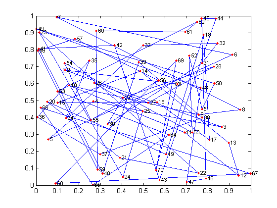

Recocido simulado
Este script muestra el uso del programa recocido y plotRecocido.
Contents
Optimización de f1
% Se deben cargar los parámetros en una estuctura que debe tener % exactamente los siguiente parámetros. f1 = @(x) x(1)^2 + x(2)^2; % imprime2 = @(u,m) ... % fprintf('f(%5.2f,%5.2f)=%8.4f f(%5.2f,%5.2f)=%8.4f',... % u.x(1),u.x(2),u.f,m.x(1),m.x(2),u.f); p.cadIntAcep = 40; p.cadInt = 80; p.maxCad = 1; p.frecImp = 5; p.alfa = 0.80; p.beta = 1.2; p.minRazAcep = 0.90; p.variarC = 0; p.x0 = [10 -10]'; p.FcnObj = f1; % función objetivo p.FcnVec = @vecino; % función de vecindad p.Imp = @imprime; % función de impresión % Inicializar función de vecindad vecino([-10 10;-10 10],[0.2 0.2]'); res = recocido(p,10); % Ahora hacemos animación de los resultados for i=1:length(res.intentos) clf subplot(3,1,1) plot(res.intentos(1:i),res.uf(1:i),'.g',... res.intentos(1:i),res.f(1:i),'-b') axis([0 max(res.intentos) 0 200]) xlabel('intentos') ylabel('mejor encontrado') subplot(3,1,2) plot(res.intentos(1:i),res.c(1:i),'.-r') axis([0 max(res.intentos) 0 max(res.c)]) xlabel('intentos') ylabel('c') subplot(3,1,3) plot(res.ux(1:i,1),res.ux(1:i,2),'.g',... res.x(1:i,1),res.x(1:i,2),'.-b') grid on axis([-10 10 -10 10]) xlabel('x') ylabel('y') pause(0.01) end
Fijando límites y tamaño de vecindad en vecino f( 10.000, -9.835)= 196.7307 f( 10.000, -9.835)= 196.7307 intentos=5 c=10.000000 f( 9.539, -9.672)= 184.5391 f( 9.539, -9.672)= 184.5391 intentos=10 c=10.000000 f( 9.396, -9.392)= 176.4898 f( 9.543, -9.443)= 180.2472 intentos=15 c=10.000000 f( 9.396, -9.392)= 176.4898 f( 9.811, -9.262)= 182.0384 intentos=20 c=10.000000 f( 9.497, -9.126)= 173.4725 f( 9.532, -9.375)= 178.7406 intentos=25 c=10.000000 f( 9.497, -9.126)= 173.4725 f( 9.572, -9.162)= 175.5682 intentos=30 c=10.000000 f( 9.497, -9.126)= 173.4725 f( 9.856, -9.057)= 179.1685 intentos=35 c=10.000000 f( 9.497, -9.126)= 173.4725 f( 9.803, -8.998)= 177.0612 intentos=40 c=10.000000 f( 9.549, -8.779)= 168.2531 f( 9.804, -8.801)= 173.5775 intentos=45 c=10.000000 f( 9.549, -8.779)= 168.2531 f( 10.000, -9.046)= 181.8378 intentos=50 c=8.000000 f( 9.549, -8.779)= 168.2531 f( 10.000, -9.162)= 183.9370 intentos=55 c=8.000000 f( 9.549, -8.779)= 168.2531 f( 9.938, -8.982)= 179.4440 intentos=60 c=8.000000 f( 9.549, -8.779)= 168.2531 f( 10.000, -9.164)= 183.9699 intentos=65 c=8.000000 f( 9.549, -8.779)= 168.2531 f( 9.819, -9.422)= 185.1856 intentos=70 c=8.000000 f( 9.549, -8.779)= 168.2531 f( 9.754, -9.924)= 193.6378 intentos=75 c=8.000000 f( 9.549, -8.779)= 168.2531 f( 9.895, -9.782)= 193.6065 intentos=80 c=8.000000 f( 9.549, -8.779)= 168.2531 f( 9.938, -9.652)= 191.9308 intentos=85 c=8.000000 f( 9.549, -8.779)= 168.2531 f( 10.000, -9.852)= 197.0639 intentos=90 c=8.000000 Mejor punto encontrado: f( 9.549, -8.779)= 168.2531

Curva de mejor encontrado para f1
Obtenemos la curva de mejor encontrado para f1.
clf p.frecImp = 10; [x,prom,desv] = plotRecocido(p,20);
*** Iniciando corrida #1 *** f( 9.360, -9.449)= 176.8989 f( 9.360, -9.449)= 176.8989 intentos=10 c=0.100000 f( 8.445, -9.629)= 164.0475 f( 8.520, -9.581)= 164.3917 intentos=20 c=0.100000 f( 8.080, -9.589)= 157.2401 f( 8.080, -9.589)= 157.2401 intentos=30 c=0.100000 f( 8.071, -9.131)= 148.5163 f( 8.142, -9.216)= 151.2393 intentos=40 c=0.100000 f( 7.825, -8.892)= 140.3076 f( 7.665, -9.064)= 140.9029 intentos=50 c=0.100000 f( 7.763, -8.764)= 137.0805 f( 7.823, -8.845)= 139.4258 intentos=60 c=0.100000 f( 7.499, -8.247)= 124.2482 f( 7.499, -8.247)= 124.2482 intentos=70 c=0.100000 f( 7.068, -8.071)= 115.0973 f( 7.068, -8.071)= 115.0973 intentos=80 c=0.120000 f( 6.497, -7.734)= 102.0248 f( 6.497, -7.734)= 102.0248 intentos=90 c=0.120000 f( 6.254, -7.805)= 100.0312 f( 6.254, -7.805)= 100.0312 intentos=100 c=0.120000 f( 5.896, -7.446)= 90.2133 f( 6.035, -7.480)= 92.3739 intentos=110 c=0.120000 f( 5.502, -7.437)= 85.5787 f( 5.502, -7.437)= 85.5787 intentos=120 c=0.120000 f( 4.856, -7.371)= 77.9123 f( 4.821, -7.431)= 78.4649 intentos=130 c=0.120000 f( 4.607, -7.114)= 71.8284 f( 4.697, -7.207)= 74.0003 intentos=140 c=0.120000 f( 4.432, -6.478)= 61.6000 f( 4.432, -6.478)= 61.6000 intentos=150 c=0.120000 f( 4.303, -6.216)= 57.1623 f( 4.303, -6.216)= 57.1623 intentos=160 c=0.144000 f( 4.257, -5.859)= 52.4570 f( 4.183, -5.980)= 53.2539 intentos=170 c=0.144000 f( 4.437, -5.704)= 52.2252 f( 4.437, -5.704)= 52.2252 intentos=180 c=0.144000 f( 4.039, -4.918)= 40.5045 f( 4.039, -4.918)= 40.5045 intentos=190 c=0.144000 f( 3.503, -3.778)= 26.5397 f( 3.503, -3.778)= 26.5397 intentos=200 c=0.144000 f( 3.156, -3.629)= 23.1242 f( 3.156, -3.629)= 23.1242 intentos=210 c=0.144000 f( 3.258, -2.992)= 19.5684 f( 3.258, -2.992)= 19.5684 intentos=220 c=0.144000 f( 2.965, -2.494)= 15.0123 f( 2.950, -2.583)= 15.3758 intentos=230 c=0.144000 f( 2.704, -2.092)= 11.6884 f( 2.704, -2.092)= 11.6884 intentos=240 c=0.172800 f( 2.369, -2.162)= 10.2867 f( 2.369, -2.162)= 10.2867 intentos=250 c=0.172800 f( 1.636, -1.746)= 5.7246 f( 1.636, -1.746)= 5.7246 intentos=260 c=0.172800 f( 1.317, -1.676)= 4.5422 f( 1.401, -1.840)= 5.3467 intentos=270 c=0.172800 f( 0.702, -1.575)= 2.9748 f( 0.702, -1.575)= 2.9748 intentos=280 c=0.172800 f( 0.209, -1.524)= 2.3650 f( 0.134, -1.698)= 2.9010 intentos=290 c=0.172800 f( 0.402, -1.169)= 1.5279 f( 0.323, -1.258)= 1.6868 intentos=300 c=0.172800 f( 0.492, -0.673)= 0.6950 f( 0.492, -0.673)= 0.6950 intentos=310 c=0.207360 f( 0.296, -0.305)= 0.1805 f( 0.343, -0.266)= 0.1886 intentos=320 c=0.207360 f( 0.214, -0.077)= 0.0519 f( 0.612, -0.104)= 0.3850 intentos=330 c=0.207360 f( 0.214, -0.077)= 0.0519 f( 0.273, 0.176)= 0.1051 intentos=340 c=0.207360 f( 0.214, -0.077)= 0.0519 f( 0.617, 0.267)= 0.4524 intentos=350 c=0.207360 f( 0.172, 0.113)= 0.0424 f( 0.232, -0.038)= 0.0551 intentos=360 c=0.248832 f( -0.014, 0.021)= 0.0006 f( -0.305, 0.022)= 0.0936 intentos=370 c=0.248832 f( -0.014, 0.021)= 0.0006 f( 0.066, -0.136)= 0.0229 intentos=380 c=0.248832 f( -0.014, 0.021)= 0.0006 f( 0.200, 0.377)= 0.1823 intentos=390 c=0.248832 f( -0.014, 0.021)= 0.0006 f( 0.592, 0.489)= 0.5889 intentos=400 c=0.248832 f( -0.014, 0.021)= 0.0006 f( 0.662, 0.510)= 0.6977 intentos=410 c=0.298598 f( -0.014, 0.021)= 0.0006 f( 0.513, 0.529)= 0.5432 intentos=420 c=0.298598 f( -0.014, 0.021)= 0.0006 f( 0.461, -0.127)= 0.2286 intentos=430 c=0.298598 f( -0.014, 0.021)= 0.0006 f( 0.051, 0.329)= 0.1110 intentos=440 c=0.298598 f( -0.014, 0.021)= 0.0006 f( 0.206, 0.154)= 0.0662 intentos=450 c=0.298598 f( -0.014, 0.021)= 0.0006 f( 0.334, 0.699)= 0.5995 intentos=460 c=0.358318 f( -0.014, 0.021)= 0.0006 f( 0.617, 0.893)= 1.1780 intentos=470 c=0.358318 f( -0.014, 0.021)= 0.0006 f( 0.289, 1.190)= 1.5000 intentos=480 c=0.358318 f( -0.014, 0.021)= 0.0006 f( 0.449, 1.136)= 1.4918 intentos=490 c=0.358318 f( -0.014, 0.021)= 0.0006 f( 0.704, 0.450)= 0.6991 intentos=500 c=0.358318 f( -0.014, 0.021)= 0.0006 f( 0.361, 0.424)= 0.3098 intentos=510 c=0.429982 f( -0.014, 0.021)= 0.0006 f( 0.004, 0.330)= 0.1086 intentos=520 c=0.429982 f( -0.014, 0.021)= 0.0006 f( 0.061, 0.513)= 0.2670 intentos=530 c=0.429982 f( -0.014, 0.021)= 0.0006 f( 0.090, 0.487)= 0.2454 intentos=540 c=0.429982 f( -0.014, 0.021)= 0.0006 f( -0.137, 0.275)= 0.0946 intentos=550 c=0.515978 f( -0.014, 0.021)= 0.0006 f( -0.659, -0.223)= 0.4837 intentos=560 c=0.515978 f( -0.014, 0.021)= 0.0006 f( -0.873, 0.402)= 0.9234 intentos=570 c=0.515978 f( -0.014, 0.021)= 0.0006 f( -0.664, 0.393)= 0.5956 intentos=580 c=0.515978 f( -0.014, 0.021)= 0.0006 f( -0.724, 0.631)= 0.9223 intentos=590 c=0.515978 f( -0.014, 0.021)= 0.0006 f( -0.602, 0.048)= 0.3650 intentos=600 c=0.619174 f( -0.014, 0.021)= 0.0006 f( -0.142, 0.291)= 0.1047 intentos=610 c=0.619174 f( -0.014, 0.021)= 0.0006 f( -0.208, 1.029)= 1.1016 intentos=620 c=0.619174 f( -0.014, 0.021)= 0.0006 f( -0.312, 1.022)= 1.1422 intentos=630 c=0.619174 temperatura inicial calculada = 0.6192 f( -0.014, 0.021)= 0.0006 f( -0.675, 1.298)= 2.1393 intentos=640 c=0.619174 f( -0.014, 0.021)= 0.0006 f( -0.760, 1.170)= 1.9457 intentos=650 c=0.619174 f( -0.014, 0.021)= 0.0006 f( -0.344, 0.732)= 0.6532 intentos=660 c=0.619174 f( -0.014, 0.021)= 0.0006 f( -0.201, 0.636)= 0.4445 intentos=670 c=0.619174 f( -0.014, 0.021)= 0.0006 f( -0.172, 0.273)= 0.1041 intentos=680 c=0.619174 f( -0.014, 0.021)= 0.0006 f( 0.171, -0.127)= 0.0453 intentos=690 c=0.495339 f( -0.014, 0.021)= 0.0006 f( 0.298, -0.196)= 0.1274 intentos=700 c=0.495339 f( -0.014, 0.021)= 0.0006 f( 0.375, -0.298)= 0.2297 intentos=710 c=0.495339 f( -0.014, 0.021)= 0.0006 f( 0.626, -0.440)= 0.5855 intentos=720 c=0.495339 Mejor punto encontrado: f( -0.014, 0.021)= 0.0006 *** Iniciando corrida #2 *** f( 9.947, -9.818)= 195.3548 f( 10.000, -9.789)= 195.8285 intentos=10 c=0.100000 f( 9.331, -9.421)= 175.8156 f( 9.138, -9.633)= 176.2940 intentos=20 c=0.100000 f( 8.174, -9.157)= 150.6669 f( 8.174, -9.157)= 150.6669 intentos=30 c=0.100000 f( 7.445, -8.341)= 124.9955 f( 7.445, -8.341)= 124.9955 intentos=40 c=0.100000 f( 7.026, -7.827)= 110.6255 f( 7.026, -7.827)= 110.6255 intentos=50 c=0.100000 f( 6.461, -7.337)= 95.5824 f( 6.461, -7.337)= 95.5824 intentos=60 c=0.100000 f( 6.012, -7.256)= 88.8059 f( 6.168, -7.294)= 91.2385 intentos=70 c=0.120000 f( 5.816, -6.820)= 80.3360 f( 5.981, -6.947)= 84.0352 intentos=80 c=0.120000 f( 5.144, -6.616)= 70.2257 f( 5.313, -6.606)= 71.8733 intentos=90 c=0.120000 f( 4.848, -6.225)= 62.2475 f( 5.067, -6.217)= 64.3301 intentos=100 c=0.120000 f( 4.648, -5.961)= 57.1413 f( 4.778, -6.034)= 59.2406 intentos=110 c=0.120000 f( 4.450, -5.892)= 54.5186 f( 4.633, -5.981)= 57.2407 intentos=120 c=0.120000 f( 3.984, -5.443)= 45.4997 f( 4.087, -5.546)= 47.4677 intentos=130 c=0.120000 f( 3.421, -4.789)= 34.6402 f( 3.421, -4.789)= 34.6402 intentos=140 c=0.120000 f( 2.835, -4.588)= 29.0864 f( 2.832, -4.694)= 30.0595 intentos=150 c=0.144000 f( 2.623, -4.112)= 23.7887 f( 2.623, -4.112)= 23.7887 intentos=160 c=0.144000 f( 2.278, -3.974)= 20.9818 f( 2.471, -4.104)= 22.9516 intentos=170 c=0.144000 f( 1.850, -3.434)= 15.2157 f( 1.797, -3.513)= 15.5720 intentos=180 c=0.144000 f( 1.694, -3.042)= 12.1208 f( 1.762, -3.120)= 12.8418 intentos=190 c=0.144000 f( 1.843, -2.200)= 8.2366 f( 1.775, -2.385)= 8.8390 intentos=200 c=0.144000 f( 1.141, -1.319)= 3.0431 f( 1.141, -1.319)= 3.0431 intentos=210 c=0.172800 f( 1.151, -0.794)= 1.9556 f( 1.223, -0.690)= 1.9719 intentos=220 c=0.172800 f( 0.955, -0.614)= 1.2882 f( 1.073, -0.562)= 1.4683 intentos=230 c=0.172800 f( 0.573, -0.357)= 0.4560 f( 0.573, -0.357)= 0.4560 intentos=240 c=0.172800 f( 0.403, -0.506)= 0.4186 f( 0.195, -0.852)= 0.7633 intentos=250 c=0.172800 f( 0.085, -0.272)= 0.0811 f( 0.169, -0.363)= 0.1604 intentos=260 c=0.172800 f( 0.006, -0.081)= 0.0066 f( -0.520, -0.084)= 0.2772 intentos=270 c=0.207360 f( 0.006, -0.081)= 0.0066 f( -0.244, 0.286)= 0.1409 intentos=280 c=0.207360 f( 0.006, -0.081)= 0.0066 f( -0.058, 0.110)= 0.0156 intentos=290 c=0.207360 f( 0.006, -0.081)= 0.0066 f( -0.218, -0.276)= 0.1234 intentos=300 c=0.207360 f( 0.006, -0.081)= 0.0066 f( 0.015, 0.246)= 0.0608 intentos=310 c=0.248832 f( 0.006, -0.081)= 0.0066 f( 0.483, 0.321)= 0.3363 intentos=320 c=0.248832 f( 0.006, -0.081)= 0.0066 f( 0.016, 0.396)= 0.1571 intentos=330 c=0.248832 f( 0.006, -0.081)= 0.0066 f( 0.412, 0.247)= 0.2308 intentos=340 c=0.248832 f( 0.006, -0.081)= 0.0066 f( 0.684, 0.226)= 0.5183 intentos=350 c=0.248832 f( 0.006, -0.081)= 0.0066 f( 0.491, 0.322)= 0.3449 intentos=360 c=0.248832 f( 0.006, -0.081)= 0.0066 f( -0.067, 0.753)= 0.5714 intentos=370 c=0.298598 f( 0.006, -0.081)= 0.0066 f( 0.080, 0.328)= 0.1139 intentos=380 c=0.298598 f( 0.006, -0.081)= 0.0066 f( 0.230, -0.053)= 0.0557 intentos=390 c=0.298598 f( 0.006, -0.081)= 0.0066 f( 0.377, 0.458)= 0.3513 intentos=400 c=0.298598 f( 0.006, -0.081)= 0.0066 f( 0.105, 0.330)= 0.1198 intentos=410 c=0.358318 f( 0.006, -0.081)= 0.0066 f( 0.232, 0.462)= 0.2672 intentos=420 c=0.358318 f( 0.006, -0.081)= 0.0066 f( -0.018, 0.415)= 0.1726 intentos=430 c=0.358318 f( 0.006, -0.081)= 0.0066 f( -0.327, 0.158)= 0.1323 intentos=440 c=0.358318 f( 0.006, -0.081)= 0.0066 f( -0.064, 0.235)= 0.0592 intentos=450 c=0.358318 f( 0.006, -0.081)= 0.0066 f( 0.036, 0.189)= 0.0371 intentos=460 c=0.429982 f( 0.006, -0.081)= 0.0066 f( -0.142, -0.451)= 0.2241 intentos=470 c=0.429982 f( 0.006, -0.081)= 0.0066 f( -0.607, -0.532)= 0.6515 intentos=480 c=0.429982 f( 0.006, -0.081)= 0.0066 f( -0.364, -1.076)= 1.2895 intentos=490 c=0.429982 f( 0.006, -0.081)= 0.0066 f( -0.045, -0.613)= 0.3779 intentos=500 c=0.429982 f( 0.006, -0.081)= 0.0066 f( -0.349, -0.583)= 0.4619 intentos=510 c=0.515978 f( 0.006, -0.081)= 0.0066 f( 0.095, -0.590)= 0.3576 intentos=520 c=0.515978 f( 0.006, -0.081)= 0.0066 f( 0.706, -0.586)= 0.8417 intentos=530 c=0.515978 f( 0.006, -0.081)= 0.0066 f( 0.585, -0.418)= 0.5174 intentos=540 c=0.515978 temperatura inicial calculada = 0.5160 f( 0.006, -0.081)= 0.0066 f( 0.175, -0.295)= 0.1179 intentos=550 c=0.515978 f( -0.035, 0.017)= 0.0015 f( -0.296, -0.134)= 0.1057 intentos=560 c=0.515978 f( -0.035, 0.017)= 0.0015 f( 0.092, -0.195)= 0.0464 intentos=570 c=0.515978 f( -0.035, 0.017)= 0.0015 f( -0.221, -0.720)= 0.5677 intentos=580 c=0.515978 f( -0.035, 0.017)= 0.0015 f( -0.208, -0.167)= 0.0709 intentos=590 c=0.515978 f( -0.035, 0.017)= 0.0015 f( -0.408, -0.068)= 0.1708 intentos=600 c=0.412782 f( -0.035, 0.017)= 0.0015 f( 0.073, 0.035)= 0.0065 intentos=610 c=0.412782 f( -0.035, 0.017)= 0.0015 f( 0.113, -0.273)= 0.0874 intentos=620 c=0.412782 f( -0.035, 0.017)= 0.0015 f( 0.006, -0.323)= 0.1041 intentos=630 c=0.412782 f( -0.035, 0.017)= 0.0015 f( 0.098, 0.100)= 0.0197 intentos=640 c=0.330226 f( -0.035, 0.017)= 0.0015 f( 0.044, 0.494)= 0.2461 intentos=650 c=0.330226 f( -0.035, 0.017)= 0.0015 f( -0.394, 0.069)= 0.1603 intentos=660 c=0.330226 f( -0.035, 0.017)= 0.0015 f( -0.147, 0.119)= 0.0360 intentos=670 c=0.330226 f( -0.035, 0.017)= 0.0015 f( -0.672, 0.063)= 0.4554 intentos=680 c=0.330226 Mejor punto encontrado: f( -0.035, 0.017)= 0.0015 *** Iniciando corrida #3 *** f( 9.718, -9.749)= 189.4854 f( 9.674, -9.879)= 191.1840 intentos=10 c=0.100000 f( 9.645, -9.142)= 176.6174 f( 9.516, -9.337)= 177.7391 intentos=20 c=0.100000 f( 9.160, -8.572)= 157.3785 f( 9.160, -8.572)= 157.3785 intentos=30 c=0.100000 f( 8.904, -8.252)= 147.3851 f( 8.904, -8.252)= 147.3851 intentos=40 c=0.100000 f( 8.516, -7.879)= 134.6063 f( 8.524, -8.079)= 137.9207 intentos=50 c=0.100000 f( 8.429, -7.232)= 123.3449 f( 8.600, -7.208)= 125.9280 intentos=60 c=0.100000 f( 8.171, -6.989)= 115.6141 f( 8.171, -6.989)= 115.6141 intentos=70 c=0.100000 f( 8.165, -6.492)= 108.8013 f( 8.240, -6.439)= 109.3562 intentos=80 c=0.100000 f( 7.429, -6.533)= 97.8680 f( 7.500, -6.536)= 98.9789 intentos=90 c=0.120000 f( 7.212, -6.419)= 93.2143 f( 7.219, -6.541)= 94.9086 intentos=100 c=0.120000 f( 7.070, -6.038)= 86.4338 f( 7.223, -5.946)= 87.5350 intentos=110 c=0.120000 f( 6.621, -5.808)= 77.5753 f( 6.686, -5.947)= 80.0668 intentos=120 c=0.120000 f( 6.149, -5.125)= 64.0780 f( 6.325, -5.014)= 65.1411 intentos=130 c=0.120000 f( 5.803, -5.008)= 58.7545 f( 5.951, -5.079)= 61.2179 intentos=140 c=0.120000 f( 5.402, -4.210)= 46.9064 f( 5.402, -4.210)= 46.9064 intentos=150 c=0.120000 f( 4.421, -3.740)= 33.5326 f( 4.356, -3.863)= 33.9022 intentos=160 c=0.144000 f( 4.192, -3.843)= 32.3417 f( 4.215, -4.006)= 33.8176 intentos=170 c=0.144000 f( 3.839, -3.152)= 24.6705 f( 3.839, -3.152)= 24.6705 intentos=180 c=0.144000 f( 3.804, -2.583)= 21.1422 f( 3.804, -2.583)= 21.1422 intentos=190 c=0.144000 f( 3.532, -2.531)= 18.8806 f( 3.532, -2.531)= 18.8806 intentos=200 c=0.144000 f( 2.642, -2.354)= 12.5244 f( 2.647, -2.504)= 13.2727 intentos=210 c=0.144000 f( 2.206, -2.039)= 9.0240 f( 2.206, -2.039)= 9.0240 intentos=220 c=0.144000 f( 1.457, -1.651)= 4.8507 f( 1.522, -1.773)= 5.4605 intentos=230 c=0.172800 f( 1.495, -1.239)= 3.7707 f( 1.495, -1.239)= 3.7707 intentos=240 c=0.172800 f( 1.120, -0.914)= 2.0897 f( 1.132, -1.060)= 2.4037 intentos=250 c=0.172800 f( 0.920, -0.547)= 1.1458 f( 0.920, -0.547)= 1.1458 intentos=260 c=0.172800 f( 0.812, -0.674)= 1.1125 f( 0.360, -1.161)= 1.4781 intentos=270 c=0.172800 f( 0.812, -0.674)= 1.1125 f( 0.510, -1.061)= 1.3862 intentos=280 c=0.172800 f( 0.600, -0.664)= 0.8007 f( 0.600, -0.664)= 0.8007 intentos=290 c=0.207360 f( 0.357, -0.438)= 0.3191 f( 0.688, -0.329)= 0.5810 intentos=300 c=0.207360 f( 0.418, 0.108)= 0.1863 f( 0.617, 0.116)= 0.3942 intentos=310 c=0.207360 f( 0.372, 0.088)= 0.1459 f( 0.507, 0.229)= 0.3091 intentos=320 c=0.207360 f( 0.372, 0.088)= 0.1459 f( 0.496, 0.576)= 0.5780 intentos=330 c=0.248832 f( -0.187, 0.200)= 0.0751 f( -0.187, 0.200)= 0.0751 intentos=340 c=0.248832 f( -0.018, 0.094)= 0.0092 f( 0.403, 0.001)= 0.1627 intentos=350 c=0.248832 f( -0.018, 0.094)= 0.0092 f( 0.701, 0.329)= 0.5991 intentos=360 c=0.248832 f( -0.018, 0.094)= 0.0092 f( 0.883, 0.170)= 0.8076 intentos=370 c=0.248832 f( -0.018, 0.094)= 0.0092 f( 0.855, 0.212)= 0.7763 intentos=380 c=0.248832 f( -0.018, 0.094)= 0.0092 f( 1.092, 0.099)= 1.2027 intentos=390 c=0.298598 f( -0.018, 0.094)= 0.0092 f( 0.909, 0.114)= 0.8392 intentos=400 c=0.298598 f( -0.018, 0.094)= 0.0092 f( 0.619, 0.184)= 0.4167 intentos=410 c=0.298598 f( -0.018, 0.094)= 0.0092 f( 0.154, 0.064)= 0.0279 intentos=420 c=0.298598 f( 0.046, 0.037)= 0.0035 f( -0.087, -0.226)= 0.0586 intentos=430 c=0.298598 f( 0.046, 0.037)= 0.0035 f( 0.261, -0.445)= 0.2660 intentos=440 c=0.358318 f( 0.046, 0.037)= 0.0035 f( 0.300, 0.253)= 0.1540 intentos=450 c=0.358318 f( 0.046, 0.037)= 0.0035 f( 0.059, -0.040)= 0.0050 intentos=460 c=0.358318 f( 0.046, 0.037)= 0.0035 f( 0.378, -0.417)= 0.3171 intentos=470 c=0.358318 temperatura inicial calculada = 0.3583 f( 0.046, 0.037)= 0.0035 f( 0.284, -0.234)= 0.1352 intentos=480 c=0.358318 f( 0.046, 0.037)= 0.0035 f( 0.145, -0.259)= 0.0883 intentos=490 c=0.358318 f( 0.046, 0.037)= 0.0035 f( 0.159, -0.232)= 0.0789 intentos=500 c=0.358318 f( 0.046, 0.037)= 0.0035 f( -0.280, -0.518)= 0.3468 intentos=510 c=0.358318 f( 0.046, 0.037)= 0.0035 f( -0.356, -0.483)= 0.3597 intentos=520 c=0.358318 f( 0.039, 0.044)= 0.0034 f( 0.039, 0.044)= 0.0034 intentos=530 c=0.286654 f( -0.020, 0.008)= 0.0005 f( 0.129, -0.477)= 0.2444 intentos=540 c=0.286654 f( -0.020, 0.008)= 0.0005 f( -0.476, -0.687)= 0.6980 intentos=550 c=0.286654 f( -0.020, 0.008)= 0.0005 f( -0.061, -0.481)= 0.2353 intentos=560 c=0.286654 f( -0.020, 0.008)= 0.0005 f( 0.022, -0.439)= 0.1933 intentos=570 c=0.229324 f( -0.020, 0.008)= 0.0005 f( 0.256, -0.578)= 0.4002 intentos=580 c=0.229324 f( -0.020, 0.008)= 0.0005 f( 0.097, 0.093)= 0.0181 intentos=590 c=0.229324 f( -0.020, 0.008)= 0.0005 f( -0.044, -0.308)= 0.0969 intentos=600 c=0.229324 f( -0.020, 0.008)= 0.0005 f( 0.435, 0.179)= 0.2210 intentos=610 c=0.229324 Mejor punto encontrado: f( -0.020, 0.008)= 0.0005 *** Iniciando corrida #4 *** f( 9.628, -9.906)= 190.8349 f( 9.573,-10.000)= 191.6362 intentos=10 c=0.100000 f( 9.544, -9.512)= 181.5802 f( 9.544, -9.512)= 181.5802 intentos=20 c=0.100000 f( 9.407, -8.726)= 164.6273 f( 9.407, -8.726)= 164.6273 intentos=30 c=0.100000 f( 9.135, -8.362)= 153.3701 f( 9.135, -8.362)= 153.3701 intentos=40 c=0.100000 f( 9.071, -7.546)= 139.2233 f( 9.071, -7.546)= 139.2233 intentos=50 c=0.100000 f( 8.796, -6.913)= 125.1677 f( 8.796, -6.913)= 125.1677 intentos=60 c=0.100000 f( 8.622, -6.476)= 116.2794 f( 8.626, -6.654)= 118.6788 intentos=70 c=0.100000 f( 7.997, -6.231)= 102.7732 f( 7.958, -6.402)= 104.3157 intentos=80 c=0.120000 f( 7.470, -6.058)= 92.5009 f( 7.470, -6.058)= 92.5009 intentos=90 c=0.120000 f( 7.446, -5.456)= 85.2061 f( 7.465, -5.579)= 86.8527 intentos=100 c=0.120000 f( 7.039, -5.219)= 76.7825 f( 7.039, -5.219)= 76.7825 intentos=110 c=0.120000 f( 6.644, -4.631)= 65.5922 f( 6.644, -4.631)= 65.5922 intentos=120 c=0.120000 f( 6.272, -4.734)= 61.7504 f( 6.231, -5.104)= 64.8765 intentos=130 c=0.120000 f( 5.777, -4.874)= 57.1315 f( 5.753, -5.126)= 59.3834 intentos=140 c=0.120000 f( 5.381, -4.917)= 53.1329 f( 5.578, -4.911)= 55.2357 intentos=150 c=0.144000 f( 4.903, -4.920)= 48.2461 f( 5.079, -4.955)= 50.3557 intentos=160 c=0.144000 f( 4.389, -4.848)= 42.7683 f( 4.412, -4.842)= 42.9130 intentos=170 c=0.144000 f( 4.216, -4.504)= 38.0619 f( 4.216, -4.504)= 38.0619 intentos=180 c=0.144000 f( 4.261, -3.825)= 32.7862 f( 4.404, -3.842)= 34.1569 intentos=190 c=0.144000 f( 3.622, -3.387)= 24.5865 f( 3.657, -3.547)= 25.9569 intentos=200 c=0.144000 f( 3.306, -3.308)= 21.8752 f( 3.355, -3.409)= 22.8810 intentos=210 c=0.144000 f( 2.902, -3.197)= 18.6398 f( 3.070, -3.128)= 19.2069 intentos=220 c=0.144000 f( 2.548, -2.865)= 14.6987 f( 2.548, -2.865)= 14.6987 intentos=230 c=0.172800 f( 2.246, -2.230)= 10.0149 f( 2.396, -2.180)= 10.4928 intentos=240 c=0.172800 f( 1.912, -1.597)= 6.2046 f( 1.912, -1.597)= 6.2046 intentos=250 c=0.172800 f( 1.421, -1.313)= 3.7417 f( 1.513, -1.442)= 4.3689 intentos=260 c=0.172800 f( 1.364, -0.742)= 2.4100 f( 1.552, -0.590)= 2.7565 intentos=270 c=0.172800 f( 1.000, -0.744)= 1.5535 f( 1.000, -0.744)= 1.5535 intentos=280 c=0.172800 f( 0.559, -0.369)= 0.4485 f( 0.613, -0.566)= 0.6966 intentos=290 c=0.207360 f( 0.268, -0.176)= 0.1025 f( 0.181, -0.326)= 0.1392 intentos=300 c=0.207360 f( 0.040, -0.240)= 0.0593 f( -0.156, -0.500)= 0.2741 intentos=310 c=0.207360 f( -0.001, -0.088)= 0.0077 f( 0.156, -0.006)= 0.0244 intentos=320 c=0.207360 f( -0.001, -0.088)= 0.0077 f( 0.227, -0.129)= 0.0683 intentos=330 c=0.207360 f( -0.001, -0.088)= 0.0077 f( 0.526, 0.109)= 0.2888 intentos=340 c=0.248832 f( -0.001, -0.088)= 0.0077 f( 0.333, 0.027)= 0.1114 intentos=350 c=0.248832 f( -0.001, -0.088)= 0.0077 f( 0.259, 0.112)= 0.0795 intentos=360 c=0.248832 f( -0.001, -0.088)= 0.0077 f( 0.242, 0.550)= 0.3612 intentos=370 c=0.248832 f( -0.001, -0.088)= 0.0077 f( 0.099, 0.148)= 0.0316 intentos=380 c=0.248832 f( -0.023, -0.005)= 0.0006 f( 0.117, -0.058)= 0.0172 intentos=390 c=0.298598 f( 0.009, 0.007)= 0.0001 f( -0.009, -0.237)= 0.0562 intentos=400 c=0.298598 f( 0.009, 0.007)= 0.0001 f( 0.086, 0.383)= 0.1544 intentos=410 c=0.298598 f( 0.009, 0.007)= 0.0001 f( -0.401, 0.339)= 0.2759 intentos=420 c=0.298598 temperatura inicial calculada = 0.2986 f( 0.009, 0.007)= 0.0001 f( -0.108, 0.072)= 0.0169 intentos=430 c=0.298598 f( 0.009, 0.007)= 0.0001 f( 0.047, -0.210)= 0.0461 intentos=440 c=0.298598 f( 0.009, 0.007)= 0.0001 f( 0.452, -0.015)= 0.2044 intentos=450 c=0.298598 f( 0.009, 0.007)= 0.0001 f( -0.007, -0.174)= 0.0304 intentos=460 c=0.298598 f( 0.009, 0.007)= 0.0001 f( 0.001, -0.357)= 0.1278 intentos=470 c=0.298598 f( 0.009, 0.007)= 0.0001 f( 0.200, -0.081)= 0.0468 intentos=480 c=0.238879 f( 0.009, 0.007)= 0.0001 f( 0.023, 0.001)= 0.0005 intentos=490 c=0.238879 f( 0.009, 0.007)= 0.0001 f( -0.119, -0.357)= 0.1416 intentos=500 c=0.238879 f( 0.009, 0.007)= 0.0001 f( 0.330, 0.501)= 0.3598 intentos=510 c=0.238879 Mejor punto encontrado: f( 0.009, 0.007)= 0.0001 *** Iniciando corrida #5 *** f( 9.634, -9.585)= 184.6868 f( 9.634, -9.585)= 184.6868 intentos=10 c=0.100000 f( 9.243, -9.129)= 168.7713 f( 9.243, -9.129)= 168.7713 intentos=20 c=0.100000 f( 8.091, -8.821)= 143.2825 f( 8.091, -8.821)= 143.2825 intentos=30 c=0.100000 f( 7.868, -8.520)= 134.5013 f( 7.712, -8.682)= 134.8410 intentos=40 c=0.100000 f( 7.521, -8.493)= 128.7069 f( 7.521, -8.493)= 128.7069 intentos=50 c=0.100000 f( 7.205, -8.314)= 121.0353 f( 7.205, -8.314)= 121.0353 intentos=60 c=0.100000 f( 6.744, -8.006)= 109.5685 f( 6.744, -8.006)= 109.5685 intentos=70 c=0.100000 f( 6.379, -7.455)= 96.2784 f( 6.384, -7.539)= 97.5969 intentos=80 c=0.120000 f( 6.091, -7.553)= 94.1406 f( 6.222, -7.462)= 94.4036 intentos=90 c=0.120000 f( 5.868, -6.775)= 80.3354 f( 6.062, -6.606)= 80.3825 intentos=100 c=0.120000 f( 5.572, -6.374)= 71.6748 f( 5.456, -6.514)= 72.1959 intentos=110 c=0.120000 f( 5.059, -6.139)= 63.2874 f( 5.059, -6.139)= 63.2874 intentos=120 c=0.120000 f( 5.015, -5.720)= 57.8746 f( 5.015, -5.720)= 57.8746 intentos=130 c=0.120000 f( 4.879, -5.400)= 52.9651 f( 5.052, -5.570)= 56.5493 intentos=140 c=0.120000 f( 4.540, -5.148)= 47.1089 f( 4.540, -5.148)= 47.1089 intentos=150 c=0.120000 f( 4.162, -5.193)= 44.2877 f( 4.162, -5.193)= 44.2877 intentos=160 c=0.144000 f( 4.059, -4.668)= 38.2607 f( 4.059, -4.668)= 38.2607 intentos=170 c=0.144000 f( 3.397, -4.540)= 32.1500 f( 3.397, -4.540)= 32.1500 intentos=180 c=0.144000 f( 3.479, -4.076)= 28.7129 f( 3.632, -4.063)= 29.6989 intentos=190 c=0.144000 f( 3.389, -3.810)= 25.9989 f( 3.389, -3.810)= 25.9989 intentos=200 c=0.144000 f( 3.115, -3.265)= 20.3594 f( 3.115, -3.265)= 20.3594 intentos=210 c=0.144000 f( 2.404, -2.602)= 12.5533 f( 2.404, -2.602)= 12.5533 intentos=220 c=0.144000 f( 2.075, -2.441)= 10.2636 f( 2.249, -2.524)= 11.4260 intentos=230 c=0.172800 f( 1.880, -2.234)= 8.5262 f( 1.880, -2.234)= 8.5262 intentos=240 c=0.172800 f( 1.705, -1.764)= 6.0219 f( 1.748, -1.928)= 6.7727 intentos=250 c=0.172800 f( 1.415, -1.229)= 3.5125 f( 1.415, -1.229)= 3.5125 intentos=260 c=0.172800 f( 1.126, -1.318)= 3.0046 f( 1.217, -1.352)= 3.3096 intentos=270 c=0.172800 f( 0.690, -0.809)= 1.1302 f( 0.940, -0.836)= 1.5819 intentos=280 c=0.172800 f( 0.782, -0.457)= 0.8200 f( 0.729, -0.632)= 0.9310 intentos=290 c=0.207360 f( 0.215, -0.350)= 0.1684 f( 0.206, -0.444)= 0.2395 intentos=300 c=0.207360 f( 0.343, -0.039)= 0.1191 f( 0.343, -0.039)= 0.1191 intentos=310 c=0.207360 f( 0.093, -0.045)= 0.0106 f( -0.046, -0.136)= 0.0206 intentos=320 c=0.207360 f( 0.010, -0.022)= 0.0006 f( -0.263, -0.392)= 0.2227 intentos=330 c=0.207360 f( 0.010, -0.022)= 0.0006 f( -0.745, -0.012)= 0.5545 intentos=340 c=0.248832 f( 0.010, -0.022)= 0.0006 f( -0.970, -0.135)= 0.9600 intentos=350 c=0.248832 f( 0.010, -0.022)= 0.0006 f( -0.638, 0.075)= 0.4122 intentos=360 c=0.248832 f( 0.010, -0.022)= 0.0006 f( -0.042, -0.234)= 0.0564 intentos=370 c=0.248832 f( 0.010, -0.022)= 0.0006 f( -0.039, -0.576)= 0.3332 intentos=380 c=0.248832 f( 0.010, -0.022)= 0.0006 f( -0.377, 0.180)= 0.1743 intentos=390 c=0.298598 f( 0.010, -0.022)= 0.0006 f( 0.446, 0.124)= 0.2141 intentos=400 c=0.298598 f( 0.010, -0.022)= 0.0006 f( -0.299, -0.549)= 0.3904 intentos=410 c=0.298598 f( 0.010, -0.022)= 0.0006 f( -0.213, -0.575)= 0.3757 intentos=420 c=0.298598 f( 0.010, -0.022)= 0.0006 f( -0.551, -0.518)= 0.5726 intentos=430 c=0.358318 f( 0.010, -0.022)= 0.0006 f( -0.735, -0.688)= 1.0138 intentos=440 c=0.358318 f( 0.010, -0.022)= 0.0006 f( -0.894, -0.088)= 0.8064 intentos=450 c=0.358318 f( 0.010, -0.022)= 0.0006 f( -0.365, -0.083)= 0.1402 intentos=460 c=0.358318 f( 0.010, -0.022)= 0.0006 f( -0.514, -0.025)= 0.2649 intentos=470 c=0.358318 temperatura inicial calculada = 0.3583 f( 0.010, -0.022)= 0.0006 f( -0.491, 0.134)= 0.2591 intentos=480 c=0.358318 f( 0.010, -0.022)= 0.0006 f( -0.447, 0.050)= 0.2021 intentos=490 c=0.358318 f( 0.010, -0.022)= 0.0006 f( -0.623, -0.008)= 0.3881 intentos=500 c=0.358318 f( 0.010, -0.022)= 0.0006 f( -0.383, 0.242)= 0.2052 intentos=510 c=0.358318 f( 0.010, -0.022)= 0.0006 f( -0.612, -0.399)= 0.5339 intentos=520 c=0.286654 f( 0.010, -0.022)= 0.0006 f( -0.396, -0.552)= 0.4611 intentos=530 c=0.286654 f( 0.010, -0.022)= 0.0006 f( -0.554, -0.485)= 0.5419 intentos=540 c=0.286654 f( 0.010, -0.022)= 0.0006 f( -0.692, -0.380)= 0.6228 intentos=550 c=0.286654 f( 0.010, -0.022)= 0.0006 f( -0.437, -0.095)= 0.1998 intentos=560 c=0.286654 Mejor punto encontrado: f( 0.010, -0.022)= 0.0006 *** Iniciando corrida #6 *** f( 9.585,-10.000)= 191.8772 f( 9.716,-10.000)= 194.4044 intentos=10 c=0.100000 f( 9.032, -9.736)= 176.3626 f( 9.032, -9.736)= 176.3626 intentos=20 c=0.100000 f( 8.991, -9.310)= 167.5108 f( 9.138, -9.326)= 170.4718 intentos=30 c=0.100000 f( 8.599, -9.044)= 155.7347 f( 8.599, -9.189)= 158.3688 intentos=40 c=0.100000 f( 8.542, -8.974)= 153.4927 f( 8.709, -8.893)= 154.9259 intentos=50 c=0.100000 f( 8.178, -8.537)= 139.7610 f( 8.244, -8.620)= 142.2648 intentos=60 c=0.100000 f( 8.067, -8.230)= 132.7953 f( 8.067, -8.230)= 132.7953 intentos=70 c=0.100000 f( 7.412, -7.525)= 111.5729 f( 7.412, -7.525)= 111.5729 intentos=80 c=0.100000 f( 7.242, -7.027)= 101.8296 f( 7.242, -7.027)= 101.8296 intentos=90 c=0.120000 f( 7.608, -6.285)= 97.3790 f( 7.718, -6.403)= 100.5637 intentos=100 c=0.120000 f( 7.147, -6.159)= 89.0123 f( 7.147, -6.159)= 89.0123 intentos=110 c=0.120000 f( 6.855, -6.194)= 85.3551 f( 6.855, -6.194)= 85.3551 intentos=120 c=0.120000 f( 6.685, -5.423)= 74.0957 f( 6.685, -5.423)= 74.0957 intentos=130 c=0.120000 f( 6.675, -4.810)= 67.6887 f( 6.675, -4.810)= 67.6887 intentos=140 c=0.120000 f( 6.469, -4.544)= 62.4974 f( 6.469, -4.544)= 62.4974 intentos=150 c=0.120000 f( 5.872, -4.495)= 54.6827 f( 5.884, -4.490)= 54.7787 intentos=160 c=0.120000 f( 5.062, -4.478)= 45.6772 f( 5.062, -4.478)= 45.6772 intentos=170 c=0.144000 f( 4.274, -4.488)= 38.4068 f( 4.274, -4.488)= 38.4068 intentos=180 c=0.144000 f( 4.124, -4.196)= 34.6159 f( 4.069, -4.347)= 35.4576 intentos=190 c=0.144000 f( 3.871, -3.648)= 28.2947 f( 3.871, -3.648)= 28.2947 intentos=200 c=0.144000 f( 3.679, -3.241)= 24.0395 f( 3.803, -3.267)= 25.1349 intentos=210 c=0.144000 f( 3.134, -2.791)= 17.6100 f( 3.134, -2.791)= 17.6100 intentos=220 c=0.144000 f( 3.269, -2.481)= 16.8426 f( 3.269, -2.481)= 16.8426 intentos=230 c=0.144000 f( 3.069, -2.294)= 14.6797 f( 3.069, -2.294)= 14.6797 intentos=240 c=0.172800 f( 2.440, -2.315)= 11.3112 f( 2.440, -2.315)= 11.3112 intentos=250 c=0.172800 f( 2.269, -2.046)= 9.3332 f( 2.528, -1.797)= 9.6185 intentos=260 c=0.172800 f( 2.365, -1.697)= 8.4722 f( 2.345, -1.809)= 8.7710 intentos=270 c=0.172800 f( 2.145, -1.479)= 6.7875 f( 2.232, -1.660)= 7.7365 intentos=280 c=0.172800 f( 1.511, -1.358)= 4.1256 f( 1.610, -1.378)= 4.4915 intentos=290 c=0.172800 f( 1.390, -0.963)= 2.8592 f( 1.390, -0.963)= 2.8592 intentos=300 c=0.207360 f( 0.921, -0.740)= 1.3948 f( 1.078, -0.836)= 1.8596 intentos=310 c=0.207360 f( 0.266, -0.816)= 0.7373 f( 0.264, -0.948)= 0.9684 intentos=320 c=0.207360 f( 0.399, -0.399)= 0.3183 f( 0.887, -0.178)= 0.8175 intentos=330 c=0.207360 f( 0.483, 0.269)= 0.3058 f( 0.483, 0.269)= 0.3058 intentos=340 c=0.207360 f( 0.032, 0.135)= 0.0193 f( 0.449, 0.069)= 0.2068 intentos=350 c=0.248832 f( -0.072, 0.004)= 0.0052 f( -0.072, 0.004)= 0.0052 intentos=360 c=0.248832 f( -0.009, 0.057)= 0.0033 f( 0.148, 0.743)= 0.5739 intentos=370 c=0.248832 f( -0.009, 0.057)= 0.0033 f( -0.094, 0.209)= 0.0526 intentos=380 c=0.248832 f( 0.050, 0.007)= 0.0025 f( 0.243, -0.118)= 0.0728 intentos=390 c=0.248832 f( -0.033, -0.000)= 0.0011 f( -0.058, -0.261)= 0.0717 intentos=400 c=0.298598 f( -0.033, -0.000)= 0.0011 f( -0.164, -0.183)= 0.0602 intentos=410 c=0.298598 f( -0.033, -0.000)= 0.0011 f( -0.489, 0.078)= 0.2457 intentos=420 c=0.298598 f( -0.026, 0.015)= 0.0009 f( -0.322, 0.112)= 0.1159 intentos=430 c=0.298598 f( -0.026, 0.015)= 0.0009 f( -0.268, -0.092)= 0.0803 intentos=440 c=0.298598 f( -0.026, 0.015)= 0.0009 f( -0.056, -0.567)= 0.3246 intentos=450 c=0.358318 f( -0.026, 0.015)= 0.0009 f( -0.259, -0.421)= 0.2445 intentos=460 c=0.358318 f( -0.026, 0.015)= 0.0009 f( -0.802, -0.381)= 0.7890 intentos=470 c=0.358318 f( -0.026, 0.015)= 0.0009 f( -0.762, -0.339)= 0.6953 intentos=480 c=0.358318 f( -0.026, 0.015)= 0.0009 f( -0.558, -0.494)= 0.5561 intentos=490 c=0.429982 f( -0.026, 0.015)= 0.0009 f( 0.180, 0.002)= 0.0324 intentos=500 c=0.429982 f( -0.026, 0.015)= 0.0009 f( 0.313, -0.233)= 0.1522 intentos=510 c=0.429982 f( -0.026, 0.015)= 0.0009 f( 0.465, -0.373)= 0.3555 intentos=520 c=0.429982 f( -0.026, 0.015)= 0.0009 f( 0.767, -0.770)= 1.1810 intentos=530 c=0.429982 f( -0.026, 0.015)= 0.0009 f( 0.938, -1.069)= 2.0222 intentos=540 c=0.515978 f( -0.026, 0.015)= 0.0009 f( 0.195, -0.641)= 0.4492 intentos=550 c=0.515978 f( -0.026, 0.015)= 0.0009 f( -0.079, -0.373)= 0.1452 intentos=560 c=0.515978 f( -0.026, 0.015)= 0.0009 f( -0.253, -0.488)= 0.3026 intentos=570 c=0.515978 f( -0.026, 0.015)= 0.0009 f( -0.062, -1.009)= 1.0228 intentos=580 c=0.515978 f( -0.026, 0.015)= 0.0009 f( -0.121, -0.644)= 0.4292 intentos=590 c=0.619174 f( -0.026, 0.015)= 0.0009 f( -0.048, -0.682)= 0.4675 intentos=600 c=0.619174 f( -0.026, 0.015)= 0.0009 f( -0.463, -0.853)= 0.9424 intentos=610 c=0.619174 f( -0.026, 0.015)= 0.0009 f( -0.139, -0.982)= 0.9841 intentos=620 c=0.619174 temperatura inicial calculada = 0.6192 f( -0.026, 0.015)= 0.0009 f( 0.279, -1.059)= 1.1987 intentos=630 c=0.619174 f( -0.026, 0.015)= 0.0009 f( -0.233, -1.238)= 1.5882 intentos=640 c=0.619174 f( -0.026, 0.015)= 0.0009 f( -0.175, -1.201)= 1.4740 intentos=650 c=0.619174 f( -0.026, 0.015)= 0.0009 f( 0.193, -0.601)= 0.3979 intentos=660 c=0.619174 f( -0.026, 0.015)= 0.0009 f( 0.228, -0.788)= 0.6734 intentos=670 c=0.619174 f( -0.026, 0.015)= 0.0009 f( 0.692, -0.655)= 0.9077 intentos=680 c=0.495339 f( -0.026, 0.015)= 0.0009 f( 0.716, -1.028)= 1.5697 intentos=690 c=0.495339 f( -0.026, 0.015)= 0.0009 f( 1.091, -0.384)= 1.3375 intentos=700 c=0.495339 f( -0.026, 0.015)= 0.0009 f( 0.808, -0.364)= 0.7847 intentos=710 c=0.495339 Mejor punto encontrado: f( -0.026, 0.015)= 0.0009 *** Iniciando corrida #7 *** f( 9.591, -9.533)= 182.8623 f( 9.758, -9.593)= 187.2276 intentos=10 c=0.100000 f( 9.658, -9.073)= 175.5881 f( 9.658, -9.073)= 175.5881 intentos=20 c=0.100000 f( 9.359, -8.926)= 167.2691 f( 9.377, -8.936)= 167.7819 intentos=30 c=0.100000 f( 9.335, -8.699)= 162.8149 f( 9.427, -8.709)= 164.7237 intentos=40 c=0.100000 f( 9.173, -8.468)= 155.8540 f( 9.173, -8.468)= 155.8540 intentos=50 c=0.100000 f( 8.658, -7.830)= 136.2824 f( 8.658, -7.830)= 136.2824 intentos=60 c=0.100000 f( 8.117, -7.837)= 127.3085 f( 8.300, -7.832)= 130.2374 intentos=70 c=0.100000 f( 7.747, -7.638)= 118.3456 f( 7.747, -7.638)= 118.3456 intentos=80 c=0.100000 f( 7.643, -7.367)= 112.6966 f( 7.643, -7.367)= 112.6966 intentos=90 c=0.120000 f( 7.067, -6.934)= 98.0269 f( 7.067, -6.934)= 98.0269 intentos=100 c=0.120000 f( 6.841, -6.723)= 91.9921 f( 6.841, -6.723)= 91.9921 intentos=110 c=0.120000 f( 6.666, -6.462)= 86.1871 f( 6.859, -6.637)= 91.0979 intentos=120 c=0.120000 f( 5.711, -6.052)= 69.2381 f( 5.909, -6.109)= 72.2381 intentos=130 c=0.120000 f( 5.720, -5.590)= 63.9674 f( 5.720, -5.590)= 63.9674 intentos=140 c=0.120000 f( 5.540, -5.537)= 61.3495 f( 5.641, -5.459)= 61.6192 intentos=150 c=0.120000 f( 5.490, -5.231)= 57.5085 f( 5.542, -5.323)= 59.0530 intentos=160 c=0.120000 f( 5.554, -4.620)= 52.2005 f( 5.662, -4.616)= 53.3634 intentos=170 c=0.144000 f( 5.089, -4.715)= 48.1324 f( 5.089, -4.715)= 48.1324 intentos=180 c=0.144000 f( 4.315, -4.739)= 41.0772 f( 4.370, -4.696)= 41.1488 intentos=190 c=0.144000 f( 3.847, -4.253)= 32.8886 f( 3.847, -4.253)= 32.8886 intentos=200 c=0.144000 f( 3.474, -4.100)= 28.8796 f( 3.506, -4.243)= 30.2984 intentos=210 c=0.144000 f( 3.192, -3.619)= 23.2870 f( 3.329, -3.576)= 23.8729 intentos=220 c=0.144000 f( 2.958, -3.520)= 21.1425 f( 3.052, -3.498)= 21.5498 intentos=230 c=0.144000 f( 2.549, -2.958)= 15.2458 f( 2.773, -2.894)= 16.0649 intentos=240 c=0.172800 f( 2.079, -2.324)= 9.7247 f( 2.079, -2.324)= 9.7247 intentos=250 c=0.172800 f( 2.224, -1.798)= 8.1801 f( 2.224, -1.798)= 8.1801 intentos=260 c=0.172800 f( 1.470, -1.556)= 4.5848 f( 1.339, -1.738)= 4.8123 intentos=270 c=0.172800 f( 1.214, -1.093)= 2.6692 f( 1.167, -1.217)= 2.8421 intentos=280 c=0.172800 f( 0.906, -1.073)= 1.9724 f( 0.906, -1.073)= 1.9724 intentos=290 c=0.172800 f( 0.775, -0.677)= 1.0599 f( 0.775, -0.677)= 1.0599 intentos=300 c=0.172800 f( 0.611, -0.619)= 0.7560 f( 0.611, -0.619)= 0.7560 intentos=310 c=0.207360 f( 0.557, -0.420)= 0.4863 f( 0.552, -0.638)= 0.7118 intentos=320 c=0.207360 f( 0.458, -0.364)= 0.3427 f( 0.500, -0.519)= 0.5191 intentos=330 c=0.207360 f( 0.291, -0.440)= 0.2782 f( 0.629, -0.418)= 0.5699 intentos=340 c=0.207360 f( 0.291, -0.440)= 0.2782 f( 0.600, -0.363)= 0.4925 intentos=350 c=0.207360 f( 0.075, -0.088)= 0.0133 f( 0.211, -0.235)= 0.0998 intentos=360 c=0.248832 f( 0.075, -0.088)= 0.0133 f( -0.078, -0.332)= 0.1162 intentos=370 c=0.248832 f( 0.075, -0.088)= 0.0133 f( -0.194, 0.074)= 0.0432 intentos=380 c=0.248832 f( 0.075, -0.088)= 0.0133 f( -0.710, -0.008)= 0.5044 intentos=390 c=0.248832 f( 0.075, -0.088)= 0.0133 f( -0.988, -0.207)= 1.0189 intentos=400 c=0.248832 f( 0.075, -0.088)= 0.0133 f( -0.183, -0.158)= 0.0584 intentos=410 c=0.298598 f( 0.075, -0.088)= 0.0133 f( 0.226, -0.579)= 0.3866 intentos=420 c=0.298598 f( 0.075, -0.088)= 0.0133 f( 0.002, -0.652)= 0.4251 intentos=430 c=0.298598 f( 0.075, -0.088)= 0.0133 f( 0.402, -0.072)= 0.1670 intentos=440 c=0.298598 f( 0.075, -0.088)= 0.0133 f( 0.222, 0.414)= 0.2207 intentos=450 c=0.298598 f( 0.075, -0.088)= 0.0133 f( 0.485, 0.519)= 0.5050 intentos=460 c=0.358318 f( 0.075, -0.088)= 0.0133 f( 0.521, 0.153)= 0.2946 intentos=470 c=0.358318 f( 0.075, -0.088)= 0.0133 f( 0.803, -0.262)= 0.7133 intentos=480 c=0.358318 f( 0.075, -0.088)= 0.0133 f( 0.645, -0.591)= 0.7644 intentos=490 c=0.358318 f( 0.075, -0.088)= 0.0133 f( 0.109, -0.494)= 0.2557 intentos=500 c=0.358318 f( 0.075, -0.088)= 0.0133 f( -0.760, -0.289)= 0.6614 intentos=510 c=0.429982 f( 0.075, -0.088)= 0.0133 f( -0.389, -0.221)= 0.2000 intentos=520 c=0.429982 f( 0.075, -0.088)= 0.0133 f( -0.373, 0.459)= 0.3500 intentos=530 c=0.429982 f( 0.075, -0.088)= 0.0133 f( -0.152, 0.223)= 0.0727 intentos=540 c=0.429982 f( -0.051, -0.070)= 0.0075 f( 0.398, 0.145)= 0.1792 intentos=550 c=0.429982 f( -0.051, -0.070)= 0.0075 f( -0.024, -0.244)= 0.0603 intentos=560 c=0.515978 f( -0.051, -0.070)= 0.0075 f( 0.408, -0.061)= 0.1702 intentos=570 c=0.515978 f( 0.055, -0.009)= 0.0031 f( 0.055, -0.009)= 0.0031 intentos=580 c=0.515978 f( -0.007, -0.003)= 0.0001 f( 0.325, -0.248)= 0.1667 intentos=590 c=0.515978 f( -0.007, -0.003)= 0.0001 f( -0.725, -0.762)= 1.1054 intentos=600 c=0.619174 f( -0.007, -0.003)= 0.0001 f( -0.877, -0.170)= 0.7977 intentos=610 c=0.619174 f( -0.007, -0.003)= 0.0001 f( -0.353, -0.251)= 0.1873 intentos=620 c=0.619174 f( -0.007, -0.003)= 0.0001 f( -0.012, -0.696)= 0.4844 intentos=630 c=0.619174 f( -0.007, -0.003)= 0.0001 f( 0.044, -0.652)= 0.4275 intentos=640 c=0.619174 temperatura inicial calculada = 0.6192 f( -0.007, -0.003)= 0.0001 f( 0.058, -0.637)= 0.4087 intentos=650 c=0.619174 f( -0.007, -0.003)= 0.0001 f( 0.003, -0.813)= 0.6617 intentos=660 c=0.619174 f( -0.007, -0.003)= 0.0001 f( 0.300, -0.938)= 0.9704 intentos=670 c=0.619174 f( -0.007, -0.003)= 0.0001 f( -0.055, -0.738)= 0.5479 intentos=680 c=0.619174 Mejor punto encontrado: f( -0.007, -0.003)= 0.0001 *** Iniciando corrida #8 *** f( 9.757, -9.375)= 183.0948 f( 9.757, -9.375)= 183.0948 intentos=10 c=0.100000 f( 9.522, -9.388)= 178.8037 f( 9.522, -9.388)= 178.8037 intentos=20 c=0.100000 f( 9.312, -8.661)= 161.7379 f( 9.312, -8.661)= 161.7379 intentos=30 c=0.100000 f( 8.981, -8.424)= 151.6175 f( 9.162, -8.398)= 154.4750 intentos=40 c=0.100000 f( 8.231, -8.266)= 136.0702 f( 8.231, -8.266)= 136.0702 intentos=50 c=0.100000 f( 7.707, -7.870)= 121.3332 f( 7.707, -7.870)= 121.3332 intentos=60 c=0.100000 f( 7.573, -7.657)= 115.9847 f( 7.754, -7.676)= 119.0408 intentos=70 c=0.120000 f( 7.563, -7.203)= 109.0725 f( 7.563, -7.203)= 109.0725 intentos=80 c=0.120000 f( 7.412, -6.778)= 100.8803 f( 7.412, -6.778)= 100.8803 intentos=90 c=0.120000 f( 6.676, -6.563)= 87.6440 f( 6.787, -6.630)= 90.0145 intentos=100 c=0.120000 f( 6.281, -6.213)= 78.0457 f( 6.352, -6.161)= 78.2994 intentos=110 c=0.120000 f( 5.988, -5.653)= 67.8116 f( 5.904, -5.833)= 68.8824 intentos=120 c=0.120000 f( 5.575, -5.836)= 65.1450 f( 5.513, -5.937)= 65.6383 intentos=130 c=0.120000 f( 5.171, -5.596)= 58.0623 f( 5.164, -5.615)= 58.1963 intentos=140 c=0.120000 f( 4.763, -4.992)= 47.5979 f( 4.763, -4.992)= 47.5979 intentos=150 c=0.144000 f( 4.820, -4.572)= 44.1409 f( 4.820, -4.572)= 44.1409 intentos=160 c=0.144000 f( 3.799, -4.043)= 30.7787 f( 3.721, -4.148)= 31.0548 intentos=170 c=0.144000 f( 3.597, -3.996)= 28.9008 f( 3.597, -3.996)= 28.9008 intentos=180 c=0.144000 f( 3.348, -3.754)= 25.3022 f( 3.402, -3.878)= 26.6146 intentos=190 c=0.144000 f( 3.095, -3.091)= 19.1360 f( 3.079, -3.149)= 19.3929 intentos=200 c=0.144000 f( 2.964, -3.025)= 17.9324 f( 2.915, -3.081)= 17.9856 intentos=210 c=0.144000 f( 2.877, -2.702)= 15.5777 f( 3.069, -2.546)= 15.9032 intentos=220 c=0.144000 f( 2.692, -2.333)= 12.6927 f( 2.620, -2.420)= 12.7169 intentos=230 c=0.172800 f( 2.097, -1.962)= 8.2484 f( 2.172, -2.026)= 8.8238 intentos=240 c=0.172800 f( 1.685, -1.728)= 5.8233 f( 1.685, -1.728)= 5.8233 intentos=250 c=0.172800 f( 1.664, -1.492)= 4.9944 f( 1.602, -1.569)= 5.0297 intentos=260 c=0.172800 f( 1.448, -1.297)= 3.7786 f( 1.494, -1.391)= 4.1657 intentos=270 c=0.172800 f( 1.148, -0.834)= 2.0119 f( 1.226, -0.790)= 2.1280 intentos=280 c=0.172800 f( 0.878, -0.600)= 1.1319 f( 0.997, -0.597)= 1.3506 intentos=290 c=0.207360 f( 0.403, -0.373)= 0.3020 f( 0.418, -0.489)= 0.4144 intentos=300 c=0.207360 f( 0.403, -0.373)= 0.3020 f( 0.537, -0.755)= 0.8581 intentos=310 c=0.207360 f( 0.071, -0.183)= 0.0385 f( 0.183, -0.322)= 0.1374 intentos=320 c=0.207360 f( 0.066, -0.004)= 0.0044 f( 0.339, -0.241)= 0.1732 intentos=330 c=0.207360 f( 0.066, -0.004)= 0.0044 f( -0.039, -0.292)= 0.0868 intentos=340 c=0.207360 f( 0.066, -0.004)= 0.0044 f( -0.151, -0.354)= 0.1480 intentos=350 c=0.248832 f( 0.005, -0.003)= 0.0000 f( -0.127, 0.199)= 0.0560 intentos=360 c=0.248832 f( 0.005, -0.003)= 0.0000 f( 0.164, 0.381)= 0.1723 intentos=370 c=0.248832 f( 0.005, -0.003)= 0.0000 f( 0.598, 0.448)= 0.5583 intentos=380 c=0.248832 f( 0.005, -0.003)= 0.0000 f( 0.305, 0.486)= 0.3292 intentos=390 c=0.298598 f( 0.005, -0.003)= 0.0000 f( -0.043, 0.423)= 0.1804 intentos=400 c=0.298598 f( 0.005, -0.003)= 0.0000 f( -0.015, 0.152)= 0.0235 intentos=410 c=0.298598 f( 0.005, -0.003)= 0.0000 f( 0.219, -0.261)= 0.1161 intentos=420 c=0.298598 f( 0.005, -0.003)= 0.0000 f( -0.160, 0.299)= 0.1149 intentos=430 c=0.298598 f( 0.005, -0.003)= 0.0000 f( -0.373, 0.486)= 0.3754 intentos=440 c=0.358318 f( 0.005, -0.003)= 0.0000 f( -0.468, 0.211)= 0.2637 intentos=450 c=0.358318 f( 0.005, -0.003)= 0.0000 f( -0.275, 0.096)= 0.0850 intentos=460 c=0.358318 f( 0.005, -0.003)= 0.0000 f( -0.155, 0.263)= 0.0931 intentos=470 c=0.358318 temperatura inicial calculada = 0.3583 f( 0.005, -0.003)= 0.0000 f( 0.010, 0.060)= 0.0037 intentos=480 c=0.358318 f( 0.005, -0.003)= 0.0000 f( 0.035, -0.327)= 0.1084 intentos=490 c=0.358318 f( 0.005, -0.003)= 0.0000 f( 0.235, -0.109)= 0.0671 intentos=500 c=0.358318 f( 0.005, -0.003)= 0.0000 f( 0.383, -0.405)= 0.3108 intentos=510 c=0.358318 f( 0.005, -0.003)= 0.0000 f( 0.309, -0.694)= 0.5774 intentos=520 c=0.358318 Mejor punto encontrado: f( 0.005, -0.003)= 0.0000 *** Iniciando corrida #9 *** f( 9.688, -9.624)= 186.4885 f( 9.815, -9.506)= 186.6922 intentos=10 c=0.100000 f( 9.492, -9.295)= 176.4913 f( 9.419, -9.475)= 178.4892 intentos=20 c=0.100000 f( 9.255, -8.893)= 164.7453 f( 9.255, -8.893)= 164.7453 intentos=30 c=0.100000 f( 8.901, -8.660)= 154.2303 f( 8.962, -8.785)= 157.4924 intentos=40 c=0.100000 f( 8.369, -8.239)= 137.9073 f( 8.234, -8.411)= 138.5516 intentos=50 c=0.100000 f( 7.699, -7.929)= 122.1382 f( 7.702, -7.975)= 122.9128 intentos=60 c=0.100000 f( 7.429, -6.961)= 103.6381 f( 7.429, -6.961)= 103.6381 intentos=70 c=0.100000 f( 7.075, -7.045)= 99.6949 f( 7.075, -7.045)= 99.6949 intentos=80 c=0.120000 f( 6.713, -6.654)= 89.3488 f( 6.908, -6.751)= 93.2928 intentos=90 c=0.120000 f( 6.416, -6.153)= 79.0253 f( 6.416, -6.153)= 79.0253 intentos=100 c=0.120000 f( 5.884, -6.138)= 72.2916 f( 5.797, -6.267)= 72.8836 intentos=110 c=0.120000 f( 5.902, -5.994)= 70.7658 f( 5.799, -6.155)= 71.5065 intentos=120 c=0.120000 f( 5.741, -5.663)= 65.0206 f( 5.741, -5.663)= 65.0206 intentos=130 c=0.120000 f( 5.183, -5.593)= 58.1442 f( 5.116, -5.757)= 59.3113 intentos=140 c=0.120000 f( 4.842, -5.334)= 51.8920 f( 4.842, -5.334)= 51.8920 intentos=150 c=0.120000 f( 4.668, -4.877)= 45.5796 f( 4.668, -4.877)= 45.5796 intentos=160 c=0.144000 f( 4.213, -4.706)= 39.8941 f( 4.048, -4.855)= 39.9542 intentos=170 c=0.144000 f( 3.595, -4.833)= 36.2877 f( 3.531, -4.978)= 37.2457 intentos=180 c=0.144000 f( 3.463, -4.274)= 30.2554 f( 3.463, -4.274)= 30.2554 intentos=190 c=0.144000 f( 3.313, -3.432)= 22.7546 f( 3.313, -3.432)= 22.7546 intentos=200 c=0.144000 f( 2.974, -3.272)= 19.5520 f( 3.164, -3.133)= 19.8246 intentos=210 c=0.144000 f( 2.932, -2.261)= 13.7124 f( 3.038, -2.263)= 14.3530 intentos=220 c=0.172800 f( 2.387, -2.407)= 11.4935 f( 2.524, -2.506)= 12.6504 intentos=230 c=0.172800 f( 2.334, -1.897)= 9.0455 f( 2.494, -1.838)= 9.5984 intentos=240 c=0.172800 f( 2.064, -1.867)= 7.7450 f( 2.375, -1.900)= 9.2542 intentos=250 c=0.172800 f( 1.770, -1.446)= 5.2256 f( 1.904, -1.336)= 5.4090 intentos=260 c=0.172800 f( 1.026, -0.672)= 1.5052 f( 0.880, -0.864)= 1.5210 intentos=270 c=0.172800 f( 0.132, -0.352)= 0.1415 f( 0.153, -0.663)= 0.4634 intentos=280 c=0.172800 f( 0.235, -0.217)= 0.1023 f( 0.668, -0.127)= 0.4622 intentos=290 c=0.207360 f( 0.235, -0.217)= 0.1023 f( 0.667, -0.272)= 0.5185 intentos=300 c=0.207360 f( 0.235, -0.217)= 0.1023 f( 0.650, -0.277)= 0.4996 intentos=310 c=0.207360 f( 0.235, -0.217)= 0.1023 f( 0.458, -0.319)= 0.3114 intentos=320 c=0.207360 f( -0.062, -0.246)= 0.0642 f( -0.112, -0.257)= 0.0788 intentos=330 c=0.207360 f( 0.018, 0.063)= 0.0043 f( 0.091, 0.390)= 0.1607 intentos=340 c=0.248832 f( 0.018, 0.063)= 0.0043 f( 0.535, 0.364)= 0.4184 intentos=350 c=0.248832 f( 0.018, 0.063)= 0.0043 f( 0.235, 0.325)= 0.1609 intentos=360 c=0.248832 f( 0.018, 0.063)= 0.0043 f( 0.663, -0.167)= 0.4680 intentos=370 c=0.248832 f( 0.018, 0.063)= 0.0043 f( 0.468, 0.369)= 0.3555 intentos=380 c=0.248832 f( 0.018, 0.063)= 0.0043 f( 0.915, 0.356)= 0.9633 intentos=390 c=0.298598 f( 0.018, 0.063)= 0.0043 f( 0.655, 0.067)= 0.4341 intentos=400 c=0.298598 f( 0.018, 0.063)= 0.0043 f( 0.732, 0.169)= 0.5648 intentos=410 c=0.298598 f( 0.018, 0.063)= 0.0043 f( 0.547, 0.151)= 0.3218 intentos=420 c=0.298598 f( 0.018, 0.063)= 0.0043 f( 0.341, -0.118)= 0.1299 intentos=430 c=0.298598 f( 0.018, 0.063)= 0.0043 f( 0.244, 0.343)= 0.1773 intentos=440 c=0.358318 f( -0.008, -0.063)= 0.0040 f( -0.098, 0.545)= 0.3068 intentos=450 c=0.358318 f( -0.008, -0.063)= 0.0040 f( -0.235, 0.341)= 0.1712 intentos=460 c=0.358318 f( -0.008, -0.063)= 0.0040 f( -0.119, 0.352)= 0.1380 intentos=470 c=0.358318 f( -0.008, -0.063)= 0.0040 f( 0.299, 0.486)= 0.3252 intentos=480 c=0.358318 f( -0.008, -0.063)= 0.0040 f( 0.342, -0.033)= 0.1181 intentos=490 c=0.429982 f( -0.008, -0.063)= 0.0040 f( 0.211, -0.277)= 0.1214 intentos=500 c=0.429982 f( -0.008, -0.063)= 0.0040 f( 0.081, -0.878)= 0.7769 intentos=510 c=0.429982 f( -0.008, -0.063)= 0.0040 f( -0.284, -0.280)= 0.1593 intentos=520 c=0.429982 f( -0.058, -0.017)= 0.0037 f( 0.112, -0.071)= 0.0175 intentos=530 c=0.515978 f( -0.025, 0.006)= 0.0006 f( -0.216, -0.784)= 0.6617 intentos=540 c=0.515978 f( -0.025, 0.006)= 0.0006 f( -0.398, -0.588)= 0.5040 intentos=550 c=0.515978 f( -0.025, 0.006)= 0.0006 f( -0.469, -0.342)= 0.3368 intentos=560 c=0.515978 f( -0.025, 0.006)= 0.0006 f( -0.153, -0.433)= 0.2108 intentos=570 c=0.515978 f( -0.025, 0.006)= 0.0006 f( -0.361, 0.251)= 0.1934 intentos=580 c=0.619174 f( -0.025, 0.006)= 0.0006 f( -0.775, 0.152)= 0.6241 intentos=590 c=0.619174 f( -0.025, 0.006)= 0.0006 f( -0.877, 0.212)= 0.8133 intentos=600 c=0.619174 f( -0.025, 0.006)= 0.0006 f( -1.067, 0.441)= 1.3334 intentos=610 c=0.619174 f( -0.025, 0.006)= 0.0006 f( -0.251, 0.611)= 0.4363 intentos=620 c=0.743008 f( -0.025, 0.006)= 0.0006 f( -0.310, 0.270)= 0.1693 intentos=630 c=0.743008 f( -0.025, 0.006)= 0.0006 f( -0.316, 0.301)= 0.1902 intentos=640 c=0.743008 f( -0.025, 0.006)= 0.0006 f( -0.724, 0.105)= 0.5346 intentos=650 c=0.743008 f( -0.025, 0.006)= 0.0006 f( -0.655, 0.266)= 0.5001 intentos=660 c=0.743008 temperatura inicial calculada = 0.7430 f( -0.025, 0.006)= 0.0006 f( -0.548, 0.137)= 0.3188 intentos=670 c=0.743008 f( -0.025, 0.006)= 0.0006 f( -0.435, -0.147)= 0.2108 intentos=680 c=0.743008 f( -0.025, 0.006)= 0.0006 f( -0.699, 0.190)= 0.5241 intentos=690 c=0.743008 f( -0.025, 0.006)= 0.0006 f( -0.149, 0.499)= 0.2709 intentos=700 c=0.743008 f( -0.025, 0.006)= 0.0006 f( -0.183, 0.491)= 0.2746 intentos=710 c=0.594407 f( -0.025, 0.006)= 0.0006 f( -0.087, 0.424)= 0.1874 intentos=720 c=0.594407 f( -0.025, 0.006)= 0.0006 f( -0.141, 0.536)= 0.3074 intentos=730 c=0.594407 f( -0.025, 0.006)= 0.0006 f( -0.213, 0.849)= 0.7660 intentos=740 c=0.594407 Mejor punto encontrado: f( -0.025, 0.006)= 0.0006 *** Iniciando corrida #10 *** f( 9.714, -9.781)= 190.0375 f( 9.664, -9.850)= 190.4134 intentos=10 c=0.100000 f( 9.110, -9.765)= 178.3543 f( 9.127, -9.763)= 178.6101 intentos=20 c=0.100000 f( 8.879, -9.479)= 168.6800 f( 8.826, -9.566)= 169.4032 intentos=30 c=0.100000 f( 8.457, -9.089)= 154.1384 f( 8.457, -9.089)= 154.1384 intentos=40 c=0.100000 f( 8.511, -8.608)= 146.5260 f( 8.504, -8.642)= 147.0014 intentos=50 c=0.100000 f( 7.973, -7.909)= 126.1194 f( 7.958, -8.100)= 128.9506 intentos=60 c=0.100000 f( 7.441, -7.512)= 111.8025 f( 7.356, -7.652)= 112.6748 intentos=70 c=0.100000 f( 7.174, -6.902)= 99.1053 f( 7.174, -6.902)= 99.1053 intentos=80 c=0.120000 f( 6.803, -6.483)= 88.3020 f( 6.803, -6.483)= 88.3020 intentos=90 c=0.120000 f( 6.030, -6.242)= 75.3226 f( 6.046, -6.232)= 75.3975 intentos=100 c=0.120000 f( 6.136, -5.837)= 71.7140 f( 6.136, -5.837)= 71.7140 intentos=110 c=0.120000 f( 6.199, -5.757)= 71.5617 f( 6.213, -5.888)= 73.2772 intentos=120 c=0.120000 f( 5.516, -5.511)= 60.7917 f( 5.498, -5.535)= 60.8581 intentos=130 c=0.120000 f( 5.050, -4.911)= 49.6249 f( 5.050, -4.911)= 49.6249 intentos=140 c=0.120000 f( 4.880, -4.433)= 43.4623 f( 4.880, -4.433)= 43.4623 intentos=150 c=0.144000 f( 4.409, -4.498)= 39.6756 f( 4.409, -4.498)= 39.6756 intentos=160 c=0.144000 f( 4.119, -3.986)= 32.8564 f( 4.119, -3.986)= 32.8564 intentos=170 c=0.144000 f( 3.513, -3.521)= 24.7328 f( 3.513, -3.521)= 24.7328 intentos=180 c=0.144000 f( 3.039, -2.955)= 17.9681 f( 3.007, -3.069)= 18.4649 intentos=190 c=0.144000 f( 2.665, -2.596)= 13.8375 f( 2.665, -2.596)= 13.8375 intentos=200 c=0.144000 f( 2.312, -2.125)= 9.8577 f( 2.312, -2.125)= 9.8577 intentos=210 c=0.144000 f( 1.937, -2.103)= 8.1728 f( 2.099, -2.001)= 8.4102 intentos=220 c=0.172800 f( 1.719, -1.402)= 4.9212 f( 1.867, -1.314)= 5.2115 intentos=230 c=0.172800 f( 1.340, -1.065)= 2.9304 f( 1.628, -1.043)= 3.7397 intentos=240 c=0.172800 f( 1.157, -1.006)= 2.3495 f( 1.157, -1.006)= 2.3495 intentos=250 c=0.172800 f( 0.946, -0.499)= 1.1428 f( 1.038, -0.346)= 1.1972 intentos=260 c=0.172800 f( 0.580, -0.234)= 0.3909 f( 0.582, 0.326)= 0.4445 intentos=270 c=0.172800 f( 0.257, -0.098)= 0.0754 f( 0.257, -0.098)= 0.0754 intentos=280 c=0.207360 f( 0.177, 0.019)= 0.0318 f( 0.244, -0.129)= 0.0765 intentos=290 c=0.207360 f( -0.050, -0.003)= 0.0025 f( 0.060, 0.018)= 0.0040 intentos=300 c=0.207360 f( -0.050, -0.003)= 0.0025 f( 0.205, 0.148)= 0.0639 intentos=310 c=0.207360 temperatura inicial calculada = 0.2074 f( -0.050, -0.003)= 0.0025 f( -0.110, 0.138)= 0.0313 intentos=320 c=0.207360 f( -0.050, -0.003)= 0.0025 f( -0.022, 0.113)= 0.0133 intentos=330 c=0.207360 f( -0.050, -0.003)= 0.0025 f( 0.282, -0.162)= 0.1057 intentos=340 c=0.207360 f( 0.007, -0.006)= 0.0001 f( 0.007, -0.006)= 0.0001 intentos=350 c=0.207360 f( 0.007, -0.006)= 0.0001 f( -0.557, 0.133)= 0.3281 intentos=360 c=0.207360 Mejor punto encontrado: f( 0.007, -0.006)= 0.0001 *** Iniciando corrida #11 *** f( 9.717, -9.874)= 191.8996 f( 9.723, -9.923)= 192.9906 intentos=10 c=0.100000 f( 9.440, -9.334)= 176.2289 f( 9.440, -9.334)= 176.2289 intentos=20 c=0.100000 f( 9.514, -8.674)= 165.7545 f( 9.514, -8.674)= 165.7545 intentos=30 c=0.100000 f( 9.232, -8.637)= 159.8259 f( 9.263, -8.766)= 162.6441 intentos=40 c=0.100000 f( 8.595, -8.234)= 141.6803 f( 8.694, -8.294)= 144.3813 intentos=50 c=0.100000 f( 8.741, -7.856)= 138.1100 f( 8.741, -7.856)= 138.1100 intentos=60 c=0.100000 f( 8.503, -7.547)= 129.2517 f( 8.669, -7.428)= 130.3208 intentos=70 c=0.100000 f( 8.331, -7.393)= 124.0619 f( 8.428, -7.387)= 125.6006 intentos=80 c=0.100000 f( 7.726, -6.881)= 107.0379 f( 7.726, -6.881)= 107.0379 intentos=90 c=0.120000 f( 7.344, -6.796)= 100.1143 f( 7.493, -6.864)= 103.2514 intentos=100 c=0.120000 f( 6.857, -6.381)= 87.7348 f( 6.857, -6.381)= 87.7348 intentos=110 c=0.120000 f( 6.468, -6.158)= 79.7446 f( 6.563, -6.070)= 79.9184 intentos=120 c=0.120000 f( 5.921, -6.176)= 73.2044 f( 5.921, -6.176)= 73.2044 intentos=130 c=0.120000 f( 5.505, -5.746)= 63.3224 f( 5.459, -5.942)= 65.1057 intentos=140 c=0.120000 f( 5.356, -5.484)= 58.7581 f( 5.356, -5.484)= 58.7581 intentos=150 c=0.144000 f( 4.906, -5.452)= 53.7950 f( 4.998, -5.527)= 55.5233 intentos=160 c=0.144000 f( 4.808, -4.806)= 46.2052 f( 4.808, -4.806)= 46.2052 intentos=170 c=0.144000 f( 4.466, -4.907)= 44.0289 f( 4.466, -4.907)= 44.0289 intentos=180 c=0.144000 f( 4.306, -4.029)= 34.7716 f( 4.306, -4.029)= 34.7716 intentos=190 c=0.144000 f( 3.620, -4.106)= 29.9592 f( 3.670, -4.299)= 31.9537 intentos=200 c=0.144000 f( 2.964, -3.854)= 23.6370 f( 2.964, -3.854)= 23.6370 intentos=210 c=0.144000 f( 2.742, -3.710)= 21.2851 f( 2.669, -3.872)= 22.1160 intentos=220 c=0.172800 f( 2.699, -3.557)= 19.9364 f( 2.857, -3.675)= 21.6683 intentos=230 c=0.172800 f( 2.894, -3.077)= 17.8450 f( 2.774, -3.194)= 17.9016 intentos=240 c=0.172800 f( 2.382, -2.637)= 12.6276 f( 2.382, -2.637)= 12.6276 intentos=250 c=0.172800 f( 2.061, -2.436)= 10.1808 f( 2.061, -2.436)= 10.1808 intentos=260 c=0.172800 f( 1.976, -1.855)= 7.3454 f( 2.090, -1.827)= 7.7058 intentos=270 c=0.172800 f( 1.848, -1.446)= 5.5061 f( 2.017, -1.385)= 5.9850 intentos=280 c=0.172800 f( 1.047, -0.916)= 1.9358 f( 1.047, -0.916)= 1.9358 intentos=290 c=0.207360 f( 0.678, -0.527)= 0.7379 f( 0.678, -0.527)= 0.7379 intentos=300 c=0.207360 f( 0.327, -0.247)= 0.1680 f( 0.543, -0.319)= 0.3970 intentos=310 c=0.207360 f( 0.401, -0.025)= 0.1611 f( 0.809, -0.338)= 0.7696 intentos=320 c=0.207360 f( 0.338, -0.194)= 0.1518 f( 0.404, -0.387)= 0.3128 intentos=330 c=0.207360 f( 0.094, 0.039)= 0.0103 f( 0.018, 0.184)= 0.0341 intentos=340 c=0.207360 f( 0.094, 0.039)= 0.0103 f( 0.480, -0.245)= 0.2901 intentos=350 c=0.248832 f( 0.094, 0.039)= 0.0103 f( 0.088, -0.277)= 0.0844 intentos=360 c=0.248832 f( 0.020, 0.035)= 0.0016 f( 0.231, 0.034)= 0.0547 intentos=370 c=0.248832 f( 0.020, 0.035)= 0.0016 f( 0.407, -0.385)= 0.3140 intentos=380 c=0.248832 f( 0.011, -0.002)= 0.0001 f( -0.088, -0.139)= 0.0271 intentos=390 c=0.248832 f( 0.011, -0.002)= 0.0001 f( 0.178, -0.515)= 0.2968 intentos=400 c=0.298598 f( 0.011, -0.002)= 0.0001 f( -0.056, -0.432)= 0.1901 intentos=410 c=0.298598 f( 0.011, -0.002)= 0.0001 f( 0.357, -0.926)= 0.9848 intentos=420 c=0.298598 f( 0.011, -0.002)= 0.0001 f( 0.219, -0.092)= 0.0566 intentos=430 c=0.298598 f( 0.011, -0.002)= 0.0001 f( 0.288, -0.162)= 0.1093 intentos=440 c=0.298598 f( 0.011, -0.002)= 0.0001 f( -0.061, -0.607)= 0.3721 intentos=450 c=0.358318 f( 0.011, -0.002)= 0.0001 f( -0.287, -0.817)= 0.7497 intentos=460 c=0.358318 f( 0.011, -0.002)= 0.0001 f( -0.718, -0.568)= 0.8392 intentos=470 c=0.358318 f( 0.011, -0.002)= 0.0001 f( -0.657, -0.294)= 0.5182 intentos=480 c=0.358318 f( 0.011, -0.002)= 0.0001 f( 0.076, 0.313)= 0.1035 intentos=490 c=0.429982 f( 0.011, -0.002)= 0.0001 f( 0.275, -0.096)= 0.0848 intentos=500 c=0.429982 f( 0.011, -0.002)= 0.0001 f( -0.181, 0.090)= 0.0409 intentos=510 c=0.429982 f( 0.011, -0.002)= 0.0001 f( -0.799, 0.101)= 0.6481 intentos=520 c=0.429982 f( 0.011, -0.002)= 0.0001 f( -1.656, -0.361)= 2.8740 intentos=530 c=0.429982 f( 0.011, -0.002)= 0.0001 f( -0.993, -0.401)= 1.1463 intentos=540 c=0.515978 f( 0.011, -0.002)= 0.0001 f( -0.855, -0.696)= 1.2149 intentos=550 c=0.515978 f( 0.011, -0.002)= 0.0001 f( -1.029, -0.594)= 1.4116 intentos=560 c=0.515978 f( 0.011, -0.002)= 0.0001 f( -0.877, -0.824)= 1.4476 intentos=570 c=0.515978 f( 0.011, -0.002)= 0.0001 f( -0.816, -0.592)= 1.0151 intentos=580 c=0.515978 f( 0.011, -0.002)= 0.0001 f( -0.544, -0.273)= 0.3707 intentos=590 c=0.619174 f( 0.011, -0.002)= 0.0001 f( -0.498, -0.239)= 0.3056 intentos=600 c=0.619174 f( 0.011, -0.002)= 0.0001 f( 0.067, -0.233)= 0.0587 intentos=610 c=0.619174 f( 0.011, -0.002)= 0.0001 f( -0.133, 0.338)= 0.1318 intentos=620 c=0.619174 f( 0.011, -0.002)= 0.0001 f( 0.271, 0.562)= 0.3891 intentos=630 c=0.743008 f( 0.011, -0.002)= 0.0001 f( 0.311, 0.680)= 0.5591 intentos=640 c=0.743008 f( 0.011, -0.002)= 0.0001 f( 0.893, 0.851)= 1.5218 intentos=650 c=0.743008 f( 0.011, -0.002)= 0.0001 f( 0.330, 1.171)= 1.4801 intentos=660 c=0.743008 f( 0.011, -0.002)= 0.0001 f( 0.456, 1.490)= 2.4284 intentos=670 c=0.743008 f( 0.011, -0.002)= 0.0001 f( 0.225, 0.696)= 0.5349 intentos=680 c=0.891610 f( 0.011, -0.002)= 0.0001 f( 0.827, -0.110)= 0.6959 intentos=690 c=0.891610 f( 0.011, -0.002)= 0.0001 f( 0.622, 0.231)= 0.4401 intentos=700 c=0.891610 f( 0.011, -0.002)= 0.0001 f( 0.416, 0.204)= 0.2142 intentos=710 c=0.891610 temperatura inicial calculada = 0.8916 f( 0.011, -0.002)= 0.0001 f( 0.582, 0.593)= 0.6902 intentos=720 c=0.891610 f( 0.011, -0.002)= 0.0001 f( 0.586, 0.523)= 0.6165 intentos=730 c=0.891610 f( 0.011, -0.002)= 0.0001 f( 0.483, 0.899)= 1.0414 intentos=740 c=0.891610 f( 0.011, -0.002)= 0.0001 f( 0.119, 0.544)= 0.3102 intentos=750 c=0.891610 f( 0.011, -0.002)= 0.0001 f( 0.056, 0.580)= 0.3401 intentos=760 c=0.713288 f( 0.011, -0.002)= 0.0001 f( -0.049, 0.344)= 0.1207 intentos=770 c=0.713288 f( 0.011, -0.002)= 0.0001 f( 0.417, -0.137)= 0.1927 intentos=780 c=0.713288 f( 0.011, -0.002)= 0.0001 f( -0.015, 0.135)= 0.0185 intentos=790 c=0.713288 f( 0.011, -0.002)= 0.0001 f( 0.152, -0.306)= 0.1166 intentos=800 c=0.713288 f( 0.011, -0.002)= 0.0001 f( 0.264, -0.685)= 0.5396 intentos=810 c=0.570630 f( 0.011, -0.002)= 0.0001 f( 0.298, -0.301)= 0.1791 intentos=820 c=0.570630 f( 0.011, -0.002)= 0.0001 f( 0.163, -0.537)= 0.3143 intentos=830 c=0.570630 f( 0.011, -0.002)= 0.0001 f( 0.873, -1.422)= 2.7843 intentos=840 c=0.570630 Mejor punto encontrado: f( 0.011, -0.002)= 0.0001 *** Iniciando corrida #12 *** f( 9.888, -9.783)= 193.4818 f( 9.909, -9.978)= 197.7586 intentos=10 c=0.100000 f( 9.738, -9.594)= 186.8816 f( 9.769, -9.739)= 190.2899 intentos=20 c=0.100000 f( 9.475, -9.302)= 176.3043 f( 9.653, -9.239)= 178.5303 intentos=30 c=0.100000 f( 8.760, -9.215)= 161.6681 f( 8.760, -9.215)= 161.6681 intentos=40 c=0.100000 f( 8.153, -8.796)= 143.8504 f( 8.153, -8.796)= 143.8504 intentos=50 c=0.100000 f( 8.077, -8.473)= 137.0173 f( 8.016, -8.613)= 138.4351 intentos=60 c=0.100000 f( 7.978, -8.442)= 134.9175 f( 7.822, -8.605)= 135.2312 intentos=70 c=0.100000 f( 7.483, -8.231)= 123.7512 f( 7.552, -8.182)= 123.9663 intentos=80 c=0.100000 f( 7.478, -7.804)= 116.8295 f( 7.497, -7.977)= 119.8491 intentos=90 c=0.120000 f( 7.297, -7.623)= 111.3637 f( 7.297, -7.623)= 111.3637 intentos=100 c=0.120000 f( 7.176, -7.079)= 101.6027 f( 7.176, -7.079)= 101.6027 intentos=110 c=0.120000 f( 6.598, -6.689)= 88.2721 f( 6.598, -6.689)= 88.2721 intentos=120 c=0.120000 f( 6.233, -6.305)= 78.6116 f( 6.348, -6.211)= 78.8733 intentos=130 c=0.120000 f( 5.868, -5.979)= 70.1777 f( 5.868, -5.979)= 70.1777 intentos=140 c=0.120000 f( 5.682, -5.430)= 61.7670 f( 5.842, -5.443)= 63.7548 intentos=150 c=0.120000 f( 5.103, -5.053)= 51.5734 f( 5.103, -5.053)= 51.5734 intentos=160 c=0.120000 f( 4.987, -4.809)= 47.9936 f( 4.964, -4.981)= 49.4518 intentos=170 c=0.144000 f( 4.231, -4.078)= 34.5326 f( 4.420, -4.139)= 36.6595 intentos=180 c=0.144000 f( 3.814, -4.041)= 30.8727 f( 3.814, -4.041)= 30.8727 intentos=190 c=0.144000 f( 3.533, -3.388)= 23.9569 f( 3.533, -3.388)= 23.9569 intentos=200 c=0.144000 f( 3.430, -2.928)= 20.3358 f( 3.608, -3.031)= 22.2009 intentos=210 c=0.144000 f( 3.036, -2.527)= 15.6048 f( 3.036, -2.527)= 15.6048 intentos=220 c=0.144000 f( 2.911, -2.098)= 12.8741 f( 3.007, -2.174)= 13.7703 intentos=230 c=0.144000 f( 2.896, -1.577)= 10.8725 f( 3.056, -1.689)= 12.1889 intentos=240 c=0.172800 f( 2.483, -1.392)= 8.1018 f( 2.483, -1.392)= 8.1018 intentos=250 c=0.172800 f( 1.743, -0.965)= 3.9705 f( 1.743, -0.965)= 3.9705 intentos=260 c=0.172800 f( 0.995, -0.796)= 1.6238 f( 1.073, -0.986)= 2.1248 intentos=270 c=0.172800 f( 0.703, -0.407)= 0.6595 f( 0.703, -0.407)= 0.6595 intentos=280 c=0.172800 f( 0.593, -0.219)= 0.4001 f( 0.628, 0.106)= 0.4055 intentos=290 c=0.172800 f( 0.480, 0.020)= 0.2306 f( 0.677, -0.092)= 0.4668 intentos=300 c=0.172800 f( 0.245, -0.107)= 0.0715 f( 0.245, -0.107)= 0.0715 intentos=310 c=0.207360 f( 0.245, -0.107)= 0.0715 f( 0.511, 0.061)= 0.2649 intentos=320 c=0.207360 f( 0.245, -0.107)= 0.0715 f( 0.416, 0.257)= 0.2389 intentos=330 c=0.207360 f( 0.245, -0.107)= 0.0715 f( 0.352, 0.071)= 0.1293 intentos=340 c=0.207360 f( -0.006, -0.031)= 0.0010 f( -0.064, 0.092)= 0.0126 intentos=350 c=0.207360 f( -0.006, -0.031)= 0.0010 f( 0.255, -0.158)= 0.0898 intentos=360 c=0.248832 f( -0.006, -0.031)= 0.0010 f( -0.081, 0.091)= 0.0149 intentos=370 c=0.248832 f( -0.006, -0.031)= 0.0010 f( 0.228, 0.036)= 0.0531 intentos=380 c=0.248832 f( -0.006, -0.031)= 0.0010 f( 0.304, 0.066)= 0.0966 intentos=390 c=0.248832 f( -0.006, -0.031)= 0.0010 f( 0.317, 0.124)= 0.1157 intentos=400 c=0.298598 f( -0.006, -0.031)= 0.0010 f( -0.242, -0.486)= 0.2947 intentos=410 c=0.298598 f( -0.006, -0.031)= 0.0010 f( -0.068, -0.155)= 0.0286 intentos=420 c=0.298598 f( -0.006, -0.031)= 0.0010 f( -0.206, -0.576)= 0.3742 intentos=430 c=0.298598 f( -0.006, -0.031)= 0.0010 f( -0.499, -0.093)= 0.2577 intentos=440 c=0.298598 temperatura inicial calculada = 0.2986 f( -0.006, -0.031)= 0.0010 f( -0.378, -0.295)= 0.2299 intentos=450 c=0.298598 f( -0.006, -0.031)= 0.0010 f( -0.682, 0.488)= 0.7029 intentos=460 c=0.298598 f( -0.006, -0.031)= 0.0010 f( -0.527, 0.585)= 0.6201 intentos=470 c=0.298598 f( -0.006, -0.031)= 0.0010 f( -0.043, 0.606)= 0.3690 intentos=480 c=0.298598 f( -0.006, -0.031)= 0.0010 f( 0.166, 0.351)= 0.1506 intentos=490 c=0.298598 f( 0.015, -0.025)= 0.0009 f( 0.079, 0.229)= 0.0587 intentos=500 c=0.238879 f( 0.015, -0.025)= 0.0009 f( -0.025, 0.188)= 0.0359 intentos=510 c=0.238879 f( 0.015, -0.025)= 0.0009 f( -0.032, -0.081)= 0.0077 intentos=520 c=0.238879 f( 0.015, -0.025)= 0.0009 f( -0.124, 0.178)= 0.0470 intentos=530 c=0.238879 f( 0.015, -0.025)= 0.0009 f( -0.017, -0.064)= 0.0043 intentos=540 c=0.191103 f( 0.015, -0.025)= 0.0009 f( 0.012, 0.035)= 0.0014 intentos=550 c=0.191103 f( 0.015, -0.025)= 0.0009 f( 0.073, -0.183)= 0.0387 intentos=560 c=0.191103 f( 0.015, -0.025)= 0.0009 f( -0.063, -0.182)= 0.0373 intentos=570 c=0.191103 f( 0.015, -0.025)= 0.0009 f( 0.278, 0.131)= 0.0941 intentos=580 c=0.191103 f( -0.019, -0.022)= 0.0008 f( -0.096, -0.224)= 0.0592 intentos=590 c=0.152882 f( -0.019, -0.022)= 0.0008 f( 0.163, 0.039)= 0.0281 intentos=600 c=0.152882 f( -0.019, -0.022)= 0.0008 f( 0.207, 0.101)= 0.0531 intentos=610 c=0.152882 f( -0.019, -0.022)= 0.0008 f( 0.154, -0.023)= 0.0244 intentos=620 c=0.152882 f( -0.019, -0.022)= 0.0008 f( -0.015, 0.076)= 0.0061 intentos=630 c=0.152882 Mejor punto encontrado: f( -0.019, -0.022)= 0.0008 *** Iniciando corrida #13 *** f( 9.385, -9.467)= 177.7043 f( 9.385, -9.467)= 177.7043 intentos=10 c=0.100000 f( 9.306, -9.119)= 169.7693 f( 9.462, -9.213)= 174.4045 intentos=20 c=0.100000 f( 8.735, -8.748)= 152.8230 f( 8.735, -8.748)= 152.8230 intentos=30 c=0.100000 f( 8.704, -8.416)= 146.5792 f( 8.704, -8.416)= 146.5792 intentos=40 c=0.100000 f( 8.157, -8.461)= 138.1103 f( 8.157, -8.461)= 138.1103 intentos=50 c=0.100000 f( 7.735, -8.164)= 126.4920 f( 7.735, -8.164)= 126.4920 intentos=60 c=0.100000 f( 7.550, -7.870)= 118.9463 f( 7.676, -7.838)= 120.3559 intentos=70 c=0.100000 f( 7.171, -7.788)= 112.0832 f( 7.345, -7.627)= 112.1165 intentos=80 c=0.100000 f( 6.789, -7.429)= 101.2701 f( 6.789, -7.429)= 101.2701 intentos=90 c=0.120000 f( 6.381, -7.196)= 92.5077 f( 6.381, -7.196)= 92.5077 intentos=100 c=0.120000 f( 6.158, -7.086)= 88.1255 f( 6.158, -7.086)= 88.1255 intentos=110 c=0.120000 f( 5.751, -7.010)= 82.2144 f( 5.815, -7.176)= 85.3108 intentos=120 c=0.120000 f( 5.527, -6.637)= 74.6011 f( 5.408, -6.808)= 75.5908 intentos=130 c=0.120000 f( 5.328, -6.193)= 66.7461 f( 5.442, -6.366)= 70.1441 intentos=140 c=0.120000 f( 5.273, -5.422)= 57.1944 f( 5.348, -5.487)= 58.7073 intentos=150 c=0.120000 f( 5.071, -5.296)= 53.7598 f( 5.020, -5.432)= 54.7086 intentos=160 c=0.120000 f( 4.699, -5.397)= 51.2130 f( 4.642, -5.577)= 52.6534 intentos=170 c=0.144000 f( 4.100, -5.183)= 43.6802 f( 4.100, -5.183)= 43.6802 intentos=180 c=0.144000 f( 3.873, -5.073)= 40.7354 f( 3.792, -5.147)= 40.8783 intentos=190 c=0.144000 f( 3.986, -4.827)= 39.1899 f( 4.138, -4.890)= 41.0392 intentos=200 c=0.144000 f( 3.589, -4.424)= 32.4591 f( 3.589, -4.424)= 32.4591 intentos=210 c=0.144000 f( 3.632, -4.014)= 29.3095 f( 3.623, -4.061)= 29.6176 intentos=220 c=0.144000 f( 3.380, -3.610)= 24.4613 f( 3.380, -3.610)= 24.4613 intentos=230 c=0.144000 f( 3.328, -3.178)= 21.1737 f( 3.328, -3.178)= 21.1737 intentos=240 c=0.144000 f( 2.995, -2.751)= 16.5361 f( 2.995, -2.751)= 16.5361 intentos=250 c=0.172800 f( 2.421, -2.665)= 12.9599 f( 2.346, -2.734)= 12.9777 intentos=260 c=0.172800 f( 2.387, -2.183)= 10.4647 f( 2.387, -2.183)= 10.4647 intentos=270 c=0.172800 f( 2.083, -2.199)= 9.1778 f( 2.156, -2.296)= 9.9185 intentos=280 c=0.172800 f( 2.070, -1.830)= 7.6318 f( 2.070, -1.830)= 7.6318 intentos=290 c=0.172800 f( 1.554, -1.877)= 5.9382 f( 1.554, -1.877)= 5.9382 intentos=300 c=0.172800 f( 1.659, -1.576)= 5.2342 f( 1.660, -1.757)= 5.8431 intentos=310 c=0.172800 f( 1.517, -1.412)= 4.2930 f( 1.416, -1.685)= 4.8446 intentos=320 c=0.207360 f( 1.545, -1.345)= 4.1944 f( 1.902, -1.454)= 5.7323 intentos=330 c=0.207360 f( 1.677, -1.079)= 3.9780 f( 1.846, -0.969)= 4.3487 intentos=340 c=0.207360 f( 1.611, -0.543)= 2.8905 f( 1.631, -0.510)= 2.9207 intentos=350 c=0.207360 f( 1.225, -0.572)= 1.8284 f( 1.316, -0.547)= 2.0307 intentos=360 c=0.207360 f( 1.089, -0.650)= 1.6078 f( 1.145, -0.694)= 1.7922 intentos=370 c=0.207360 f( 0.513, -0.447)= 0.4629 f( 0.496, -0.480)= 0.4768 intentos=380 c=0.248832 f( 0.426, -0.313)= 0.2789 f( 0.537, -0.699)= 0.7768 intentos=390 c=0.248832 f( 0.426, -0.313)= 0.2789 f( 0.674, -0.833)= 1.1484 intentos=400 c=0.248832 f( 0.426, -0.313)= 0.2789 f( 1.043, -0.858)= 1.8245 intentos=410 c=0.248832 f( 0.426, -0.313)= 0.2789 f( 0.680, -0.638)= 0.8700 intentos=420 c=0.248832 f( 0.426, -0.313)= 0.2789 f( 0.587, -0.280)= 0.4229 intentos=430 c=0.298598 f( 0.125, -0.002)= 0.0156 f( 0.125, -0.002)= 0.0156 intentos=440 c=0.298598 f( 0.125, -0.002)= 0.0156 f( 0.388, 0.278)= 0.2282 intentos=450 c=0.298598 f( 0.125, -0.002)= 0.0156 f( 0.518, 0.467)= 0.4866 intentos=460 c=0.298598 f( 0.125, -0.002)= 0.0156 f( -0.101, 0.592)= 0.3603 intentos=470 c=0.298598 f( 0.125, -0.002)= 0.0156 f( 0.314, 0.445)= 0.2960 intentos=480 c=0.358318 f( 0.125, -0.002)= 0.0156 f( -0.008, 0.320)= 0.1023 intentos=490 c=0.358318 f( 0.125, -0.002)= 0.0156 f( 0.466, 0.645)= 0.6330 intentos=500 c=0.358318 f( 0.125, -0.002)= 0.0156 f( 0.668, 0.310)= 0.5430 intentos=510 c=0.358318 f( 0.125, -0.002)= 0.0156 f( 0.375, 0.040)= 0.1422 intentos=520 c=0.358318 f( 0.029, -0.024)= 0.0014 f( 0.263, -0.114)= 0.0825 intentos=530 c=0.429982 f( 0.029, -0.024)= 0.0014 f( 0.611, -0.050)= 0.3757 intentos=540 c=0.429982 f( 0.029, -0.024)= 0.0014 f( 0.885, -0.513)= 1.0466 intentos=550 c=0.429982 f( 0.029, -0.024)= 0.0014 f( 1.192, -0.874)= 2.1831 intentos=560 c=0.429982 f( 0.029, -0.024)= 0.0014 f( 1.378, -1.228)= 3.4091 intentos=570 c=0.429982 f( 0.029, -0.024)= 0.0014 f( 1.314, -0.619)= 2.1098 intentos=580 c=0.515978 f( 0.029, -0.024)= 0.0014 f( 1.121, -0.629)= 1.6517 intentos=590 c=0.515978 f( 0.029, -0.024)= 0.0014 f( 0.746, -0.438)= 0.7483 intentos=600 c=0.515978 f( 0.029, -0.024)= 0.0014 f( 0.602, -0.003)= 0.3625 intentos=610 c=0.515978 f( 0.029, -0.024)= 0.0014 f( 0.595, -0.779)= 0.9611 intentos=620 c=0.619174 f( 0.029, -0.024)= 0.0014 f( 0.661, -0.289)= 0.5205 intentos=630 c=0.619174 f( 0.029, -0.024)= 0.0014 f( 1.201, 0.435)= 1.6323 intentos=640 c=0.619174 f( 0.029, -0.024)= 0.0014 f( 0.408, 0.455)= 0.3732 intentos=650 c=0.619174 f( 0.029, -0.024)= 0.0014 f( 0.732, 0.197)= 0.5755 intentos=660 c=0.619174 f( 0.029, -0.024)= 0.0014 f( 0.271, 0.446)= 0.2725 intentos=670 c=0.743008 f( 0.029, -0.024)= 0.0014 f( 0.229, 0.385)= 0.2009 intentos=680 c=0.743008 f( 0.011, 0.029)= 0.0010 f( -0.115, 0.051)= 0.0157 intentos=690 c=0.743008 f( 0.011, 0.029)= 0.0010 f( -0.049, -0.308)= 0.0972 intentos=700 c=0.743008 temperatura inicial calculada = 0.7430 f( 0.011, 0.029)= 0.0010 f( 0.332, -0.471)= 0.3314 intentos=710 c=0.743008 f( 0.011, 0.029)= 0.0010 f( 0.733, 0.052)= 0.5394 intentos=720 c=0.743008 f( 0.011, 0.029)= 0.0010 f( 1.210, 0.086)= 1.4708 intentos=730 c=0.743008 f( 0.011, 0.029)= 0.0010 f( 0.897, -0.433)= 0.9912 intentos=740 c=0.743008 f( 0.011, 0.029)= 0.0010 f( 0.266, -0.174)= 0.1011 intentos=750 c=0.743008 f( 0.011, 0.029)= 0.0010 f( -0.263, 0.070)= 0.0741 intentos=760 c=0.594407 f( 0.011, 0.029)= 0.0010 f( -0.090, 0.034)= 0.0093 intentos=770 c=0.594407 f( 0.011, 0.029)= 0.0010 f( -0.369, 0.271)= 0.2095 intentos=780 c=0.594407 f( 0.011, 0.029)= 0.0010 f( -0.341, -0.268)= 0.1880 intentos=790 c=0.594407 Mejor punto encontrado: f( 0.011, 0.029)= 0.0010 *** Iniciando corrida #14 *** f( 9.900, -9.629)= 190.7355 f( 10.000, -9.722)= 194.5198 intentos=10 c=0.100000 f( 9.360, -9.285)= 173.8155 f( 9.391, -9.450)= 177.5098 intentos=20 c=0.100000 f( 9.004, -8.663)= 156.1262 f( 9.004, -8.663)= 156.1262 intentos=30 c=0.100000 f( 8.133, -8.633)= 140.6685 f( 8.110, -8.783)= 142.9226 intentos=40 c=0.100000 f( 7.626, -8.684)= 133.5696 f( 7.609, -8.739)= 134.2604 intentos=50 c=0.100000 f( 7.227, -8.238)= 120.1033 f( 7.296, -8.319)= 122.4386 intentos=60 c=0.100000 f( 7.242, -7.953)= 115.6993 f( 7.134, -8.101)= 116.5197 intentos=70 c=0.120000 f( 6.804, -7.675)= 105.1991 f( 6.847, -7.859)= 108.6452 intentos=80 c=0.120000 f( 6.317, -7.777)= 100.3874 f( 6.317, -7.777)= 100.3874 intentos=90 c=0.120000 f( 6.330, -7.160)= 91.3353 f( 6.383, -7.276)= 93.6816 intentos=100 c=0.120000 f( 6.126, -7.005)= 86.6068 f( 6.243, -7.045)= 88.6047 intentos=110 c=0.120000 f( 5.751, -6.805)= 79.3710 f( 5.751, -6.805)= 79.3710 intentos=120 c=0.120000 f( 5.214, -6.405)= 68.2112 f( 5.214, -6.405)= 68.2112 intentos=130 c=0.120000 f( 4.940, -6.116)= 61.8011 f( 4.960, -6.306)= 64.3672 intentos=140 c=0.120000 f( 4.691, -6.040)= 58.4877 f( 4.722, -6.116)= 59.6964 intentos=150 c=0.144000 f( 4.062, -5.643)= 48.3490 f( 4.062, -5.643)= 48.3490 intentos=160 c=0.144000 f( 4.006, -5.462)= 45.8813 f( 4.132, -5.384)= 46.0598 intentos=170 c=0.144000 f( 3.957, -4.993)= 40.5909 f( 3.957, -4.993)= 40.5909 intentos=180 c=0.144000 f( 3.442, -4.571)= 32.7395 f( 3.442, -4.571)= 32.7395 intentos=190 c=0.144000 f( 3.453, -4.277)= 30.2212 f( 3.574, -4.393)= 32.0703 intentos=200 c=0.144000 f( 3.497, -3.980)= 28.0690 f( 3.497, -3.980)= 28.0690 intentos=210 c=0.144000 f( 2.715, -3.466)= 19.3847 f( 2.715, -3.466)= 19.3847 intentos=220 c=0.144000 f( 2.303, -2.902)= 13.7284 f( 2.303, -2.902)= 13.7284 intentos=230 c=0.172800 f( 2.464, -2.236)= 11.0743 f( 2.545, -2.349)= 11.9937 intentos=240 c=0.172800 f( 2.073, -2.149)= 8.9182 f( 2.118, -2.224)= 9.4335 intentos=250 c=0.172800 f( 2.097, -1.980)= 8.3202 f( 2.228, -2.126)= 9.4828 intentos=260 c=0.172800 f( 2.035, -1.562)= 6.5792 f( 2.015, -1.594)= 6.6014 intentos=270 c=0.172800 f( 1.935, -1.426)= 5.7800 f( 2.010, -1.478)= 6.2243 intentos=280 c=0.172800 f( 1.976, -1.039)= 4.9842 f( 2.132, -1.177)= 5.9293 intentos=290 c=0.172800 f( 1.302, -0.779)= 2.3032 f( 1.302, -0.779)= 2.3032 intentos=300 c=0.207360 f( 1.309, -0.353)= 1.8392 f( 1.309, -0.353)= 1.8392 intentos=310 c=0.207360 f( 1.202, -0.182)= 1.4790 f( 1.270, -0.559)= 1.9256 intentos=320 c=0.207360 f( 0.782, -0.002)= 0.6119 f( 0.876, 0.062)= 0.7707 intentos=330 c=0.207360 f( 0.448, 0.056)= 0.2041 f( 0.448, 0.056)= 0.2041 intentos=340 c=0.207360 f( 0.092, -0.242)= 0.0668 f( 0.092, -0.242)= 0.0668 intentos=350 c=0.248832 f( 0.150, -0.060)= 0.0261 f( 0.338, -0.128)= 0.1307 intentos=360 c=0.248832 f( 0.150, -0.060)= 0.0261 f( 0.370, 0.250)= 0.1998 intentos=370 c=0.248832 f( 0.150, -0.060)= 0.0261 f( 0.465, -0.023)= 0.2172 intentos=380 c=0.248832 f( 0.150, -0.060)= 0.0261 f( 0.476, 0.382)= 0.3727 intentos=390 c=0.248832 temperatura inicial calculada = 0.2488 f( -0.007, 0.016)= 0.0003 f( 0.465, -0.299)= 0.3056 intentos=400 c=0.248832 f( -0.007, 0.016)= 0.0003 f( -0.020, -0.168)= 0.0287 intentos=410 c=0.248832 f( -0.007, 0.016)= 0.0003 f( 0.030, 0.367)= 0.1354 intentos=420 c=0.248832 f( -0.007, 0.016)= 0.0003 f( -0.562, 0.633)= 0.7168 intentos=430 c=0.248832 Mejor punto encontrado: f( -0.007, 0.016)= 0.0003 *** Iniciando corrida #15 *** f( 9.903, -9.623)= 190.6559 f( 10.000, -9.578)= 191.7416 intentos=10 c=0.100000 f( 9.702, -9.329)= 181.1584 f( 9.702, -9.329)= 181.1584 intentos=20 c=0.100000 f( 9.294, -8.952)= 166.5210 f( 9.359, -9.135)= 171.0369 intentos=30 c=0.100000 f( 8.851, -8.871)= 157.0280 f( 8.851, -8.871)= 157.0280 intentos=40 c=0.100000 f( 8.383, -8.989)= 151.0710 f( 8.383, -8.989)= 151.0710 intentos=50 c=0.100000 f( 7.905, -8.478)= 134.3716 f( 7.905, -8.478)= 134.3716 intentos=60 c=0.100000 f( 7.922, -8.024)= 127.1402 f( 7.808, -8.158)= 127.5257 intentos=70 c=0.100000 f( 7.889, -7.855)= 123.9372 f( 8.027, -7.958)= 127.7615 intentos=80 c=0.100000 f( 7.709, -7.907)= 121.9457 f( 7.818, -7.971)= 124.6665 intentos=90 c=0.120000 f( 7.423, -7.687)= 114.1863 f( 7.539, -7.761)= 117.0671 intentos=100 c=0.120000 f( 7.630, -7.134)= 109.1108 f( 7.650, -7.242)= 110.9689 intentos=110 c=0.120000 f( 7.411, -7.019)= 104.1914 f( 7.477, -7.156)= 107.1080 intentos=120 c=0.120000 f( 7.175, -6.603)= 95.0781 f( 7.175, -6.603)= 95.0781 intentos=130 c=0.120000 f( 6.580, -6.129)= 80.8626 f( 6.559, -6.167)= 81.0551 intentos=140 c=0.120000 f( 5.729, -5.758)= 65.9713 f( 5.729, -5.758)= 65.9713 intentos=150 c=0.120000 f( 5.550, -5.428)= 60.2690 f( 5.612, -5.479)= 61.5126 intentos=160 c=0.120000 f( 5.376, -4.935)= 53.2574 f( 5.244, -5.115)= 53.6615 intentos=170 c=0.144000 f( 4.960, -4.367)= 43.6778 f( 4.960, -4.367)= 43.6778 intentos=180 c=0.144000 f( 4.750, -4.167)= 39.9217 f( 4.750, -4.167)= 39.9217 intentos=190 c=0.144000 f( 4.680, -3.774)= 36.1462 f( 4.784, -3.966)= 38.6147 intentos=200 c=0.144000 f( 4.523, -3.465)= 32.4654 f( 4.523, -3.465)= 32.4654 intentos=210 c=0.144000 f( 3.460, -3.031)= 21.1585 f( 3.460, -3.031)= 21.1585 intentos=220 c=0.144000 f( 3.395, -2.673)= 18.6755 f( 3.546, -2.571)= 19.1855 intentos=230 c=0.172800 f( 3.145, -2.367)= 15.4979 f( 3.145, -2.367)= 15.4979 intentos=240 c=0.172800 f( 2.811, -2.340)= 13.3777 f( 2.974, -2.257)= 13.9424 intentos=250 c=0.172800 f( 2.545, -1.930)= 10.1990 f( 2.545, -1.930)= 10.1990 intentos=260 c=0.172800 f( 2.379, -1.372)= 7.5439 f( 2.371, -1.491)= 7.8424 intentos=270 c=0.172800 f( 1.863, -1.457)= 5.5924 f( 1.807, -1.903)= 6.8895 intentos=280 c=0.172800 f( 1.506, -1.251)= 3.8328 f( 1.506, -1.251)= 3.8328 intentos=290 c=0.172800 f( 1.088, -1.027)= 2.2382 f( 1.088, -1.027)= 2.2382 intentos=300 c=0.172800 f( 0.746, -0.378)= 0.6998 f( 0.746, -0.378)= 0.6998 intentos=310 c=0.207360 f( 0.216, -0.147)= 0.0682 f( 0.058, -0.334)= 0.1152 intentos=320 c=0.207360 f( -0.051, -0.013)= 0.0028 f( -0.126, -0.073)= 0.0211 intentos=330 c=0.207360 f( -0.003, 0.028)= 0.0008 f( 0.274, 0.239)= 0.1322 intentos=340 c=0.207360 f( -0.003, 0.028)= 0.0008 f( 0.356, 0.429)= 0.3104 intentos=350 c=0.248832 f( -0.003, 0.028)= 0.0008 f( 0.483, 0.674)= 0.6885 intentos=360 c=0.248832 f( -0.003, 0.028)= 0.0008 f( 0.596, 0.396)= 0.5119 intentos=370 c=0.248832 f( -0.003, 0.028)= 0.0008 f( 0.191, 0.364)= 0.1686 intentos=380 c=0.248832 f( -0.003, 0.028)= 0.0008 f( 0.584, 0.492)= 0.5831 intentos=390 c=0.248832 f( -0.003, 0.028)= 0.0008 f( -0.114, 0.783)= 0.6256 intentos=400 c=0.298598 f( -0.003, 0.028)= 0.0008 f( 0.019, 0.961)= 0.9245 intentos=410 c=0.298598 f( -0.003, 0.028)= 0.0008 f( 0.530, 1.215)= 1.7572 intentos=420 c=0.298598 f( -0.003, 0.028)= 0.0008 f( 0.622, 1.516)= 2.6856 intentos=430 c=0.298598 f( -0.003, 0.028)= 0.0008 f( 0.312, 0.810)= 0.7535 intentos=440 c=0.298598 f( -0.003, 0.028)= 0.0008 f( -0.139, 0.283)= 0.0993 intentos=450 c=0.358318 f( -0.003, 0.028)= 0.0008 f( -0.058, 0.066)= 0.0078 intentos=460 c=0.358318 f( -0.003, 0.028)= 0.0008 f( 0.086, 0.444)= 0.2047 intentos=470 c=0.358318 f( -0.003, 0.028)= 0.0008 f( 0.085, 0.256)= 0.0728 intentos=480 c=0.358318 f( -0.003, 0.028)= 0.0008 f( 0.019, -0.230)= 0.0534 intentos=490 c=0.358318 temperatura inicial calculada = 0.3583 f( -0.003, 0.028)= 0.0008 f( -0.519, -0.562)= 0.5848 intentos=500 c=0.358318 f( -0.003, 0.028)= 0.0008 f( 0.141, -0.724)= 0.5434 intentos=510 c=0.358318 f( -0.003, 0.028)= 0.0008 f( 0.428, -0.768)= 0.7725 intentos=520 c=0.358318 f( -0.003, 0.028)= 0.0008 f( 0.522, -1.046)= 1.3675 intentos=530 c=0.358318 f( -0.003, 0.028)= 0.0008 f( -0.092, -0.981)= 0.9718 intentos=540 c=0.358318 Mejor punto encontrado: f( -0.003, 0.028)= 0.0008 *** Iniciando corrida #16 *** f( 9.852, -9.082)= 179.5472 f( 10.000, -8.983)= 180.6884 intentos=10 c=0.100000 f( 9.519, -8.697)= 166.2501 f( 9.499, -8.728)= 166.3931 intentos=20 c=0.100000 f( 9.418, -8.248)= 156.7209 f( 9.418, -8.248)= 156.7209 intentos=30 c=0.100000 f( 9.037, -7.730)= 141.4369 f( 9.037, -7.730)= 141.4369 intentos=40 c=0.100000 f( 8.966, -7.437)= 135.6938 f( 9.010, -7.512)= 137.6021 intentos=50 c=0.100000 f( 8.265, -7.240)= 120.7240 f( 8.362, -7.152)= 121.0759 intentos=60 c=0.100000 f( 8.265, -7.240)= 120.7240 f( 8.447, -7.041)= 120.9283 intentos=70 c=0.100000 f( 7.971, -6.993)= 112.4428 f( 7.971, -6.993)= 112.4428 intentos=80 c=0.100000 f( 7.602, -6.693)= 102.5799 f( 7.602, -6.693)= 102.5799 intentos=90 c=0.120000 f( 7.029, -6.493)= 91.5662 f( 7.124, -6.685)= 95.4390 intentos=100 c=0.120000 f( 7.196, -5.787)= 85.2763 f( 7.279, -5.960)= 88.5037 intentos=110 c=0.120000 f( 6.482, -5.527)= 72.5626 f( 6.606, -5.415)= 72.9646 intentos=120 c=0.120000 f( 5.981, -4.932)= 60.0912 f( 5.981, -4.932)= 60.0912 intentos=130 c=0.120000 f( 5.852, -4.469)= 54.2102 f( 5.941, -4.562)= 56.1108 intentos=140 c=0.120000 f( 5.527, -4.591)= 51.6218 f( 5.527, -4.591)= 51.6218 intentos=150 c=0.120000 f( 5.450, -4.567)= 50.5625 f( 5.583, -4.527)= 51.6639 intentos=160 c=0.120000 f( 4.886, -4.080)= 40.5143 f( 4.886, -4.080)= 40.5143 intentos=170 c=0.144000 f( 4.623, -3.629)= 34.5482 f( 4.623, -3.629)= 34.5482 intentos=180 c=0.144000 f( 4.079, -3.271)= 27.3373 f( 4.079, -3.271)= 27.3373 intentos=190 c=0.144000 f( 3.843, -2.711)= 22.1184 f( 3.843, -2.711)= 22.1184 intentos=200 c=0.144000 f( 3.539, -2.591)= 19.2369 f( 3.688, -2.415)= 19.4313 intentos=210 c=0.144000 f( 3.172, -2.056)= 14.2868 f( 3.296, -1.904)= 14.4912 intentos=220 c=0.144000 f( 3.025, -1.531)= 11.4963 f( 3.183, -1.669)= 12.9189 intentos=230 c=0.144000 f( 2.661, -1.959)= 10.9155 f( 2.661, -1.959)= 10.9155 intentos=240 c=0.172800 f( 2.233, -1.625)= 7.6273 f( 2.254, -1.692)= 7.9447 intentos=250 c=0.172800 f( 2.039, -1.620)= 6.7803 f( 2.110, -1.571)= 6.9233 intentos=260 c=0.172800 f( 1.583, -1.803)= 5.7570 f( 1.583, -1.803)= 5.7570 intentos=270 c=0.172800 f( 1.359, -1.531)= 4.1909 f( 1.359, -1.531)= 4.1909 intentos=280 c=0.172800 f( 0.910, -1.326)= 2.5865 f( 0.910, -1.326)= 2.5865 intentos=290 c=0.172800 f( 0.644, -1.001)= 1.4167 f( 0.644, -1.001)= 1.4167 intentos=300 c=0.207360 f( 0.607, -0.802)= 1.0113 f( 0.593, -0.857)= 1.0871 intentos=310 c=0.207360 f( 0.139, -0.090)= 0.0274 f( 0.177, 0.061)= 0.0348 intentos=320 c=0.207360 f( 0.015, -0.001)= 0.0002 f( -0.123, -0.007)= 0.0152 intentos=330 c=0.207360 f( 0.015, -0.001)= 0.0002 f( 0.252, -0.036)= 0.0648 intentos=340 c=0.207360 f( 0.015, -0.001)= 0.0002 f( -0.055, -0.120)= 0.0174 intentos=350 c=0.207360 f( 0.015, -0.001)= 0.0002 f( 0.106, 0.076)= 0.0169 intentos=360 c=0.248832 f( 0.015, -0.001)= 0.0002 f( -0.316, 0.406)= 0.2649 intentos=370 c=0.248832 f( 0.015, -0.001)= 0.0002 f( -0.138, 0.214)= 0.0650 intentos=380 c=0.248832 f( 0.015, -0.001)= 0.0002 f( 0.515, -0.002)= 0.2651 intentos=390 c=0.248832 f( 0.015, -0.001)= 0.0002 f( 0.542, 0.460)= 0.5058 intentos=400 c=0.248832 f( 0.015, -0.001)= 0.0002 f( 0.130, 0.289)= 0.1005 intentos=410 c=0.298598 f( 0.015, -0.001)= 0.0002 f( 0.314, 0.350)= 0.2211 intentos=420 c=0.298598 f( 0.015, -0.001)= 0.0002 f( 0.347, 0.256)= 0.1857 intentos=430 c=0.298598 f( 0.015, -0.001)= 0.0002 f( 0.045, 0.255)= 0.0672 intentos=440 c=0.298598 temperatura inicial calculada = 0.2986 f( 0.015, -0.001)= 0.0002 f( 0.381, 0.164)= 0.1718 intentos=450 c=0.298598 f( 0.015, -0.001)= 0.0002 f( 0.548, 0.014)= 0.3008 intentos=460 c=0.298598 f( 0.015, -0.001)= 0.0002 f( 0.409, 0.087)= 0.1747 intentos=470 c=0.298598 f( 0.015, -0.001)= 0.0002 f( 0.358, -0.269)= 0.2005 intentos=480 c=0.298598 f( 0.015, -0.001)= 0.0002 f( 0.025, -0.165)= 0.0280 intentos=490 c=0.238879 f( 0.015, -0.001)= 0.0002 f( 0.042, -0.173)= 0.0317 intentos=500 c=0.238879 f( 0.015, -0.001)= 0.0002 f( -0.255, -0.208)= 0.1087 intentos=510 c=0.238879 f( 0.015, -0.001)= 0.0002 f( -0.139, -0.087)= 0.0270 intentos=520 c=0.238879 f( 0.015, -0.001)= 0.0002 f( -0.577, 0.380)= 0.4776 intentos=530 c=0.238879 Mejor punto encontrado: f( 0.015, -0.001)= 0.0002 *** Iniciando corrida #17 *** f( 9.373, -9.689)= 181.7293 f( 9.373, -9.689)= 181.7293 intentos=10 c=0.100000 f( 9.298, -9.177)= 170.6676 f( 9.252, -9.329)= 172.6347 intentos=20 c=0.100000 f( 8.830, -8.883)= 156.8781 f( 9.022, -8.765)= 158.2153 intentos=30 c=0.100000 f( 8.699, -8.373)= 145.7821 f( 8.699, -8.373)= 145.7821 intentos=40 c=0.100000 f( 8.641, -7.732)= 134.4525 f( 8.641, -7.732)= 134.4525 intentos=50 c=0.100000 f( 8.304, -7.579)= 126.4027 f( 8.304, -7.579)= 126.4027 intentos=60 c=0.100000 f( 7.982, -7.697)= 122.9650 f( 7.982, -7.697)= 122.9650 intentos=70 c=0.100000 f( 7.416, -7.215)= 107.0611 f( 7.380, -7.282)= 107.4882 intentos=80 c=0.120000 f( 6.890, -6.971)= 96.0649 f( 6.918, -7.083)= 98.0299 intentos=90 c=0.120000 f( 6.843, -6.247)= 85.8489 f( 6.843, -6.247)= 85.8489 intentos=100 c=0.120000 f( 6.515, -5.879)= 77.0050 f( 6.515, -5.879)= 77.0050 intentos=110 c=0.120000 f( 5.860, -5.934)= 69.5440 f( 5.860, -5.934)= 69.5440 intentos=120 c=0.120000 f( 5.381, -5.208)= 56.0762 f( 5.381, -5.208)= 56.0762 intentos=130 c=0.120000 f( 5.398, -4.676)= 50.9964 f( 5.363, -4.793)= 51.7310 intentos=140 c=0.144000 f( 4.971, -4.270)= 42.9414 f( 4.971, -4.270)= 42.9414 intentos=150 c=0.144000 f( 5.072, -4.125)= 42.7477 f( 5.007, -4.214)= 42.8299 intentos=160 c=0.144000 f( 4.404, -3.699)= 33.0826 f( 4.404, -3.699)= 33.0826 intentos=170 c=0.144000 f( 4.243, -3.603)= 30.9798 f( 4.427, -3.498)= 31.8321 intentos=180 c=0.144000 f( 3.543, -2.736)= 20.0399 f( 3.543, -2.736)= 20.0399 intentos=190 c=0.144000 f( 3.264, -2.469)= 16.7506 f( 3.297, -2.657)= 17.9302 intentos=200 c=0.144000 f( 3.367, -1.889)= 14.9073 f( 3.463, -2.060)= 16.2362 intentos=210 c=0.172800 f( 2.765, -1.681)= 10.4723 f( 2.765, -1.681)= 10.4723 intentos=220 c=0.172800 f( 1.809, -1.879)= 6.8043 f( 1.809, -1.879)= 6.8043 intentos=230 c=0.172800 f( 1.716, -1.576)= 5.4273 f( 1.683, -1.626)= 5.4748 intentos=240 c=0.172800 f( 1.486, -1.010)= 3.2288 f( 1.613, -0.928)= 3.4643 intentos=250 c=0.172800 f( 1.138, -0.703)= 1.7900 f( 1.080, -0.826)= 1.8488 intentos=260 c=0.172800 f( 0.609, -0.535)= 0.6569 f( 0.802, -0.467)= 0.8609 intentos=270 c=0.172800 f( 0.208, -0.213)= 0.0885 f( 0.208, -0.213)= 0.0885 intentos=280 c=0.207360 f( 0.208, -0.213)= 0.0885 f( 0.325, -0.310)= 0.2014 intentos=290 c=0.207360 f( 0.050, 0.016)= 0.0028 f( -0.025, 0.158)= 0.0255 intentos=300 c=0.207360 f( 0.013, 0.018)= 0.0005 f( -0.178, 0.099)= 0.0416 intentos=310 c=0.207360 f( 0.013, 0.018)= 0.0005 f( 0.060, 0.531)= 0.2855 intentos=320 c=0.248832 f( 0.013, 0.018)= 0.0005 f( -0.096, 0.245)= 0.0690 intentos=330 c=0.248832 f( 0.013, 0.018)= 0.0005 f( 0.042, 0.019)= 0.0021 intentos=340 c=0.248832 f( 0.013, 0.018)= 0.0005 f( 0.478, -0.126)= 0.2447 intentos=350 c=0.248832 f( 0.013, 0.018)= 0.0005 f( 0.229, -0.255)= 0.1176 intentos=360 c=0.248832 f( 0.013, 0.018)= 0.0005 f( 0.265, 0.019)= 0.0705 intentos=370 c=0.298598 f( 0.013, 0.018)= 0.0005 f( -0.479, 0.013)= 0.2299 intentos=380 c=0.298598 f( 0.013, 0.018)= 0.0005 f( -0.356, -0.408)= 0.2935 intentos=390 c=0.298598 f( 0.013, 0.018)= 0.0005 f( 0.087, -0.370)= 0.1442 intentos=400 c=0.298598 temperatura inicial calculada = 0.2986 f( 0.013, 0.018)= 0.0005 f( 0.191, -0.162)= 0.0629 intentos=410 c=0.298598 f( 0.013, 0.018)= 0.0005 f( 0.573, -0.149)= 0.3499 intentos=420 c=0.298598 f( 0.013, 0.018)= 0.0005 f( 0.072, -0.486)= 0.2413 intentos=430 c=0.298598 f( 0.013, 0.018)= 0.0005 f( 0.440, -0.076)= 0.1993 intentos=440 c=0.298598 f( 0.013, 0.018)= 0.0005 f( 0.723, 0.596)= 0.8782 intentos=450 c=0.298598 Mejor punto encontrado: f( 0.013, 0.018)= 0.0005 *** Iniciando corrida #18 *** f( 9.660, -9.929)= 191.9054 f( 9.660, -9.929)= 191.9054 intentos=10 c=0.100000 f( 9.237, -9.751)= 180.4073 f( 9.323, -9.919)= 185.3016 intentos=20 c=0.100000 f( 9.162, -9.257)= 169.6294 f( 9.203, -9.434)= 173.6942 intentos=30 c=0.100000 f( 8.862, -9.102)= 161.3858 f( 9.033, -8.986)= 162.3547 intentos=40 c=0.100000 f( 8.440, -8.529)= 143.9631 f( 8.618, -8.493)= 146.4035 intentos=50 c=0.100000 f( 8.545, -8.185)= 139.9965 f( 8.542, -8.375)= 143.1054 intentos=60 c=0.100000 f( 8.092, -7.859)= 127.2454 f( 8.092, -7.859)= 127.2454 intentos=70 c=0.100000 f( 7.950, -7.874)= 125.1998 f( 8.035, -8.064)= 129.5906 intentos=80 c=0.100000 f( 7.574, -8.021)= 121.7026 f( 7.574, -8.021)= 121.7026 intentos=90 c=0.120000 f( 7.671, -7.618)= 116.8825 f( 7.671, -7.618)= 116.8825 intentos=100 c=0.120000 f( 7.333, -7.391)= 108.3990 f( 7.277, -7.561)= 110.1248 intentos=110 c=0.120000 f( 6.880, -6.971)= 95.9278 f( 6.880, -6.971)= 95.9278 intentos=120 c=0.120000 f( 6.813, -6.705)= 91.3794 f( 6.952, -6.704)= 93.2629 intentos=130 c=0.120000 f( 6.215, -6.350)= 78.9495 f( 6.215, -6.350)= 78.9495 intentos=140 c=0.120000 f( 5.770, -5.825)= 67.2181 f( 5.770, -5.825)= 67.2181 intentos=150 c=0.120000 f( 5.553, -5.403)= 60.0222 f( 5.553, -5.403)= 60.0222 intentos=160 c=0.120000 f( 5.255, -5.004)= 52.6584 f( 5.258, -5.150)= 54.1654 intentos=170 c=0.144000 f( 4.790, -4.499)= 43.1875 f( 4.828, -4.621)= 44.6630 intentos=180 c=0.144000 f( 4.249, -4.591)= 39.1290 f( 4.200, -4.735)= 40.0588 intentos=190 c=0.144000 f( 3.745, -4.486)= 34.1538 f( 3.745, -4.486)= 34.1538 intentos=200 c=0.144000 f( 3.158, -4.319)= 28.6220 f( 3.195, -4.460)= 30.1019 intentos=210 c=0.144000 f( 2.944, -3.938)= 24.1771 f( 2.944, -3.938)= 24.1771 intentos=220 c=0.144000 f( 2.758, -3.593)= 20.5186 f( 2.758, -3.593)= 20.5186 intentos=230 c=0.144000 f( 2.484, -3.542)= 18.7143 f( 2.490, -3.538)= 18.7178 intentos=240 c=0.172800 f( 2.227, -3.190)= 15.1328 f( 2.411, -3.291)= 16.6460 intentos=250 c=0.172800 f( 1.982, -2.613)= 10.7560 f( 1.819, -2.767)= 10.9670 intentos=260 c=0.172800 f( 1.896, -2.183)= 8.3570 f( 1.896, -2.183)= 8.3570 intentos=270 c=0.172800 f( 1.331, -1.904)= 5.3958 f( 1.331, -1.904)= 5.3958 intentos=280 c=0.172800 f( 0.989, -1.722)= 3.9431 f( 0.989, -1.722)= 3.9431 intentos=290 c=0.172800 f( 0.667, -1.578)= 2.9344 f( 0.667, -1.578)= 2.9344 intentos=300 c=0.207360 f( 0.693, -1.397)= 2.4328 f( 0.972, -1.305)= 2.6471 intentos=310 c=0.207360 f( 0.145, -0.449)= 0.2223 f( 0.088, -0.513)= 0.2705 intentos=320 c=0.207360 f( 0.132, -0.054)= 0.0203 f( 0.132, -0.054)= 0.0203 intentos=330 c=0.207360 f( -0.038, 0.007)= 0.0015 f( 0.121, 0.301)= 0.1055 intentos=340 c=0.207360 f( -0.038, 0.007)= 0.0015 f( -0.276, 0.033)= 0.0774 intentos=350 c=0.248832 f( -0.038, 0.007)= 0.0015 f( -0.152, -0.085)= 0.0302 intentos=360 c=0.248832 f( -0.038, 0.007)= 0.0015 f( -0.217, -0.113)= 0.0599 intentos=370 c=0.248832 f( -0.038, 0.007)= 0.0015 f( -0.042, 0.187)= 0.0367 intentos=380 c=0.248832 f( -0.038, 0.007)= 0.0015 f( -0.252, 0.603)= 0.4274 intentos=390 c=0.248832 f( -0.038, 0.007)= 0.0015 f( -0.471, 0.130)= 0.2391 intentos=400 c=0.298598 f( -0.038, 0.007)= 0.0015 f( -0.594, 0.219)= 0.4014 intentos=410 c=0.298598 f( -0.038, 0.007)= 0.0015 f( -0.547, 0.548)= 0.5993 intentos=420 c=0.298598 f( -0.038, 0.007)= 0.0015 f( -0.652, 0.640)= 0.8350 intentos=430 c=0.298598 f( -0.038, 0.007)= 0.0015 f( -0.539, 0.094)= 0.2995 intentos=440 c=0.298598 f( -0.038, 0.007)= 0.0015 f( -0.409, -0.203)= 0.2088 intentos=450 c=0.358318 f( -0.038, 0.007)= 0.0015 f( -0.347, -0.308)= 0.2150 intentos=460 c=0.358318 f( -0.038, 0.007)= 0.0015 f( -0.173, -0.286)= 0.1117 intentos=470 c=0.358318 f( -0.038, 0.007)= 0.0015 f( -0.338, -0.533)= 0.3986 intentos=480 c=0.358318 f( -0.038, 0.007)= 0.0015 f( -0.412, 0.241)= 0.2274 intentos=490 c=0.358318 f( -0.038, 0.007)= 0.0015 f( 0.197, 0.403)= 0.2016 intentos=500 c=0.429982 f( -0.038, 0.007)= 0.0015 f( 0.073, 0.348)= 0.1266 intentos=510 c=0.429982 f( -0.038, 0.007)= 0.0015 f( 0.649, -0.028)= 0.4216 intentos=520 c=0.429982 f( -0.038, 0.007)= 0.0015 f( 0.030, -0.460)= 0.2122 intentos=530 c=0.429982 f( -0.038, 0.007)= 0.0015 f( -0.385, -0.173)= 0.1783 intentos=540 c=0.515978 f( -0.038, 0.007)= 0.0015 f( -0.045, -0.556)= 0.3115 intentos=550 c=0.515978 f( -0.038, 0.007)= 0.0015 f( -0.463, -0.587)= 0.5589 intentos=560 c=0.515978 f( -0.038, 0.007)= 0.0015 f( 0.008, -0.764)= 0.5838 intentos=570 c=0.515978 f( -0.038, 0.007)= 0.0015 f( -0.127, -1.023)= 1.0630 intentos=580 c=0.515978 f( -0.038, 0.007)= 0.0015 f( -0.593, -0.733)= 0.8879 intentos=590 c=0.619174 f( -0.038, 0.007)= 0.0015 f( -0.338, -0.658)= 0.5478 intentos=600 c=0.619174 f( -0.038, 0.007)= 0.0015 f( 0.062, -0.263)= 0.0731 intentos=610 c=0.619174 f( -0.038, 0.007)= 0.0015 f( -0.443, -0.243)= 0.2557 intentos=620 c=0.619174 temperatura inicial calculada = 0.6192 f( -0.038, 0.007)= 0.0015 f( -0.836, -0.561)= 1.0130 intentos=630 c=0.619174 f( -0.038, 0.007)= 0.0015 f( -0.969, -0.595)= 1.2928 intentos=640 c=0.619174 f( -0.038, 0.007)= 0.0015 f( -0.570, -0.056)= 0.3283 intentos=650 c=0.619174 f( -0.038, 0.007)= 0.0015 f( -0.721, -0.044)= 0.5213 intentos=660 c=0.619174 f( -0.038, 0.007)= 0.0015 f( -0.456, -0.279)= 0.2861 intentos=670 c=0.619174 f( -0.038, 0.007)= 0.0015 f( -0.278, -0.153)= 0.1008 intentos=680 c=0.495339 f( -0.038, 0.007)= 0.0015 f( -0.652, -0.321)= 0.5281 intentos=690 c=0.495339 f( -0.038, 0.007)= 0.0015 f( -0.533, -0.393)= 0.4390 intentos=700 c=0.495339 f( -0.038, 0.007)= 0.0015 f( -0.626, -0.581)= 0.7290 intentos=710 c=0.495339 f( -0.038, 0.007)= 0.0015 f( -0.304, -0.204)= 0.1342 intentos=720 c=0.495339 Mejor punto encontrado: f( -0.038, 0.007)= 0.0015 *** Iniciando corrida #19 *** f( 9.565, -9.743)= 186.4179 f( 9.565, -9.743)= 186.4179 intentos=10 c=0.100000 f( 9.545, -9.269)= 177.0335 f( 9.545, -9.269)= 177.0335 intentos=20 c=0.100000 f( 9.268, -8.611)= 160.0398 f( 9.268, -8.611)= 160.0398 intentos=30 c=0.100000 f( 8.790, -8.179)= 144.1560 f( 8.790, -8.179)= 144.1560 intentos=40 c=0.100000 f( 8.674, -7.716)= 134.7610 f( 8.780, -7.720)= 136.6977 intentos=50 c=0.100000 f( 8.348, -7.728)= 129.4108 f( 8.348, -7.728)= 129.4108 intentos=60 c=0.100000 f( 8.339, -7.427)= 124.6958 f( 8.339, -7.427)= 124.6958 intentos=70 c=0.100000 f( 7.903, -7.236)= 114.8144 f( 7.903, -7.236)= 114.8144 intentos=80 c=0.120000 f( 7.193, -7.271)= 104.6077 f( 7.193, -7.271)= 104.6077 intentos=90 c=0.120000 f( 7.359, -6.680)= 98.7780 f( 7.546, -6.556)= 99.9352 intentos=100 c=0.120000 f( 6.782, -6.838)= 92.7589 f( 6.828, -6.815)= 93.0682 intentos=110 c=0.120000 f( 6.471, -6.650)= 86.0996 f( 6.539, -6.737)= 88.1395 intentos=120 c=0.120000 f( 6.465, -6.169)= 79.8524 f( 6.465, -6.169)= 79.8524 intentos=130 c=0.120000 f( 6.188, -5.762)= 71.4876 f( 6.227, -5.872)= 73.2547 intentos=140 c=0.120000 f( 6.210, -5.510)= 68.9271 f( 6.364, -5.372)= 69.3592 intentos=150 c=0.144000 f( 5.725, -5.368)= 61.5971 f( 5.882, -5.268)= 62.3436 intentos=160 c=0.144000 f( 5.447, -5.069)= 55.3632 f( 5.525, -5.237)= 57.9445 intentos=170 c=0.144000 f( 5.260, -4.823)= 50.9261 f( 5.260, -4.823)= 50.9261 intentos=180 c=0.144000 f( 4.778, -4.314)= 41.4451 f( 4.778, -4.314)= 41.4451 intentos=190 c=0.144000 f( 4.502, -4.403)= 39.6577 f( 4.502, -4.403)= 39.6577 intentos=200 c=0.144000 f( 3.726, -4.239)= 31.8565 f( 3.726, -4.239)= 31.8565 intentos=210 c=0.144000 f( 3.320, -3.833)= 25.7137 f( 3.320, -3.833)= 25.7137 intentos=220 c=0.144000 f( 3.359, -3.295)= 22.1395 f( 3.359, -3.295)= 22.1395 intentos=230 c=0.172800 f( 3.420, -2.894)= 20.0711 f( 3.446, -2.870)= 20.1104 intentos=240 c=0.172800 f( 3.172, -2.481)= 16.2143 f( 3.252, -2.675)= 17.7316 intentos=250 c=0.172800 f( 2.697, -2.387)= 12.9688 f( 2.697, -2.387)= 12.9688 intentos=260 c=0.172800 f( 2.529, -1.881)= 9.9351 f( 2.529, -1.881)= 9.9351 intentos=270 c=0.172800 f( 2.293, -1.738)= 8.2764 f( 2.293, -1.738)= 8.2764 intentos=280 c=0.172800 f( 2.230, -1.384)= 6.8906 f( 2.237, -1.411)= 6.9925 intentos=290 c=0.172800 f( 1.904, -1.268)= 5.2352 f( 1.904, -1.268)= 5.2352 intentos=300 c=0.172800 f( 1.566, -0.891)= 3.2445 f( 1.566, -0.891)= 3.2445 intentos=310 c=0.207360 f( 1.197, -0.581)= 1.7709 f( 1.197, -0.581)= 1.7709 intentos=320 c=0.207360 f( 1.197, -0.581)= 1.7709 f( 1.303, -0.366)= 1.8304 intentos=330 c=0.207360 f( 1.155, -0.016)= 1.3349 f( 1.275, -0.025)= 1.6275 intentos=340 c=0.207360 f( 0.730, -0.023)= 0.5330 f( 0.749, -0.044)= 0.5633 intentos=350 c=0.207360 f( 0.399, -0.061)= 0.1629 f( 0.525, -0.389)= 0.4269 intentos=360 c=0.207360 f( 0.321, -0.135)= 0.1215 f( 0.170, -0.411)= 0.1981 intentos=370 c=0.248832 f( 0.321, -0.135)= 0.1215 f( 0.100, -0.570)= 0.3344 intentos=380 c=0.248832 f( 0.103, -0.261)= 0.0787 f( 0.103, -0.261)= 0.0787 intentos=390 c=0.248832 f( -0.069, -0.084)= 0.0118 f( -0.195, -0.191)= 0.0744 intentos=400 c=0.248832 f( -0.069, -0.084)= 0.0118 f( 0.279, -0.375)= 0.2187 intentos=410 c=0.298598 f( -0.069, -0.084)= 0.0118 f( 0.118, -0.559)= 0.3268 intentos=420 c=0.298598 f( -0.069, -0.084)= 0.0118 f( 0.377, -0.239)= 0.1990 intentos=430 c=0.298598 f( -0.069, -0.084)= 0.0118 f( 0.379, -0.023)= 0.1444 intentos=440 c=0.298598 f( -0.069, -0.084)= 0.0118 f( 0.157, -0.135)= 0.0426 intentos=450 c=0.298598 f( -0.069, -0.084)= 0.0118 f( -0.255, -0.571)= 0.3906 intentos=460 c=0.358318 f( -0.069, -0.084)= 0.0118 f( -0.568, -0.909)= 1.1476 intentos=470 c=0.358318 f( -0.069, -0.084)= 0.0118 f( -0.269, -0.536)= 0.3592 intentos=480 c=0.358318 f( -0.069, -0.084)= 0.0118 f( 0.370, -0.241)= 0.1948 intentos=490 c=0.358318 f( -0.069, -0.084)= 0.0118 f( 0.234, -0.516)= 0.3209 intentos=500 c=0.358318 f( -0.069, -0.084)= 0.0118 f( -0.070, -0.812)= 0.6645 intentos=510 c=0.429982 f( -0.069, -0.084)= 0.0118 f( -0.002, -0.519)= 0.2693 intentos=520 c=0.429982 f( -0.069, -0.084)= 0.0118 f( -0.224, -0.489)= 0.2895 intentos=530 c=0.429982 f( -0.069, -0.084)= 0.0118 f( -0.645, -0.628)= 0.8096 intentos=540 c=0.429982 f( -0.069, -0.084)= 0.0118 f( -0.983, -0.383)= 1.1134 intentos=550 c=0.429982 f( -0.069, -0.084)= 0.0118 f( -0.791, 0.530)= 0.9063 intentos=560 c=0.515978 f( -0.069, -0.084)= 0.0118 f( -0.567, 0.590)= 0.6687 intentos=570 c=0.515978 f( -0.069, -0.084)= 0.0118 f( -0.299, 1.210)= 1.5536 intentos=580 c=0.515978 f( -0.069, -0.084)= 0.0118 f( 0.020, 1.470)= 2.1626 intentos=590 c=0.515978 f( -0.069, -0.084)= 0.0118 f( -0.071, 1.438)= 2.0724 intentos=600 c=0.515978 f( -0.069, -0.084)= 0.0118 f( 0.129, 1.063)= 1.1465 intentos=610 c=0.619174 f( -0.069, -0.084)= 0.0118 f( 0.078, 0.158)= 0.0309 intentos=620 c=0.619174 f( -0.069, -0.084)= 0.0118 f( 0.102, 0.434)= 0.1989 intentos=630 c=0.619174 f( 0.004, 0.104)= 0.0108 f( -0.495, 0.836)= 0.9441 intentos=640 c=0.619174 temperatura inicial calculada = 0.6192 f( 0.004, 0.104)= 0.0108 f( -0.887, 0.008)= 0.7863 intentos=650 c=0.619174 f( 0.004, 0.104)= 0.0108 f( -0.355, -0.094)= 0.1351 intentos=660 c=0.619174 f( 0.004, 0.104)= 0.0108 f( -0.463, -0.572)= 0.5420 intentos=670 c=0.619174 f( 0.004, 0.104)= 0.0108 f( -0.406, -0.079)= 0.1707 intentos=680 c=0.619174 f( 0.004, 0.104)= 0.0108 f( -0.152, 0.156)= 0.0475 intentos=690 c=0.495339 f( 0.017, 0.008)= 0.0003 f( 0.017, 0.008)= 0.0003 intentos=700 c=0.495339 f( 0.017, 0.008)= 0.0003 f( 0.504, -0.533)= 0.5381 intentos=710 c=0.495339 f( 0.017, 0.008)= 0.0003 f( 0.215, -0.392)= 0.2004 intentos=720 c=0.495339 f( 0.017, 0.008)= 0.0003 f( 0.322, -0.326)= 0.2100 intentos=730 c=0.495339 Mejor punto encontrado: f( 0.017, 0.008)= 0.0003 *** Iniciando corrida #20 *** f( 9.758, -9.874)= 192.7215 f( 9.900, -9.948)= 196.9569 intentos=10 c=0.100000 f( 9.377, -9.586)= 179.8134 f( 9.377, -9.586)= 179.8134 intentos=20 c=0.100000 f( 8.808, -9.493)= 167.6868 f( 8.808, -9.493)= 167.6868 intentos=30 c=0.100000 f( 8.698, -9.435)= 164.6723 f( 8.804, -9.451)= 166.8250 intentos=40 c=0.100000 f( 8.377, -8.603)= 144.1985 f( 8.464, -8.756)= 148.3134 intentos=50 c=0.100000 f( 7.935, -8.114)= 128.7965 f( 7.935, -8.114)= 128.7965 intentos=60 c=0.100000 f( 7.294, -7.700)= 112.4852 f( 7.294, -7.700)= 112.4852 intentos=70 c=0.100000 f( 6.832, -7.273)= 99.5599 f( 6.832, -7.273)= 99.5599 intentos=80 c=0.120000 f( 6.200, -7.173)= 89.8829 f( 6.282, -7.184)= 91.0795 intentos=90 c=0.120000 f( 5.841, -6.606)= 77.7571 f( 5.841, -6.606)= 77.7571 intentos=100 c=0.120000 f( 5.168, -6.509)= 69.0814 f( 5.351, -6.526)= 71.2252 intentos=110 c=0.120000 f( 4.877, -5.926)= 58.9021 f( 5.011, -5.967)= 60.7165 intentos=120 c=0.120000 f( 4.379, -5.876)= 53.7048 f( 4.379, -5.876)= 53.7048 intentos=130 c=0.120000 f( 3.912, -5.552)= 46.1343 f( 3.843, -5.702)= 47.2793 intentos=140 c=0.120000 f( 3.883, -5.339)= 43.5821 f( 3.964, -5.472)= 45.6553 intentos=150 c=0.144000 f( 3.558, -5.266)= 40.3924 f( 3.468, -5.374)= 40.9134 intentos=160 c=0.144000 f( 2.942, -4.572)= 29.5615 f( 3.130, -4.635)= 31.2852 intentos=170 c=0.144000 f( 2.699, -4.032)= 23.5424 f( 2.699, -4.032)= 23.5424 intentos=180 c=0.144000 f( 2.388, -4.044)= 22.0591 f( 2.388, -4.044)= 22.0591 intentos=190 c=0.144000 f( 1.991, -3.583)= 16.8013 f( 1.904, -3.677)= 17.1465 intentos=200 c=0.144000 f( 1.731, -3.331)= 14.0908 f( 1.731, -3.331)= 14.0908 intentos=210 c=0.144000 f( 1.451, -2.442)= 8.0669 f( 1.451, -2.442)= 8.0669 intentos=220 c=0.144000 f( 1.499, -1.844)= 5.6472 f( 1.499, -1.844)= 5.6472 intentos=230 c=0.172800 f( 1.596, -1.615)= 5.1555 f( 1.442, -1.764)= 5.1923 intentos=240 c=0.172800 f( 1.279, -1.786)= 4.8245 f( 1.039, -1.969)= 4.9563 intentos=250 c=0.172800 f( 0.583, -1.646)= 3.0493 f( 0.522, -1.699)= 3.1598 intentos=260 c=0.172800 f( 0.429, -1.369)= 2.0584 f( 0.406, -1.514)= 2.4581 intentos=270 c=0.172800 f( 0.074, -0.845)= 0.7197 f( 0.254, -0.860)= 0.8042 intentos=280 c=0.172800 f( 0.254, -0.509)= 0.3239 f( 0.445, -0.369)= 0.3343 intentos=290 c=0.207360 f( 0.092, -0.264)= 0.0781 f( 0.249, -0.416)= 0.2356 intentos=300 c=0.207360 f( 0.092, -0.264)= 0.0781 f( 0.443, -0.235)= 0.2520 intentos=310 c=0.207360 f( 0.199, 0.085)= 0.0470 f( 0.424, -0.190)= 0.2159 intentos=320 c=0.207360 f( 0.133, -0.003)= 0.0177 f( 0.445, -0.029)= 0.1985 intentos=330 c=0.207360 f( -0.049, 0.095)= 0.0115 f( -0.625, 0.043)= 0.3925 intentos=340 c=0.248832 f( -0.049, 0.095)= 0.0115 f( -0.134, 0.004)= 0.0180 intentos=350 c=0.248832 f( -0.049, 0.095)= 0.0115 f( 0.251, 0.079)= 0.0691 intentos=360 c=0.248832 f( -0.049, 0.095)= 0.0115 f( -0.037, -0.304)= 0.0940 intentos=370 c=0.248832 f( 0.020, -0.078)= 0.0064 f( 0.129, -0.250)= 0.0793 intentos=380 c=0.248832 f( 0.020, -0.078)= 0.0064 f( 0.425, 0.273)= 0.2551 intentos=390 c=0.298598 f( 0.020, -0.078)= 0.0064 f( -0.159, 0.053)= 0.0280 intentos=400 c=0.298598 f( 0.034, -0.066)= 0.0055 f( 0.237, -0.316)= 0.1560 intentos=410 c=0.298598 f( 0.034, -0.066)= 0.0055 f( 0.374, -0.440)= 0.3335 intentos=420 c=0.298598 f( 0.034, -0.066)= 0.0055 f( 0.504, -0.260)= 0.3211 intentos=430 c=0.298598 f( 0.034, -0.066)= 0.0055 f( 0.262, -0.367)= 0.2034 intentos=440 c=0.358318 f( 0.034, -0.066)= 0.0055 f( 0.294, -0.261)= 0.1542 intentos=450 c=0.358318 f( 0.034, -0.066)= 0.0055 f( 0.576, 0.031)= 0.3332 intentos=460 c=0.358318 f( 0.034, -0.066)= 0.0055 f( 0.075, -0.709)= 0.5090 intentos=470 c=0.358318 f( 0.034, -0.066)= 0.0055 f( -0.079, -0.336)= 0.1192 intentos=480 c=0.358318 f( 0.034, -0.066)= 0.0055 f( -0.339, -0.528)= 0.3932 intentos=490 c=0.429982 f( 0.034, -0.066)= 0.0055 f( 0.158, -0.349)= 0.1470 intentos=500 c=0.429982 f( 0.034, -0.066)= 0.0055 f( 0.076, -0.248)= 0.0671 intentos=510 c=0.429982 f( 0.034, -0.066)= 0.0055 f( 0.109, 0.112)= 0.0244 intentos=520 c=0.429982 temperatura inicial calculada = 0.4300 f( 0.043, -0.018)= 0.0022 f( 0.135, 0.230)= 0.0711 intentos=530 c=0.429982 f( 0.043, -0.018)= 0.0022 f( 0.351, -0.189)= 0.1587 intentos=540 c=0.429982 f( 0.043, -0.018)= 0.0022 f( 0.670, -0.689)= 0.9231 intentos=550 c=0.429982 f( 0.043, -0.018)= 0.0022 f( 0.047, -0.351)= 0.1255 intentos=560 c=0.429982 Mejor punto encontrado: f( 0.043, -0.018)= 0.0022
Optimización de f2
f2 = @(x) cos(sqrt(80*x)).*exp(-x/12.5); p.alfa = 0.8; p.beta = 1.2; p.minRazAcep = 0.90; p.variarC = 0; p.x0 = 8; p.cadIntAcep = 100; p.cadInt = 200; p.frecImp = 5; p.FcnObj = f2; % función objetivo p.FcnVec = @vecino; % función de vecindad p.Imp = @imprime; % función de impresión p.maxCad = 2; % Inicializar función de vecindad vecino([0 10],1.5); res = recocido(p,1); % Ahora hacemos animación de los resultados t = linspace(-0.1,10,200); for i=1:length(res.intentos) clf subplot(3,1,1) plot(res.intentos(1:i),res.f(1:i),'-b') axis([0 max(res.intentos) -1 0.25]) xlabel('intentos') ylabel('mejor encontrado') subplot(3,1,2) plot(res.intentos(1:i),res.c(1:i),'.-r') axis([0 max(res.intentos) 0 max(res.c)]) xlabel('intentos') ylabel('c') subplot(3,1,3) plot(t,f2(t),'g',... res.x(i),f2(res.x(i)),'or',... res.ux(i),f2(res.ux(i)),'xk') axis([-0.1 10 -1.1 1.1]) xlabel('intentos') ylabel('x') pause(0.01) end
Fijando límites y tamaño de vecindad en vecino f( 6.316)= -0.5330 f( 7.311)= 0.3245 intentos=5 c=1.000000 f( 6.115)= -0.6082 f( 6.538)= -0.3781 intentos=10 c=1.000000 f( 6.115)= -0.6082 f( 6.743)= -0.1924 intentos=15 c=1.000000 f( 6.115)= -0.6082 f( 4.402)= 0.7007 intentos=20 c=1.000000 f( 6.115)= -0.6082 f( 8.098)= 0.4965 intentos=25 c=1.000000 f( 6.115)= -0.6082 f( 10.000)= -0.4493 intentos=30 c=1.000000 f( 6.115)= -0.6082 f( 7.579)= 0.4762 intentos=35 c=1.000000 f( 6.115)= -0.6082 f( 4.693)= 0.5938 intentos=40 c=1.000000 f( 6.115)= -0.6082 f( 4.499)= 0.6926 intentos=45 c=1.000000 f( 5.990)= -0.6161 f( 7.115)= 0.1647 intentos=50 c=1.000000 f( 5.990)= -0.6161 f( 4.684)= 0.6007 intentos=55 c=1.000000 f( 5.990)= -0.6161 f( 5.680)= -0.4959 intentos=60 c=1.000000 f( 6.030)= -0.6171 f( 6.523)= -0.3902 intentos=65 c=1.000000 f( 6.030)= -0.6171 f( 7.834)= 0.5318 intentos=70 c=1.000000 f( 6.030)= -0.6171 f( 9.335)= -0.2771 intentos=75 c=1.000000 f( 6.030)= -0.6171 f( 6.220)= -0.5778 intentos=80 c=1.000000 f( 6.030)= -0.6171 f( 7.179)= 0.2206 intentos=85 c=1.000000 f( 6.030)= -0.6171 f( 4.436)= 0.7012 intentos=90 c=1.000000 f( 6.019)= -0.6171 f( 7.381)= 0.3725 intentos=95 c=1.000000 f( 6.019)= -0.6171 f( 8.309)= 0.4099 intentos=100 c=1.000000 f( 6.019)= -0.6171 f( 4.498)= 0.6927 intentos=105 c=1.000000 f( 6.019)= -0.6171 f( 6.567)= -0.3533 intentos=110 c=1.000000 f( 6.019)= -0.6171 f( 7.558)= 0.4675 intentos=115 c=1.000000 f( 6.019)= -0.6171 f( 7.732)= 0.5203 intentos=120 c=1.000000 f( 6.019)= -0.6171 f( 10.000)= -0.4493 intentos=125 c=1.000000 f( 6.019)= -0.6171 f( 10.000)= -0.4493 intentos=130 c=1.000000 f( 6.019)= -0.6171 f( 8.405)= 0.3562 intentos=135 c=1.000000 f( 6.019)= -0.6171 f( 4.435)= 0.7012 intentos=140 c=1.000000 f( 6.019)= -0.6171 f( 7.237)= 0.2686 intentos=145 c=0.800000 f( 6.019)= -0.6171 f( 10.000)= -0.4493 intentos=150 c=0.800000 f( 6.019)= -0.6171 f( 9.886)= -0.4482 intentos=155 c=0.800000 f( 6.019)= -0.6171 f( 9.559)= -0.3787 intentos=160 c=0.800000 f( 6.019)= -0.6171 f( 8.598)= 0.2306 intentos=165 c=0.800000 f( 6.019)= -0.6171 f( 9.789)= -0.4379 intentos=170 c=0.800000 f( 6.019)= -0.6171 f( 9.391)= -0.3062 intentos=175 c=0.800000 f( 6.019)= -0.6171 f( 9.000)= -0.0629 intentos=180 c=0.800000 f( 6.019)= -0.6171 f( 9.733)= -0.4279 intentos=185 c=0.800000 f( 6.019)= -0.6171 f( 6.918)= -0.0210 intentos=190 c=0.800000 f( 6.019)= -0.6171 f( 7.314)= 0.3267 intentos=195 c=0.800000 f( 6.019)= -0.6171 f( 7.934)= 0.5291 intentos=200 c=0.800000 f( 6.019)= -0.6171 f( 10.000)= -0.4493 intentos=205 c=0.800000 f( 6.019)= -0.6171 f( 9.040)= -0.0910 intentos=210 c=0.800000 f( 6.019)= -0.6171 f( 8.538)= 0.2717 intentos=215 c=0.800000 f( 6.019)= -0.6171 f( 9.161)= -0.1732 intentos=220 c=0.800000 f( 6.019)= -0.6171 f( 10.000)= -0.4493 intentos=225 c=0.800000 f( 6.019)= -0.6171 f( 8.596)= 0.2318 intentos=230 c=0.800000 f( 6.019)= -0.6171 f( 8.273)= 0.4275 intentos=235 c=0.800000 f( 6.019)= -0.6171 f( 10.000)= -0.4493 intentos=240 c=0.800000 f( 6.019)= -0.6171 f( 9.481)= -0.3479 intentos=245 c=0.800000 f( 6.019)= -0.6171 f( 10.000)= -0.4493 intentos=250 c=0.800000 f( 6.019)= -0.6171 f( 9.934)= -0.4501 intentos=255 c=0.800000 f( 6.019)= -0.6171 f( 10.000)= -0.4493 intentos=260 c=0.640000 f( 6.019)= -0.6171 f( 8.628)= 0.2095 intentos=265 c=0.640000 f( 6.019)= -0.6171 f( 9.679)= -0.4157 intentos=270 c=0.640000 f( 6.019)= -0.6171 f( 9.201)= -0.1985 intentos=275 c=0.640000 f( 6.019)= -0.6171 f( 10.000)= -0.4493 intentos=280 c=0.640000 f( 6.019)= -0.6171 f( 8.584)= 0.2406 intentos=285 c=0.640000 f( 6.019)= -0.6171 f( 8.263)= 0.4323 intentos=290 c=0.640000 f( 6.019)= -0.6171 f( 6.833)= -0.1044 intentos=295 c=0.640000 f( 6.019)= -0.6171 f( 2.819)= -0.6147 intentos=300 c=0.640000 f( 3.073)= -0.7817 f( 4.426)= 0.7014 intentos=305 c=0.640000 f( 3.073)= -0.7817 f( 2.860)= -0.6645 intentos=310 c=0.640000 f( 3.073)= -0.7817 f( 4.729)= 0.5652 intentos=315 c=0.640000 f( 3.073)= -0.7817 f( 4.708)= 0.5823 intentos=320 c=0.640000 f( 3.073)= -0.7817 f( 4.797)= 0.5031 intentos=325 c=0.640000 f( 3.073)= -0.7817 f( 5.231)= -0.0233 intentos=330 c=0.640000 f( 3.073)= -0.7817 f( 5.885)= -0.5979 intentos=335 c=0.640000 f( 3.073)= -0.7817 f( 7.376)= 0.3696 intentos=340 c=0.640000 f( 3.073)= -0.7817 f( 8.060)= 0.5070 intentos=345 c=0.640000 f( 3.073)= -0.7817 f( 8.844)= 0.0510 intentos=350 c=0.640000 f( 3.073)= -0.7817 f( 9.644)= -0.4062 intentos=355 c=0.640000 f( 3.073)= -0.7817 f( 8.062)= 0.5067 intentos=360 c=0.640000 f( 3.073)= -0.7817 f( 8.578)= 0.2448 intentos=365 c=0.640000 f( 3.073)= -0.7817 f( 10.000)= -0.4493 intentos=370 c=0.640000 f( 3.073)= -0.7817 f( 10.000)= -0.4493 intentos=375 c=0.640000 f( 3.073)= -0.7817 f( 9.520)= -0.3639 intentos=380 c=0.640000 f( 3.073)= -0.7817 f( 10.000)= -0.4493 intentos=385 c=0.640000 f( 3.073)= -0.7817 f( 10.000)= -0.4493 intentos=390 c=0.640000 f( 3.073)= -0.7817 f( 8.632)= 0.2067 intentos=395 c=0.640000 f( 3.073)= -0.7817 f( 8.893)= 0.0152 intentos=400 c=0.512000 f( 3.073)= -0.7817 f( 8.928)= -0.0107 intentos=405 c=0.512000 f( 3.073)= -0.7817 f( 9.239)= -0.2221 intentos=410 c=0.512000 f( 3.073)= -0.7817 f( 10.000)= -0.4493 intentos=415 c=0.512000 f( 3.073)= -0.7817 f( 10.000)= -0.4493 intentos=420 c=0.512000 f( 3.073)= -0.7817 f( 9.980)= -0.4500 intentos=425 c=0.512000 f( 3.073)= -0.7817 f( 9.502)= -0.3565 intentos=430 c=0.512000 f( 3.073)= -0.7817 f( 10.000)= -0.4493 intentos=435 c=0.512000 f( 3.073)= -0.7817 f( 10.000)= -0.4493 intentos=440 c=0.512000 f( 3.073)= -0.7817 f( 10.000)= -0.4493 intentos=445 c=0.512000 f( 3.073)= -0.7817 f( 8.889)= 0.0177 intentos=450 c=0.512000 f( 3.073)= -0.7817 f( 10.000)= -0.4493 intentos=455 c=0.512000 f( 3.073)= -0.7817 f( 10.000)= -0.4493 intentos=460 c=0.512000 f( 3.073)= -0.7817 f( 10.000)= -0.4493 intentos=465 c=0.512000 f( 3.073)= -0.7817 f( 6.325)= -0.5284 intentos=470 c=0.512000 f( 3.073)= -0.7817 f( 5.847)= -0.5857 intentos=475 c=0.512000 f( 3.073)= -0.7817 f( 3.654)= -0.1351 intentos=480 c=0.512000 f( 3.073)= -0.7817 f( 3.834)= 0.1708 intentos=485 c=0.512000 f( 3.073)= -0.7817 f( 2.146)= 0.7240 intentos=490 c=0.512000 f( 3.073)= -0.7817 f( 2.600)= -0.2279 intentos=495 c=0.512000 f( 0.092)= -0.9032 f( 2.618)= -0.2666 intentos=500 c=0.512000 f( 0.092)= -0.9032 f( 3.372)= -0.5759 intentos=505 c=0.512000 f( 0.092)= -0.9032 f( 4.253)= 0.6546 intentos=510 c=0.512000 f( 0.092)= -0.9032 f( 5.678)= -0.4943 intentos=515 c=0.512000 f( 0.092)= -0.9032 f( 4.426)= 0.7014 intentos=520 c=0.512000 f( 0.092)= -0.9032 f( 4.914)= 0.3775 intentos=525 c=0.512000 f( 0.092)= -0.9032 f( 5.335)= -0.1541 intentos=530 c=0.512000 f( 0.092)= -0.9032 f( 6.612)= -0.3143 intentos=535 c=0.409600 f( 0.092)= -0.9032 f( 6.475)= -0.4281 intentos=540 c=0.409600 f( 0.092)= -0.9032 f( 5.012)= 0.2581 intentos=545 c=0.409600 f( 0.092)= -0.9032 f( 4.685)= 0.5998 intentos=550 c=0.409600 f( 0.092)= -0.9032 f( 7.551)= 0.4647 intentos=555 c=0.409600 f( 0.092)= -0.9032 f( 5.022)= 0.2454 intentos=560 c=0.409600 f( 0.092)= -0.9032 f( 6.013)= -0.6171 intentos=565 c=0.409600 f( 0.092)= -0.9032 f( 6.988)= 0.0464 intentos=570 c=0.409600 f( 0.092)= -0.9032 f( 5.309)= -0.1226 intentos=575 c=0.409600 f( 0.092)= -0.9032 f( 6.390)= -0.4884 intentos=580 c=0.409600 f( 0.092)= -0.9032 f( 5.431)= -0.2659 intentos=585 c=0.409600 f( 0.092)= -0.9032 f( 7.177)= 0.2194 intentos=590 c=0.409600 f( 0.092)= -0.9032 f( 4.897)= 0.3963 intentos=595 c=0.409600 f( 0.092)= -0.9032 f( 7.536)= 0.4582 intentos=600 c=0.409600 f( 0.092)= -0.9032 f( 6.662)= -0.2690 intentos=605 c=0.409600 f( 0.092)= -0.9032 f( 4.931)= 0.3573 intentos=610 c=0.409600 f( 0.092)= -0.9032 f( 6.698)= -0.2348 intentos=615 c=0.409600 f( 0.092)= -0.9032 f( 5.795)= -0.5635 intentos=620 c=0.409600 f( 0.092)= -0.9032 f( 5.206)= 0.0077 intentos=625 c=0.409600 f( 0.092)= -0.9032 f( 5.711)= -0.5164 intentos=630 c=0.409600 f( 0.092)= -0.9032 f( 5.334)= -0.1535 intentos=635 c=0.409600 f( 0.092)= -0.9032 f( 7.006)= 0.0636 intentos=640 c=0.409600 f( 0.092)= -0.9032 f( 6.670)= -0.2612 intentos=645 c=0.409600 f( 0.092)= -0.9032 f( 7.166)= 0.2099 intentos=650 c=0.409600 f( 0.092)= -0.9032 f( 9.377)= -0.2990 intentos=655 c=0.409600 f( 0.092)= -0.9032 f( 10.000)= -0.4493 intentos=660 c=0.409600 f( 0.092)= -0.9032 f( 8.936)= -0.0163 intentos=665 c=0.409600 f( 0.092)= -0.9032 f( 9.548)= -0.3747 intentos=670 c=0.409600 f( 0.092)= -0.9032 f( 7.663)= 0.5045 intentos=675 c=0.409600 f( 0.092)= -0.9032 f( 7.706)= 0.5152 intentos=680 c=0.409600 f( 0.092)= -0.9032 f( 7.460)= 0.4201 intentos=685 c=0.409600 f( 0.092)= -0.9032 f( 7.153)= 0.1985 intentos=690 c=0.409600 f( 0.092)= -0.9032 f( 6.667)= -0.2644 intentos=695 c=0.409600 f( 0.092)= -0.9032 f( 5.980)= -0.6154 intentos=700 c=0.409600 f( 0.092)= -0.9032 f( 6.665)= -0.2662 intentos=705 c=0.409600 f( 0.092)= -0.9032 f( 5.051)= 0.2087 intentos=710 c=0.409600 f( 0.092)= -0.9032 f( 5.610)= -0.4419 intentos=715 c=0.409600 f( 0.092)= -0.9032 f( 6.748)= -0.1870 intentos=720 c=0.409600 f( 0.092)= -0.9032 f( 6.756)= -0.1794 intentos=725 c=0.409600 f( 0.092)= -0.9032 f( 4.036)= 0.4604 intentos=730 c=0.327680 f( 0.092)= -0.9032 f( 4.814)= 0.4866 intentos=735 c=0.327680 f( 0.092)= -0.9032 f( 8.652)= 0.1926 intentos=740 c=0.327680 f( 0.092)= -0.9032 f( 10.000)= -0.4493 intentos=745 c=0.327680 f( 0.092)= -0.9032 f( 10.000)= -0.4493 intentos=750 c=0.327680 f( 0.092)= -0.9032 f( 9.819)= -0.4421 intentos=755 c=0.327680 f( 0.092)= -0.9032 f( 6.765)= -0.1713 intentos=760 c=0.327680 f( 0.092)= -0.9032 f( 6.230)= -0.5741 intentos=765 c=0.327680 f( 0.092)= -0.9032 f( 6.181)= -0.5917 intentos=770 c=0.327680 f( 0.092)= -0.9032 f( 6.129)= -0.6053 intentos=775 c=0.327680 f( 0.092)= -0.9032 f( 7.555)= 0.4665 intentos=780 c=0.327680 f( 0.092)= -0.9032 f( 6.469)= -0.4326 intentos=785 c=0.327680 f( 0.092)= -0.9032 f( 8.287)= 0.4207 intentos=790 c=0.327680 f( 0.092)= -0.9032 f( 7.211)= 0.2472 intentos=795 c=0.327680 f( 0.092)= -0.9032 f( 5.729)= -0.5281 intentos=800 c=0.327680 f( 0.092)= -0.9032 f( 7.620)= 0.4911 intentos=805 c=0.327680 f( 0.092)= -0.9032 f( 6.070)= -0.6147 intentos=810 c=0.327680 f( 0.092)= -0.9032 f( 5.470)= -0.3087 intentos=815 c=0.327680 f( 0.092)= -0.9032 f( 5.396)= -0.2261 intentos=820 c=0.327680 f( 0.092)= -0.9032 f( 8.384)= 0.3688 intentos=825 c=0.327680 f( 0.092)= -0.9032 f( 6.142)= -0.6025 intentos=830 c=0.327680 f( 0.092)= -0.9032 f( 4.643)= 0.6288 intentos=835 c=0.327680 f( 0.092)= -0.9032 f( 6.599)= -0.3255 intentos=840 c=0.327680 f( 0.092)= -0.9032 f( 7.025)= 0.0826 intentos=845 c=0.327680 f( 0.092)= -0.9032 f( 6.608)= -0.3178 intentos=850 c=0.327680 f( 0.092)= -0.9032 f( 8.419)= 0.3481 intentos=855 c=0.327680 f( 0.092)= -0.9032 f( 7.373)= 0.3677 intentos=860 c=0.327680 f( 0.092)= -0.9032 f( 6.443)= -0.4524 intentos=865 c=0.327680 f( 0.092)= -0.9032 f( 6.583)= -0.3399 intentos=870 c=0.327680 f( 0.092)= -0.9032 f( 6.196)= -0.5866 intentos=875 c=0.327680 f( 0.092)= -0.9032 f( 6.051)= -0.6162 intentos=880 c=0.327680 f( 0.092)= -0.9032 f( 7.439)= 0.4079 intentos=885 c=0.327680 f( 0.092)= -0.9032 f( 7.302)= 0.3185 intentos=890 c=0.327680 f( 0.092)= -0.9032 f( 7.015)= 0.0725 intentos=895 c=0.327680 f( 0.092)= -0.9032 f( 5.547)= -0.3857 intentos=900 c=0.327680 f( 0.092)= -0.9032 f( 5.270)= -0.0731 intentos=905 c=0.327680 f( 0.092)= -0.9032 f( 5.616)= -0.4469 intentos=910 c=0.327680 f( 0.092)= -0.9032 f( 3.836)= 0.1735 intentos=915 c=0.327680 f( 0.092)= -0.9032 f( 7.837)= 0.5319 intentos=920 c=0.327680 f( 0.092)= -0.9032 f( 10.000)= -0.4493 intentos=925 c=0.262144 f( 0.092)= -0.9032 f( 9.333)= -0.2758 intentos=930 c=0.262144 f( 0.092)= -0.9032 f( 10.000)= -0.4493 intentos=935 c=0.262144 f( 0.092)= -0.9032 f( 8.785)= 0.0950 intentos=940 c=0.262144 f( 0.092)= -0.9032 f( 7.749)= 0.5232 intentos=945 c=0.262144 f( 0.092)= -0.9032 f( 8.745)= 0.1249 intentos=950 c=0.262144 f( 0.092)= -0.9032 f( 9.397)= -0.3092 intentos=955 c=0.262144 f( 0.092)= -0.9032 f( 10.000)= -0.4493 intentos=960 c=0.262144 f( 0.092)= -0.9032 f( 9.367)= -0.2941 intentos=965 c=0.262144 f( 0.092)= -0.9032 f( 9.193)= -0.1933 intentos=970 c=0.262144 f( 0.092)= -0.9032 f( 9.104)= -0.1349 intentos=975 c=0.262144 f( 0.092)= -0.9032 f( 9.818)= -0.4418 intentos=980 c=0.262144 f( 0.092)= -0.9032 f( 10.000)= -0.4493 intentos=985 c=0.262144 f( 0.092)= -0.9032 f( 10.000)= -0.4493 intentos=990 c=0.262144 f( 0.092)= -0.9032 f( 8.233)= 0.4462 intentos=995 c=0.262144 f( 0.092)= -0.9032 f( 10.000)= -0.4493 intentos=1000 c=0.262144 f( 0.092)= -0.9032 f( 8.576)= 0.2459 intentos=1005 c=0.262144 f( 0.092)= -0.9032 f( 8.812)= 0.0754 intentos=1010 c=0.262144 f( 0.092)= -0.9032 f( 9.619)= -0.3988 intentos=1015 c=0.262144 f( 0.092)= -0.9032 f( 8.859)= 0.0398 intentos=1020 c=0.262144 f( 0.092)= -0.9032 f( 10.000)= -0.4493 intentos=1025 c=0.262144 f( 0.092)= -0.9032 f( 10.000)= -0.4493 intentos=1030 c=0.262144 f( 0.092)= -0.9032 f( 10.000)= -0.4493 intentos=1035 c=0.262144 f( 0.092)= -0.9032 f( 10.000)= -0.4493 intentos=1040 c=0.262144 f( 0.092)= -0.9032 f( 10.000)= -0.4493 intentos=1045 c=0.262144 f( 0.092)= -0.9032 f( 9.840)= -0.4444 intentos=1050 c=0.262144 f( 0.092)= -0.9032 f( 10.000)= -0.4493 intentos=1055 c=0.262144 f( 0.092)= -0.9032 f( 10.000)= -0.4493 intentos=1060 c=0.262144 Mejor punto encontrado: f( 0.092)= -0.9032
Curva de mejor encontrado para f2
Obtenemos la curva de mejor encontrado para f2.
clf p.frecImp = 50; [x,prom,desv] = plotRecocido(p,20);
*** Iniciando corrida #1 *** f( 5.973)= -0.6147 f( 6.187)= -0.5897 intentos=50 c=0.100000 f( 5.978)= -0.6153 f( 5.978)= -0.6153 intentos=100 c=0.100000 f( 5.978)= -0.6153 f( 6.323)= -0.5294 intentos=150 c=0.100000 f( 5.978)= -0.6153 f( 6.083)= -0.6133 intentos=200 c=0.100000 f( 6.049)= -0.6163 f( 5.230)= -0.0229 intentos=250 c=0.120000 f( 6.018)= -0.6171 f( 6.182)= -0.5912 intentos=300 c=0.120000 f( 6.018)= -0.6171 f( 4.699)= 0.5896 intentos=350 c=0.120000 f( 6.018)= -0.6171 f( 5.735)= -0.5314 intentos=400 c=0.120000 f( 6.018)= -0.6171 f( 7.625)= 0.4928 intentos=450 c=0.144000 f( 6.018)= -0.6171 f( 5.618)= -0.4486 intentos=500 c=0.144000 f( 6.018)= -0.6171 f( 6.806)= -0.1312 intentos=550 c=0.144000 f( 6.018)= -0.6171 f( 5.911)= -0.6044 intentos=600 c=0.144000 f( 6.018)= -0.6171 f( 5.572)= -0.4088 intentos=650 c=0.172800 f( 6.018)= -0.6171 f( 5.556)= -0.3943 intentos=700 c=0.172800 f( 6.019)= -0.6171 f( 5.423)= -0.2579 intentos=750 c=0.172800 f( 6.019)= -0.6171 f( 6.620)= -0.3073 intentos=800 c=0.172800 f( 6.019)= -0.6171 f( 7.256)= 0.2835 intentos=850 c=0.207360 f( 6.019)= -0.6171 f( 7.028)= 0.0849 intentos=900 c=0.207360 f( 6.019)= -0.6171 f( 5.080)= 0.1721 intentos=950 c=0.207360 f( 6.019)= -0.6171 f( 6.548)= -0.3698 intentos=1000 c=0.207360 f( 6.019)= -0.6171 f( 5.911)= -0.6046 intentos=1050 c=0.248832 f( 6.019)= -0.6171 f( 7.148)= 0.1940 intentos=1100 c=0.248832 f( 6.019)= -0.6171 f( 6.257)= -0.5626 intentos=1150 c=0.248832 f( 6.021)= -0.6171 f( 6.798)= -0.1386 intentos=1200 c=0.248832 f( 6.021)= -0.6171 f( 5.649)= -0.4734 intentos=1250 c=0.298598 f( 6.021)= -0.6171 f( 7.765)= 0.5256 intentos=1300 c=0.298598 f( 6.021)= -0.6171 f( 4.840)= 0.4589 intentos=1350 c=0.298598 f( 6.021)= -0.6171 f( 8.618)= 0.2167 intentos=1400 c=0.298598 f( 6.021)= -0.6171 f( 9.430)= -0.3248 intentos=1450 c=0.358318 f( 6.021)= -0.6171 f( 10.000)= -0.4493 intentos=1500 c=0.358318 f( 6.021)= -0.6171 f( 10.000)= -0.4493 intentos=1550 c=0.429982 f( 6.021)= -0.6171 f( 10.000)= -0.4493 intentos=1600 c=0.429982 f( 6.021)= -0.6171 f( 10.000)= -0.4493 intentos=1650 c=0.429982 f( 6.021)= -0.6171 f( 8.222)= 0.4509 intentos=1700 c=0.515978 f( 3.194)= -0.7448 f( 3.981)= 0.3904 intentos=1750 c=0.515978 f( 3.116)= -0.7768 f( 10.000)= -0.4493 intentos=1800 c=0.515978 f( 3.116)= -0.7768 f( 9.034)= -0.0871 intentos=1850 c=0.619174 f( 3.116)= -0.7768 f( 7.489)= 0.4356 intentos=1900 c=0.619174 f( 3.116)= -0.7768 f( 9.778)= -0.4362 intentos=1950 c=0.619174 f( 3.116)= -0.7768 f( 0.542)= 0.9152 intentos=2000 c=0.743008 f( 1.094)= -0.9139 f( 0.398)= 0.7756 intentos=2050 c=0.743008 f( 0.124)= -0.9900 f( 0.559)= 0.8790 intentos=2100 c=0.743008 f( 0.124)= -0.9900 f( 5.771)= -0.5516 intentos=2150 c=0.891610 f( 0.124)= -0.9900 f( 3.760)= 0.0485 intentos=2200 c=0.891610 f( 0.124)= -0.9900 f( 0.000)= 1.0000 intentos=2250 c=0.891610 f( 0.124)= -0.9900 f( 1.325)= -0.5785 intentos=2300 c=0.891610 f( 0.124)= -0.9900 f( 0.000)= 1.0000 intentos=2350 c=1.069932 f( 0.124)= -0.9900 f( 4.126)= 0.5586 intentos=2400 c=1.069932 f( 0.124)= -0.9900 f( 6.182)= -0.5912 intentos=2450 c=1.069932 f( 0.124)= -0.9900 f( 6.973)= 0.0325 intentos=2500 c=1.283918 f( 0.124)= -0.9900 f( 8.998)= -0.0616 intentos=2550 c=1.283918 f( 0.124)= -0.9900 f( 6.753)= -0.1828 intentos=2600 c=1.540702 f( 0.124)= -0.9900 f( 0.648)= 0.5770 intentos=2650 c=1.540702 f( 0.124)= -0.9900 f( 1.735)= 0.6162 intentos=2700 c=1.540702 f( 0.124)= -0.9900 f( 3.100)= -0.7798 intentos=2750 c=1.848843 f( 0.124)= -0.9900 f( 5.283)= -0.0898 intentos=2800 c=1.848843 f( 0.124)= -0.9900 f( 10.000)= -0.4493 intentos=2850 c=2.218611 f( 0.124)= -0.9900 f( 4.757)= 0.5404 intentos=2900 c=2.218611 temperatura inicial calculada = 2.2186 f( 0.124)= -0.9900 f( 8.548)= 0.2654 intentos=2950 c=2.218611 f( 0.124)= -0.9900 f( 10.000)= -0.4493 intentos=3000 c=2.218611 f( 0.124)= -0.9900 f( 9.167)= -0.1770 intentos=3050 c=1.774889 f( 0.124)= -0.9900 f( 5.404)= -0.2361 intentos=3100 c=1.774889 f( 0.124)= -0.9900 f( 0.591)= 0.7923 intentos=3150 c=1.774889 f( 0.124)= -0.9900 f( 3.719)= -0.0215 intentos=3200 c=1.419911 f( 0.124)= -0.9900 f( 3.157)= -0.7635 intentos=3250 c=1.419911 f( 0.124)= -0.9900 f( 0.000)= 1.0000 intentos=3300 c=1.419911 f( 0.124)= -0.9900 f( 0.260)= -0.1505 intentos=3350 c=1.135929 f( 0.124)= -0.9900 f( 1.893)= 0.8308 intentos=3400 c=1.135929 f( 0.124)= -0.9900 f( 2.134)= 0.7406 intentos=3450 c=0.908743 f( 0.124)= -0.9900 f( 3.488)= -0.4105 intentos=3500 c=0.908743 f( 0.124)= -0.9900 f( 4.226)= 0.6381 intentos=3550 c=0.908743 f( 0.124)= -0.9900 f( 3.665)= -0.1152 intentos=3600 c=0.726994 f( 0.124)= -0.9900 f( 1.732)= 0.6095 intentos=3650 c=0.726994 f( 0.124)= -0.9900 f( 4.547)= 0.6780 intentos=3700 c=0.726994 f( 0.124)= -0.9900 f( 1.281)= -0.6917 intentos=3750 c=0.726994 f( 0.124)= -0.9900 f( 5.147)= 0.0850 intentos=3800 c=0.581596 f( 0.124)= -0.9900 f( 9.270)= -0.2404 intentos=3850 c=0.581596 f( 0.124)= -0.9900 f( 10.000)= -0.4493 intentos=3900 c=0.465276 f( 0.124)= -0.9900 f( 9.428)= -0.3239 intentos=3950 c=0.465276 f( 0.124)= -0.9900 f( 1.587)= 0.2370 intentos=4000 c=0.465276 f( 0.124)= -0.9900 f( 0.340)= 0.4720 intentos=4050 c=0.465276 f( 0.124)= -0.9900 f( 0.690)= 0.3912 intentos=4100 c=0.372221 f( 0.122)= -0.9901 f( 3.893)= 0.2648 intentos=4150 c=0.372221 f( 0.122)= -0.9901 f( 1.723)= 0.5897 intentos=4200 c=0.372221 f( 0.122)= -0.9901 f( 1.186)= -0.8650 intentos=4250 c=0.372221 f( 0.122)= -0.9901 f( 0.900)= -0.5508 intentos=4300 c=0.297777 f( 0.122)= -0.9901 f( 0.000)= 1.0000 intentos=4350 c=0.297777 f( 0.122)= -0.9901 f( 4.289)= 0.6724 intentos=4400 c=0.297777 f( 0.122)= -0.9901 f( 7.048)= 0.1034 intentos=4450 c=0.297777 f( 0.122)= -0.9901 f( 1.034)= -0.8713 intentos=4500 c=0.238222 f( 0.122)= -0.9901 f( 4.273)= 0.6646 intentos=4550 c=0.238222 f( 0.122)= -0.9901 f( 3.385)= -0.5588 intentos=4600 c=0.238222 f( 0.122)= -0.9901 f( 2.065)= 0.8129 intentos=4650 c=0.238222 f( 0.122)= -0.9901 f( 2.747)= -0.5091 intentos=4700 c=0.190577 f( 0.122)= -0.9901 f( 4.792)= 0.5079 intentos=4750 c=0.190577 f( 0.122)= -0.9901 f( 2.783)= -0.5655 intentos=4800 c=0.190577 f( 0.122)= -0.9901 f( 1.765)= 0.6737 intentos=4850 c=0.190577 f( 0.122)= -0.9901 f( 0.000)= 1.0000 intentos=4900 c=0.152462 f( 0.122)= -0.9901 f( 0.974)= -0.7647 intentos=4950 c=0.152462 f( 0.122)= -0.9901 f( 0.793)= -0.1017 intentos=5000 c=0.152462 f( 0.122)= -0.9901 f( 0.149)= -0.9395 intentos=5050 c=0.152462 f( 0.122)= -0.9901 f( 0.568)= 0.8567 intentos=5100 c=0.121969 f( 0.122)= -0.9901 f( 0.813)= -0.1962 intentos=5150 c=0.121969 f( 0.123)= -0.9902 f( 2.246)= 0.5592 intentos=5200 c=0.121969 f( 0.123)= -0.9902 f( 0.589)= 0.7970 intentos=5250 c=0.121969 f( 0.123)= -0.9902 f( 1.868)= 0.8115 intentos=5300 c=0.097576 f( 0.123)= -0.9902 f( 0.523)= 0.9426 intentos=5350 c=0.097576 f( 0.123)= -0.9902 f( 1.303)= -0.6376 intentos=5400 c=0.097576 f( 0.123)= -0.9902 f( 0.083)= -0.8350 intentos=5450 c=0.097576 f( 0.123)= -0.9902 f( 0.782)= -0.0521 intentos=5500 c=0.078060 f( 0.123)= -0.9902 f( 0.782)= -0.0520 intentos=5550 c=0.078060 f( 0.123)= -0.9902 f( 0.000)= 1.0000 intentos=5600 c=0.078060 f( 0.123)= -0.9902 f( 0.831)= -0.2740 intentos=5650 c=0.078060 f( 0.123)= -0.9902 f( 0.000)= 1.0000 intentos=5700 c=0.062448 f( 0.123)= -0.9902 f( 1.017)= -0.8467 intentos=5750 c=0.062448 f( 0.123)= -0.9902 f( 0.000)= 1.0000 intentos=5800 c=0.062448 f( 0.123)= -0.9902 f( 0.000)= 1.0000 intentos=5850 c=0.062448 f( 0.123)= -0.9902 f( 0.225)= -0.4452 intentos=5900 c=0.049959 f( 0.123)= -0.9902 f( 0.567)= 0.8594 intentos=5950 c=0.049959 f( 0.123)= -0.9902 f( 0.634)= 0.6370 intentos=6000 c=0.049959 f( 0.123)= -0.9902 f( 1.050)= -0.8889 intentos=6050 c=0.049959 Mejor punto encontrado: f( 0.123)= -0.9902 *** Iniciando corrida #2 *** f( 10.000)= -0.4493 f( 10.000)= -0.4493 intentos=50 c=0.100000 f( 9.996)= -0.4495 f( 9.011)= -0.0707 intentos=100 c=0.100000 f( 9.996)= -0.4495 f( 8.870)= 0.0317 intentos=150 c=0.100000 f( 9.996)= -0.4495 f( 9.626)= -0.4007 intentos=200 c=0.120000 f( 9.963)= -0.4503 f( 9.784)= -0.4372 intentos=250 c=0.120000 f( 9.948)= -0.4503 f( 10.000)= -0.4493 intentos=300 c=0.120000 f( 9.956)= -0.4503 f( 10.000)= -0.4493 intentos=350 c=0.144000 f( 9.956)= -0.4503 f( 10.000)= -0.4493 intentos=400 c=0.144000 f( 9.956)= -0.4503 f( 8.581)= 0.2426 intentos=450 c=0.144000 f( 9.956)= -0.4503 f( 8.525)= 0.2809 intentos=500 c=0.172800 f( 9.956)= -0.4503 f( 10.000)= -0.4493 intentos=550 c=0.172800 f( 9.956)= -0.4503 f( 10.000)= -0.4493 intentos=600 c=0.172800 f( 9.956)= -0.4503 f( 9.656)= -0.4094 intentos=650 c=0.207360 f( 9.956)= -0.4503 f( 9.690)= -0.4182 intentos=700 c=0.207360 f( 9.956)= -0.4503 f( 9.102)= -0.1342 intentos=750 c=0.207360 f( 3.294)= -0.6643 f( 4.711)= 0.5800 intentos=800 c=0.248832 f( 3.072)= -0.7817 f( 3.758)= 0.0438 intentos=850 c=0.248832 f( 3.072)= -0.7817 f( 4.372)= 0.6973 intentos=900 c=0.248832 f( 3.072)= -0.7817 f( 2.697)= -0.4220 intentos=950 c=0.248832 f( 1.010)= -0.8369 f( 1.503)= -0.0253 intentos=1000 c=0.298598 f( 0.125)= -0.9898 f( 0.766)= 0.0252 intentos=1050 c=0.298598 f( 0.124)= -0.9901 f( 1.557)= 0.1437 intentos=1100 c=0.298598 f( 0.124)= -0.9901 f( 3.829)= 0.1631 intentos=1150 c=0.298598 f( 0.124)= -0.9901 f( 4.399)= 0.7005 intentos=1200 c=0.358318 f( 0.124)= -0.9901 f( 1.298)= -0.6508 intentos=1250 c=0.358318 f( 0.124)= -0.9901 f( 2.772)= -0.5487 intentos=1300 c=0.358318 f( 0.124)= -0.9901 f( 0.000)= 1.0000 intentos=1350 c=0.358318 f( 0.124)= -0.9901 f( 3.915)= 0.2966 intentos=1400 c=0.429982 f( 0.124)= -0.9901 f( 0.009)= 0.6576 intentos=1450 c=0.429982 f( 0.124)= -0.9901 f( 1.507)= -0.0133 intentos=1500 c=0.429982 f( 0.124)= -0.9901 f( 0.858)= -0.3891 intentos=1550 c=0.429982 f( 0.124)= -0.9901 f( 1.618)= 0.3280 intentos=1600 c=0.515978 f( 0.124)= -0.9901 f( 3.015)= -0.7734 intentos=1650 c=0.515978 f( 0.124)= -0.9901 f( 0.863)= -0.4109 intentos=1700 c=0.515978 f( 0.124)= -0.9901 f( 1.031)= -0.8666 intentos=1750 c=0.515978 f( 0.124)= -0.9901 f( 9.480)= -0.3473 intentos=1800 c=0.619174 f( 0.124)= -0.9901 f( 6.933)= -0.0067 intentos=1850 c=0.619174 f( 0.124)= -0.9901 f( 5.460)= -0.2979 intentos=1900 c=0.619174 f( 0.124)= -0.9901 f( 6.464)= -0.4369 intentos=1950 c=0.743008 f( 0.124)= -0.9901 f( 9.936)= -0.4502 intentos=2000 c=0.743008 f( 0.124)= -0.9901 f( 7.682)= 0.5094 intentos=2050 c=0.891610 f( 0.124)= -0.9901 f( 6.529)= -0.3857 intentos=2100 c=0.891610 f( 0.124)= -0.9901 f( 0.665)= 0.5056 intentos=2150 c=0.891610 f( 0.124)= -0.9901 f( 0.404)= 0.7983 intentos=2200 c=1.069932 f( 0.124)= -0.9901 f( 2.934)= -0.7325 intentos=2250 c=1.069932 f( 0.124)= -0.9901 f( 2.553)= -0.1248 intentos=2300 c=1.069932 f( 0.124)= -0.9901 f( 0.000)= 1.0000 intentos=2350 c=1.283918 f( 0.124)= -0.9901 f( 7.080)= 0.1332 intentos=2400 c=1.283918 f( 0.124)= -0.9901 f( 1.238)= -0.7820 intentos=2450 c=1.283918 f( 0.124)= -0.9901 f( 1.146)= -0.9020 intentos=2500 c=1.540702 f( 0.124)= -0.9901 f( 2.936)= -0.7335 intentos=2550 c=1.540702 f( 0.124)= -0.9901 f( 5.263)= -0.0644 intentos=2600 c=1.540702 f( 0.124)= -0.9901 f( 10.000)= -0.4493 intentos=2650 c=1.848843 f( 0.124)= -0.9901 f( 10.000)= -0.4493 intentos=2700 c=1.848843 temperatura inicial calculada = 1.8488 f( 0.124)= -0.9901 f( 8.824)= 0.0661 intentos=2750 c=1.848843 f( 0.124)= -0.9901 f( 7.996)= 0.5209 intentos=2800 c=1.848843 f( 0.124)= -0.9901 f( 4.775)= 0.5241 intentos=2850 c=1.479074 f( 0.124)= -0.9901 f( 8.212)= 0.4553 intentos=2900 c=1.479074 f( 0.124)= -0.9901 f( 1.996)= 0.8502 intentos=2950 c=1.183259 f( 0.124)= -0.9901 f( 6.143)= -0.6022 intentos=3000 c=1.183259 f( 0.124)= -0.9901 f( 1.419)= -0.2978 intentos=3050 c=1.183259 f( 0.124)= -0.9901 f( 4.897)= 0.3968 intentos=3100 c=0.946607 f( 0.124)= -0.9901 f( 1.309)= -0.6207 intentos=3150 c=0.946607 f( 0.124)= -0.9901 f( 6.857)= -0.0813 intentos=3200 c=0.946607 f( 0.124)= -0.9901 f( 9.556)= -0.3775 intentos=3250 c=0.757286 f( 0.124)= -0.9901 f( 9.383)= -0.3018 intentos=3300 c=0.757286 f( 0.124)= -0.9901 f( 3.716)= -0.0273 intentos=3350 c=0.605829 f( 0.124)= -0.9901 f( 6.876)= -0.0621 intentos=3400 c=0.605829 f( 0.124)= -0.9901 f( 1.226)= -0.8040 intentos=3450 c=0.605829 f( 0.124)= -0.9901 f( 8.959)= -0.0332 intentos=3500 c=0.605829 f( 0.124)= -0.9901 f( 10.000)= -0.4493 intentos=3550 c=0.484663 f( 0.124)= -0.9901 f( 5.925)= -0.6075 intentos=3600 c=0.484663 f( 0.124)= -0.9901 f( 8.798)= 0.0855 intentos=3650 c=0.484663 Mejor punto encontrado: f( 0.124)= -0.9901 *** Iniciando corrida #3 *** f( 9.973)= -0.4501 f( 9.509)= -0.3595 intentos=50 c=0.100000 f( 9.973)= -0.4501 f( 10.000)= -0.4493 intentos=100 c=0.100000 f( 9.949)= -0.4503 f( 10.000)= -0.4493 intentos=150 c=0.100000 f( 9.949)= -0.4503 f( 9.727)= -0.4267 intentos=200 c=0.120000 f( 9.949)= -0.4503 f( 9.805)= -0.4402 intentos=250 c=0.120000 f( 9.949)= -0.4503 f( 10.000)= -0.4493 intentos=300 c=0.120000 f( 9.949)= -0.4503 f( 10.000)= -0.4493 intentos=350 c=0.144000 f( 9.949)= -0.4503 f( 9.198)= -0.1966 intentos=400 c=0.144000 f( 9.949)= -0.4503 f( 10.000)= -0.4493 intentos=450 c=0.144000 f( 9.950)= -0.4503 f( 10.000)= -0.4493 intentos=500 c=0.172800 f( 9.950)= -0.4503 f( 10.000)= -0.4493 intentos=550 c=0.172800 f( 9.950)= -0.4503 f( 8.406)= 0.3558 intentos=600 c=0.172800 f( 9.950)= -0.4503 f( 9.620)= -0.3990 intentos=650 c=0.207360 f( 9.950)= -0.4503 f( 10.000)= -0.4493 intentos=700 c=0.207360 f( 9.950)= -0.4503 f( 10.000)= -0.4493 intentos=750 c=0.207360 f( 9.950)= -0.4503 f( 8.143)= 0.4821 intentos=800 c=0.248832 f( 9.950)= -0.4503 f( 9.620)= -0.3989 intentos=850 c=0.248832 f( 9.950)= -0.4503 f( 9.054)= -0.1006 intentos=900 c=0.298598 f( 5.952)= -0.6122 f( 5.883)= -0.5972 intentos=950 c=0.298598 f( 6.026)= -0.6171 f( 7.464)= 0.4222 intentos=1000 c=0.298598 f( 6.026)= -0.6171 f( 10.000)= -0.4493 intentos=1050 c=0.298598 f( 6.026)= -0.6171 f( 8.710)= 0.1501 intentos=1100 c=0.358318 f( 6.026)= -0.6171 f( 6.797)= -0.1401 intentos=1150 c=0.358318 f( 6.026)= -0.6171 f( 4.826)= 0.4736 intentos=1200 c=0.358318 f( 6.023)= -0.6171 f( 5.342)= -0.1634 intentos=1250 c=0.358318 f( 6.023)= -0.6171 f( 7.106)= 0.1571 intentos=1300 c=0.429982 f( 6.023)= -0.6171 f( 6.783)= -0.1530 intentos=1350 c=0.429982 f( 6.023)= -0.6171 f( 6.000)= -0.6167 intentos=1400 c=0.429982 f( 1.112)= -0.9148 f( 2.320)= 0.4088 intentos=1450 c=0.429982 f( 1.112)= -0.9148 f( 6.707)= -0.2271 intentos=1500 c=0.515978 f( 1.112)= -0.9148 f( 6.240)= -0.5698 intentos=1550 c=0.515978 f( 0.153)= -0.9254 f( 0.000)= 1.0000 intentos=1600 c=0.515978 f( 0.153)= -0.9254 f( 2.428)= 0.1637 intentos=1650 c=0.515978 f( 0.153)= -0.9254 f( 1.850)= 0.7943 intentos=1700 c=0.619174 f( 0.113)= -0.9816 f( 0.141)= -0.9664 intentos=1750 c=0.619174 f( 0.113)= -0.9816 f( 0.000)= 1.0000 intentos=1800 c=0.619174 f( 0.113)= -0.9816 f( 4.935)= 0.3531 intentos=1850 c=0.619174 f( 0.113)= -0.9816 f( 10.000)= -0.4493 intentos=1900 c=0.743008 f( 0.113)= -0.9816 f( 5.914)= -0.6051 intentos=1950 c=0.743008 f( 0.113)= -0.9816 f( 10.000)= -0.4493 intentos=2000 c=0.891610 f( 0.113)= -0.9816 f( 6.360)= -0.5076 intentos=2050 c=0.891610 temperatura inicial calculada = 0.8916 f( 0.113)= -0.9816 f( 7.767)= 0.5259 intentos=2100 c=0.891610 f( 0.113)= -0.9816 f( 8.962)= -0.0351 intentos=2150 c=0.891610 f( 0.113)= -0.9816 f( 9.503)= -0.3571 intentos=2200 c=0.891610 f( 0.113)= -0.9816 f( 9.245)= -0.2253 intentos=2250 c=0.713288 f( 0.113)= -0.9816 f( 10.000)= -0.4493 intentos=2300 c=0.713288 Mejor punto encontrado: f( 0.113)= -0.9816 *** Iniciando corrida #4 *** f( 9.938)= -0.4502 f( 9.537)= -0.3703 intentos=50 c=0.100000 f( 9.950)= -0.4503 f( 10.000)= -0.4493 intentos=100 c=0.100000 f( 9.950)= -0.4503 f( 10.000)= -0.4493 intentos=150 c=0.100000 f( 9.950)= -0.4503 f( 9.122)= -0.1472 intentos=200 c=0.120000 f( 9.950)= -0.4503 f( 10.000)= -0.4493 intentos=250 c=0.120000 f( 9.950)= -0.4503 f( 10.000)= -0.4493 intentos=300 c=0.120000 f( 9.950)= -0.4503 f( 9.237)= -0.2207 intentos=350 c=0.144000 f( 9.950)= -0.4503 f( 9.098)= -0.1312 intentos=400 c=0.144000 f( 9.950)= -0.4503 f( 10.000)= -0.4493 intentos=450 c=0.172800 f( 9.951)= -0.4503 f( 10.000)= -0.4493 intentos=500 c=0.172800 f( 6.204)= -0.5838 f( 5.328)= -0.1454 intentos=550 c=0.172800 f( 6.016)= -0.6171 f( 5.826)= -0.5773 intentos=600 c=0.172800 f( 6.021)= -0.6171 f( 6.640)= -0.2895 intentos=650 c=0.207360 f( 6.021)= -0.6171 f( 7.022)= 0.0792 intentos=700 c=0.207360 f( 6.021)= -0.6171 f( 7.037)= 0.0934 intentos=750 c=0.207360 f( 6.021)= -0.6171 f( 5.456)= -0.2942 intentos=800 c=0.207360 f( 6.021)= -0.6171 f( 6.319)= -0.5313 intentos=850 c=0.248832 f( 6.021)= -0.6171 f( 5.214)= -0.0021 intentos=900 c=0.248832 f( 3.048)= -0.7802 f( 2.772)= -0.5488 intentos=950 c=0.248832 f( 1.105)= -0.9152 f( 2.003)= 0.8484 intentos=1000 c=0.248832 f( 0.127)= -0.9887 f( 2.138)= 0.7353 intentos=1050 c=0.298598 f( 0.127)= -0.9887 f( 0.000)= 1.0000 intentos=1100 c=0.298598 f( 0.127)= -0.9887 f( 4.463)= 0.6990 intentos=1150 c=0.298598 f( 0.127)= -0.9887 f( 0.701)= 0.3388 intentos=1200 c=0.298598 f( 0.127)= -0.9887 f( 4.185)= 0.6092 intentos=1250 c=0.358318 f( 0.127)= -0.9887 f( 10.000)= -0.4493 intentos=1300 c=0.358318 f( 0.127)= -0.9887 f( 4.842)= 0.4576 intentos=1350 c=0.358318 f( 0.127)= -0.9887 f( 4.030)= 0.4540 intentos=1400 c=0.358318 f( 0.127)= -0.9887 f( 5.678)= -0.4944 intentos=1450 c=0.429982 f( 0.127)= -0.9887 f( 2.075)= 0.8049 intentos=1500 c=0.429982 f( 0.127)= -0.9887 f( 5.310)= -0.1234 intentos=1550 c=0.429982 f( 0.127)= -0.9887 f( 4.484)= 0.6958 intentos=1600 c=0.429982 f( 0.127)= -0.9887 f( 8.630)= 0.2079 intentos=1650 c=0.515978 f( 0.127)= -0.9887 f( 8.702)= 0.1560 intentos=1700 c=0.515978 f( 0.127)= -0.9887 f( 0.000)= 1.0000 intentos=1750 c=0.515978 f( 0.127)= -0.9887 f( 8.906)= 0.0057 intentos=1800 c=0.515978 f( 0.127)= -0.9887 f( 9.238)= -0.2214 intentos=1850 c=0.619174 f( 0.127)= -0.9887 f( 9.346)= -0.2827 intentos=1900 c=0.619174 f( 0.127)= -0.9887 f( 1.823)= 0.7625 intentos=1950 c=0.743008 f( 0.127)= -0.9887 f( 9.635)= -0.4034 intentos=2000 c=0.743008 f( 0.127)= -0.9887 f( 5.400)= -0.2312 intentos=2050 c=0.891610 f( 0.127)= -0.9887 f( 5.233)= -0.0268 intentos=2100 c=0.891610 f( 0.127)= -0.9887 f( 8.068)= 0.5051 intentos=2150 c=0.891610 f( 0.127)= -0.9887 f( 8.256)= 0.4359 intentos=2200 c=1.069932 f( 0.127)= -0.9887 f( 4.636)= 0.6332 intentos=2250 c=1.069932 f( 0.127)= -0.9887 f( 5.998)= -0.6166 intentos=2300 c=1.283918 f( 0.119)= -0.9888 f( 0.641)= 0.6066 intentos=2350 c=1.283918 f( 0.119)= -0.9888 f( 4.045)= 0.4713 intentos=2400 c=1.283918 f( 0.119)= -0.9888 f( 5.026)= 0.2406 intentos=2450 c=1.540702 f( 0.119)= -0.9888 f( 8.037)= 0.5127 intentos=2500 c=1.540702 f( 0.119)= -0.9888 f( 9.127)= -0.1509 intentos=2550 c=1.540702 f( 0.119)= -0.9888 f( 7.090)= 0.1422 intentos=2600 c=1.848843 f( 0.119)= -0.9888 f( 7.298)= 0.3154 intentos=2650 c=1.848843 temperatura inicial calculada = 1.8488 f( 0.119)= -0.9888 f( 0.839)= -0.3128 intentos=2700 c=1.848843 f( 0.119)= -0.9888 f( 2.521)= -0.0533 intentos=2750 c=1.848843 f( 0.119)= -0.9888 f( 8.126)= 0.4880 intentos=2800 c=1.479074 f( 0.119)= -0.9888 f( 9.113)= -0.1414 intentos=2850 c=1.479074 Mejor punto encontrado: f( 0.119)= -0.9888 *** Iniciando corrida #5 *** f( 9.992)= -0.4496 f( 9.528)= -0.3671 intentos=50 c=0.100000 f( 9.948)= -0.4503 f( 10.000)= -0.4493 intentos=100 c=0.100000 f( 9.948)= -0.4503 f( 10.000)= -0.4493 intentos=150 c=0.120000 f( 9.948)= -0.4503 f( 10.000)= -0.4493 intentos=200 c=0.120000 f( 9.948)= -0.4503 f( 9.260)= -0.2346 intentos=250 c=0.120000 f( 9.948)= -0.4503 f( 9.413)= -0.3170 intentos=300 c=0.144000 f( 9.949)= -0.4503 f( 10.000)= -0.4493 intentos=350 c=0.144000 f( 9.949)= -0.4503 f( 10.000)= -0.4493 intentos=400 c=0.144000 f( 9.949)= -0.4503 f( 9.943)= -0.4503 intentos=450 c=0.172800 f( 6.066)= -0.6151 f( 7.011)= 0.0685 intentos=500 c=0.172800 f( 6.054)= -0.6161 f( 6.380)= -0.4950 intentos=550 c=0.172800 f( 6.031)= -0.6171 f( 4.644)= 0.6280 intentos=600 c=0.172800 f( 6.031)= -0.6171 f( 6.723)= -0.2112 intentos=650 c=0.207360 f( 6.031)= -0.6171 f( 7.461)= 0.4206 intentos=700 c=0.207360 f( 6.031)= -0.6171 f( 6.263)= -0.5597 intentos=750 c=0.207360 f( 6.031)= -0.6171 f( 6.170)= -0.5950 intentos=800 c=0.207360 f( 6.031)= -0.6171 f( 10.000)= -0.4493 intentos=850 c=0.248832 f( 6.031)= -0.6171 f( 4.343)= 0.6910 intentos=900 c=0.248832 f( 6.031)= -0.6171 f( 6.599)= -0.3263 intentos=950 c=0.248832 f( 6.031)= -0.6171 f( 6.301)= -0.5413 intentos=1000 c=0.248832 f( 6.031)= -0.6171 f( 4.260)= 0.6583 intentos=1050 c=0.298598 f( 6.031)= -0.6171 f( 10.000)= -0.4493 intentos=1100 c=0.298598 f( 6.031)= -0.6171 f( 9.338)= -0.2787 intentos=1150 c=0.298598 f( 6.031)= -0.6171 f( 10.000)= -0.4493 intentos=1200 c=0.298598 f( 2.967)= -0.7532 f( 1.764)= 0.6706 intentos=1250 c=0.358318 f( 1.043)= -0.8815 f( 1.848)= 0.7915 intentos=1300 c=0.358318 f( 0.129)= -0.9868 f( 0.000)= 1.0000 intentos=1350 c=0.358318 f( 0.129)= -0.9868 f( 0.000)= 1.0000 intentos=1400 c=0.358318 f( 0.129)= -0.9868 f( 5.934)= -0.6092 intentos=1450 c=0.429982 f( 0.129)= -0.9868 f( 5.217)= -0.0059 intentos=1500 c=0.429982 f( 0.129)= -0.9868 f( 6.334)= -0.5230 intentos=1550 c=0.429982 f( 0.129)= -0.9868 f( 6.489)= -0.4176 intentos=1600 c=0.515978 f( 0.129)= -0.9868 f( 7.624)= 0.4925 intentos=1650 c=0.515978 f( 0.129)= -0.9868 f( 5.786)= -0.5596 intentos=1700 c=0.515978 f( 0.129)= -0.9868 f( 9.389)= -0.3049 intentos=1750 c=0.515978 f( 0.129)= -0.9868 f( 10.000)= -0.4493 intentos=1800 c=0.619174 f( 0.129)= -0.9868 f( 10.000)= -0.4493 intentos=1850 c=0.619174 f( 0.129)= -0.9868 f( 3.613)= -0.2048 intentos=1900 c=0.743008 f( 0.129)= -0.9868 f( 2.188)= 0.6618 intentos=1950 c=0.743008 f( 0.129)= -0.9868 f( 5.101)= 0.1442 intentos=2000 c=0.743008 f( 0.129)= -0.9868 f( 8.722)= 0.1418 intentos=2050 c=0.743008 f( 0.129)= -0.9868 f( 6.550)= -0.3681 intentos=2100 c=0.891610 f( 0.129)= -0.9868 f( 8.912)= 0.0013 intentos=2150 c=0.891610 f( 0.129)= -0.9868 f( 6.069)= -0.6148 intentos=2200 c=1.069932 f( 0.129)= -0.9868 f( 1.702)= 0.5452 intentos=2250 c=1.069932 f( 0.129)= -0.9868 f( 7.011)= 0.0693 intentos=2300 c=1.069932 f( 0.129)= -0.9868 f( 2.226)= 0.5954 intentos=2350 c=1.283918 f( 0.129)= -0.9868 f( 2.176)= 0.6808 intentos=2400 c=1.283918 f( 0.129)= -0.9868 f( 1.749)= 0.6440 intentos=2450 c=1.540702 f( 0.129)= -0.9868 f( 2.595)= -0.2170 intentos=2500 c=1.540702 f( 0.129)= -0.9868 f( 2.740)= -0.4983 intentos=2550 c=1.540702 f( 0.129)= -0.9868 f( 8.598)= 0.2307 intentos=2600 c=1.848843 f( 0.129)= -0.9868 f( 5.185)= 0.0353 intentos=2650 c=1.848843 temperatura inicial calculada = 1.8488 f( 0.129)= -0.9868 f( 5.155)= 0.0740 intentos=2700 c=1.848843 f( 0.129)= -0.9868 f( 4.167)= 0.5951 intentos=2750 c=1.848843 f( 0.129)= -0.9868 f( 1.417)= -0.3047 intentos=2800 c=1.848843 f( 0.129)= -0.9868 f( 1.795)= 0.7235 intentos=2850 c=1.479074 f( 0.129)= -0.9868 f( 6.957)= 0.0171 intentos=2900 c=1.479074 f( 0.129)= -0.9868 f( 5.879)= -0.5962 intentos=2950 c=1.183259 f( 0.129)= -0.9868 f( 9.009)= -0.0688 intentos=3000 c=1.183259 f( 0.129)= -0.9868 f( 5.591)= -0.4255 intentos=3050 c=1.183259 f( 0.129)= -0.9868 f( 5.090)= 0.1589 intentos=3100 c=0.946607 f( 0.129)= -0.9868 f( 0.140)= -0.9686 intentos=3150 c=0.946607 Mejor punto encontrado: f( 0.129)= -0.9868 *** Iniciando corrida #6 *** f( 9.988)= -0.4497 f( 9.197)= -0.1958 intentos=50 c=0.100000 f( 9.968)= -0.4502 f( 10.000)= -0.4493 intentos=100 c=0.100000 f( 9.946)= -0.4503 f( 9.414)= -0.3173 intentos=150 c=0.100000 f( 9.946)= -0.4503 f( 9.423)= -0.3214 intentos=200 c=0.120000 f( 9.958)= -0.4503 f( 8.421)= 0.3471 intentos=250 c=0.120000 f( 9.958)= -0.4503 f( 9.758)= -0.4328 intentos=300 c=0.120000 f( 9.958)= -0.4503 f( 9.227)= -0.2146 intentos=350 c=0.144000 f( 9.958)= -0.4503 f( 9.850)= -0.4454 intentos=400 c=0.144000 f( 9.958)= -0.4503 f( 8.846)= 0.0497 intentos=450 c=0.144000 f( 9.958)= -0.4503 f( 10.000)= -0.4493 intentos=500 c=0.172800 f( 9.958)= -0.4503 f( 10.000)= -0.4493 intentos=550 c=0.172800 f( 9.958)= -0.4503 f( 8.908)= 0.0044 intentos=600 c=0.172800 f( 9.958)= -0.4503 f( 10.000)= -0.4493 intentos=650 c=0.207360 f( 9.958)= -0.4503 f( 8.619)= 0.2158 intentos=700 c=0.207360 f( 9.958)= -0.4503 f( 9.777)= -0.4360 intentos=750 c=0.248832 f( 9.958)= -0.4503 f( 10.000)= -0.4493 intentos=800 c=0.248832 f( 9.958)= -0.4503 f( 6.997)= 0.0559 intentos=850 c=0.248832 f( 5.999)= -0.6166 f( 4.828)= 0.4722 intentos=900 c=0.298598 f( 6.032)= -0.6170 f( 9.438)= -0.3286 intentos=950 c=0.298598 f( 6.032)= -0.6170 f( 8.614)= 0.2194 intentos=1000 c=0.298598 f( 6.032)= -0.6170 f( 9.225)= -0.2132 intentos=1050 c=0.358318 f( 6.032)= -0.6170 f( 5.914)= -0.6052 intentos=1100 c=0.358318 f( 1.094)= -0.9139 f( 0.374)= 0.6693 intentos=1150 c=0.358318 f( 0.125)= -0.9900 f( 0.807)= -0.1677 intentos=1200 c=0.358318 f( 0.125)= -0.9900 f( 1.055)= -0.8933 intentos=1250 c=0.429982 f( 0.125)= -0.9900 f( 2.251)= 0.5491 intentos=1300 c=0.429982 f( 0.125)= -0.9900 f( 0.000)= 1.0000 intentos=1350 c=0.429982 f( 0.125)= -0.9900 f( 0.194)= -0.6839 intentos=1400 c=0.429982 f( 0.125)= -0.9900 f( 0.000)= 1.0000 intentos=1450 c=0.515978 f( 0.125)= -0.9900 f( 3.853)= 0.2016 intentos=1500 c=0.515978 f( 0.125)= -0.9900 f( 0.082)= -0.8292 intentos=1550 c=0.515978 f( 0.125)= -0.9900 f( 3.965)= 0.3693 intentos=1600 c=0.515978 f( 0.125)= -0.9900 f( 1.797)= 0.7260 intentos=1650 c=0.619174 f( 0.125)= -0.9900 f( 3.884)= 0.2503 intentos=1700 c=0.619174 f( 0.125)= -0.9900 f( 3.368)= -0.5806 intentos=1750 c=0.619174 f( 0.125)= -0.9900 f( 0.000)= 1.0000 intentos=1800 c=0.619174 f( 0.125)= -0.9900 f( 1.817)= 0.7549 intentos=1850 c=0.743008 f( 0.125)= -0.9900 f( 0.757)= 0.0664 intentos=1900 c=0.743008 f( 0.125)= -0.9900 f( 3.734)= 0.0027 intentos=1950 c=0.743008 f( 0.125)= -0.9900 f( 3.382)= -0.5636 intentos=2000 c=0.743008 f( 0.125)= -0.9900 f( 5.894)= -0.6004 intentos=2050 c=0.891610 f( 0.125)= -0.9900 f( 3.743)= 0.0193 intentos=2100 c=0.891610 f( 0.125)= -0.9900 f( 0.905)= -0.5672 intentos=2150 c=0.891610 f( 0.125)= -0.9900 f( 3.365)= -0.5849 intentos=2200 c=0.891610 f( 0.125)= -0.9900 f( 2.732)= -0.4848 intentos=2250 c=1.069932 f( 0.125)= -0.9900 f( 2.765)= -0.5375 intentos=2300 c=1.069932 f( 0.125)= -0.9900 f( 0.974)= -0.7648 intentos=2350 c=1.283918 f( 0.125)= -0.9900 f( 8.300)= 0.4145 intentos=2400 c=1.283918 f( 0.125)= -0.9900 f( 8.487)= 0.3055 intentos=2450 c=1.283918 f( 0.125)= -0.9900 f( 7.304)= 0.3197 intentos=2500 c=1.540702 f( 0.125)= -0.9900 f( 9.180)= -0.1849 intentos=2550 c=1.540702 temperatura inicial calculada = 1.5407 f( 0.125)= -0.9900 f( 5.084)= 0.1668 intentos=2600 c=1.540702 f( 0.125)= -0.9900 f( 7.042)= 0.0977 intentos=2650 c=1.540702 f( 0.125)= -0.9900 f( 0.014)= 0.4891 intentos=2700 c=1.232562 f( 0.125)= -0.9900 f( 6.539)= -0.3771 intentos=2750 c=1.232562 f( 0.125)= -0.9900 f( 5.748)= -0.5393 intentos=2800 c=0.986049 f( 0.125)= -0.9900 f( 9.593)= -0.3903 intentos=2850 c=0.986049 f( 0.125)= -0.9900 f( 9.887)= -0.4483 intentos=2900 c=0.986049 Mejor punto encontrado: f( 0.125)= -0.9900 *** Iniciando corrida #7 *** f( 6.027)= -0.6171 f( 4.649)= 0.6252 intentos=50 c=0.100000 f( 6.027)= -0.6171 f( 6.390)= -0.4888 intentos=100 c=0.100000 f( 6.027)= -0.6171 f( 7.131)= 0.1790 intentos=150 c=0.100000 f( 6.027)= -0.6171 f( 5.922)= -0.6069 intentos=200 c=0.100000 f( 6.027)= -0.6171 f( 6.176)= -0.5932 intentos=250 c=0.120000 f( 6.027)= -0.6171 f( 4.984)= 0.2931 intentos=300 c=0.120000 f( 6.027)= -0.6171 f( 6.507)= -0.4035 intentos=350 c=0.120000 f( 6.027)= -0.6171 f( 6.705)= -0.2288 intentos=400 c=0.120000 f( 6.023)= -0.6171 f( 7.383)= 0.3742 intentos=450 c=0.144000 f( 6.023)= -0.6171 f( 7.296)= 0.3135 intentos=500 c=0.144000 f( 6.023)= -0.6171 f( 7.046)= 0.1019 intentos=550 c=0.144000 f( 6.023)= -0.6171 f( 6.441)= -0.4536 intentos=600 c=0.144000 f( 6.023)= -0.6171 f( 6.892)= -0.0466 intentos=650 c=0.172800 f( 6.023)= -0.6171 f( 7.227)= 0.2607 intentos=700 c=0.172800 f( 6.023)= -0.6171 f( 7.648)= 0.5002 intentos=750 c=0.172800 f( 2.843)= -0.6451 f( 4.501)= 0.6920 intentos=800 c=0.172800 f( 3.073)= -0.7817 f( 2.856)= -0.6607 intentos=850 c=0.207360 f( 1.154)= -0.8962 f( 0.045)= -0.3146 intentos=900 c=0.207360 f( 1.081)= -0.9101 f( 1.394)= -0.3781 intentos=950 c=0.207360 f( 1.081)= -0.9101 f( 3.042)= -0.7794 intentos=1000 c=0.207360 f( 0.134)= -0.9801 f( 0.781)= -0.0466 intentos=1050 c=0.248832 f( 0.134)= -0.9801 f( 2.218)= 0.6109 intentos=1100 c=0.248832 f( 0.134)= -0.9801 f( 3.651)= -0.1401 intentos=1150 c=0.248832 f( 0.134)= -0.9801 f( 2.804)= -0.5957 intentos=1200 c=0.248832 f( 0.134)= -0.9801 f( 4.956)= 0.3281 intentos=1250 c=0.298598 f( 0.134)= -0.9801 f( 6.941)= 0.0018 intentos=1300 c=0.298598 f( 0.134)= -0.9801 f( 1.474)= -0.1218 intentos=1350 c=0.298598 f( 0.134)= -0.9801 f( 7.423)= 0.3985 intentos=1400 c=0.298598 f( 0.134)= -0.9801 f( 10.000)= -0.4493 intentos=1450 c=0.358318 f( 0.134)= -0.9801 f( 8.712)= 0.1487 intentos=1500 c=0.358318 f( 0.134)= -0.9801 f( 10.000)= -0.4493 intentos=1550 c=0.429982 f( 0.134)= -0.9801 f( 5.234)= -0.0278 intentos=1600 c=0.429982 f( 0.134)= -0.9801 f( 4.380)= 0.6984 intentos=1650 c=0.429982 f( 0.134)= -0.9801 f( 5.453)= -0.2908 intentos=1700 c=0.429982 f( 0.134)= -0.9801 f( 0.326)= 0.3743 intentos=1750 c=0.515978 f( 0.134)= -0.9801 f( 2.067)= 0.8117 intentos=1800 c=0.515978 f( 0.116)= -0.9859 f( 0.528)= 0.9367 intentos=1850 c=0.515978 f( 0.116)= -0.9859 f( 3.297)= -0.6618 intentos=1900 c=0.515978 f( 0.116)= -0.9859 f( 2.565)= -0.1510 intentos=1950 c=0.619174 f( 0.116)= -0.9859 f( 4.186)= 0.6103 intentos=2000 c=0.619174 f( 0.116)= -0.9859 f( 0.000)= 1.0000 intentos=2050 c=0.619174 f( 0.116)= -0.9859 f( 5.532)= -0.3712 intentos=2100 c=0.619174 f( 0.116)= -0.9859 f( 10.000)= -0.4493 intentos=2150 c=0.743008 f( 0.116)= -0.9859 f( 8.924)= -0.0079 intentos=2200 c=0.743008 f( 0.116)= -0.9859 f( 9.264)= -0.2369 intentos=2250 c=0.891610 f( 0.116)= -0.9859 f( 4.916)= 0.3754 intentos=2300 c=0.891610 f( 0.116)= -0.9859 f( 10.000)= -0.4493 intentos=2350 c=0.891610 f( 0.116)= -0.9859 f( 9.300)= -0.2577 intentos=2400 c=1.069932 f( 0.116)= -0.9859 f( 8.013)= 0.5177 intentos=2450 c=1.069932 f( 0.116)= -0.9859 f( 1.973)= 0.8540 intentos=2500 c=1.283918 f( 0.116)= -0.9859 f( 6.186)= -0.5898 intentos=2550 c=1.283918 f( 0.116)= -0.9859 f( 1.308)= -0.6253 intentos=2600 c=1.283918 f( 0.116)= -0.9859 f( 0.959)= -0.7274 intentos=2650 c=1.540702 f( 0.116)= -0.9859 f( 8.502)= 0.2957 intentos=2700 c=1.540702 f( 0.116)= -0.9859 f( 9.103)= -0.1344 intentos=2750 c=1.848843 f( 0.116)= -0.9859 f( 2.536)= -0.0859 intentos=2800 c=1.848843 f( 0.116)= -0.9859 f( 4.620)= 0.6432 intentos=2850 c=2.218611 f( 0.116)= -0.9859 f( 4.062)= 0.4917 intentos=2900 c=2.218611 f( 0.116)= -0.9859 f( 5.997)= -0.6165 intentos=2950 c=2.218611 f( 0.116)= -0.9859 f( 2.559)= -0.1391 intentos=3000 c=2.662333 f( 0.116)= -0.9859 f( 4.151)= 0.5810 intentos=3050 c=2.662333 f( 0.116)= -0.9859 f( 0.000)= 1.0000 intentos=3100 c=3.194800 f( 0.116)= -0.9859 f( 5.559)= -0.3973 intentos=3150 c=3.194800 temperatura inicial calculada = 3.1948 f( 0.116)= -0.9859 f( 3.947)= 0.3436 intentos=3200 c=3.194800 f( 0.116)= -0.9859 f( 7.067)= 0.1218 intentos=3250 c=3.194800 f( 0.116)= -0.9859 f( 5.806)= -0.5687 intentos=3300 c=2.555840 f( 0.116)= -0.9859 f( 7.084)= 0.1371 intentos=3350 c=2.555840 f( 0.116)= -0.9859 f( 9.178)= -0.1841 intentos=3400 c=2.555840 f( 0.116)= -0.9859 f( 6.630)= -0.2979 intentos=3450 c=2.044672 f( 0.116)= -0.9859 f( 5.834)= -0.5806 intentos=3500 c=2.044672 Mejor punto encontrado: f( 0.116)= -0.9859 *** Iniciando corrida #8 *** f( 9.953)= -0.4503 f( 10.000)= -0.4493 intentos=50 c=0.100000 f( 9.953)= -0.4503 f( 8.778)= 0.1005 intentos=100 c=0.100000 f( 9.953)= -0.4503 f( 10.000)= -0.4493 intentos=150 c=0.100000 f( 9.953)= -0.4503 f( 10.000)= -0.4493 intentos=200 c=0.120000 f( 9.953)= -0.4503 f( 9.654)= -0.4090 intentos=250 c=0.120000 f( 9.953)= -0.4503 f( 9.026)= -0.0811 intentos=300 c=0.144000 f( 9.953)= -0.4503 f( 10.000)= -0.4493 intentos=350 c=0.144000 f( 9.953)= -0.4503 f( 10.000)= -0.4493 intentos=400 c=0.144000 f( 9.953)= -0.4503 f( 10.000)= -0.4493 intentos=450 c=0.172800 f( 9.953)= -0.4503 f( 8.675)= 0.1755 intentos=500 c=0.172800 f( 9.953)= -0.4503 f( 10.000)= -0.4493 intentos=550 c=0.172800 f( 9.953)= -0.4503 f( 10.000)= -0.4493 intentos=600 c=0.207360 f( 9.953)= -0.4503 f( 8.461)= 0.3222 intentos=650 c=0.207360 f( 9.953)= -0.4503 f( 10.000)= -0.4493 intentos=700 c=0.207360 f( 9.953)= -0.4503 f( 7.499)= 0.4406 intentos=750 c=0.248832 f( 6.016)= -0.6171 f( 5.143)= 0.0899 intentos=800 c=0.248832 f( 6.016)= -0.6171 f( 5.071)= 0.1837 intentos=850 c=0.248832 f( 6.016)= -0.6171 f( 5.504)= -0.3437 intentos=900 c=0.248832 f( 6.016)= -0.6171 f( 7.150)= 0.1962 intentos=950 c=0.298598 f( 6.016)= -0.6171 f( 6.523)= -0.3902 intentos=1000 c=0.298598 f( 6.016)= -0.6171 f( 5.556)= -0.3944 intentos=1050 c=0.298598 f( 6.016)= -0.6171 f( 10.000)= -0.4493 intentos=1100 c=0.298598 f( 6.016)= -0.6171 f( 10.000)= -0.4493 intentos=1150 c=0.358318 f( 6.016)= -0.6171 f( 9.960)= -0.4503 intentos=1200 c=0.358318 f( 6.016)= -0.6171 f( 6.843)= -0.0944 intentos=1250 c=0.358318 f( 6.025)= -0.6171 f( 6.226)= -0.5757 intentos=1300 c=0.429982 f( 2.999)= -0.7681 f( 2.399)= 0.2321 intentos=1350 c=0.429982 f( 0.120)= -0.9893 f( 1.480)= -0.0999 intentos=1400 c=0.429982 f( 0.120)= -0.9893 f( 3.553)= -0.3067 intentos=1450 c=0.429982 f( 0.120)= -0.9893 f( 4.973)= 0.3070 intentos=1500 c=0.515978 f( 0.120)= -0.9893 f( 1.877)= 0.8193 intentos=1550 c=0.515978 f( 0.120)= -0.9893 f( 1.702)= 0.5436 intentos=1600 c=0.515978 f( 0.120)= -0.9893 f( 0.745)= 0.1236 intentos=1650 c=0.515978 f( 0.120)= -0.9893 f( 0.249)= -0.2415 intentos=1700 c=0.619174 f( 0.120)= -0.9893 f( 0.000)= 1.0000 intentos=1750 c=0.619174 f( 0.120)= -0.9893 f( 6.837)= -0.1004 intentos=1800 c=0.619174 f( 0.120)= -0.9893 f( 1.745)= 0.6357 intentos=1850 c=0.743008 f( 0.120)= -0.9893 f( 4.070)= 0.5001 intentos=1900 c=0.743008 f( 0.120)= -0.9893 f( 3.455)= -0.4617 intentos=1950 c=0.743008 f( 0.120)= -0.9893 f( 5.479)= -0.3183 intentos=2000 c=0.743008 f( 0.120)= -0.9893 f( 5.642)= -0.4677 intentos=2050 c=0.891610 f( 0.120)= -0.9893 f( 2.881)= -0.6870 intentos=2100 c=0.891610 f( 0.120)= -0.9893 f( 0.231)= -0.3927 intentos=2150 c=1.069932 f( 0.120)= -0.9893 f( 2.436)= 0.1456 intentos=2200 c=1.069932 f( 0.120)= -0.9893 f( 4.193)= 0.6154 intentos=2250 c=1.069932 f( 0.120)= -0.9893 f( 2.400)= 0.2284 intentos=2300 c=1.283918 f( 0.120)= -0.9893 f( 8.533)= 0.2756 intentos=2350 c=1.283918 f( 0.120)= -0.9893 f( 9.629)= -0.4017 intentos=2400 c=1.540702 f( 0.120)= -0.9893 f( 2.486)= 0.0291 intentos=2450 c=1.540702 f( 0.120)= -0.9893 f( 1.514)= 0.0086 intentos=2500 c=1.540702 f( 0.120)= -0.9893 f( 2.058)= 0.8189 intentos=2550 c=1.848843 f( 0.120)= -0.9893 f( 5.781)= -0.5570 intentos=2600 c=1.848843 f( 0.120)= -0.9893 f( 6.272)= -0.5554 intentos=2650 c=2.218611 f( 0.120)= -0.9893 f( 0.888)= -0.5074 intentos=2700 c=2.218611 f( 0.120)= -0.9893 f( 4.467)= 0.6985 intentos=2750 c=2.218611 f( 0.120)= -0.9893 f( 3.017)= -0.7739 intentos=2800 c=2.662333 f( 0.120)= -0.9893 f( 10.000)= -0.4493 intentos=2850 c=2.662333 temperatura inicial calculada = 2.6623 f( 0.120)= -0.9893 f( 8.468)= 0.3178 intentos=2900 c=2.662333 f( 0.120)= -0.9893 f( 10.000)= -0.4493 intentos=2950 c=2.662333 f( 0.120)= -0.9893 f( 5.680)= -0.4961 intentos=3000 c=2.129867 f( 0.120)= -0.9893 f( 7.674)= 0.5073 intentos=3050 c=2.129867 f( 0.120)= -0.9893 f( 9.988)= -0.4498 intentos=3100 c=1.703893 f( 0.120)= -0.9893 f( 10.000)= -0.4493 intentos=3150 c=1.703893 f( 0.120)= -0.9893 f( 9.884)= -0.4481 intentos=3200 c=1.363115 f( 0.120)= -0.9893 f( 3.632)= -0.1723 intentos=3250 c=1.363115 f( 0.120)= -0.9893 f( 1.232)= -0.7947 intentos=3300 c=1.363115 f( 0.120)= -0.9893 f( 2.727)= -0.4763 intentos=3350 c=1.090492 f( 0.120)= -0.9893 f( 5.998)= -0.6166 intentos=3400 c=1.090492 f( 0.120)= -0.9893 f( 4.628)= 0.6379 intentos=3450 c=0.872393 f( 0.120)= -0.9893 f( 6.022)= -0.6171 intentos=3500 c=0.872393 f( 0.120)= -0.9893 f( 10.000)= -0.4493 intentos=3550 c=0.872393 f( 0.120)= -0.9893 f( 3.766)= 0.0576 intentos=3600 c=0.697915 f( 0.120)= -0.9893 f( 1.977)= 0.8537 intentos=3650 c=0.697915 f( 0.120)= -0.9893 f( 3.510)= -0.3766 intentos=3700 c=0.697915 f( 0.120)= -0.9893 f( 0.057)= -0.5385 intentos=3750 c=0.697915 f( 0.120)= -0.9893 f( 0.231)= -0.3942 intentos=3800 c=0.558332 f( 0.120)= -0.9893 f( 2.775)= -0.5526 intentos=3850 c=0.558332 f( 0.120)= -0.9893 f( 0.000)= 1.0000 intentos=3900 c=0.558332 f( 0.120)= -0.9893 f( 1.033)= -0.8694 intentos=3950 c=0.558332 f( 0.120)= -0.9893 f( 7.084)= 0.1369 intentos=4000 c=0.446665 f( 0.120)= -0.9893 f( 6.633)= -0.2954 intentos=4050 c=0.446665 f( 0.120)= -0.9893 f( 5.478)= -0.3170 intentos=4100 c=0.446665 f( 0.120)= -0.9893 f( 9.084)= -0.1213 intentos=4150 c=0.357332 f( 0.120)= -0.9893 f( 6.712)= -0.2217 intentos=4200 c=0.357332 f( 0.120)= -0.9893 f( 1.300)= -0.6454 intentos=4250 c=0.357332 f( 0.120)= -0.9893 f( 0.000)= 1.0000 intentos=4300 c=0.357332 f( 0.120)= -0.9897 f( 3.392)= -0.5505 intentos=4350 c=0.285866 f( 0.120)= -0.9897 f( 2.321)= 0.4070 intentos=4400 c=0.285866 f( 0.120)= -0.9897 f( 0.872)= -0.4449 intentos=4450 c=0.285866 f( 0.120)= -0.9897 f( 2.463)= 0.0831 intentos=4500 c=0.285866 f( 0.120)= -0.9897 f( 1.070)= -0.9041 intentos=4550 c=0.228693 f( 0.120)= -0.9897 f( 0.714)= 0.2780 intentos=4600 c=0.228693 f( 0.120)= -0.9897 f( 1.146)= -0.9023 intentos=4650 c=0.228693 f( 0.120)= -0.9897 f( 0.938)= -0.6716 intentos=4700 c=0.228693 f( 0.120)= -0.9897 f( 0.000)= 1.0000 intentos=4750 c=0.182954 f( 0.120)= -0.9897 f( 0.000)= 1.0000 intentos=4800 c=0.182954 f( 0.120)= -0.9897 f( 1.890)= 0.8288 intentos=4850 c=0.182954 f( 0.120)= -0.9897 f( 1.506)= -0.0165 intentos=4900 c=0.182954 f( 0.120)= -0.9897 f( 1.087)= -0.9123 intentos=4950 c=0.146363 f( 0.120)= -0.9897 f( 0.000)= 1.0000 intentos=5000 c=0.146363 f( 0.120)= -0.9897 f( 0.172)= -0.8341 intentos=5050 c=0.146363 f( 0.120)= -0.9897 f( 0.000)= 1.0000 intentos=5100 c=0.146363 Mejor punto encontrado: f( 0.120)= -0.9897 *** Iniciando corrida #9 *** f( 9.971)= -0.4502 f( 9.861)= -0.4464 intentos=50 c=0.100000 f( 9.958)= -0.4503 f( 10.000)= -0.4493 intentos=100 c=0.100000 f( 9.958)= -0.4503 f( 9.264)= -0.2370 intentos=150 c=0.100000 f( 9.958)= -0.4503 f( 8.690)= 0.1647 intentos=200 c=0.120000 f( 9.958)= -0.4503 f( 8.930)= -0.0122 intentos=250 c=0.120000 f( 9.958)= -0.4503 f( 10.000)= -0.4493 intentos=300 c=0.120000 f( 9.948)= -0.4503 f( 10.000)= -0.4493 intentos=350 c=0.144000 f( 9.948)= -0.4503 f( 9.076)= -0.1160 intentos=400 c=0.144000 f( 9.948)= -0.4503 f( 10.000)= -0.4493 intentos=450 c=0.144000 f( 9.948)= -0.4503 f( 10.000)= -0.4493 intentos=500 c=0.172800 f( 9.948)= -0.4503 f( 9.880)= -0.4478 intentos=550 c=0.172800 f( 9.948)= -0.4503 f( 8.388)= 0.3666 intentos=600 c=0.207360 f( 6.022)= -0.6171 f( 6.641)= -0.2882 intentos=650 c=0.207360 f( 6.022)= -0.6171 f( 5.345)= -0.1663 intentos=700 c=0.207360 f( 3.056)= -0.7811 f( 4.107)= 0.5392 intentos=750 c=0.207360 f( 3.072)= -0.7817 f( 4.170)= 0.5971 intentos=800 c=0.248832 f( 3.072)= -0.7817 f( 4.146)= 0.5771 intentos=850 c=0.248832 f( 3.072)= -0.7817 f( 1.446)= -0.2129 intentos=900 c=0.248832 f( 1.110)= -0.9150 f( 2.394)= 0.2436 intentos=950 c=0.248832 f( 1.110)= -0.9150 f( 3.117)= -0.7766 intentos=1000 c=0.298598 f( 1.110)= -0.9150 f( 5.137)= 0.0982 intentos=1050 c=0.298598 f( 1.110)= -0.9150 f( 5.192)= 0.0261 intentos=1100 c=0.298598 f( 1.110)= -0.9150 f( 5.235)= -0.0288 intentos=1150 c=0.298598 f( 1.110)= -0.9150 f( 8.997)= -0.0607 intentos=1200 c=0.358318 f( 1.110)= -0.9150 f( 10.000)= -0.4493 intentos=1250 c=0.358318 f( 1.110)= -0.9150 f( 8.941)= -0.0201 intentos=1300 c=0.358318 f( 1.110)= -0.9150 f( 8.947)= -0.0248 intentos=1350 c=0.429982 f( 1.110)= -0.9150 f( 10.000)= -0.4493 intentos=1400 c=0.429982 f( 1.110)= -0.9150 f( 8.787)= 0.0935 intentos=1450 c=0.429982 f( 1.110)= -0.9150 f( 8.882)= 0.0229 intentos=1500 c=0.515978 f( 1.110)= -0.9150 f( 10.000)= -0.4493 intentos=1550 c=0.515978 f( 1.110)= -0.9150 f( 9.398)= -0.3095 intentos=1600 c=0.619174 f( 1.110)= -0.9150 f( 7.486)= 0.4336 intentos=1650 c=0.619174 f( 1.110)= -0.9150 f( 5.009)= 0.2619 intentos=1700 c=0.619174 f( 1.110)= -0.9150 f( 4.602)= 0.6530 intentos=1750 c=0.743008 f( 1.110)= -0.9150 f( 9.171)= -0.1792 intentos=1800 c=0.743008 f( 1.110)= -0.9150 f( 9.870)= -0.4471 intentos=1850 c=0.743008 f( 1.110)= -0.9150 f( 9.264)= -0.2369 intentos=1900 c=0.891610 f( 1.110)= -0.9150 f( 9.508)= -0.3589 intentos=1950 c=0.891610 f( 1.110)= -0.9150 f( 8.637)= 0.2029 intentos=2000 c=1.069932 f( 1.110)= -0.9150 f( 5.187)= 0.0325 intentos=2050 c=1.069932 f( 1.110)= -0.9150 f( 9.184)= -0.1877 intentos=2100 c=1.283918 f( 1.110)= -0.9150 f( 5.502)= -0.3422 intentos=2150 c=1.283918 f( 1.110)= -0.9150 f( 8.254)= 0.4368 intentos=2200 c=1.283918 temperatura inicial calculada = 1.2839 f( 0.119)= -0.9887 f( 2.527)= -0.0664 intentos=2250 c=1.283918 f( 0.119)= -0.9887 f( 7.311)= 0.3250 intentos=2300 c=1.283918 f( 0.119)= -0.9887 f( 2.111)= 0.7685 intentos=2350 c=1.027135 f( 0.119)= -0.9887 f( 4.444)= 0.7008 intentos=2400 c=1.027135 f( 0.119)= -0.9887 f( 7.567)= 0.4712 intentos=2450 c=1.027135 f( 0.119)= -0.9887 f( 10.000)= -0.4493 intentos=2500 c=0.821708 f( 0.119)= -0.9887 f( 10.000)= -0.4493 intentos=2550 c=0.821708 f( 0.119)= -0.9887 f( 10.000)= -0.4493 intentos=2600 c=0.657366 f( 0.119)= -0.9887 f( 10.000)= -0.4493 intentos=2650 c=0.657366 Mejor punto encontrado: f( 0.119)= -0.9887 *** Iniciando corrida #10 *** f( 6.025)= -0.6171 f( 5.690)= -0.5029 intentos=50 c=0.100000 f( 6.025)= -0.6171 f( 6.986)= 0.0447 intentos=100 c=0.100000 f( 6.025)= -0.6171 f( 6.409)= -0.4760 intentos=150 c=0.100000 f( 6.025)= -0.6171 f( 7.372)= 0.3666 intentos=200 c=0.100000 f( 6.017)= -0.6171 f( 7.378)= 0.3708 intentos=250 c=0.120000 f( 6.017)= -0.6171 f( 6.622)= -0.3056 intentos=300 c=0.120000 f( 6.017)= -0.6171 f( 7.533)= 0.4568 intentos=350 c=0.120000 f( 6.017)= -0.6171 f( 6.499)= -0.4099 intentos=400 c=0.120000 f( 6.017)= -0.6171 f( 6.444)= -0.4516 intentos=450 c=0.144000 f( 6.017)= -0.6171 f( 5.915)= -0.6054 intentos=500 c=0.144000 f( 6.017)= -0.6171 f( 6.139)= -0.6031 intentos=550 c=0.144000 f( 6.017)= -0.6171 f( 4.829)= 0.4708 intentos=600 c=0.144000 f( 6.017)= -0.6171 f( 5.335)= -0.1540 intentos=650 c=0.172800 f( 6.017)= -0.6171 f( 4.788)= 0.5118 intentos=700 c=0.172800 f( 6.020)= -0.6171 f( 7.329)= 0.3374 intentos=750 c=0.172800 f( 6.020)= -0.6171 f( 7.215)= 0.2512 intentos=800 c=0.172800 f( 6.020)= -0.6171 f( 6.811)= -0.1263 intentos=850 c=0.207360 f( 6.020)= -0.6171 f( 8.001)= 0.5200 intentos=900 c=0.207360 f( 6.020)= -0.6171 f( 4.669)= 0.6114 intentos=950 c=0.207360 f( 2.999)= -0.7679 f( 3.383)= -0.5615 intentos=1000 c=0.207360 f( 2.999)= -0.7679 f( 3.646)= -0.1482 intentos=1050 c=0.248832 f( 2.999)= -0.7679 f( 1.856)= 0.8005 intentos=1100 c=0.248832 f( 3.090)= -0.7809 f( 2.014)= 0.8441 intentos=1150 c=0.248832 f( 0.121)= -0.9899 f( 0.000)= 1.0000 intentos=1200 c=0.248832 f( 0.121)= -0.9899 f( 2.444)= 0.1275 intentos=1250 c=0.298598 f( 0.121)= -0.9899 f( 4.105)= 0.5378 intentos=1300 c=0.298598 f( 0.121)= -0.9899 f( 5.534)= -0.3735 intentos=1350 c=0.298598 f( 0.121)= -0.9899 f( 4.459)= 0.6994 intentos=1400 c=0.298598 f( 0.121)= -0.9899 f( 0.000)= 1.0000 intentos=1450 c=0.358318 f( 0.121)= -0.9899 f( 1.578)= 0.2086 intentos=1500 c=0.358318 f( 0.121)= -0.9899 f( 2.193)= 0.6537 intentos=1550 c=0.358318 f( 0.121)= -0.9899 f( 0.901)= -0.5539 intentos=1600 c=0.358318 f( 0.125)= -0.9899 f( 1.441)= -0.2282 intentos=1650 c=0.429982 f( 0.125)= -0.9899 f( 4.246)= 0.6504 intentos=1700 c=0.429982 f( 0.125)= -0.9899 f( 4.203)= 0.6223 intentos=1750 c=0.429982 f( 0.125)= -0.9899 f( 2.151)= 0.7175 intentos=1800 c=0.429982 f( 0.125)= -0.9899 f( 0.000)= 1.0000 intentos=1850 c=0.515978 f( 0.125)= -0.9899 f( 2.558)= -0.1362 intentos=1900 c=0.515978 f( 0.125)= -0.9899 f( 2.459)= 0.0924 intentos=1950 c=0.515978 f( 0.125)= -0.9899 f( 5.925)= -0.6076 intentos=2000 c=0.515978 f( 0.125)= -0.9899 f( 2.820)= -0.6161 intentos=2050 c=0.619174 f( 0.125)= -0.9899 f( 0.087)= -0.8667 intentos=2100 c=0.619174 f( 0.125)= -0.9899 f( 3.888)= 0.2562 intentos=2150 c=0.619174 f( 0.125)= -0.9899 f( 2.174)= 0.6827 intentos=2200 c=0.743008 f( 0.125)= -0.9899 f( 3.792)= 0.1012 intentos=2250 c=0.743008 f( 0.125)= -0.9899 f( 0.000)= 1.0000 intentos=2300 c=0.743008 f( 0.125)= -0.9899 f( 2.205)= 0.6327 intentos=2350 c=0.743008 f( 0.125)= -0.9899 f( 2.287)= 0.4782 intentos=2400 c=0.891610 f( 0.125)= -0.9899 f( 4.390)= 0.6996 intentos=2450 c=0.891610 f( 0.125)= -0.9899 f( 4.430)= 0.7014 intentos=2500 c=1.069932 f( 0.125)= -0.9899 f( 10.000)= -0.4493 intentos=2550 c=1.069932 f( 0.125)= -0.9899 f( 5.819)= -0.5744 intentos=2600 c=1.069932 f( 0.125)= -0.9899 f( 0.237)= -0.3469 intentos=2650 c=1.283918 f( 0.125)= -0.9899 f( 6.555)= -0.3638 intentos=2700 c=1.283918 f( 0.125)= -0.9899 f( 8.187)= 0.4654 intentos=2750 c=1.540702 f( 0.125)= -0.9899 f( 9.812)= -0.4412 intentos=2800 c=1.540702 temperatura inicial calculada = 1.5407 f( 0.125)= -0.9899 f( 7.759)= 0.5248 intentos=2850 c=1.540702 f( 0.125)= -0.9899 f( 2.083)= 0.7970 intentos=2900 c=1.540702 f( 0.125)= -0.9899 f( 6.294)= -0.5447 intentos=2950 c=1.540702 f( 0.125)= -0.9899 f( 9.184)= -0.1877 intentos=3000 c=1.232562 f( 0.125)= -0.9899 f( 9.079)= -0.1182 intentos=3050 c=1.232562 Mejor punto encontrado: f( 0.125)= -0.9899 *** Iniciando corrida #11 *** f( 6.072)= -0.6145 f( 7.550)= 0.4642 intentos=50 c=0.100000 f( 6.072)= -0.6145 f( 5.558)= -0.3960 intentos=100 c=0.100000 f( 6.012)= -0.6171 f( 5.878)= -0.5958 intentos=150 c=0.100000 f( 6.022)= -0.6171 f( 7.225)= 0.2587 intentos=200 c=0.100000 f( 6.022)= -0.6171 f( 5.262)= -0.0634 intentos=250 c=0.120000 f( 6.022)= -0.6171 f( 6.875)= -0.0628 intentos=300 c=0.120000 f( 6.022)= -0.6171 f( 5.243)= -0.0389 intentos=350 c=0.120000 f( 6.022)= -0.6171 f( 6.895)= -0.0438 intentos=400 c=0.120000 f( 6.022)= -0.6171 f( 5.143)= 0.0902 intentos=450 c=0.144000 f( 6.022)= -0.6171 f( 7.331)= 0.3393 intentos=500 c=0.144000 f( 6.022)= -0.6171 f( 6.222)= -0.5773 intentos=550 c=0.144000 f( 6.022)= -0.6171 f( 6.654)= -0.2763 intentos=600 c=0.144000 f( 6.022)= -0.6171 f( 6.817)= -0.1202 intentos=650 c=0.172800 f( 6.022)= -0.6171 f( 6.886)= -0.0523 intentos=700 c=0.172800 f( 6.022)= -0.6171 f( 6.344)= -0.5175 intentos=750 c=0.172800 f( 6.022)= -0.6171 f( 6.272)= -0.5555 intentos=800 c=0.172800 f( 6.021)= -0.6171 f( 5.326)= -0.1437 intentos=850 c=0.207360 f( 6.021)= -0.6171 f( 4.184)= 0.6084 intentos=900 c=0.207360 f( 6.021)= -0.6171 f( 5.367)= -0.1932 intentos=950 c=0.207360 f( 3.155)= -0.7646 f( 2.072)= 0.8069 intentos=1000 c=0.207360 f( 1.088)= -0.9125 f( 1.887)= 0.8266 intentos=1050 c=0.248832 f( 0.155)= -0.9182 f( 0.000)= 1.0000 intentos=1100 c=0.248832 f( 0.155)= -0.9182 f( 1.420)= -0.2947 intentos=1150 c=0.248832 f( 0.128)= -0.9884 f( 0.000)= 1.0000 intentos=1200 c=0.248832 f( 0.128)= -0.9884 f( 2.270)= 0.5118 intentos=1250 c=0.298598 f( 0.128)= -0.9884 f( 2.565)= -0.1522 intentos=1300 c=0.298598 f( 0.128)= -0.9884 f( 1.129)= -0.9107 intentos=1350 c=0.298598 f( 0.128)= -0.9884 f( 0.303)= 0.2071 intentos=1400 c=0.298598 f( 0.128)= -0.9884 f( 1.297)= -0.6524 intentos=1450 c=0.358318 f( 0.128)= -0.9884 f( 1.334)= -0.5550 intentos=1500 c=0.358318 f( 0.128)= -0.9884 f( 0.523)= 0.9431 intentos=1550 c=0.358318 f( 0.128)= -0.9884 f( 2.427)= 0.1670 intentos=1600 c=0.358318 f( 0.128)= -0.9884 f( 3.808)= 0.1291 intentos=1650 c=0.429982 f( 0.128)= -0.9884 f( 1.208)= -0.8341 intentos=1700 c=0.429982 f( 0.128)= -0.9884 f( 2.404)= 0.2184 intentos=1750 c=0.429982 f( 0.128)= -0.9884 f( 1.945)= 0.8523 intentos=1800 c=0.429982 f( 0.128)= -0.9884 f( 0.000)= 1.0000 intentos=1850 c=0.515978 f( 0.128)= -0.9884 f( 2.356)= 0.3285 intentos=1900 c=0.515978 f( 0.128)= -0.9884 f( 0.813)= -0.1976 intentos=1950 c=0.515978 f( 0.128)= -0.9884 f( 6.595)= -0.3297 intentos=2000 c=0.515978 f( 0.128)= -0.9884 f( 6.306)= -0.5385 intentos=2050 c=0.619174 f( 0.128)= -0.9884 f( 6.785)= -0.1518 intentos=2100 c=0.619174 f( 0.128)= -0.9884 f( 7.331)= 0.3392 intentos=2150 c=0.743008 f( 0.128)= -0.9884 f( 3.566)= -0.2843 intentos=2200 c=0.743008 f( 0.128)= -0.9884 f( 0.000)= 1.0000 intentos=2250 c=0.743008 f( 0.128)= -0.9884 f( 3.205)= -0.7384 intentos=2300 c=0.891610 f( 0.128)= -0.9884 f( 10.000)= -0.4493 intentos=2350 c=0.891610 f( 0.128)= -0.9884 f( 9.977)= -0.4500 intentos=2400 c=0.891610 f( 0.128)= -0.9884 f( 8.285)= 0.4218 intentos=2450 c=1.069932 f( 0.128)= -0.9884 f( 6.718)= -0.2162 intentos=2500 c=1.069932 f( 0.128)= -0.9884 f( 6.180)= -0.5919 intentos=2550 c=1.069932 f( 0.128)= -0.9884 f( 9.505)= -0.3579 intentos=2600 c=1.283918 f( 0.128)= -0.9884 f( 5.762)= -0.5469 intentos=2650 c=1.283918 f( 0.128)= -0.9884 f( 6.327)= -0.5270 intentos=2700 c=1.540702 f( 0.128)= -0.9884 f( 8.651)= 0.1930 intentos=2750 c=1.540702 f( 0.128)= -0.9884 f( 4.776)= 0.5229 intentos=2800 c=1.540702 f( 0.128)= -0.9884 f( 8.482)= 0.3088 intentos=2850 c=1.848843 f( 0.128)= -0.9884 f( 6.612)= -0.3141 intentos=2900 c=1.848843 temperatura inicial calculada = 1.8488 f( 0.128)= -0.9884 f( 4.013)= 0.4327 intentos=2950 c=1.848843 f( 0.128)= -0.9884 f( 8.440)= 0.3353 intentos=3000 c=1.848843 f( 0.128)= -0.9884 f( 8.747)= 0.1231 intentos=3050 c=1.479074 f( 0.128)= -0.9884 f( 6.008)= -0.6170 intentos=3100 c=1.479074 Mejor punto encontrado: f( 0.128)= -0.9884 *** Iniciando corrida #12 *** f( 9.934)= -0.4501 f( 10.000)= -0.4493 intentos=50 c=0.100000 f( 9.970)= -0.4502 f( 9.545)= -0.3734 intentos=100 c=0.100000 f( 9.954)= -0.4503 f( 10.000)= -0.4493 intentos=150 c=0.100000 f( 9.954)= -0.4503 f( 8.203)= 0.4592 intentos=200 c=0.120000 f( 9.954)= -0.4503 f( 8.756)= 0.1165 intentos=250 c=0.120000 f( 9.954)= -0.4503 f( 8.680)= 0.1721 intentos=300 c=0.120000 f( 9.954)= -0.4503 f( 8.836)= 0.0573 intentos=350 c=0.144000 f( 9.954)= -0.4503 f( 10.000)= -0.4493 intentos=400 c=0.144000 f( 9.954)= -0.4503 f( 9.618)= -0.3983 intentos=450 c=0.144000 f( 9.954)= -0.4503 f( 8.533)= 0.2751 intentos=500 c=0.172800 f( 9.954)= -0.4503 f( 9.480)= -0.3473 intentos=550 c=0.172800 f( 9.954)= -0.4503 f( 9.514)= -0.3615 intentos=600 c=0.172800 f( 9.954)= -0.4503 f( 9.387)= -0.3041 intentos=650 c=0.207360 f( 9.954)= -0.4503 f( 10.000)= -0.4493 intentos=700 c=0.207360 f( 9.954)= -0.4503 f( 10.000)= -0.4493 intentos=750 c=0.207360 f( 9.954)= -0.4503 f( 9.214)= -0.2067 intentos=800 c=0.248832 f( 9.954)= -0.4503 f( 10.000)= -0.4493 intentos=850 c=0.248832 f( 9.954)= -0.4503 f( 6.644)= -0.2858 intentos=900 c=0.248832 f( 6.086)= -0.6129 f( 5.614)= -0.4454 intentos=950 c=0.248832 f( 5.976)= -0.6151 f( 5.556)= -0.3947 intentos=1000 c=0.298598 f( 5.976)= -0.6151 f( 6.812)= -0.1249 intentos=1050 c=0.298598 f( 3.055)= -0.7810 f( 7.036)= 0.0923 intentos=1100 c=0.298598 f( 3.055)= -0.7810 f( 5.258)= -0.0582 intentos=1150 c=0.298598 f( 1.097)= -0.9146 f( 2.368)= 0.3022 intentos=1200 c=0.358318 f( 1.097)= -0.9146 f( 8.144)= 0.4816 intentos=1250 c=0.358318 f( 1.097)= -0.9146 f( 5.874)= -0.5946 intentos=1300 c=0.358318 f( 0.137)= -0.9753 f( 0.345)= 0.4991 intentos=1350 c=0.358318 f( 0.137)= -0.9753 f( 4.880)= 0.4162 intentos=1400 c=0.429982 f( 0.137)= -0.9753 f( 7.710)= 0.5160 intentos=1450 c=0.429982 f( 0.137)= -0.9753 f( 2.482)= 0.0375 intentos=1500 c=0.429982 f( 0.137)= -0.9753 f( 2.559)= -0.1375 intentos=1550 c=0.429982 f( 0.137)= -0.9753 f( 1.257)= -0.7446 intentos=1600 c=0.515978 f( 0.137)= -0.9753 f( 2.591)= -0.2097 intentos=1650 c=0.515978 f( 0.134)= -0.9806 f( 1.120)= -0.9134 intentos=1700 c=0.515978 f( 0.127)= -0.9889 f( 4.761)= 0.5373 intentos=1750 c=0.515978 f( 0.123)= -0.9902 f( 4.562)= 0.6721 intentos=1800 c=0.619174 f( 0.123)= -0.9902 f( 6.939)= -0.0003 intentos=1850 c=0.619174 f( 0.123)= -0.9902 f( 0.809)= -0.1761 intentos=1900 c=0.619174 f( 0.123)= -0.9902 f( 2.229)= 0.5896 intentos=1950 c=0.743008 f( 0.123)= -0.9902 f( 2.015)= 0.8440 intentos=2000 c=0.743008 f( 0.123)= -0.9902 f( 3.004)= -0.7700 intentos=2050 c=0.743008 f( 0.123)= -0.9902 f( 0.000)= 1.0000 intentos=2100 c=0.743008 f( 0.123)= -0.9902 f( 3.631)= -0.1749 intentos=2150 c=0.891610 f( 0.123)= -0.9902 f( 0.506)= 0.9571 intentos=2200 c=0.891610 f( 0.123)= -0.9902 f( 1.422)= -0.2897 intentos=2250 c=0.891610 f( 0.123)= -0.9902 f( 0.000)= 1.0000 intentos=2300 c=1.069932 f( 0.123)= -0.9902 f( 6.312)= -0.5353 intentos=2350 c=1.069932 f( 0.123)= -0.9902 f( 9.238)= -0.2211 intentos=2400 c=1.069932 f( 0.123)= -0.9902 f( 6.261)= -0.5605 intentos=2450 c=1.283918 f( 0.123)= -0.9902 f( 9.099)= -0.1321 intentos=2500 c=1.283918 f( 0.123)= -0.9902 f( 2.511)= -0.0284 intentos=2550 c=1.540702 f( 0.123)= -0.9902 f( 1.834)= 0.7765 intentos=2600 c=1.540702 f( 0.123)= -0.9902 f( 7.447)= 0.4129 intentos=2650 c=1.848843 f( 0.123)= -0.9902 f( 6.719)= -0.2154 intentos=2700 c=1.848843 f( 0.123)= -0.9902 f( 5.402)= -0.2334 intentos=2750 c=1.848843 temperatura inicial calculada = 1.8488 f( 0.123)= -0.9902 f( 7.561)= 0.4689 intentos=2800 c=1.848843 f( 0.123)= -0.9902 f( 6.557)= -0.3625 intentos=2850 c=1.848843 f( 0.123)= -0.9902 f( 4.409)= 0.7011 intentos=2900 c=1.479074 f( 0.123)= -0.9902 f( 2.325)= 0.3980 intentos=2950 c=1.479074 Mejor punto encontrado: f( 0.123)= -0.9902 *** Iniciando corrida #13 *** f( 9.949)= -0.4503 f( 10.000)= -0.4493 intentos=50 c=0.100000 f( 9.949)= -0.4503 f( 9.934)= -0.4501 intentos=100 c=0.100000 f( 9.957)= -0.4503 f( 10.000)= -0.4493 intentos=150 c=0.100000 f( 9.957)= -0.4503 f( 10.000)= -0.4493 intentos=200 c=0.120000 f( 9.955)= -0.4503 f( 9.955)= -0.4503 intentos=250 c=0.120000 f( 9.955)= -0.4503 f( 8.600)= 0.2292 intentos=300 c=0.120000 f( 9.955)= -0.4503 f( 9.230)= -0.2162 intentos=350 c=0.144000 f( 9.955)= -0.4503 f( 9.499)= -0.3555 intentos=400 c=0.144000 f( 9.955)= -0.4503 f( 8.320)= 0.4038 intentos=450 c=0.144000 f( 9.955)= -0.4503 f( 9.227)= -0.2146 intentos=500 c=0.172800 f( 9.955)= -0.4503 f( 8.820)= 0.0690 intentos=550 c=0.172800 f( 9.955)= -0.4503 f( 10.000)= -0.4493 intentos=600 c=0.172800 f( 9.955)= -0.4503 f( 8.511)= 0.2902 intentos=650 c=0.207360 f( 6.057)= -0.6158 f( 6.645)= -0.2842 intentos=700 c=0.207360 f( 6.032)= -0.6170 f( 4.314)= 0.6822 intentos=750 c=0.207360 f( 6.032)= -0.6170 f( 5.100)= 0.1455 intentos=800 c=0.207360 f( 6.032)= -0.6170 f( 8.727)= 0.1378 intentos=850 c=0.248832 f( 6.032)= -0.6170 f( 5.815)= -0.5729 intentos=900 c=0.248832 f( 6.013)= -0.6171 f( 6.346)= -0.5162 intentos=950 c=0.248832 f( 6.013)= -0.6171 f( 5.624)= -0.4532 intentos=1000 c=0.298598 f( 6.013)= -0.6171 f( 5.692)= -0.5039 intentos=1050 c=0.298598 f( 6.013)= -0.6171 f( 6.540)= -0.3765 intentos=1100 c=0.298598 f( 6.013)= -0.6171 f( 5.660)= -0.4812 intentos=1150 c=0.298598 f( 6.013)= -0.6171 f( 7.936)= 0.5289 intentos=1200 c=0.358318 f( 6.013)= -0.6171 f( 10.000)= -0.4493 intentos=1250 c=0.358318 f( 6.013)= -0.6171 f( 5.534)= -0.3731 intentos=1300 c=0.358318 f( 6.013)= -0.6171 f( 6.248)= -0.5665 intentos=1350 c=0.358318 f( 6.013)= -0.6171 f( 8.920)= -0.0047 intentos=1400 c=0.429982 f( 6.013)= -0.6171 f( 8.584)= 0.2406 intentos=1450 c=0.429982 f( 6.013)= -0.6171 f( 4.706)= 0.5841 intentos=1500 c=0.515978 f( 6.013)= -0.6171 f( 6.553)= -0.3653 intentos=1550 c=0.515978 f( 1.099)= -0.9147 f( 1.867)= 0.8103 intentos=1600 c=0.515978 f( 1.110)= -0.9150 f( 2.273)= 0.5065 intentos=1650 c=0.515978 f( 1.110)= -0.9150 f( 5.302)= -0.1133 intentos=1700 c=0.619174 f( 1.110)= -0.9150 f( 7.972)= 0.5246 intentos=1750 c=0.619174 f( 1.110)= -0.9150 f( 10.000)= -0.4493 intentos=1800 c=0.619174 f( 1.110)= -0.9150 f( 9.704)= -0.4217 intentos=1850 c=0.743008 f( 1.110)= -0.9150 f( 5.080)= 0.1712 intentos=1900 c=0.743008 f( 1.110)= -0.9150 f( 2.921)= -0.7227 intentos=1950 c=0.891610 f( 1.110)= -0.9150 f( 6.383)= -0.4929 intentos=2000 c=0.891610 f( 1.110)= -0.9150 f( 6.994)= 0.0524 intentos=2050 c=0.891610 f( 1.110)= -0.9150 f( 9.115)= -0.1423 intentos=2100 c=1.069932 f( 1.110)= -0.9150 f( 5.770)= -0.5511 intentos=2150 c=1.069932 f( 1.110)= -0.9150 f( 1.597)= 0.2679 intentos=2200 c=1.069932 f( 1.110)= -0.9150 f( 5.387)= -0.2158 intentos=2250 c=1.283918 f( 1.110)= -0.9150 f( 4.251)= 0.6530 intentos=2300 c=1.283918 f( 1.110)= -0.9150 f( 4.290)= 0.6728 intentos=2350 c=1.540702 f( 1.110)= -0.9150 f( 6.031)= -0.6170 intentos=2400 c=1.540702 temperatura inicial calculada = 1.5407 f( 1.110)= -0.9150 f( 5.445)= -0.2820 intentos=2450 c=1.540702 f( 1.110)= -0.9150 f( 7.963)= 0.5259 intentos=2500 c=1.540702 f( 1.110)= -0.9150 f( 9.093)= -0.1280 intentos=2550 c=1.540702 f( 1.110)= -0.9150 f( 9.077)= -0.1169 intentos=2600 c=1.232562 f( 1.110)= -0.9150 f( 3.290)= -0.6686 intentos=2650 c=1.232562 f( 1.110)= -0.9150 f( 0.000)= 1.0000 intentos=2700 c=0.986049 f( 0.118)= -0.9886 f( 0.000)= 1.0000 intentos=2750 c=0.986049 f( 0.118)= -0.9886 f( 1.050)= -0.8887 intentos=2800 c=0.986049 f( 0.118)= -0.9886 f( 2.420)= 0.1819 intentos=2850 c=0.788840 f( 0.118)= -0.9886 f( 1.802)= 0.7341 intentos=2900 c=0.788840 f( 0.118)= -0.9886 f( 3.606)= -0.2172 intentos=2950 c=0.788840 f( 0.118)= -0.9886 f( 2.517)= -0.0433 intentos=3000 c=0.788840 Mejor punto encontrado: f( 0.118)= -0.9886 *** Iniciando corrida #14 *** f( 6.021)= -0.6171 f( 7.099)= 0.1506 intentos=50 c=0.100000 f( 6.021)= -0.6171 f( 4.950)= 0.3343 intentos=100 c=0.100000 f( 6.021)= -0.6171 f( 5.334)= -0.1526 intentos=150 c=0.100000 f( 6.021)= -0.6171 f( 6.396)= -0.4844 intentos=200 c=0.100000 f( 6.021)= -0.6171 f( 6.313)= -0.5347 intentos=250 c=0.120000 f( 6.021)= -0.6171 f( 6.523)= -0.3907 intentos=300 c=0.120000 f( 6.021)= -0.6171 f( 6.935)= -0.0043 intentos=350 c=0.120000 f( 6.021)= -0.6171 f( 5.425)= -0.2591 intentos=400 c=0.120000 f( 6.021)= -0.6171 f( 6.481)= -0.4238 intentos=450 c=0.144000 f( 6.021)= -0.6171 f( 6.184)= -0.5905 intentos=500 c=0.144000 f( 6.021)= -0.6171 f( 6.766)= -0.1699 intentos=550 c=0.144000 f( 6.021)= -0.6171 f( 7.363)= 0.3607 intentos=600 c=0.144000 f( 6.021)= -0.6171 f( 4.745)= 0.5512 intentos=650 c=0.172800 f( 6.021)= -0.6171 f( 3.729)= -0.0056 intentos=700 c=0.172800 f( 3.055)= -0.7810 f( 1.641)= 0.3905 intentos=750 c=0.172800 f( 0.110)= -0.9751 f( 1.105)= -0.9152 intentos=800 c=0.172800 f( 0.110)= -0.9751 f( 0.774)= -0.0136 intentos=850 c=0.207360 f( 0.115)= -0.9853 f( 1.553)= 0.1322 intentos=900 c=0.207360 f( 0.117)= -0.9872 f( 0.000)= 1.0000 intentos=950 c=0.207360 f( 0.117)= -0.9872 f( 0.000)= 1.0000 intentos=1000 c=0.207360 f( 0.117)= -0.9872 f( 0.000)= 1.0000 intentos=1050 c=0.248832 f( 0.117)= -0.9872 f( 0.160)= -0.8947 intentos=1100 c=0.248832 f( 0.117)= -0.9872 f( 0.000)= 1.0000 intentos=1150 c=0.248832 f( 0.117)= -0.9872 f( 2.003)= 0.8482 intentos=1200 c=0.248832 f( 0.117)= -0.9872 f( 2.449)= 0.1157 intentos=1250 c=0.298598 f( 0.117)= -0.9872 f( 5.024)= 0.2434 intentos=1300 c=0.298598 f( 0.117)= -0.9872 f( 3.548)= -0.3140 intentos=1350 c=0.298598 f( 0.117)= -0.9872 f( 3.998)= 0.4138 intentos=1400 c=0.298598 f( 0.117)= -0.9872 f( 0.886)= -0.5006 intentos=1450 c=0.358318 f( 0.117)= -0.9872 f( 2.427)= 0.1666 intentos=1500 c=0.358318 f( 0.117)= -0.9872 f( 0.147)= -0.9460 intentos=1550 c=0.358318 f( 0.117)= -0.9872 f( 2.846)= -0.6492 intentos=1600 c=0.358318 f( 0.117)= -0.9872 f( 0.000)= 1.0000 intentos=1650 c=0.429982 f( 0.117)= -0.9872 f( 1.116)= -0.9143 intentos=1700 c=0.429982 f( 0.117)= -0.9872 f( 1.155)= -0.8961 intentos=1750 c=0.429982 f( 0.117)= -0.9872 f( 2.288)= 0.4758 intentos=1800 c=0.429982 f( 0.125)= -0.9897 f( 1.609)= 0.3015 intentos=1850 c=0.515978 f( 0.125)= -0.9897 f( 0.583)= 0.8148 intentos=1900 c=0.515978 f( 0.125)= -0.9897 f( 4.679)= 0.6044 intentos=1950 c=0.515978 f( 0.125)= -0.9897 f( 3.613)= -0.2054 intentos=2000 c=0.515978 f( 0.125)= -0.9897 f( 0.289)= 0.0944 intentos=2050 c=0.619174 f( 0.125)= -0.9897 f( 0.000)= 1.0000 intentos=2100 c=0.619174 f( 0.125)= -0.9897 f( 0.120)= -0.9896 intentos=2150 c=0.619174 f( 0.125)= -0.9897 f( 4.914)= 0.3769 intentos=2200 c=0.743008 f( 0.125)= -0.9897 f( 4.046)= 0.4725 intentos=2250 c=0.743008 f( 0.125)= -0.9897 f( 2.061)= 0.8164 intentos=2300 c=0.743008 f( 0.125)= -0.9897 f( 2.953)= -0.7450 intentos=2350 c=0.743008 f( 0.125)= -0.9897 f( 2.641)= -0.3145 intentos=2400 c=0.891610 f( 0.125)= -0.9897 f( 6.024)= -0.6171 intentos=2450 c=0.891610 f( 0.125)= -0.9897 f( 1.780)= 0.6994 intentos=2500 c=1.069932 f( 0.125)= -0.9897 f( 3.955)= 0.3544 intentos=2550 c=1.069932 f( 0.125)= -0.9897 f( 1.103)= -0.9151 intentos=2600 c=1.069932 f( 0.125)= -0.9897 f( 3.395)= -0.5459 intentos=2650 c=1.283918 f( 0.125)= -0.9897 f( 4.382)= 0.6987 intentos=2700 c=1.283918 f( 0.122)= -0.9901 f( 0.737)= 0.1638 intentos=2750 c=1.283918 f( 0.122)= -0.9901 f( 0.000)= 1.0000 intentos=2800 c=1.540702 f( 0.122)= -0.9901 f( 3.905)= 0.2828 intentos=2850 c=1.540702 f( 0.122)= -0.9901 f( 0.000)= 1.0000 intentos=2900 c=1.540702 f( 0.122)= -0.9901 f( 8.556)= 0.2599 intentos=2950 c=1.848843 f( 0.122)= -0.9901 f( 10.000)= -0.4493 intentos=3000 c=1.848843 temperatura inicial calculada = 1.8488 f( 0.122)= -0.9901 f( 8.521)= 0.2835 intentos=3050 c=1.848843 f( 0.122)= -0.9901 f( 8.428)= 0.3428 intentos=3100 c=1.848843 f( 0.122)= -0.9901 f( 6.474)= -0.4290 intentos=3150 c=1.479074 f( 0.122)= -0.9901 f( 7.702)= 0.5143 intentos=3200 c=1.479074 f( 0.122)= -0.9901 f( 6.779)= -0.1571 intentos=3250 c=1.479074 f( 0.122)= -0.9901 f( 10.000)= -0.4493 intentos=3300 c=1.183259 f( 0.122)= -0.9901 f( 2.120)= 0.7575 intentos=3350 c=1.183259 f( 0.122)= -0.9901 f( 7.507)= 0.4444 intentos=3400 c=0.946607 f( 0.122)= -0.9901 f( 8.700)= 0.1577 intentos=3450 c=0.946607 f( 0.122)= -0.9901 f( 10.000)= -0.4493 intentos=3500 c=0.946607 f( 0.122)= -0.9901 f( 7.598)= 0.4833 intentos=3550 c=0.757286 f( 0.122)= -0.9901 f( 5.637)= -0.4638 intentos=3600 c=0.757286 f( 0.122)= -0.9901 f( 6.700)= -0.2337 intentos=3650 c=0.757286 f( 0.122)= -0.9901 f( 6.267)= -0.5581 intentos=3700 c=0.605829 f( 0.122)= -0.9901 f( 4.872)= 0.4250 intentos=3750 c=0.605829 f( 0.122)= -0.9901 f( 6.666)= -0.2655 intentos=3800 c=0.605829 f( 0.122)= -0.9901 f( 5.229)= -0.0215 intentos=3850 c=0.484663 f( 0.122)= -0.9901 f( 6.633)= -0.2952 intentos=3900 c=0.484663 f( 0.122)= -0.9901 f( 3.483)= -0.4181 intentos=3950 c=0.484663 f( 0.122)= -0.9901 f( 5.370)= -0.1962 intentos=4000 c=0.387730 f( 0.122)= -0.9901 f( 1.615)= 0.3188 intentos=4050 c=0.387730 f( 0.122)= -0.9901 f( 0.000)= 1.0000 intentos=4100 c=0.387730 f( 0.122)= -0.9901 f( 3.419)= -0.5128 intentos=4150 c=0.387730 f( 0.122)= -0.9901 f( 5.847)= -0.5855 intentos=4200 c=0.310184 f( 0.122)= -0.9901 f( 4.284)= 0.6700 intentos=4250 c=0.310184 f( 0.122)= -0.9901 f( 3.193)= -0.7454 intentos=4300 c=0.310184 f( 0.122)= -0.9901 f( 4.446)= 0.7006 intentos=4350 c=0.310184 f( 0.122)= -0.9901 f( 1.769)= 0.6811 intentos=4400 c=0.248147 f( 0.122)= -0.9901 f( 2.644)= -0.3198 intentos=4450 c=0.248147 f( 0.122)= -0.9901 f( 0.982)= -0.7826 intentos=4500 c=0.248147 f( 0.122)= -0.9901 f( 0.194)= -0.6886 intentos=4550 c=0.248147 f( 0.122)= -0.9901 f( 1.357)= -0.4896 intentos=4600 c=0.198518 f( 0.122)= -0.9901 f( 1.227)= -0.8031 intentos=4650 c=0.198518 f( 0.122)= -0.9901 f( 0.000)= 1.0000 intentos=4700 c=0.198518 f( 0.122)= -0.9901 f( 0.785)= -0.0668 intentos=4750 c=0.198518 f( 0.122)= -0.9901 f( 0.394)= 0.7622 intentos=4800 c=0.158814 f( 0.122)= -0.9901 f( 0.253)= -0.2073 intentos=4850 c=0.158814 f( 0.122)= -0.9901 f( 0.000)= 1.0000 intentos=4900 c=0.158814 f( 0.122)= -0.9901 f( 0.000)= 1.0000 intentos=4950 c=0.158814 Mejor punto encontrado: f( 0.122)= -0.9901 *** Iniciando corrida #15 *** f( 10.000)= -0.4493 f( 10.000)= -0.4493 intentos=50 c=0.100000 f( 10.000)= -0.4493 f( 10.000)= -0.4493 intentos=100 c=0.100000 f( 10.000)= -0.4493 f( 10.000)= -0.4493 intentos=150 c=0.120000 f( 9.933)= -0.4501 f( 9.252)= -0.2295 intentos=200 c=0.120000 f( 9.933)= -0.4501 f( 10.000)= -0.4493 intentos=250 c=0.120000 f( 9.947)= -0.4503 f( 10.000)= -0.4493 intentos=300 c=0.120000 f( 9.947)= -0.4503 f( 9.590)= -0.3893 intentos=350 c=0.144000 f( 9.950)= -0.4503 f( 8.804)= 0.0807 intentos=400 c=0.144000 f( 9.950)= -0.4503 f( 9.425)= -0.3228 intentos=450 c=0.172800 f( 9.951)= -0.4503 f( 8.807)= 0.0788 intentos=500 c=0.172800 f( 9.951)= -0.4503 f( 8.955)= -0.0303 intentos=550 c=0.172800 f( 9.951)= -0.4503 f( 9.553)= -0.3765 intentos=600 c=0.207360 f( 9.951)= -0.4503 f( 9.667)= -0.4125 intentos=650 c=0.207360 f( 9.951)= -0.4503 f( 9.746)= -0.4305 intentos=700 c=0.207360 f( 9.951)= -0.4503 f( 8.410)= 0.3534 intentos=750 c=0.248832 f( 9.951)= -0.4503 f( 9.198)= -0.1964 intentos=800 c=0.248832 f( 9.951)= -0.4503 f( 10.000)= -0.4493 intentos=850 c=0.248832 f( 9.951)= -0.4503 f( 10.000)= -0.4493 intentos=900 c=0.298598 f( 9.951)= -0.4503 f( 9.476)= -0.3456 intentos=950 c=0.298598 f( 9.951)= -0.4503 f( 10.000)= -0.4493 intentos=1000 c=0.298598 f( 9.951)= -0.4503 f( 8.671)= 0.1785 intentos=1050 c=0.358318 f( 9.951)= -0.4503 f( 10.000)= -0.4493 intentos=1100 c=0.358318 f( 9.951)= -0.4503 f( 7.097)= 0.1487 intentos=1150 c=0.358318 f( 2.956)= -0.7467 f( 1.923)= 0.8461 intentos=1200 c=0.429982 f( 0.120)= -0.9897 f( 0.000)= 1.0000 intentos=1250 c=0.429982 f( 0.120)= -0.9897 f( 0.976)= -0.7699 intentos=1300 c=0.429982 f( 0.120)= -0.9897 f( 0.554)= 0.8915 intentos=1350 c=0.429982 f( 0.120)= -0.9897 f( 1.746)= 0.6373 intentos=1400 c=0.515978 f( 0.120)= -0.9897 f( 3.025)= -0.7761 intentos=1450 c=0.515978 f( 0.120)= -0.9897 f( 2.295)= 0.4608 intentos=1500 c=0.515978 f( 0.120)= -0.9897 f( 2.343)= 0.3568 intentos=1550 c=0.515978 f( 0.120)= -0.9897 f( 7.780)= 0.5276 intentos=1600 c=0.619174 f( 0.120)= -0.9897 f( 8.254)= 0.4369 intentos=1650 c=0.619174 f( 0.120)= -0.9897 f( 6.145)= -0.6018 intentos=1700 c=0.619174 f( 0.120)= -0.9897 f( 7.991)= 0.5217 intentos=1750 c=0.743008 f( 0.120)= -0.9897 f( 2.191)= 0.6558 intentos=1800 c=0.743008 f( 0.120)= -0.9897 f( 0.813)= -0.1975 intentos=1850 c=0.743008 f( 0.120)= -0.9897 f( 8.949)= -0.0256 intentos=1900 c=0.891610 f( 0.120)= -0.9897 f( 7.562)= 0.4695 intentos=1950 c=0.891610 f( 0.120)= -0.9897 f( 5.427)= -0.2623 intentos=2000 c=1.069932 f( 0.120)= -0.9897 f( 9.384)= -0.3026 intentos=2050 c=1.069932 f( 0.120)= -0.9897 f( 8.177)= 0.4695 intentos=2100 c=1.069932 temperatura inicial calculada = 1.0699 f( 0.120)= -0.9897 f( 0.993)= -0.8049 intentos=2150 c=1.069932 f( 0.120)= -0.9897 f( 0.000)= 1.0000 intentos=2200 c=1.069932 f( 0.120)= -0.9897 f( 3.586)= -0.2512 intentos=2250 c=1.069932 f( 0.120)= -0.9897 f( 8.709)= 0.1510 intentos=2300 c=0.855946 f( 0.120)= -0.9897 f( 4.944)= 0.3415 intentos=2350 c=0.855946 f( 0.120)= -0.9897 f( 7.151)= 0.1969 intentos=2400 c=0.684757 f( 0.120)= -0.9897 f( 9.509)= -0.3595 intentos=2450 c=0.684757 f( 0.120)= -0.9897 f( 5.448)= -0.2846 intentos=2500 c=0.547805 f( 0.120)= -0.9897 f( 7.996)= 0.5207 intentos=2550 c=0.547805 f( 0.120)= -0.9897 f( 7.540)= 0.4597 intentos=2600 c=0.547805 f( 0.120)= -0.9897 f( 6.058)= -0.6158 intentos=2650 c=0.438244 f( 0.120)= -0.9897 f( 4.918)= 0.3727 intentos=2700 c=0.438244 f( 0.120)= -0.9897 f( 6.483)= -0.4219 intentos=2750 c=0.438244 f( 0.120)= -0.9897 f( 8.618)= 0.2165 intentos=2800 c=0.438244 f( 0.120)= -0.9897 f( 4.781)= 0.5180 intentos=2850 c=0.350595 f( 0.120)= -0.9897 f( 4.508)= 0.6903 intentos=2900 c=0.350595 f( 0.120)= -0.9897 f( 10.000)= -0.4493 intentos=2950 c=0.350595 f( 0.120)= -0.9897 f( 3.506)= -0.3830 intentos=3000 c=0.280476 f( 0.120)= -0.9897 f( 3.008)= -0.7713 intentos=3050 c=0.280476 f( 0.120)= -0.9897 f( 1.200)= -0.8459 intentos=3100 c=0.280476 f( 0.120)= -0.9897 f( 4.824)= 0.4761 intentos=3150 c=0.280476 f( 0.120)= -0.9897 f( 2.818)= -0.6145 intentos=3200 c=0.224381 f( 0.120)= -0.9897 f( 3.598)= -0.2307 intentos=3250 c=0.224381 f( 0.120)= -0.9897 f( 0.000)= 1.0000 intentos=3300 c=0.224381 f( 0.120)= -0.9897 f( 0.067)= -0.6688 intentos=3350 c=0.224381 f( 0.120)= -0.9897 f( 4.439)= 0.7011 intentos=3400 c=0.179505 f( 0.120)= -0.9897 f( 3.139)= -0.7704 intentos=3450 c=0.179505 f( 0.120)= -0.9897 f( 3.974)= 0.3817 intentos=3500 c=0.179505 f( 0.120)= -0.9897 f( 2.865)= -0.6697 intentos=3550 c=0.179505 f( 0.120)= -0.9897 f( 1.847)= 0.7907 intentos=3600 c=0.143604 f( 0.120)= -0.9897 f( 1.940)= 0.8513 intentos=3650 c=0.143604 f( 0.120)= -0.9897 f( 2.999)= -0.7680 intentos=3700 c=0.143604 f( 0.120)= -0.9897 f( 2.018)= 0.8428 intentos=3750 c=0.143604 f( 0.120)= -0.9897 f( 1.003)= -0.8241 intentos=3800 c=0.114883 f( 0.120)= -0.9897 f( 0.519)= 0.9472 intentos=3850 c=0.114883 f( 0.123)= -0.9902 f( 0.888)= -0.5071 intentos=3900 c=0.114883 f( 0.123)= -0.9902 f( 2.499)= -0.0025 intentos=3950 c=0.114883 f( 0.123)= -0.9902 f( 1.276)= -0.7038 intentos=4000 c=0.091906 f( 0.123)= -0.9902 f( 0.708)= 0.3064 intentos=4050 c=0.091906 f( 0.123)= -0.9902 f( 0.337)= 0.4462 intentos=4100 c=0.091906 f( 0.123)= -0.9902 f( 1.368)= -0.4572 intentos=4150 c=0.091906 f( 0.123)= -0.9902 f( 1.653)= 0.4244 intentos=4200 c=0.073525 f( 0.123)= -0.9902 f( 0.338)= 0.4589 intentos=4250 c=0.073525 f( 0.123)= -0.9902 f( 0.000)= 1.0000 intentos=4300 c=0.073525 f( 0.123)= -0.9902 f( 0.000)= 1.0000 intentos=4350 c=0.073525 f( 0.123)= -0.9902 f( 0.681)= 0.4306 intentos=4400 c=0.058820 f( 0.123)= -0.9902 f( 1.607)= 0.2957 intentos=4450 c=0.058820 f( 0.123)= -0.9902 f( 0.000)= 1.0000 intentos=4500 c=0.058820 f( 0.123)= -0.9902 f( 2.424)= 0.1727 intentos=4550 c=0.058820 f( 0.123)= -0.9902 f( 0.000)= 1.0000 intentos=4600 c=0.047056 f( 0.123)= -0.9902 f( 2.534)= -0.0816 intentos=4650 c=0.047056 f( 0.123)= -0.9902 f( 0.384)= 0.7168 intentos=4700 c=0.047056 f( 0.123)= -0.9902 f( 0.000)= 1.0000 intentos=4750 c=0.047056 f( 0.123)= -0.9902 f( 0.000)= 1.0000 intentos=4800 c=0.037645 f( 0.123)= -0.9902 f( 1.352)= -0.5027 intentos=4850 c=0.037645 f( 0.123)= -0.9902 f( 0.075)= -0.7675 intentos=4900 c=0.037645 f( 0.123)= -0.9902 f( 0.409)= 0.8195 intentos=4950 c=0.037645 Mejor punto encontrado: f( 0.123)= -0.9902 *** Iniciando corrida #16 *** f( 9.946)= -0.4503 f( 10.000)= -0.4493 intentos=50 c=0.100000 f( 9.946)= -0.4503 f( 8.619)= 0.2161 intentos=100 c=0.100000 f( 9.958)= -0.4503 f( 9.675)= -0.4147 intentos=150 c=0.100000 f( 9.958)= -0.4503 f( 10.000)= -0.4493 intentos=200 c=0.120000 f( 9.958)= -0.4503 f( 8.570)= 0.2499 intentos=250 c=0.120000 f( 9.958)= -0.4503 f( 10.000)= -0.4493 intentos=300 c=0.120000 f( 9.949)= -0.4503 f( 9.486)= -0.3498 intentos=350 c=0.144000 f( 9.949)= -0.4503 f( 9.658)= -0.4100 intentos=400 c=0.144000 f( 9.949)= -0.4503 f( 10.000)= -0.4493 intentos=450 c=0.144000 f( 9.949)= -0.4503 f( 10.000)= -0.4493 intentos=500 c=0.172800 f( 9.949)= -0.4503 f( 9.604)= -0.3938 intentos=550 c=0.172800 f( 9.949)= -0.4503 f( 10.000)= -0.4493 intentos=600 c=0.172800 f( 9.949)= -0.4503 f( 10.000)= -0.4493 intentos=650 c=0.207360 f( 9.949)= -0.4503 f( 10.000)= -0.4493 intentos=700 c=0.207360 f( 9.949)= -0.4503 f( 10.000)= -0.4493 intentos=750 c=0.248832 f( 9.949)= -0.4503 f( 9.067)= -0.1102 intentos=800 c=0.248832 f( 9.949)= -0.4503 f( 9.663)= -0.4114 intentos=850 c=0.248832 f( 9.949)= -0.4503 f( 9.673)= -0.4141 intentos=900 c=0.298598 f( 9.949)= -0.4503 f( 9.562)= -0.3797 intentos=950 c=0.298598 f( 9.950)= -0.4503 f( 9.765)= -0.4339 intentos=1000 c=0.298598 f( 9.950)= -0.4503 f( 10.000)= -0.4493 intentos=1050 c=0.298598 f( 9.950)= -0.4503 f( 10.000)= -0.4493 intentos=1100 c=0.358318 f( 9.950)= -0.4503 f( 10.000)= -0.4493 intentos=1150 c=0.358318 f( 6.002)= -0.6168 f( 9.396)= -0.3085 intentos=1200 c=0.429982 f( 6.002)= -0.6168 f( 9.314)= -0.2656 intentos=1250 c=0.429982 f( 6.002)= -0.6168 f( 4.669)= 0.6114 intentos=1300 c=0.429982 f( 6.002)= -0.6168 f( 8.378)= 0.3720 intentos=1350 c=0.515978 f( 6.002)= -0.6168 f( 10.000)= -0.4493 intentos=1400 c=0.515978 f( 6.002)= -0.6168 f( 7.064)= 0.1182 intentos=1450 c=0.515978 f( 6.020)= -0.6171 f( 5.733)= -0.5304 intentos=1500 c=0.619174 f( 3.243)= -0.7109 f( 9.169)= -0.1779 intentos=1550 c=0.619174 f( 3.243)= -0.7109 f( 8.623)= 0.2129 intentos=1600 c=0.743008 f( 3.243)= -0.7109 f( 10.000)= -0.4493 intentos=1650 c=0.743008 f( 3.073)= -0.7817 f( 2.335)= 0.3747 intentos=1700 c=0.743008 f( 0.087)= -0.8712 f( 1.948)= 0.8527 intentos=1750 c=0.891610 f( 0.087)= -0.8712 f( 3.695)= -0.0645 intentos=1800 c=0.891610 f( 0.087)= -0.8712 f( 9.475)= -0.3453 intentos=1850 c=0.891610 f( 0.087)= -0.8712 f( 7.706)= 0.5151 intentos=1900 c=1.069932 f( 0.087)= -0.8712 f( 5.631)= -0.4587 intentos=1950 c=1.069932 f( 0.087)= -0.8712 f( 2.650)= -0.3324 intentos=2000 c=1.283918 f( 0.087)= -0.8712 f( 4.480)= 0.6965 intentos=2050 c=1.283918 f( 0.087)= -0.8712 f( 5.606)= -0.4382 intentos=2100 c=1.283918 f( 0.087)= -0.8712 f( 4.921)= 0.3686 intentos=2150 c=1.540702 f( 0.087)= -0.8712 f( 4.795)= 0.5047 intentos=2200 c=1.540702 f( 0.087)= -0.8712 f( 7.330)= 0.3385 intentos=2250 c=1.848843 f( 0.087)= -0.8712 f( 8.188)= 0.4650 intentos=2300 c=1.848843 f( 1.055)= -0.8928 f( 1.055)= -0.8928 intentos=2350 c=2.218611 f( 1.113)= -0.9147 f( 1.572)= 0.1927 intentos=2400 c=2.218611 f( 1.113)= -0.9147 f( 0.000)= 1.0000 intentos=2450 c=2.218611 f( 1.113)= -0.9147 f( 10.000)= -0.4493 intentos=2500 c=2.662333 f( 1.113)= -0.9147 f( 5.489)= -0.3286 intentos=2550 c=2.662333 temperatura inicial calculada = 2.6623 f( 1.113)= -0.9147 f( 10.000)= -0.4493 intentos=2600 c=2.662333 f( 1.113)= -0.9147 f( 5.885)= -0.5979 intentos=2650 c=2.662333 f( 1.113)= -0.9147 f( 1.747)= 0.6389 intentos=2700 c=2.129867 f( 0.126)= -0.9895 f( 10.000)= -0.4493 intentos=2750 c=2.129867 f( 0.126)= -0.9895 f( 4.883)= 0.4131 intentos=2800 c=1.703893 f( 0.126)= -0.9895 f( 9.080)= -0.1191 intentos=2850 c=1.703893 f( 0.126)= -0.9895 f( 6.473)= -0.4298 intentos=2900 c=1.703893 Mejor punto encontrado: f( 0.126)= -0.9895 *** Iniciando corrida #17 *** f( 6.025)= -0.6171 f( 5.190)= 0.0293 intentos=50 c=0.100000 f( 6.025)= -0.6171 f( 4.438)= 0.7011 intentos=100 c=0.100000 f( 6.021)= -0.6171 f( 6.174)= -0.5936 intentos=150 c=0.100000 f( 6.021)= -0.6171 f( 4.308)= 0.6798 intentos=200 c=0.100000 f( 6.021)= -0.6171 f( 4.754)= 0.5435 intentos=250 c=0.120000 f( 6.021)= -0.6171 f( 6.673)= -0.2586 intentos=300 c=0.120000 f( 6.021)= -0.6171 f( 6.757)= -0.1789 intentos=350 c=0.120000 f( 6.021)= -0.6171 f( 5.164)= 0.0633 intentos=400 c=0.120000 f( 6.021)= -0.6171 f( 6.088)= -0.6126 intentos=450 c=0.144000 f( 6.021)= -0.6171 f( 7.350)= 0.3523 intentos=500 c=0.144000 f( 6.021)= -0.6171 f( 7.133)= 0.1807 intentos=550 c=0.144000 f( 6.021)= -0.6171 f( 5.262)= -0.0635 intentos=600 c=0.144000 f( 6.021)= -0.6171 f( 5.691)= -0.5033 intentos=650 c=0.172800 f( 6.021)= -0.6171 f( 6.662)= -0.2693 intentos=700 c=0.172800 f( 6.021)= -0.6171 f( 4.869)= 0.4279 intentos=750 c=0.172800 f( 6.021)= -0.6171 f( 5.956)= -0.6128 intentos=800 c=0.172800 f( 6.021)= -0.6171 f( 4.240)= 0.6467 intentos=850 c=0.207360 f( 6.021)= -0.6171 f( 5.394)= -0.2249 intentos=900 c=0.207360 f( 3.119)= -0.7761 f( 2.850)= -0.6531 intentos=950 c=0.207360 f( 3.109)= -0.7783 f( 1.944)= 0.8520 intentos=1000 c=0.207360 f( 0.099)= -0.9402 f( 0.099)= -0.9402 intentos=1050 c=0.248832 f( 0.136)= -0.9762 f( 0.000)= 1.0000 intentos=1100 c=0.248832 f( 0.136)= -0.9762 f( 1.475)= -0.1164 intentos=1150 c=0.248832 f( 0.136)= -0.9762 f( 0.849)= -0.3541 intentos=1200 c=0.248832 f( 0.128)= -0.9877 f( 0.000)= 1.0000 intentos=1250 c=0.298598 f( 0.128)= -0.9877 f( 0.685)= 0.4139 intentos=1300 c=0.298598 f( 0.128)= -0.9877 f( 0.448)= 0.9234 intentos=1350 c=0.298598 f( 0.128)= -0.9877 f( 0.050)= -0.4089 intentos=1400 c=0.298598 f( 0.122)= -0.9902 f( 3.784)= 0.0889 intentos=1450 c=0.358318 f( 0.122)= -0.9902 f( 1.686)= 0.5061 intentos=1500 c=0.358318 f( 0.122)= -0.9902 f( 0.000)= 1.0000 intentos=1550 c=0.358318 f( 0.122)= -0.9902 f( 0.000)= 1.0000 intentos=1600 c=0.358318 f( 0.122)= -0.9902 f( 1.381)= -0.4165 intentos=1650 c=0.429982 f( 0.122)= -0.9902 f( 4.296)= 0.6751 intentos=1700 c=0.429982 f( 0.122)= -0.9902 f( 2.569)= -0.1605 intentos=1750 c=0.429982 f( 0.122)= -0.9902 f( 4.549)= 0.6772 intentos=1800 c=0.429982 f( 0.122)= -0.9902 f( 2.539)= -0.0928 intentos=1850 c=0.515978 f( 0.122)= -0.9902 f( 4.417)= 0.7014 intentos=1900 c=0.515978 f( 0.122)= -0.9902 f( 2.283)= 0.4864 intentos=1950 c=0.515978 f( 0.122)= -0.9902 f( 1.362)= -0.4743 intentos=2000 c=0.515978 f( 0.122)= -0.9902 f( 1.754)= 0.6526 intentos=2050 c=0.619174 f( 0.122)= -0.9902 f( 3.638)= -0.1627 intentos=2100 c=0.619174 f( 0.122)= -0.9902 f( 8.656)= 0.1895 intentos=2150 c=0.619174 f( 0.122)= -0.9902 f( 6.383)= -0.4935 intentos=2200 c=0.743008 f( 0.122)= -0.9902 f( 4.006)= 0.4235 intentos=2250 c=0.743008 f( 0.122)= -0.9902 f( 0.000)= 1.0000 intentos=2300 c=0.743008 f( 0.122)= -0.9902 f( 2.401)= 0.2269 intentos=2350 c=0.891610 f( 0.122)= -0.9902 f( 5.444)= -0.2808 intentos=2400 c=0.891610 f( 0.122)= -0.9902 f( 8.502)= 0.2956 intentos=2450 c=1.069932 f( 0.122)= -0.9902 f( 9.560)= -0.3789 intentos=2500 c=1.069932 f( 0.122)= -0.9902 f( 6.205)= -0.5836 intentos=2550 c=1.069932 f( 0.122)= -0.9902 f( 6.733)= -0.2014 intentos=2600 c=1.283918 f( 0.122)= -0.9902 f( 6.004)= -0.6168 intentos=2650 c=1.283918 f( 0.122)= -0.9902 f( 2.138)= 0.7344 intentos=2700 c=1.540702 f( 0.122)= -0.9902 f( 0.000)= 1.0000 intentos=2750 c=1.540702 f( 0.122)= -0.9902 f( 3.677)= -0.0942 intentos=2800 c=1.540702 f( 0.122)= -0.9902 f( 5.791)= -0.5617 intentos=2850 c=1.848843 f( 0.122)= -0.9902 f( 7.105)= 0.1564 intentos=2900 c=1.848843 temperatura inicial calculada = 1.8488 f( 0.122)= -0.9902 f( 0.248)= -0.2462 intentos=2950 c=1.848843 f( 0.122)= -0.9902 f( 10.000)= -0.4493 intentos=3000 c=1.848843 f( 0.122)= -0.9902 f( 10.000)= -0.4493 intentos=3050 c=1.479074 f( 0.122)= -0.9902 f( 8.748)= 0.1222 intentos=3100 c=1.479074 f( 0.122)= -0.9902 f( 9.542)= -0.3722 intentos=3150 c=1.479074 Mejor punto encontrado: f( 0.122)= -0.9902 *** Iniciando corrida #18 *** f( 6.030)= -0.6171 f( 5.814)= -0.5725 intentos=50 c=0.100000 f( 6.013)= -0.6171 f( 5.381)= -0.2088 intentos=100 c=0.100000 f( 6.013)= -0.6171 f( 5.460)= -0.2981 intentos=150 c=0.100000 f( 6.013)= -0.6171 f( 6.843)= -0.0948 intentos=200 c=0.100000 f( 6.013)= -0.6171 f( 5.636)= -0.4627 intentos=250 c=0.120000 f( 6.013)= -0.6171 f( 5.863)= -0.5911 intentos=300 c=0.120000 f( 6.013)= -0.6171 f( 5.445)= -0.2813 intentos=350 c=0.120000 f( 6.020)= -0.6171 f( 4.955)= 0.3287 intentos=400 c=0.120000 f( 6.020)= -0.6171 f( 5.436)= -0.2722 intentos=450 c=0.144000 f( 6.020)= -0.6171 f( 6.070)= -0.6147 intentos=500 c=0.144000 f( 6.020)= -0.6171 f( 6.505)= -0.4047 intentos=550 c=0.144000 f( 6.020)= -0.6171 f( 4.858)= 0.4406 intentos=600 c=0.144000 f( 6.020)= -0.6171 f( 5.370)= -0.1961 intentos=650 c=0.172800 f( 6.020)= -0.6171 f( 6.215)= -0.5799 intentos=700 c=0.172800 f( 6.020)= -0.6171 f( 5.736)= -0.5323 intentos=750 c=0.172800 f( 3.027)= -0.7765 f( 3.024)= -0.7759 intentos=800 c=0.172800 f( 3.027)= -0.7765 f( 0.882)= -0.4844 intentos=850 c=0.207360 f( 0.125)= -0.9900 f( 0.632)= 0.6422 intentos=900 c=0.207360 f( 0.125)= -0.9900 f( 2.220)= 0.6066 intentos=950 c=0.207360 f( 0.125)= -0.9900 f( 2.450)= 0.1127 intentos=1000 c=0.207360 f( 0.125)= -0.9900 f( 0.000)= 1.0000 intentos=1050 c=0.248832 f( 0.125)= -0.9900 f( 0.000)= 1.0000 intentos=1100 c=0.248832 f( 0.125)= -0.9900 f( 1.334)= -0.5535 intentos=1150 c=0.248832 f( 0.125)= -0.9900 f( 0.000)= 1.0000 intentos=1200 c=0.248832 f( 0.125)= -0.9900 f( 1.295)= -0.6568 intentos=1250 c=0.298598 f( 0.125)= -0.9900 f( 1.561)= 0.1564 intentos=1300 c=0.298598 f( 0.125)= -0.9900 f( 0.000)= 1.0000 intentos=1350 c=0.298598 f( 0.125)= -0.9900 f( 1.277)= -0.7017 intentos=1400 c=0.298598 f( 0.125)= -0.9900 f( 4.738)= 0.5575 intentos=1450 c=0.358318 f( 0.125)= -0.9900 f( 2.074)= 0.8058 intentos=1500 c=0.358318 f( 0.125)= -0.9900 f( 1.903)= 0.8365 intentos=1550 c=0.358318 f( 0.125)= -0.9900 f( 2.551)= -0.1199 intentos=1600 c=0.358318 f( 0.125)= -0.9900 f( 3.734)= 0.0042 intentos=1650 c=0.429982 f( 0.125)= -0.9900 f( 6.608)= -0.3182 intentos=1700 c=0.429982 f( 0.125)= -0.9900 f( 4.739)= 0.5566 intentos=1750 c=0.429982 f( 0.125)= -0.9900 f( 8.545)= 0.2675 intentos=1800 c=0.429982 f( 0.125)= -0.9900 f( 8.946)= -0.0241 intentos=1850 c=0.515978 f( 0.125)= -0.9900 f( 6.852)= -0.0858 intentos=1900 c=0.515978 f( 0.125)= -0.9900 f( 6.845)= -0.0923 intentos=1950 c=0.619174 f( 0.125)= -0.9900 f( 2.037)= 0.8327 intentos=2000 c=0.619174 f( 0.125)= -0.9900 f( 3.519)= -0.3623 intentos=2050 c=0.619174 f( 0.125)= -0.9900 f( 2.890)= -0.6955 intentos=2100 c=0.743008 f( 0.125)= -0.9900 f( 4.153)= 0.5827 intentos=2150 c=0.743008 f( 0.123)= -0.9902 f( 0.671)= 0.4760 intentos=2200 c=0.743008 f( 0.123)= -0.9902 f( 3.285)= -0.6739 intentos=2250 c=0.891610 f( 0.123)= -0.9902 f( 1.504)= -0.0223 intentos=2300 c=0.891610 f( 0.123)= -0.9902 f( 4.187)= 0.6111 intentos=2350 c=0.891610 f( 0.123)= -0.9902 f( 1.518)= 0.0212 intentos=2400 c=0.891610 f( 0.123)= -0.9902 f( 1.844)= 0.7873 intentos=2450 c=1.069932 f( 0.123)= -0.9902 f( 6.695)= -0.2381 intentos=2500 c=1.069932 f( 0.123)= -0.9902 f( 2.561)= -0.1428 intentos=2550 c=1.283918 f( 0.123)= -0.9902 f( 0.448)= 0.9232 intentos=2600 c=1.283918 f( 0.123)= -0.9902 f( 2.302)= 0.4471 intentos=2650 c=1.283918 f( 0.123)= -0.9902 f( 1.543)= 0.1004 intentos=2700 c=1.540702 f( 0.123)= -0.9902 f( 0.000)= 1.0000 intentos=2750 c=1.540702 f( 0.123)= -0.9902 f( 0.000)= 1.0000 intentos=2800 c=1.540702 f( 0.123)= -0.9902 f( 7.895)= 0.5317 intentos=2850 c=1.848843 f( 0.123)= -0.9902 f( 9.135)= -0.1559 intentos=2900 c=1.848843 temperatura inicial calculada = 1.8488 f( 0.123)= -0.9902 f( 1.637)= 0.3811 intentos=2950 c=1.848843 f( 0.123)= -0.9902 f( 0.000)= 1.0000 intentos=3000 c=1.848843 f( 0.123)= -0.9902 f( 6.945)= 0.0055 intentos=3050 c=1.848843 f( 0.123)= -0.9902 f( 4.903)= 0.3896 intentos=3100 c=1.479074 f( 0.123)= -0.9902 f( 6.826)= -0.1115 intentos=3150 c=1.479074 Mejor punto encontrado: f( 0.123)= -0.9902 *** Iniciando corrida #19 *** f( 5.983)= -0.6156 f( 7.769)= 0.5262 intentos=50 c=0.100000 f( 6.027)= -0.6171 f( 6.027)= -0.6171 intentos=100 c=0.100000 f( 6.027)= -0.6171 f( 7.321)= 0.3321 intentos=150 c=0.100000 f( 6.027)= -0.6171 f( 5.579)= -0.4155 intentos=200 c=0.100000 f( 6.027)= -0.6171 f( 7.133)= 0.1809 intentos=250 c=0.120000 f( 6.027)= -0.6171 f( 5.260)= -0.0613 intentos=300 c=0.120000 f( 6.026)= -0.6171 f( 5.547)= -0.3859 intentos=350 c=0.120000 f( 6.026)= -0.6171 f( 7.244)= 0.2740 intentos=400 c=0.120000 f( 6.026)= -0.6171 f( 5.678)= -0.4941 intentos=450 c=0.144000 f( 3.072)= -0.7817 f( 3.042)= -0.7794 intentos=500 c=0.144000 f( 3.072)= -0.7817 f( 3.864)= 0.2198 intentos=550 c=0.144000 f( 3.072)= -0.7817 f( 3.541)= -0.3257 intentos=600 c=0.144000 f( 3.072)= -0.7817 f( 3.520)= -0.3604 intentos=650 c=0.172800 f( 3.072)= -0.7817 f( 2.668)= -0.3666 intentos=700 c=0.172800 f( 3.072)= -0.7817 f( 2.090)= 0.7909 intentos=750 c=0.172800 f( 3.072)= -0.7817 f( 4.367)= 0.6964 intentos=800 c=0.172800 f( 3.072)= -0.7817 f( 3.679)= -0.0911 intentos=850 c=0.207360 f( 3.072)= -0.7817 f( 3.695)= -0.0642 intentos=900 c=0.207360 f( 3.072)= -0.7817 f( 2.364)= 0.3109 intentos=950 c=0.207360 f( 0.125)= -0.9900 f( 0.477)= 0.9572 intentos=1000 c=0.207360 f( 0.125)= -0.9900 f( 1.799)= 0.7296 intentos=1050 c=0.248832 f( 0.125)= -0.9900 f( 3.329)= -0.6270 intentos=1100 c=0.248832 f( 0.125)= -0.9900 f( 1.750)= 0.6460 intentos=1150 c=0.248832 f( 0.125)= -0.9900 f( 2.322)= 0.4030 intentos=1200 c=0.248832 f( 0.125)= -0.9900 f( 0.673)= 0.4697 intentos=1250 c=0.298598 f( 0.125)= -0.9900 f( 3.471)= -0.4378 intentos=1300 c=0.298598 f( 0.125)= -0.9900 f( 3.854)= 0.2027 intentos=1350 c=0.298598 f( 0.125)= -0.9900 f( 0.901)= -0.5535 intentos=1400 c=0.298598 f( 0.125)= -0.9900 f( 3.414)= -0.5197 intentos=1450 c=0.358318 f( 0.125)= -0.9900 f( 5.074)= 0.1796 intentos=1500 c=0.358318 f( 0.125)= -0.9900 f( 4.451)= 0.7003 intentos=1550 c=0.358318 f( 0.125)= -0.9900 f( 5.596)= -0.4297 intentos=1600 c=0.358318 f( 0.125)= -0.9900 f( 1.774)= 0.6882 intentos=1650 c=0.429982 f( 0.125)= -0.9900 f( 7.121)= 0.1706 intentos=1700 c=0.429982 f( 0.125)= -0.9900 f( 8.283)= 0.4226 intentos=1750 c=0.429982 f( 0.125)= -0.9900 f( 3.644)= -0.1526 intentos=1800 c=0.515978 f( 0.125)= -0.9900 f( 4.466)= 0.6987 intentos=1850 c=0.515978 f( 0.125)= -0.9900 f( 3.495)= -0.4005 intentos=1900 c=0.515978 f( 0.125)= -0.9900 f( 8.614)= 0.2192 intentos=1950 c=0.515978 f( 0.125)= -0.9900 f( 6.775)= -0.1618 intentos=2000 c=0.619174 f( 0.125)= -0.9900 f( 5.979)= -0.6153 intentos=2050 c=0.619174 f( 0.125)= -0.9900 f( 8.738)= 0.1297 intentos=2100 c=0.619174 f( 0.125)= -0.9900 f( 7.794)= 0.5290 intentos=2150 c=0.743008 f( 0.125)= -0.9900 f( 4.210)= 0.6275 intentos=2200 c=0.743008 f( 0.125)= -0.9900 f( 5.183)= 0.0380 intentos=2250 c=0.743008 f( 0.125)= -0.9900 f( 9.130)= -0.1524 intentos=2300 c=0.891610 f( 0.125)= -0.9900 f( 6.281)= -0.5510 intentos=2350 c=0.891610 f( 0.125)= -0.9900 f( 7.164)= 0.2079 intentos=2400 c=1.069932 f( 0.125)= -0.9900 f( 4.772)= 0.5273 intentos=2450 c=1.069932 f( 0.125)= -0.9900 f( 10.000)= -0.4493 intentos=2500 c=1.069932 f( 0.125)= -0.9900 f( 6.616)= -0.3112 intentos=2550 c=1.283918 f( 0.125)= -0.9900 f( 10.000)= -0.4493 intentos=2600 c=1.283918 f( 0.125)= -0.9900 f( 3.444)= -0.4775 intentos=2650 c=1.540702 f( 0.125)= -0.9900 f( 7.581)= 0.4770 intentos=2700 c=1.540702 f( 0.125)= -0.9900 f( 7.249)= 0.2777 intentos=2750 c=1.848843 f( 0.125)= -0.9900 f( 9.579)= -0.3856 intentos=2800 c=1.848843 temperatura inicial calculada = 1.8488 f( 0.125)= -0.9900 f( 5.509)= -0.3484 intentos=2850 c=1.848843 f( 0.125)= -0.9900 f( 0.916)= -0.6042 intentos=2900 c=1.848843 f( 0.125)= -0.9900 f( 7.603)= 0.4852 intentos=2950 c=1.848843 f( 0.125)= -0.9900 f( 6.380)= -0.4950 intentos=3000 c=1.479074 f( 0.125)= -0.9900 f( 3.029)= -0.7769 intentos=3050 c=1.479074 f( 0.125)= -0.9900 f( 2.829)= -0.6275 intentos=3100 c=1.183259 f( 0.125)= -0.9900 f( 1.731)= 0.6074 intentos=3150 c=1.183259 f( 0.125)= -0.9900 f( 4.066)= 0.4963 intentos=3200 c=1.183259 f( 0.125)= -0.9900 f( 9.472)= -0.3441 intentos=3250 c=0.946607 f( 0.125)= -0.9900 f( 5.657)= -0.4789 intentos=3300 c=0.946607 f( 0.125)= -0.9900 f( 6.252)= -0.5645 intentos=3350 c=0.757286 f( 0.125)= -0.9900 f( 10.000)= -0.4493 intentos=3400 c=0.757286 f( 0.125)= -0.9900 f( 5.840)= -0.5827 intentos=3450 c=0.757286 f( 0.125)= -0.9900 f( 5.062)= 0.1947 intentos=3500 c=0.605829 f( 0.125)= -0.9900 f( 3.189)= -0.7481 intentos=3550 c=0.605829 f( 0.125)= -0.9900 f( 5.995)= -0.6164 intentos=3600 c=0.605829 Mejor punto encontrado: f( 0.125)= -0.9900 *** Iniciando corrida #20 *** f( 5.952)= -0.6121 f( 5.615)= -0.4463 intentos=50 c=0.100000 f( 6.045)= -0.6166 f( 5.136)= 0.0994 intentos=100 c=0.100000 f( 6.045)= -0.6166 f( 7.569)= 0.4722 intentos=150 c=0.100000 f( 6.045)= -0.6166 f( 5.528)= -0.3675 intentos=200 c=0.100000 f( 6.045)= -0.6166 f( 5.918)= -0.6061 intentos=250 c=0.120000 f( 6.018)= -0.6171 f( 6.512)= -0.3990 intentos=300 c=0.120000 f( 6.018)= -0.6171 f( 5.392)= -0.2217 intentos=350 c=0.120000 f( 6.018)= -0.6171 f( 6.831)= -0.1064 intentos=400 c=0.120000 f( 6.018)= -0.6171 f( 6.026)= -0.6171 intentos=450 c=0.144000 f( 6.018)= -0.6171 f( 6.489)= -0.4179 intentos=500 c=0.144000 f( 6.018)= -0.6171 f( 6.305)= -0.5392 intentos=550 c=0.144000 f( 6.018)= -0.6171 f( 6.623)= -0.3043 intentos=600 c=0.144000 f( 6.018)= -0.6171 f( 7.793)= 0.5289 intentos=650 c=0.172800 f( 6.018)= -0.6171 f( 6.345)= -0.5165 intentos=700 c=0.172800 f( 6.018)= -0.6171 f( 7.177)= 0.2188 intentos=750 c=0.172800 f( 3.042)= -0.7794 f( 3.788)= 0.0944 intentos=800 c=0.172800 f( 3.085)= -0.7813 f( 2.807)= -0.5990 intentos=850 c=0.207360 f( 3.085)= -0.7813 f( 3.647)= -0.1463 intentos=900 c=0.207360 f( 3.067)= -0.7817 f( 2.512)= -0.0324 intentos=950 c=0.207360 f( 3.067)= -0.7817 f( 2.466)= 0.0752 intentos=1000 c=0.207360 f( 3.067)= -0.7817 f( 2.188)= 0.6606 intentos=1050 c=0.248832 f( 1.085)= -0.9116 f( 2.441)= 0.1343 intentos=1100 c=0.248832 f( 1.121)= -0.9134 f( 1.333)= -0.5561 intentos=1150 c=0.248832 f( 1.121)= -0.9134 f( 3.520)= -0.3606 intentos=1200 c=0.248832 f( 1.121)= -0.9134 f( 2.866)= -0.6715 intentos=1250 c=0.298598 f( 1.121)= -0.9134 f( 3.293)= -0.6662 intentos=1300 c=0.298598 f( 0.125)= -0.9899 f( 0.133)= -0.9819 intentos=1350 c=0.298598 f( 0.125)= -0.9899 f( 0.737)= 0.1633 intentos=1400 c=0.298598 f( 0.125)= -0.9899 f( 0.000)= 1.0000 intentos=1450 c=0.358318 f( 0.125)= -0.9899 f( 2.182)= 0.6714 intentos=1500 c=0.358318 f( 0.125)= -0.9899 f( 4.563)= 0.6714 intentos=1550 c=0.358318 f( 0.125)= -0.9899 f( 0.038)= -0.1644 intentos=1600 c=0.358318 f( 0.125)= -0.9899 f( 4.164)= 0.5924 intentos=1650 c=0.429982 f( 0.125)= -0.9899 f( 9.392)= -0.3065 intentos=1700 c=0.429982 f( 0.125)= -0.9899 f( 9.887)= -0.4483 intentos=1750 c=0.429982 f( 0.125)= -0.9899 f( 4.691)= 0.5955 intentos=1800 c=0.515978 f( 0.125)= -0.9899 f( 6.193)= -0.5876 intentos=1850 c=0.515978 f( 0.125)= -0.9899 f( 0.619)= 0.6939 intentos=1900 c=0.515978 f( 0.125)= -0.9899 f( 2.773)= -0.5502 intentos=1950 c=0.515978 f( 0.125)= -0.9899 f( 1.367)= -0.4586 intentos=2000 c=0.619174 f( 0.125)= -0.9899 f( 7.395)= 0.3816 intentos=2050 c=0.619174 f( 0.125)= -0.9899 f( 9.035)= -0.0879 intentos=2100 c=0.619174 f( 0.125)= -0.9899 f( 1.849)= 0.7926 intentos=2150 c=0.743008 f( 0.125)= -0.9899 f( 2.614)= -0.2585 intentos=2200 c=0.743008 f( 0.125)= -0.9899 f( 10.000)= -0.4493 intentos=2250 c=0.743008 f( 0.125)= -0.9899 f( 9.119)= -0.1453 intentos=2300 c=0.891610 f( 0.125)= -0.9899 f( 10.000)= -0.4493 intentos=2350 c=0.891610 f( 0.125)= -0.9899 f( 9.755)= -0.4321 intentos=2400 c=1.069932 f( 0.125)= -0.9899 f( 8.550)= 0.2635 intentos=2450 c=1.069932 f( 0.125)= -0.9899 f( 0.000)= 1.0000 intentos=2500 c=1.069932 f( 0.125)= -0.9899 f( 6.984)= 0.0431 intentos=2550 c=1.283918 f( 0.125)= -0.9899 f( 9.449)= -0.3339 intentos=2600 c=1.283918 f( 0.125)= -0.9899 f( 4.461)= 0.6993 intentos=2650 c=1.540702 f( 0.125)= -0.9899 f( 3.346)= -0.6082 intentos=2700 c=1.540702 f( 0.125)= -0.9899 f( 0.833)= -0.2853 intentos=2750 c=1.540702 f( 0.125)= -0.9899 f( 5.940)= -0.6103 intentos=2800 c=1.848843 f( 0.125)= -0.9899 f( 5.738)= -0.5337 intentos=2850 c=1.848843 f( 0.125)= -0.9899 f( 8.954)= -0.0295 intentos=2900 c=2.218611 f( 0.125)= -0.9899 f( 9.083)= -0.1209 intentos=2950 c=2.218611 temperatura inicial calculada = 2.2186 f( 0.125)= -0.9899 f( 7.553)= 0.4654 intentos=3000 c=2.218611 f( 0.125)= -0.9899 f( 4.136)= 0.5678 intentos=3050 c=2.218611 f( 0.125)= -0.9899 f( 10.000)= -0.4493 intentos=3100 c=2.218611 f( 0.125)= -0.9899 f( 4.478)= 0.6969 intentos=3150 c=1.774889 f( 0.125)= -0.9899 f( 3.818)= 0.1453 intentos=3200 c=1.774889 Mejor punto encontrado: f( 0.125)= -0.9899
Vendedor viajero
Ahora mostramos la aplicación de recocido simulado al problema del vendedor viajero (TSP por sus siglas en inglés).
N = 70; coordenadas = rand(N,2); % coordenadas aleatorias de ciudades distancias = tablaTSP(coordenadas); % se calcula la matriz de distancias fcnObjTSP(distancias); % se carga la matriz de distancias ruta0 = randperm(N)'; % se genera una ruta inicial aleatoria clf plotTSP(ruta0,coordenadas,'b')
p.alfa = 0.8; p.beta = 1.05; p.minRazAcep = 0.95; p.variarC = 0; p.x0 = ruta0; p.cadIntAcep = 50; p.cadInt = 800; p.frecImp = 40; p.FcnObj = @fcnObjTSP; % función objetivo p.FcnVec = @vecinoTSP; % función de vecindad p.Imp = @imprimeTSP; % función de impresión p.maxCad = 3;
imprimeTSP % borrar coordendas imprimeTSP(coordenadas) % cargar coordendas res = recocido(p,1); int = length(res.intentos); plotTSP(res.x(int,:),coordenadas,'b',2) text(0,-0.1,sprintf('Mejor = %f',res.f(int))) text(0.825,-0.1,sprintf('Intentos = %d',res.intentos(int))) fprintf('%d ',res.x(int,:)) fprintf('\n')
Actual = 38.475752 Mejor = 37.309236 intentos=40 c=1.000000 Actual = 37.058186 Mejor = 36.947386 intentos=80 c=0.800000 Actual = 35.449141 Mejor = 35.449141 intentos=120 c=0.640000 Actual = 33.706434 Mejor = 32.903399 intentos=160 c=0.640000 Actual = 35.549558 Mejor = 32.361000 intentos=200 c=0.512000 Actual = 32.512057 Mejor = 30.971749 intentos=240 c=0.512000 Actual = 31.048049 Mejor = 30.369904 intentos=280 c=0.409600 Actual = 29.705573 Mejor = 29.169503 intentos=320 c=0.327680 Actual = 30.677248 Mejor = 29.169503 intentos=360 c=0.327680 Actual = 28.456967 Mejor = 28.456967 intentos=400 c=0.262144 Actual = 27.679061 Mejor = 27.403945 intentos=440 c=0.262144 Actual = 28.752679 Mejor = 27.137007 intentos=480 c=0.262144 Actual = 27.833228 Mejor = 27.137007 intentos=520 c=0.209715 Actual = 24.530869 Mejor = 24.427966 intentos=560 c=0.209715 Actual = 24.691539 Mejor = 24.220958 intentos=600 c=0.209715 Actual = 24.225359 Mejor = 22.922615 intentos=640 c=0.167772 Actual = 23.092598 Mejor = 22.646880 intentos=680 c=0.167772 Actual = 24.156629 Mejor = 22.474414 intentos=720 c=0.167772 Actual = 22.928750 Mejor = 22.411373 intentos=760 c=0.167772 Actual = 22.512066 Mejor = 22.259675 intentos=800 c=0.134218 Actual = 22.860150 Mejor = 21.913963 intentos=840 c=0.134218 Actual = 22.168784 Mejor = 21.353271 intentos=880 c=0.134218 Actual = 20.981099 Mejor = 20.903542 intentos=920 c=0.107374 Actual = 20.744114 Mejor = 19.805790 intentos=960 c=0.107374 Actual = 18.636461 Mejor = 18.180052 intentos=1000 c=0.107374 Actual = 19.301858 Mejor = 17.883553 intentos=1040 c=0.107374 Actual = 17.863702 Mejor = 17.806658 intentos=1080 c=0.107374 Actual = 19.777082 Mejor = 17.709772 intentos=1120 c=0.107374 Actual = 18.313575 Mejor = 17.709772 intentos=1160 c=0.085899 Actual = 17.989240 Mejor = 17.347791 intentos=1200 c=0.085899 Actual = 17.316085 Mejor = 17.316085 intentos=1240 c=0.085899 Actual = 16.384010 Mejor = 16.227041 intentos=1280 c=0.085899 Actual = 17.707877 Mejor = 15.779745 intentos=1320 c=0.085899 Actual = 16.684162 Mejor = 15.779745 intentos=1360 c=0.085899 Actual = 17.285375 Mejor = 15.696125 intentos=1400 c=0.085899 Actual = 16.695069 Mejor = 15.696125 intentos=1440 c=0.068719 Actual = 16.306582 Mejor = 15.696125 intentos=1480 c=0.068719 Actual = 16.147551 Mejor = 15.564376 intentos=1520 c=0.068719 Actual = 15.038113 Mejor = 14.986191 intentos=1560 c=0.068719 Actual = 15.181840 Mejor = 14.575831 intentos=1600 c=0.068719 Actual = 14.673934 Mejor = 14.430672 intentos=1640 c=0.068719 Actual = 15.372308 Mejor = 14.430672 intentos=1680 c=0.068719 Actual = 15.158768 Mejor = 14.258719 intentos=1720 c=0.068719 Actual = 15.560288 Mejor = 14.218266 intentos=1760 c=0.068719 Actual = 14.507847 Mejor = 13.948032 intentos=1800 c=0.068719 Actual = 14.580431 Mejor = 13.536487 intentos=1840 c=0.068719 Actual = 15.028510 Mejor = 13.187725 intentos=1880 c=0.068719 Actual = 13.469935 Mejor = 12.773842 intentos=1920 c=0.068719 Actual = 13.791773 Mejor = 12.639202 intentos=1960 c=0.068719 Actual = 12.579619 Mejor = 12.427495 intentos=2000 c=0.054976 Actual = 13.348088 Mejor = 12.251027 intentos=2040 c=0.054976 Actual = 13.576063 Mejor = 12.148759 intentos=2080 c=0.054976 Actual = 12.350785 Mejor = 12.122798 intentos=2120 c=0.054976 Actual = 13.765990 Mejor = 12.122798 intentos=2160 c=0.054976 Actual = 12.474718 Mejor = 11.809655 intentos=2200 c=0.054976 Actual = 12.393734 Mejor = 11.809655 intentos=2240 c=0.054976 Actual = 12.344969 Mejor = 11.809655 intentos=2280 c=0.054976 Actual = 12.844984 Mejor = 11.809655 intentos=2320 c=0.054976 Actual = 12.663147 Mejor = 11.809655 intentos=2360 c=0.054976 Actual = 12.314225 Mejor = 11.809655 intentos=2400 c=0.054976 Actual = 13.113909 Mejor = 11.735998 intentos=2440 c=0.054976 Actual = 12.261965 Mejor = 11.665646 intentos=2480 c=0.054976 Actual = 11.961731 Mejor = 11.604321 intentos=2520 c=0.054976 Actual = 12.175978 Mejor = 11.481331 intentos=2560 c=0.054976 Actual = 12.365681 Mejor = 11.481331 intentos=2600 c=0.054976 Actual = 12.529841 Mejor = 11.481331 intentos=2640 c=0.054976 Actual = 11.950342 Mejor = 11.050694 intentos=2680 c=0.054976 Actual = 12.137630 Mejor = 10.944770 intentos=2720 c=0.054976 Actual = 10.959725 Mejor = 10.917430 intentos=2760 c=0.054976 Actual = 12.465372 Mejor = 10.888167 intentos=2800 c=0.043980 Actual = 11.655393 Mejor = 10.888167 intentos=2840 c=0.043980 Actual = 12.078706 Mejor = 10.871711 intentos=2880 c=0.043980 Actual = 12.173978 Mejor = 10.871711 intentos=2920 c=0.043980 Actual = 12.234642 Mejor = 10.871711 intentos=2960 c=0.043980 Actual = 11.188639 Mejor = 10.871711 intentos=3000 c=0.043980 Actual = 11.604127 Mejor = 10.796534 intentos=3040 c=0.043980 Actual = 12.215203 Mejor = 10.793407 intentos=3080 c=0.043980 Actual = 11.996806 Mejor = 10.793407 intentos=3120 c=0.043980 Actual = 11.511387 Mejor = 10.750174 intentos=3160 c=0.043980 Actual = 11.041215 Mejor = 10.750174 intentos=3200 c=0.043980 Actual = 11.456956 Mejor = 10.673144 intentos=3240 c=0.043980 Actual = 11.552117 Mejor = 10.462578 intentos=3280 c=0.043980 Actual = 11.937697 Mejor = 10.462578 intentos=3320 c=0.043980 Actual = 11.162974 Mejor = 10.384687 intentos=3360 c=0.043980 Actual = 10.891324 Mejor = 10.340180 intentos=3400 c=0.043980 Actual = 10.572049 Mejor = 10.338448 intentos=3440 c=0.043980 Actual = 10.815669 Mejor = 10.338448 intentos=3480 c=0.043980 Actual = 10.903664 Mejor = 10.235351 intentos=3520 c=0.043980 Actual = 10.711269 Mejor = 10.205854 intentos=3560 c=0.043980 Actual = 10.523677 Mejor = 10.074220 intentos=3600 c=0.035184 Actual = 11.903903 Mejor = 10.074220 intentos=3640 c=0.035184 Actual = 10.793191 Mejor = 10.074220 intentos=3680 c=0.035184 Actual = 11.547560 Mejor = 10.074220 intentos=3720 c=0.035184 Actual = 10.456077 Mejor = 9.939468 intentos=3760 c=0.035184 Actual = 10.213388 Mejor = 9.939468 intentos=3800 c=0.035184 Actual = 10.816646 Mejor = 9.939468 intentos=3840 c=0.035184 Actual = 10.824157 Mejor = 9.939468 intentos=3880 c=0.035184 Actual = 10.820749 Mejor = 9.939468 intentos=3920 c=0.035184 Actual = 11.061314 Mejor = 9.833681 intentos=3960 c=0.035184 Actual = 11.131616 Mejor = 9.833681 intentos=4000 c=0.035184 Actual = 10.552178 Mejor = 9.698775 intentos=4040 c=0.035184 Actual = 10.105767 Mejor = 9.465179 intentos=4080 c=0.035184 Actual = 10.010229 Mejor = 9.465179 intentos=4120 c=0.035184 Actual = 10.479659 Mejor = 9.465179 intentos=4160 c=0.035184 Actual = 10.337297 Mejor = 9.465179 intentos=4200 c=0.035184 Actual = 10.677259 Mejor = 9.465179 intentos=4240 c=0.035184 Actual = 10.441590 Mejor = 9.465179 intentos=4280 c=0.035184 Actual = 10.414740 Mejor = 9.465179 intentos=4320 c=0.035184 Actual = 11.410068 Mejor = 9.465179 intentos=4360 c=0.035184 Actual = 11.115227 Mejor = 9.465179 intentos=4400 c=0.028147 Actual = 11.081037 Mejor = 9.465179 intentos=4440 c=0.028147 Actual = 10.970275 Mejor = 9.465179 intentos=4480 c=0.028147 Actual = 10.253570 Mejor = 9.465179 intentos=4520 c=0.028147 Actual = 9.817569 Mejor = 9.465179 intentos=4560 c=0.028147 Actual = 10.027052 Mejor = 9.465179 intentos=4600 c=0.028147 Actual = 10.601571 Mejor = 9.465179 intentos=4640 c=0.028147 Actual = 10.242831 Mejor = 9.465179 intentos=4680 c=0.028147 Actual = 10.406158 Mejor = 9.465179 intentos=4720 c=0.028147 Actual = 11.130940 Mejor = 9.465179 intentos=4760 c=0.028147 Actual = 9.771369 Mejor = 9.465179 intentos=4800 c=0.028147 Actual = 9.754105 Mejor = 9.465179 intentos=4840 c=0.028147 Actual = 10.931517 Mejor = 9.465179 intentos=4880 c=0.028147 Actual = 10.734175 Mejor = 9.465179 intentos=4920 c=0.028147 Actual = 10.268632 Mejor = 9.465179 intentos=4960 c=0.028147 Actual = 10.686992 Mejor = 9.465179 intentos=5000 c=0.028147 Actual = 10.644405 Mejor = 9.299729 intentos=5040 c=0.028147 Actual = 10.360008 Mejor = 9.284532 intentos=5080 c=0.028147 Actual = 10.120216 Mejor = 9.284532 intentos=5120 c=0.028147 Actual = 10.372518 Mejor = 9.263489 intentos=5160 c=0.028147 Actual = 9.514180 Mejor = 9.263489 intentos=5200 c=0.022518 Actual = 10.259571 Mejor = 9.263489 intentos=5240 c=0.022518 Actual = 9.688839 Mejor = 9.263489 intentos=5280 c=0.022518 Actual = 10.680930 Mejor = 9.234519 intentos=5320 c=0.022518 Actual = 9.442509 Mejor = 9.234519 intentos=5360 c=0.022518 Actual = 9.568930 Mejor = 9.234519 intentos=5400 c=0.022518 Actual = 9.412478 Mejor = 9.234519 intentos=5440 c=0.022518 Actual = 10.447657 Mejor = 9.234519 intentos=5480 c=0.022518 Actual = 9.529272 Mejor = 9.221862 intentos=5520 c=0.022518 Actual = 10.741417 Mejor = 9.186450 intentos=5560 c=0.022518 Actual = 9.811580 Mejor = 9.186450 intentos=5600 c=0.022518 Actual = 10.246784 Mejor = 9.186450 intentos=5640 c=0.022518 Actual = 10.351394 Mejor = 9.186450 intentos=5680 c=0.022518 Actual = 9.950376 Mejor = 9.186450 intentos=5720 c=0.022518 Actual = 9.435861 Mejor = 9.186450 intentos=5760 c=0.022518 Actual = 9.768531 Mejor = 9.186450 intentos=5800 c=0.022518 Actual = 9.117236 Mejor = 9.105287 intentos=5840 c=0.022518 Actual = 9.285400 Mejor = 9.105287 intentos=5880 c=0.022518 Actual = 9.970888 Mejor = 9.095429 intentos=5920 c=0.022518 Actual = 9.238608 Mejor = 8.874793 intentos=5960 c=0.022518 Actual = 9.524389 Mejor = 8.874793 intentos=6000 c=0.018014 Actual = 11.033464 Mejor = 8.874793 intentos=6040 c=0.018014 Actual = 9.846613 Mejor = 8.874793 intentos=6080 c=0.018014 Actual = 9.640698 Mejor = 8.874793 intentos=6120 c=0.018014 Actual = 9.882570 Mejor = 8.874793 intentos=6160 c=0.018014 Actual = 9.743861 Mejor = 8.874793 intentos=6200 c=0.018014 Actual = 9.289694 Mejor = 8.874793 intentos=6240 c=0.018014 Actual = 10.092266 Mejor = 8.874793 intentos=6280 c=0.018014 Actual = 9.775571 Mejor = 8.874793 intentos=6320 c=0.018014 Actual = 9.062053 Mejor = 8.874793 intentos=6360 c=0.018014 Actual = 9.683462 Mejor = 8.874793 intentos=6400 c=0.018014 Actual = 9.908064 Mejor = 8.874793 intentos=6440 c=0.018014 Actual = 10.409220 Mejor = 8.874793 intentos=6480 c=0.018014 Actual = 9.853323 Mejor = 8.874793 intentos=6520 c=0.018014 Actual = 8.998859 Mejor = 8.874793 intentos=6560 c=0.018014 Actual = 9.060933 Mejor = 8.870355 intentos=6600 c=0.018014 Actual = 10.102277 Mejor = 8.870355 intentos=6640 c=0.018014 Actual = 9.604774 Mejor = 8.870355 intentos=6680 c=0.018014 Actual = 9.301648 Mejor = 8.791317 intentos=6720 c=0.018014 Actual = 9.942241 Mejor = 8.791317 intentos=6760 c=0.018014 Actual = 9.062623 Mejor = 8.791317 intentos=6800 c=0.014412 Actual = 9.441795 Mejor = 8.769682 intentos=6840 c=0.014412 Actual = 9.721412 Mejor = 8.769682 intentos=6880 c=0.014412 Actual = 10.412941 Mejor = 8.769682 intentos=6920 c=0.014412 Actual = 9.871999 Mejor = 8.769682 intentos=6960 c=0.014412 Actual = 9.057157 Mejor = 8.666224 intentos=7000 c=0.014412 Actual = 10.067970 Mejor = 8.666224 intentos=7040 c=0.014412 Actual = 9.311977 Mejor = 8.666224 intentos=7080 c=0.014412 Actual = 9.853667 Mejor = 8.666224 intentos=7120 c=0.014412 Actual = 9.413169 Mejor = 8.666224 intentos=7160 c=0.014412 Actual = 9.652074 Mejor = 8.666224 intentos=7200 c=0.014412 Actual = 9.046029 Mejor = 8.666224 intentos=7240 c=0.014412 Actual = 9.787427 Mejor = 8.666224 intentos=7280 c=0.014412 Actual = 8.761294 Mejor = 8.666224 intentos=7320 c=0.014412 Actual = 8.732461 Mejor = 8.646706 intentos=7360 c=0.014412 Actual = 10.266490 Mejor = 8.646706 intentos=7400 c=0.014412 Actual = 9.127811 Mejor = 8.646706 intentos=7440 c=0.014412 Actual = 10.049635 Mejor = 8.646706 intentos=7480 c=0.014412 Actual = 8.606085 Mejor = 8.464548 intentos=7520 c=0.014412 Actual = 8.660355 Mejor = 8.464548 intentos=7560 c=0.014412 Actual = 9.598016 Mejor = 8.464548 intentos=7600 c=0.011529 Actual = 9.741163 Mejor = 8.464548 intentos=7640 c=0.011529 Actual = 9.207151 Mejor = 8.169281 intentos=7680 c=0.011529 Actual = 9.745583 Mejor = 8.169281 intentos=7720 c=0.011529 Actual = 9.212317 Mejor = 8.054548 intentos=7760 c=0.011529 Actual = 9.074546 Mejor = 8.054548 intentos=7800 c=0.011529 Actual = 8.384553 Mejor = 7.770014 intentos=7840 c=0.011529 Actual = 9.346868 Mejor = 7.770014 intentos=7880 c=0.011529 Actual = 8.832316 Mejor = 7.770014 intentos=7920 c=0.011529 Actual = 8.960152 Mejor = 7.770014 intentos=7960 c=0.011529 Actual = 7.819402 Mejor = 7.770014 intentos=8000 c=0.011529 Actual = 8.597862 Mejor = 7.770014 intentos=8040 c=0.011529 Actual = 8.052539 Mejor = 7.770014 intentos=8080 c=0.011529 Actual = 8.960361 Mejor = 7.770014 intentos=8120 c=0.011529 Actual = 8.758621 Mejor = 7.770014 intentos=8160 c=0.011529 Actual = 8.429530 Mejor = 7.770014 intentos=8200 c=0.011529 Actual = 8.315569 Mejor = 7.770014 intentos=8240 c=0.011529 Actual = 9.159508 Mejor = 7.761621 intentos=8280 c=0.011529 Actual = 8.249174 Mejor = 7.761621 intentos=8320 c=0.011529 Actual = 8.171434 Mejor = 7.761621 intentos=8360 c=0.011529 Actual = 8.214465 Mejor = 7.761621 intentos=8400 c=0.009223 Actual = 7.856890 Mejor = 7.761621 intentos=8440 c=0.009223 Actual = 7.722085 Mejor = 7.722085 intentos=8480 c=0.009223 Actual = 8.299160 Mejor = 7.722085 intentos=8520 c=0.009223 Actual = 8.658245 Mejor = 7.722085 intentos=8560 c=0.009223 Actual = 8.544364 Mejor = 7.722085 intentos=8600 c=0.009223 Actual = 8.336624 Mejor = 7.722085 intentos=8640 c=0.009223 Actual = 8.279483 Mejor = 7.722085 intentos=8680 c=0.009223 Actual = 9.241363 Mejor = 7.722085 intentos=8720 c=0.009223 Actual = 8.128090 Mejor = 7.722085 intentos=8760 c=0.009223 Actual = 7.951539 Mejor = 7.722085 intentos=8800 c=0.009223 Actual = 9.191676 Mejor = 7.722085 intentos=8840 c=0.009223 Actual = 8.137124 Mejor = 7.722085 intentos=8880 c=0.009223 Actual = 8.481733 Mejor = 7.722085 intentos=8920 c=0.009223 Actual = 8.371681 Mejor = 7.722085 intentos=8960 c=0.009223 Actual = 8.476304 Mejor = 7.722085 intentos=9000 c=0.009223 Actual = 8.273498 Mejor = 7.722085 intentos=9040 c=0.009223 Actual = 9.476090 Mejor = 7.722085 intentos=9080 c=0.009223 Actual = 8.722838 Mejor = 7.722085 intentos=9120 c=0.009223 Actual = 8.355586 Mejor = 7.690886 intentos=9160 c=0.009223 Actual = 9.272662 Mejor = 7.690886 intentos=9200 c=0.007379 Actual = 9.007466 Mejor = 7.690886 intentos=9240 c=0.007379 Actual = 9.385083 Mejor = 7.690886 intentos=9280 c=0.007379 Actual = 8.484958 Mejor = 7.690886 intentos=9320 c=0.007379 Actual = 7.861656 Mejor = 7.690886 intentos=9360 c=0.007379 Actual = 8.923013 Mejor = 7.690886 intentos=9400 c=0.007379 Actual = 8.757150 Mejor = 7.690886 intentos=9440 c=0.007379 Actual = 8.033432 Mejor = 7.690886 intentos=9480 c=0.007379 Actual = 8.184061 Mejor = 7.690886 intentos=9520 c=0.007379 Actual = 9.507028 Mejor = 7.686173 intentos=9560 c=0.007379 Actual = 8.147972 Mejor = 7.686173 intentos=9600 c=0.007379 Actual = 7.932486 Mejor = 7.686173 intentos=9640 c=0.007379 Actual = 9.362551 Mejor = 7.686173 intentos=9680 c=0.007379 Actual = 7.926526 Mejor = 7.686173 intentos=9720 c=0.007379 Actual = 9.157598 Mejor = 7.686173 intentos=9760 c=0.007379 Actual = 8.269748 Mejor = 7.686173 intentos=9800 c=0.007379 Actual = 8.503465 Mejor = 7.686173 intentos=9840 c=0.007379 Actual = 7.644263 Mejor = 7.638494 intentos=9880 c=0.007379 Actual = 9.047192 Mejor = 7.638494 intentos=9920 c=0.007379 Actual = 7.870894 Mejor = 7.638494 intentos=9960 c=0.007379 Actual = 9.147349 Mejor = 7.638494 intentos=10000 c=0.005903 Actual = 9.731209 Mejor = 7.638494 intentos=10040 c=0.005903 Actual = 7.945512 Mejor = 7.554050 intentos=10080 c=0.005903 Actual = 7.779468 Mejor = 7.554050 intentos=10120 c=0.005903 Actual = 8.939259 Mejor = 7.554050 intentos=10160 c=0.005903 Actual = 8.631715 Mejor = 7.554050 intentos=10200 c=0.005903 Actual = 8.105818 Mejor = 7.554050 intentos=10240 c=0.005903 Actual = 7.839365 Mejor = 7.554050 intentos=10280 c=0.005903 Actual = 8.135467 Mejor = 7.554050 intentos=10320 c=0.005903 Actual = 8.194570 Mejor = 7.554050 intentos=10360 c=0.005903 Actual = 8.484043 Mejor = 7.554050 intentos=10400 c=0.005903 Actual = 8.540742 Mejor = 7.554050 intentos=10440 c=0.005903 Actual = 7.752677 Mejor = 7.554050 intentos=10480 c=0.005903 Actual = 8.171757 Mejor = 7.554050 intentos=10520 c=0.005903 Actual = 8.864818 Mejor = 7.554050 intentos=10560 c=0.005903 Actual = 8.830513 Mejor = 7.554050 intentos=10600 c=0.005903 Actual = 8.030167 Mejor = 7.554050 intentos=10640 c=0.005903 Actual = 8.214395 Mejor = 7.554050 intentos=10680 c=0.005903 Actual = 7.675377 Mejor = 7.554050 intentos=10720 c=0.005903 Actual = 9.076432 Mejor = 7.554050 intentos=10760 c=0.005903 Actual = 8.004294 Mejor = 7.554050 intentos=10800 c=0.004722 Actual = 8.720874 Mejor = 7.554050 intentos=10840 c=0.004722 Actual = 8.442411 Mejor = 7.554050 intentos=10880 c=0.004722 Actual = 8.152739 Mejor = 7.554050 intentos=10920 c=0.004722 Actual = 8.233141 Mejor = 7.554050 intentos=10960 c=0.004722 Actual = 8.926603 Mejor = 7.541393 intentos=11000 c=0.004722 Actual = 8.725599 Mejor = 7.541393 intentos=11040 c=0.004722 Actual = 8.052066 Mejor = 7.541393 intentos=11080 c=0.004722 Actual = 8.149697 Mejor = 7.541393 intentos=11120 c=0.004722 Actual = 8.480282 Mejor = 7.541393 intentos=11160 c=0.004722 Actual = 9.051499 Mejor = 7.541393 intentos=11200 c=0.004722 Actual = 8.663140 Mejor = 7.541393 intentos=11240 c=0.004722 Actual = 7.629076 Mejor = 7.541393 intentos=11280 c=0.004722 Actual = 8.569742 Mejor = 7.541393 intentos=11320 c=0.004722 Actual = 7.827346 Mejor = 7.541393 intentos=11360 c=0.004722 Actual = 9.263760 Mejor = 7.541393 intentos=11400 c=0.004722 Actual = 8.989854 Mejor = 7.541393 intentos=11440 c=0.004722 Actual = 7.752632 Mejor = 7.541393 intentos=11480 c=0.004722 Actual = 7.847701 Mejor = 7.541393 intentos=11520 c=0.004722 Actual = 8.973895 Mejor = 7.541393 intentos=11560 c=0.004722 Actual = 8.191458 Mejor = 7.541393 intentos=11600 c=0.003778 Actual = 9.228554 Mejor = 7.541393 intentos=11640 c=0.003778 Actual = 8.599810 Mejor = 7.541393 intentos=11680 c=0.003778 Actual = 9.253317 Mejor = 7.541393 intentos=11720 c=0.003778 Actual = 8.636620 Mejor = 7.541393 intentos=11760 c=0.003778 Actual = 8.591244 Mejor = 7.541393 intentos=11800 c=0.003778 Actual = 8.984552 Mejor = 7.541393 intentos=11840 c=0.003778 Actual = 7.621037 Mejor = 7.541393 intentos=11880 c=0.003778 Actual = 7.937437 Mejor = 7.540447 intentos=11920 c=0.003778 Actual = 8.045172 Mejor = 7.540447 intentos=11960 c=0.003778 Actual = 8.982171 Mejor = 7.540447 intentos=12000 c=0.003778 Actual = 7.876105 Mejor = 7.540447 intentos=12040 c=0.003778 Actual = 9.045990 Mejor = 7.540447 intentos=12080 c=0.003778 Actual = 8.044805 Mejor = 7.540447 intentos=12120 c=0.003778 Actual = 8.374170 Mejor = 7.540447 intentos=12160 c=0.003778 Actual = 8.883656 Mejor = 7.540447 intentos=12200 c=0.003778 Actual = 9.225972 Mejor = 7.540447 intentos=12240 c=0.003778 Actual = 8.560439 Mejor = 7.540447 intentos=12280 c=0.003778 Actual = 8.068671 Mejor = 7.540447 intentos=12320 c=0.003778 Actual = 8.810525 Mejor = 7.540447 intentos=12360 c=0.003778 Actual = 8.423328 Mejor = 7.540447 intentos=12400 c=0.003022 Actual = 7.905045 Mejor = 7.540447 intentos=12440 c=0.003022 Actual = 9.181344 Mejor = 7.540447 intentos=12480 c=0.003022 Actual = 7.860583 Mejor = 7.540447 intentos=12520 c=0.003022 Actual = 8.361534 Mejor = 7.540447 intentos=12560 c=0.003022 Actual = 8.649230 Mejor = 7.540447 intentos=12600 c=0.003022 Actual = 8.051119 Mejor = 7.540447 intentos=12640 c=0.003022 Actual = 7.966245 Mejor = 7.540447 intentos=12680 c=0.003022 Actual = 8.651783 Mejor = 7.540447 intentos=12720 c=0.003022 Actual = 8.568796 Mejor = 7.540447 intentos=12760 c=0.003022 Actual = 8.711471 Mejor = 7.540447 intentos=12800 c=0.003022 Actual = 7.628130 Mejor = 7.540447 intentos=12840 c=0.003022 Actual = 7.932759 Mejor = 7.540447 intentos=12880 c=0.003022 Actual = 8.848645 Mejor = 7.540447 intentos=12920 c=0.003022 Actual = 8.324321 Mejor = 7.540447 intentos=12960 c=0.003022 Actual = 7.800949 Mejor = 7.540447 intentos=13000 c=0.003022 Actual = 8.853301 Mejor = 7.540447 intentos=13040 c=0.003022 Actual = 8.792672 Mejor = 7.540447 intentos=13080 c=0.003022 Actual = 7.953082 Mejor = 7.540447 intentos=13120 c=0.003022 Actual = 9.262814 Mejor = 7.540447 intentos=13160 c=0.003022 Actual = 8.489548 Mejor = 7.540447 intentos=13200 c=0.002418 Actual = 8.594160 Mejor = 7.540447 intentos=13240 c=0.002418 Actual = 7.878347 Mejor = 7.540447 intentos=13280 c=0.002418 Actual = 7.534677 Mejor = 7.534677 intentos=13320 c=0.002418 Actual = 8.265772 Mejor = 7.534677 intentos=13360 c=0.002418 Actual = 8.366579 Mejor = 7.534677 intentos=13400 c=0.002418 Actual = 8.651436 Mejor = 7.534677 intentos=13440 c=0.002418 Actual = 8.804756 Mejor = 7.534677 intentos=13480 c=0.002418 Actual = 8.588391 Mejor = 7.534677 intentos=13520 c=0.002418 Actual = 9.308319 Mejor = 7.534677 intentos=13560 c=0.002418 Actual = 7.692489 Mejor = 7.534677 intentos=13600 c=0.002418 Actual = 8.237350 Mejor = 7.534677 intentos=13640 c=0.002418 Actual = 8.651436 Mejor = 7.534677 intentos=13680 c=0.002418 Actual = 7.887996 Mejor = 7.534677 intentos=13720 c=0.002418 Actual = 8.440578 Mejor = 7.534677 intentos=13760 c=0.002418 Actual = 8.197304 Mejor = 7.534677 intentos=13800 c=0.002418 Actual = 9.128895 Mejor = 7.534677 intentos=13840 c=0.002418 Actual = 8.348323 Mejor = 7.534677 intentos=13880 c=0.002418 Actual = 8.392690 Mejor = 7.534677 intentos=13920 c=0.002418 Actual = 8.292173 Mejor = 7.534677 intentos=13960 c=0.002418 Actual = 8.880077 Mejor = 7.534677 intentos=14000 c=0.001934 Actual = 8.329420 Mejor = 7.534677 intentos=14040 c=0.001934 Actual = 7.962054 Mejor = 7.534677 intentos=14080 c=0.001934 Actual = 8.620069 Mejor = 7.534677 intentos=14120 c=0.001934 Actual = 8.480721 Mejor = 7.534677 intentos=14160 c=0.001934 Actual = 8.315768 Mejor = 7.534677 intentos=14200 c=0.001934 Actual = 8.064131 Mejor = 7.534677 intentos=14240 c=0.001934 Actual = 8.650160 Mejor = 7.534677 intentos=14280 c=0.001934 Actual = 7.820630 Mejor = 7.534677 intentos=14320 c=0.001934 Actual = 7.992892 Mejor = 7.534677 intentos=14360 c=0.001934 Actual = 8.022392 Mejor = 7.534677 intentos=14400 c=0.001934 Actual = 7.621169 Mejor = 7.534677 intentos=14440 c=0.001934 Actual = 8.435833 Mejor = 7.534677 intentos=14480 c=0.001934 Actual = 8.417558 Mejor = 7.534677 intentos=14520 c=0.001934 Actual = 8.280071 Mejor = 7.534677 intentos=14560 c=0.001934 Actual = 8.701973 Mejor = 7.534677 intentos=14600 c=0.001934 Actual = 8.140589 Mejor = 7.534677 intentos=14640 c=0.001934 Actual = 8.502030 Mejor = 7.534677 intentos=14680 c=0.001934 Actual = 7.599459 Mejor = 7.534677 intentos=14720 c=0.001934 Actual = 7.549561 Mejor = 7.534677 intentos=14760 c=0.001934 Actual = 7.615300 Mejor = 7.534677 intentos=14800 c=0.001547 Actual = 7.536176 Mejor = 7.534677 intentos=14840 c=0.001547 Actual = 8.618289 Mejor = 7.534677 intentos=14880 c=0.001547 Actual = 7.954185 Mejor = 7.534677 intentos=14920 c=0.001547 Actual = 8.054596 Mejor = 7.534677 intentos=14960 c=0.001547 Actual = 8.445066 Mejor = 7.534677 intentos=15000 c=0.001547 Actual = 8.208024 Mejor = 7.534677 intentos=15040 c=0.001547 Actual = 9.144472 Mejor = 7.534677 intentos=15080 c=0.001547 Actual = 8.376258 Mejor = 7.534677 intentos=15120 c=0.001547 Actual = 7.853412 Mejor = 7.534677 intentos=15160 c=0.001547 Actual = 8.715075 Mejor = 7.534677 intentos=15200 c=0.001547 Actual = 7.629083 Mejor = 7.534677 intentos=15240 c=0.001547 Actual = 7.826815 Mejor = 7.534677 intentos=15280 c=0.001547 Actual = 9.294726 Mejor = 7.534677 intentos=15320 c=0.001547 Actual = 8.052774 Mejor = 7.534677 intentos=15360 c=0.001547 Actual = 7.748957 Mejor = 7.534677 intentos=15400 c=0.001547 Actual = 8.618030 Mejor = 7.534677 intentos=15440 c=0.001547 Actual = 8.668145 Mejor = 7.534677 intentos=15480 c=0.001547 Actual = 8.518087 Mejor = 7.534677 intentos=15520 c=0.001547 Actual = 8.862399 Mejor = 7.534677 intentos=15560 c=0.001547 Actual = 7.534677 Mejor = 7.534677 intentos=15600 c=0.001238 Actual = 8.044574 Mejor = 7.534677 intentos=15640 c=0.001238 Actual = 8.573810 Mejor = 7.534677 intentos=15680 c=0.001238 Actual = 7.732866 Mejor = 7.534677 intentos=15720 c=0.001238 Actual = 8.655420 Mejor = 7.534677 intentos=15760 c=0.001238 Actual = 7.980734 Mejor = 7.534677 intentos=15800 c=0.001238 Actual = 9.034632 Mejor = 7.534677 intentos=15840 c=0.001238 Actual = 9.711507 Mejor = 7.534677 intentos=15880 c=0.001238 Actual = 8.386245 Mejor = 7.534677 intentos=15920 c=0.001238 Actual = 8.237350 Mejor = 7.534677 intentos=15960 c=0.001238 Actual = 7.623230 Mejor = 7.534677 intentos=16000 c=0.001238 Actual = 8.860649 Mejor = 7.534677 intentos=16040 c=0.001238 Actual = 9.168340 Mejor = 7.534677 intentos=16080 c=0.001238 Actual = 8.429064 Mejor = 7.534677 intentos=16120 c=0.001238 Actual = 9.636525 Mejor = 7.534677 intentos=16160 c=0.001238 Actual = 8.237698 Mejor = 7.534677 intentos=16200 c=0.001238 Actual = 7.939298 Mejor = 7.534677 intentos=16240 c=0.001238 Actual = 7.957156 Mejor = 7.534677 intentos=16280 c=0.001238 Actual = 8.177192 Mejor = 7.534677 intentos=16320 c=0.001238 Actual = 8.575172 Mejor = 7.534677 intentos=16360 c=0.001238 Actual = 9.139929 Mejor = 7.534677 intentos=16400 c=0.000990 Actual = 8.707749 Mejor = 7.534677 intentos=16440 c=0.000990 Actual = 9.249479 Mejor = 7.534677 intentos=16480 c=0.000990 Actual = 8.030424 Mejor = 7.534677 intentos=16520 c=0.000990 Actual = 8.291120 Mejor = 7.534677 intentos=16560 c=0.000990 Actual = 8.418731 Mejor = 7.534677 intentos=16600 c=0.000990 Actual = 8.228747 Mejor = 7.534677 intentos=16640 c=0.000990 Actual = 8.225411 Mejor = 7.534677 intentos=16680 c=0.000990 Actual = 8.610329 Mejor = 7.534677 intentos=16720 c=0.000990 Actual = 7.776940 Mejor = 7.534677 intentos=16760 c=0.000990 Actual = 7.825175 Mejor = 7.534677 intentos=16800 c=0.000990 Actual = 9.243681 Mejor = 7.534677 intentos=16840 c=0.000990 Actual = 8.768117 Mejor = 7.534677 intentos=16880 c=0.000990 Actual = 8.781237 Mejor = 7.534677 intentos=16920 c=0.000990 Actual = 8.144822 Mejor = 7.534677 intentos=16960 c=0.000990 Actual = 8.190611 Mejor = 7.534677 intentos=17000 c=0.000990 Actual = 8.186981 Mejor = 7.534677 intentos=17040 c=0.000990 Actual = 7.831044 Mejor = 7.534677 intentos=17080 c=0.000990 Actual = 8.768850 Mejor = 7.534677 intentos=17120 c=0.000990 Actual = 8.481447 Mejor = 7.534677 intentos=17160 c=0.000990 Actual = 9.003378 Mejor = 7.534677 intentos=17200 c=0.000792 Actual = 7.938036 Mejor = 7.534677 intentos=17240 c=0.000792 Actual = 8.025633 Mejor = 7.534677 intentos=17280 c=0.000792 Actual = 7.838847 Mejor = 7.534677 intentos=17320 c=0.000792 Actual = 7.899940 Mejor = 7.534677 intentos=17360 c=0.000792 Actual = 8.872665 Mejor = 7.534677 intentos=17400 c=0.000792 Actual = 8.369526 Mejor = 7.534677 intentos=17440 c=0.000792 Actual = 8.467027 Mejor = 7.534677 intentos=17480 c=0.000792 Actual = 8.149808 Mejor = 7.534677 intentos=17520 c=0.000792 Actual = 8.080232 Mejor = 7.534677 intentos=17560 c=0.000792 Actual = 7.619384 Mejor = 7.534677 intentos=17600 c=0.000792 Actual = 8.270738 Mejor = 7.534677 intentos=17640 c=0.000792 Actual = 8.420463 Mejor = 7.534677 intentos=17680 c=0.000792 Actual = 8.648767 Mejor = 7.534677 intentos=17720 c=0.000792 Actual = 8.723277 Mejor = 7.534677 intentos=17760 c=0.000792 Actual = 8.297790 Mejor = 7.534677 intentos=17800 c=0.000792 Actual = 7.969433 Mejor = 7.534677 intentos=17840 c=0.000792 Actual = 8.018215 Mejor = 7.534677 intentos=17880 c=0.000792 Actual = 8.520413 Mejor = 7.534677 intentos=17920 c=0.000792 Actual = 8.886271 Mejor = 7.534677 intentos=17960 c=0.000792 Mejor punto encontrado: Mejor = 7.534677 12 30 11 70 18 17 26 4 27 62 2 13 20 32 25 28 7 60 36 38 15 46 10 69 64 43 23 34 14 1 52 19 58 67 54 45 5 50 41 55 47 56 49 31 6 53 40 66 59 57 37 48 21 24 33 8 44 9 29 35 65 63 16 42 39 22 68 51 61 3
Curva de mejor encontrado para TSP
Obtenemos la curva de mejor encontrado para TSP.
clf p.frecImp = 200; [x,prom,desv] = plotRecocido(p,20,1);
*** Iniciando corrida #1 *** Actual = 34.146483 Mejor = 31.974974 intentos=200 c=0.512000 Actual = 29.928705 Mejor = 28.381605 intentos=400 c=0.327680 Actual = 24.417685 Mejor = 24.018231 intentos=600 c=0.209715 Actual = 22.229263 Mejor = 21.758029 intentos=800 c=0.134218 Actual = 19.483790 Mejor = 19.483790 intentos=1000 c=0.107374 Actual = 17.824528 Mejor = 17.760795 intentos=1200 c=0.085899 Actual = 18.012699 Mejor = 17.183786 intentos=1400 c=0.085899 Actual = 15.422898 Mejor = 14.262798 intentos=1600 c=0.068719 Actual = 13.421711 Mejor = 12.846465 intentos=1800 c=0.068719 Actual = 12.569545 Mejor = 12.280484 intentos=2000 c=0.054976 Actual = 12.039084 Mejor = 11.691861 intentos=2200 c=0.054976 Actual = 12.465719 Mejor = 11.636969 intentos=2400 c=0.054976 Actual = 11.949072 Mejor = 11.572773 intentos=2600 c=0.054976 Actual = 12.588342 Mejor = 11.354460 intentos=2800 c=0.043980 Actual = 12.501512 Mejor = 11.136051 intentos=3000 c=0.043980 Actual = 11.682180 Mejor = 11.013281 intentos=3200 c=0.043980 Actual = 11.664647 Mejor = 10.490923 intentos=3400 c=0.043980 Actual = 11.221785 Mejor = 10.330810 intentos=3600 c=0.035184 Actual = 10.622505 Mejor = 9.976561 intentos=3800 c=0.035184 Actual = 10.390432 Mejor = 9.865977 intentos=4000 c=0.035184 Actual = 11.140365 Mejor = 9.511564 intentos=4200 c=0.035184 Actual = 10.091263 Mejor = 9.511564 intentos=4400 c=0.028147 Actual = 10.852240 Mejor = 9.127295 intentos=4600 c=0.028147 Actual = 10.197476 Mejor = 8.935860 intentos=4800 c=0.028147 Actual = 9.230690 Mejor = 8.587244 intentos=5000 c=0.028147 Actual = 9.391266 Mejor = 8.587244 intentos=5200 c=0.022518 Actual = 8.750426 Mejor = 8.587244 intentos=5400 c=0.022518 Actual = 9.159212 Mejor = 8.570302 intentos=5600 c=0.022518 Actual = 9.753464 Mejor = 8.485384 intentos=5800 c=0.022518 Actual = 9.322592 Mejor = 8.405468 intentos=6000 c=0.018014 Actual = 8.853859 Mejor = 8.405468 intentos=6200 c=0.018014 Actual = 9.240152 Mejor = 8.183743 intentos=6400 c=0.018014 Actual = 8.661006 Mejor = 8.176080 intentos=6600 c=0.018014 Actual = 9.190753 Mejor = 8.176080 intentos=6800 c=0.014412 Actual = 8.260363 Mejor = 8.169846 intentos=7000 c=0.014412 Actual = 9.585124 Mejor = 8.169846 intentos=7200 c=0.014412 Actual = 9.548108 Mejor = 8.137346 intentos=7400 c=0.014412 Actual = 9.100220 Mejor = 8.073968 intentos=7600 c=0.011529 Actual = 7.822304 Mejor = 7.597361 intentos=7800 c=0.011529 Actual = 7.815917 Mejor = 7.478013 intentos=8000 c=0.011529 Actual = 7.972273 Mejor = 7.478013 intentos=8200 c=0.011529 Actual = 7.896697 Mejor = 7.431644 intentos=8400 c=0.009223 Actual = 9.077484 Mejor = 7.385825 intentos=8600 c=0.009223 Actual = 8.641828 Mejor = 7.385825 intentos=8800 c=0.009223 Actual = 8.189779 Mejor = 7.340078 intentos=9000 c=0.009223 Actual = 7.756505 Mejor = 7.340078 intentos=9200 c=0.007379 Actual = 9.113719 Mejor = 7.340078 intentos=9400 c=0.007379 Actual = 7.821545 Mejor = 7.340078 intentos=9600 c=0.007379 Actual = 7.825637 Mejor = 7.340078 intentos=9800 c=0.007379 Actual = 8.850183 Mejor = 7.340078 intentos=10000 c=0.005903 Actual = 7.682665 Mejor = 7.340078 intentos=10200 c=0.005903 Actual = 8.442155 Mejor = 7.340078 intentos=10400 c=0.005903 Actual = 8.668478 Mejor = 7.340078 intentos=10600 c=0.005903 Actual = 7.623081 Mejor = 7.340078 intentos=10800 c=0.004722 Actual = 8.870517 Mejor = 7.340078 intentos=11000 c=0.004722 Actual = 8.955757 Mejor = 7.340078 intentos=11200 c=0.004722 Actual = 8.092472 Mejor = 7.340078 intentos=11400 c=0.004722 Mejor punto encontrado: Mejor = 7.340078 *** Iniciando corrida #2 *** Actual = 32.809000 Mejor = 29.520663 intentos=200 c=0.512000 Actual = 29.283666 Mejor = 29.090082 intentos=400 c=0.327680 Actual = 26.724425 Mejor = 25.585864 intentos=600 c=0.209715 Actual = 24.125214 Mejor = 22.792205 intentos=800 c=0.134218 Actual = 20.382370 Mejor = 20.047244 intentos=1000 c=0.107374 Actual = 18.814651 Mejor = 18.307297 intentos=1200 c=0.085899 Actual = 17.780507 Mejor = 17.083568 intentos=1400 c=0.085899 Actual = 16.487594 Mejor = 15.048428 intentos=1600 c=0.068719 Actual = 14.106272 Mejor = 13.183016 intentos=1800 c=0.068719 Actual = 13.411918 Mejor = 12.477662 intentos=2000 c=0.054976 Actual = 12.556728 Mejor = 11.842882 intentos=2200 c=0.054976 Actual = 12.845366 Mejor = 11.842882 intentos=2400 c=0.054976 Actual = 11.636575 Mejor = 10.759247 intentos=2600 c=0.054976 Actual = 11.622241 Mejor = 10.333997 intentos=2800 c=0.043980 Actual = 10.689132 Mejor = 9.980595 intentos=3000 c=0.043980 Actual = 11.119596 Mejor = 9.921777 intentos=3200 c=0.043980 Actual = 10.664761 Mejor = 9.806678 intentos=3400 c=0.043980 Actual = 11.468170 Mejor = 9.743241 intentos=3600 c=0.035184 Actual = 10.122693 Mejor = 9.555658 intentos=3800 c=0.035184 Actual = 10.307411 Mejor = 9.511232 intentos=4000 c=0.035184 Actual = 10.369580 Mejor = 9.462099 intentos=4200 c=0.035184 Actual = 9.976090 Mejor = 9.185202 intentos=4400 c=0.028147 Actual = 10.196818 Mejor = 9.181295 intentos=4600 c=0.028147 Actual = 9.711850 Mejor = 9.009704 intentos=4800 c=0.028147 Actual = 10.207911 Mejor = 8.874397 intentos=5000 c=0.028147 Actual = 9.111494 Mejor = 8.615059 intentos=5200 c=0.022518 Actual = 10.724633 Mejor = 8.615059 intentos=5400 c=0.022518 Actual = 10.815574 Mejor = 8.615059 intentos=5600 c=0.022518 Actual = 10.131245 Mejor = 8.615059 intentos=5800 c=0.022518 Actual = 9.895233 Mejor = 8.615059 intentos=6000 c=0.018014 Actual = 8.746811 Mejor = 8.615059 intentos=6200 c=0.018014 Actual = 8.828660 Mejor = 8.610400 intentos=6400 c=0.018014 Actual = 9.266441 Mejor = 8.516116 intentos=6600 c=0.018014 Actual = 9.764319 Mejor = 8.453790 intentos=6800 c=0.014412 Actual = 8.694790 Mejor = 8.453790 intentos=7000 c=0.014412 Actual = 9.519577 Mejor = 8.411611 intentos=7200 c=0.014412 Actual = 9.743933 Mejor = 8.400514 intentos=7400 c=0.014412 Actual = 9.301747 Mejor = 8.242306 intentos=7600 c=0.011529 Actual = 9.497146 Mejor = 8.223158 intentos=7800 c=0.011529 Actual = 8.415144 Mejor = 8.223158 intentos=8000 c=0.011529 Actual = 8.915737 Mejor = 8.223158 intentos=8200 c=0.011529 Actual = 9.491515 Mejor = 8.197897 intentos=8400 c=0.009223 Actual = 8.427413 Mejor = 8.197897 intentos=8600 c=0.009223 Actual = 9.568959 Mejor = 8.197897 intentos=8800 c=0.009223 Actual = 9.509843 Mejor = 8.197897 intentos=9000 c=0.009223 Actual = 9.603145 Mejor = 8.197897 intentos=9200 c=0.007379 Actual = 8.505255 Mejor = 8.089242 intentos=9400 c=0.007379 Actual = 8.306453 Mejor = 8.089242 intentos=9600 c=0.007379 Actual = 9.634295 Mejor = 8.089242 intentos=9800 c=0.007379 Actual = 8.197240 Mejor = 8.089242 intentos=10000 c=0.005903 Actual = 8.806714 Mejor = 8.064096 intentos=10200 c=0.005903 Actual = 8.193002 Mejor = 8.037238 intentos=10400 c=0.005903 Actual = 9.311881 Mejor = 8.037238 intentos=10600 c=0.005903 Actual = 9.446111 Mejor = 8.037238 intentos=10800 c=0.004722 Actual = 8.746419 Mejor = 8.024022 intentos=11000 c=0.004722 Actual = 8.363257 Mejor = 7.911563 intentos=11200 c=0.004722 Actual = 9.786729 Mejor = 7.911563 intentos=11400 c=0.004722 Actual = 8.833330 Mejor = 7.835425 intentos=11600 c=0.003778 Actual = 8.756859 Mejor = 7.835425 intentos=11800 c=0.003778 Actual = 9.028238 Mejor = 7.835425 intentos=12000 c=0.003778 Actual = 8.634799 Mejor = 7.785018 intentos=12200 c=0.003778 Actual = 9.519915 Mejor = 7.785018 intentos=12400 c=0.003022 Actual = 9.039393 Mejor = 7.785018 intentos=12600 c=0.003022 Actual = 9.134558 Mejor = 7.785018 intentos=12800 c=0.003022 Actual = 8.526345 Mejor = 7.785018 intentos=13000 c=0.003022 Actual = 8.211287 Mejor = 7.785018 intentos=13200 c=0.002418 Actual = 7.848339 Mejor = 7.766343 intentos=13400 c=0.002418 Actual = 9.497046 Mejor = 7.766343 intentos=13600 c=0.002418 Actual = 8.701235 Mejor = 7.766343 intentos=13800 c=0.002418 Actual = 9.485351 Mejor = 7.766343 intentos=14000 c=0.001934 Actual = 8.573466 Mejor = 7.766343 intentos=14200 c=0.001934 Actual = 8.684096 Mejor = 7.766343 intentos=14400 c=0.001934 Actual = 7.942329 Mejor = 7.766343 intentos=14600 c=0.001934 Actual = 8.683235 Mejor = 7.766343 intentos=14800 c=0.001547 Actual = 9.596434 Mejor = 7.766343 intentos=15000 c=0.001547 Actual = 8.815351 Mejor = 7.766343 intentos=15200 c=0.001547 Actual = 9.417150 Mejor = 7.766343 intentos=15400 c=0.001547 Actual = 8.338961 Mejor = 7.766343 intentos=15600 c=0.001238 Actual = 8.343092 Mejor = 7.766343 intentos=15800 c=0.001238 Actual = 9.559328 Mejor = 7.766343 intentos=16000 c=0.001238 Actual = 8.452647 Mejor = 7.766343 intentos=16200 c=0.001238 Actual = 8.000836 Mejor = 7.766343 intentos=16400 c=0.000990 Actual = 9.168864 Mejor = 7.766343 intentos=16600 c=0.000990 Actual = 9.761458 Mejor = 7.766343 intentos=16800 c=0.000990 Actual = 7.876044 Mejor = 7.766343 intentos=17000 c=0.000990 Actual = 9.327805 Mejor = 7.766343 intentos=17200 c=0.000792 Actual = 9.573942 Mejor = 7.766343 intentos=17400 c=0.000792 Actual = 8.745649 Mejor = 7.766343 intentos=17600 c=0.000792 Actual = 8.949861 Mejor = 7.766343 intentos=17800 c=0.000792 Mejor punto encontrado: Mejor = 7.766343 *** Iniciando corrida #3 *** Actual = 34.124532 Mejor = 32.659799 intentos=200 c=0.512000 Actual = 27.760536 Mejor = 26.549908 intentos=400 c=0.327680 Actual = 25.998469 Mejor = 25.515085 intentos=600 c=0.209715 Actual = 21.499336 Mejor = 21.499336 intentos=800 c=0.167772 Actual = 22.972202 Mejor = 20.921666 intentos=1000 c=0.107374 Actual = 19.447896 Mejor = 19.447896 intentos=1200 c=0.085899 Actual = 18.766497 Mejor = 18.597710 intentos=1400 c=0.085899 Actual = 17.644898 Mejor = 17.331063 intentos=1600 c=0.068719 Actual = 17.250734 Mejor = 15.623699 intentos=1800 c=0.068719 Actual = 13.959793 Mejor = 13.752765 intentos=2000 c=0.054976 Actual = 14.037842 Mejor = 13.404942 intentos=2200 c=0.054976 Actual = 13.186024 Mejor = 12.113839 intentos=2400 c=0.054976 Actual = 13.476295 Mejor = 11.944278 intentos=2600 c=0.054976 Actual = 13.326357 Mejor = 11.944278 intentos=2800 c=0.043980 Actual = 12.949232 Mejor = 11.796798 intentos=3000 c=0.043980 Actual = 12.426244 Mejor = 11.331256 intentos=3200 c=0.043980 Actual = 11.669577 Mejor = 10.997813 intentos=3400 c=0.043980 Actual = 12.182025 Mejor = 10.997813 intentos=3600 c=0.035184 Actual = 11.561743 Mejor = 10.822591 intentos=3800 c=0.035184 Actual = 10.797670 Mejor = 10.709836 intentos=4000 c=0.035184 Actual = 10.458944 Mejor = 10.294893 intentos=4200 c=0.035184 Actual = 10.781356 Mejor = 9.808642 intentos=4400 c=0.028147 Actual = 11.325157 Mejor = 9.651274 intentos=4600 c=0.028147 Actual = 10.981357 Mejor = 9.651274 intentos=4800 c=0.028147 Actual = 10.205327 Mejor = 9.637413 intentos=5000 c=0.028147 Actual = 10.339827 Mejor = 9.600319 intentos=5200 c=0.022518 Actual = 10.957317 Mejor = 9.459952 intentos=5400 c=0.022518 Actual = 9.428311 Mejor = 9.272701 intentos=5600 c=0.022518 Actual = 9.595530 Mejor = 9.185167 intentos=5800 c=0.022518 Actual = 9.959492 Mejor = 9.185167 intentos=6000 c=0.018014 Actual = 10.178329 Mejor = 8.906931 intentos=6200 c=0.018014 Actual = 9.890087 Mejor = 8.384544 intentos=6400 c=0.018014 Actual = 8.921915 Mejor = 8.384544 intentos=6600 c=0.018014 Actual = 10.072926 Mejor = 8.384544 intentos=6800 c=0.014412 Actual = 8.613928 Mejor = 8.233392 intentos=7000 c=0.014412 Actual = 9.809950 Mejor = 8.232942 intentos=7200 c=0.014412 Actual = 9.623351 Mejor = 7.860216 intentos=7400 c=0.014412 Actual = 9.124702 Mejor = 7.860216 intentos=7600 c=0.011529 Actual = 8.283490 Mejor = 7.834710 intentos=7800 c=0.011529 Actual = 7.831583 Mejor = 7.831583 intentos=8000 c=0.011529 Actual = 8.336637 Mejor = 7.820796 intentos=8200 c=0.011529 Actual = 9.332386 Mejor = 7.820796 intentos=8400 c=0.009223 Actual = 9.411613 Mejor = 7.806440 intentos=8600 c=0.009223 Actual = 8.629869 Mejor = 7.708197 intentos=8800 c=0.009223 Actual = 8.358411 Mejor = 7.636464 intentos=9000 c=0.009223 Actual = 8.767231 Mejor = 7.636464 intentos=9200 c=0.007379 Actual = 7.655676 Mejor = 7.540773 intentos=9400 c=0.007379 Actual = 9.173141 Mejor = 7.485763 intentos=9600 c=0.007379 Actual = 9.097809 Mejor = 7.485763 intentos=9800 c=0.007379 Actual = 8.041062 Mejor = 7.485763 intentos=10000 c=0.005903 Actual = 8.191518 Mejor = 7.485763 intentos=10200 c=0.005903 Actual = 8.092414 Mejor = 7.485763 intentos=10400 c=0.005903 Actual = 8.762674 Mejor = 7.485763 intentos=10600 c=0.005903 Actual = 8.796949 Mejor = 7.485763 intentos=10800 c=0.004722 Actual = 8.373901 Mejor = 7.485763 intentos=11000 c=0.004722 Actual = 7.999067 Mejor = 7.485763 intentos=11200 c=0.004722 Actual = 8.264858 Mejor = 7.485763 intentos=11400 c=0.004722 Actual = 9.565845 Mejor = 7.478900 intentos=11600 c=0.003778 Actual = 8.208572 Mejor = 7.478900 intentos=11800 c=0.003778 Actual = 9.167477 Mejor = 7.478900 intentos=12000 c=0.003778 Actual = 8.426169 Mejor = 7.478900 intentos=12200 c=0.003778 Actual = 7.919122 Mejor = 7.478900 intentos=12400 c=0.003022 Actual = 8.329217 Mejor = 7.475335 intentos=12600 c=0.003022 Actual = 8.388489 Mejor = 7.475335 intentos=12800 c=0.003022 Actual = 9.831290 Mejor = 7.475335 intentos=13000 c=0.003022 Actual = 9.428712 Mejor = 7.475335 intentos=13200 c=0.002418 Actual = 8.467625 Mejor = 7.475335 intentos=13400 c=0.002418 Actual = 9.324877 Mejor = 7.475335 intentos=13600 c=0.002418 Actual = 8.297317 Mejor = 7.475335 intentos=13800 c=0.002418 Actual = 7.514413 Mejor = 7.475335 intentos=14000 c=0.001934 Actual = 8.231985 Mejor = 7.475335 intentos=14200 c=0.001934 Actual = 8.422106 Mejor = 7.459841 intentos=14400 c=0.001934 Actual = 8.130865 Mejor = 7.459841 intentos=14600 c=0.001934 Actual = 7.876800 Mejor = 7.459841 intentos=14800 c=0.001547 Actual = 8.787533 Mejor = 7.459841 intentos=15000 c=0.001547 Actual = 7.505660 Mejor = 7.459841 intentos=15200 c=0.001547 Actual = 8.338838 Mejor = 7.459841 intentos=15400 c=0.001547 Actual = 8.068086 Mejor = 7.459841 intentos=15600 c=0.001238 Actual = 9.279387 Mejor = 7.459841 intentos=15800 c=0.001238 Actual = 8.863522 Mejor = 7.459841 intentos=16000 c=0.001238 Actual = 8.000982 Mejor = 7.459841 intentos=16200 c=0.001238 Actual = 7.912384 Mejor = 7.459841 intentos=16400 c=0.000990 Actual = 7.851581 Mejor = 7.459841 intentos=16600 c=0.000990 Actual = 7.672458 Mejor = 7.459841 intentos=16800 c=0.000990 Actual = 8.328011 Mejor = 7.459841 intentos=17000 c=0.000990 Actual = 8.813131 Mejor = 7.459841 intentos=17200 c=0.000792 Actual = 8.400221 Mejor = 7.459841 intentos=17400 c=0.000792 Actual = 8.761819 Mejor = 7.459841 intentos=17600 c=0.000792 Actual = 7.661183 Mejor = 7.459841 intentos=17800 c=0.000792 Actual = 8.714597 Mejor = 7.459841 intentos=18000 c=0.000634 Actual = 8.360824 Mejor = 7.459841 intentos=18200 c=0.000634 Actual = 8.691461 Mejor = 7.459841 intentos=18400 c=0.000634 Actual = 8.394518 Mejor = 7.459841 intentos=18600 c=0.000634 Actual = 9.102900 Mejor = 7.459841 intentos=18800 c=0.000507 Actual = 8.270103 Mejor = 7.459841 intentos=19000 c=0.000507 Actual = 8.444033 Mejor = 7.459841 intentos=19200 c=0.000507 Actual = 8.432437 Mejor = 7.459841 intentos=19400 c=0.000507 Mejor punto encontrado: Mejor = 7.459841 *** Iniciando corrida #4 *** Actual = 35.365252 Mejor = 30.659047 intentos=200 c=0.512000 Actual = 29.770320 Mejor = 29.079628 intentos=400 c=0.327680 Actual = 29.124194 Mejor = 26.772137 intentos=600 c=0.209715 Actual = 25.125627 Mejor = 24.177634 intentos=800 c=0.134218 Actual = 22.219205 Mejor = 21.889059 intentos=1000 c=0.107374 Actual = 18.767810 Mejor = 18.218714 intentos=1200 c=0.085899 Actual = 18.531919 Mejor = 17.595773 intentos=1400 c=0.068719 Actual = 17.973328 Mejor = 16.319618 intentos=1600 c=0.068719 Actual = 16.603972 Mejor = 15.409389 intentos=1800 c=0.054976 Actual = 15.896697 Mejor = 14.335694 intentos=2000 c=0.054976 Actual = 13.924527 Mejor = 13.697994 intentos=2200 c=0.054976 Actual = 12.797430 Mejor = 12.067374 intentos=2400 c=0.043980 Actual = 12.927644 Mejor = 11.737273 intentos=2600 c=0.043980 Actual = 10.926859 Mejor = 10.775566 intentos=2800 c=0.043980 Actual = 11.644389 Mejor = 10.253853 intentos=3000 c=0.043980 Actual = 11.077092 Mejor = 10.029374 intentos=3200 c=0.035184 Actual = 10.286233 Mejor = 9.767284 intentos=3400 c=0.035184 Actual = 10.674241 Mejor = 9.489890 intentos=3600 c=0.035184 Actual = 11.203485 Mejor = 9.489890 intentos=3800 c=0.035184 Actual = 10.921141 Mejor = 9.466522 intentos=4000 c=0.028147 Actual = 11.057100 Mejor = 9.300556 intentos=4200 c=0.028147 Actual = 9.935240 Mejor = 9.052535 intentos=4400 c=0.028147 Actual = 9.614260 Mejor = 8.976558 intentos=4600 c=0.028147 Actual = 9.360610 Mejor = 8.836492 intentos=4800 c=0.022518 Actual = 9.435506 Mejor = 8.776523 intentos=5000 c=0.022518 Actual = 9.528645 Mejor = 8.643259 intentos=5200 c=0.022518 Actual = 9.554036 Mejor = 8.643259 intentos=5400 c=0.022518 Actual = 9.815411 Mejor = 8.643259 intentos=5600 c=0.018014 Actual = 9.918572 Mejor = 8.643259 intentos=5800 c=0.018014 Actual = 10.217305 Mejor = 8.643259 intentos=6000 c=0.018014 Actual = 9.013545 Mejor = 8.455747 intentos=6200 c=0.018014 Actual = 8.767716 Mejor = 8.455747 intentos=6400 c=0.014412 Actual = 9.611186 Mejor = 8.330933 intentos=6600 c=0.014412 Actual = 9.443287 Mejor = 8.330933 intentos=6800 c=0.014412 Actual = 9.307816 Mejor = 8.330933 intentos=7000 c=0.014412 Actual = 9.229583 Mejor = 8.328318 intentos=7200 c=0.011529 Actual = 9.799434 Mejor = 8.328318 intentos=7400 c=0.011529 Actual = 9.414695 Mejor = 8.328318 intentos=7600 c=0.011529 Actual = 8.416566 Mejor = 8.232082 intentos=7800 c=0.011529 Actual = 9.966420 Mejor = 8.224061 intentos=8000 c=0.009223 Actual = 8.597183 Mejor = 8.113172 intentos=8200 c=0.009223 Actual = 8.997226 Mejor = 8.113172 intentos=8400 c=0.009223 Actual = 8.507520 Mejor = 8.076418 intentos=8600 c=0.009223 Actual = 9.218200 Mejor = 8.076418 intentos=8800 c=0.007379 Actual = 9.097756 Mejor = 8.076418 intentos=9000 c=0.007379 Actual = 8.785573 Mejor = 8.076418 intentos=9200 c=0.007379 Actual = 8.494041 Mejor = 8.076418 intentos=9400 c=0.007379 Actual = 8.247069 Mejor = 8.076418 intentos=9600 c=0.005903 Actual = 9.081200 Mejor = 8.064495 intentos=9800 c=0.005903 Actual = 9.961709 Mejor = 8.064495 intentos=10000 c=0.005903 Actual = 8.661152 Mejor = 8.039951 intentos=10200 c=0.005903 Actual = 8.856658 Mejor = 8.039951 intentos=10400 c=0.004722 Actual = 8.204916 Mejor = 8.039951 intentos=10600 c=0.004722 Actual = 8.531301 Mejor = 8.039951 intentos=10800 c=0.004722 Actual = 9.227854 Mejor = 8.039951 intentos=11000 c=0.004722 Actual = 9.124329 Mejor = 8.025944 intentos=11200 c=0.003778 Actual = 8.081108 Mejor = 8.025944 intentos=11400 c=0.003778 Actual = 8.958464 Mejor = 8.025944 intentos=11600 c=0.003778 Actual = 8.897128 Mejor = 8.025944 intentos=11800 c=0.003778 Actual = 9.211365 Mejor = 8.025944 intentos=12000 c=0.003022 Actual = 8.989741 Mejor = 8.025944 intentos=12200 c=0.003022 Actual = 8.654546 Mejor = 8.025944 intentos=12400 c=0.003022 Actual = 8.474911 Mejor = 8.025944 intentos=12600 c=0.003022 Actual = 8.134937 Mejor = 8.025944 intentos=12800 c=0.002418 Actual = 8.818719 Mejor = 8.025944 intentos=13000 c=0.002418 Actual = 9.453337 Mejor = 8.025944 intentos=13200 c=0.002418 Actual = 9.574604 Mejor = 8.025944 intentos=13400 c=0.002418 Actual = 8.792890 Mejor = 8.025944 intentos=13600 c=0.001934 Actual = 8.264722 Mejor = 8.025944 intentos=13800 c=0.001934 Actual = 9.052611 Mejor = 8.025944 intentos=14000 c=0.001934 Actual = 8.931257 Mejor = 7.939985 intentos=14200 c=0.001934 Actual = 9.043259 Mejor = 7.939985 intentos=14400 c=0.001547 Actual = 8.545586 Mejor = 7.939985 intentos=14600 c=0.001547 Actual = 8.672193 Mejor = 7.939985 intentos=14800 c=0.001547 Actual = 9.567691 Mejor = 7.939985 intentos=15000 c=0.001547 Actual = 8.405823 Mejor = 7.939985 intentos=15200 c=0.001238 Actual = 8.358202 Mejor = 7.939985 intentos=15400 c=0.001238 Actual = 8.956811 Mejor = 7.939985 intentos=15600 c=0.001238 Actual = 8.637444 Mejor = 7.939985 intentos=15800 c=0.001238 Actual = 7.941485 Mejor = 7.939985 intentos=16000 c=0.000990 Actual = 8.419533 Mejor = 7.939985 intentos=16200 c=0.000990 Actual = 8.867594 Mejor = 7.939985 intentos=16400 c=0.000990 Actual = 9.150726 Mejor = 7.939985 intentos=16600 c=0.000990 Actual = 9.821445 Mejor = 7.939985 intentos=16800 c=0.000792 Actual = 8.565693 Mejor = 7.939985 intentos=17000 c=0.000792 Actual = 8.178825 Mejor = 7.939985 intentos=17200 c=0.000792 Actual = 8.689940 Mejor = 7.939985 intentos=17400 c=0.000792 Actual = 9.883274 Mejor = 7.939985 intentos=17600 c=0.000634 Actual = 8.307388 Mejor = 7.939985 intentos=17800 c=0.000634 Actual = 8.459766 Mejor = 7.939985 intentos=18000 c=0.000634 Actual = 8.292292 Mejor = 7.939985 intentos=18200 c=0.000634 Mejor punto encontrado: Mejor = 7.939985 *** Iniciando corrida #5 *** Actual = 33.299224 Mejor = 32.182229 intentos=200 c=0.512000 Actual = 31.300827 Mejor = 28.009912 intentos=400 c=0.327680 Actual = 28.262287 Mejor = 27.236864 intentos=600 c=0.209715 Actual = 21.244449 Mejor = 20.879299 intentos=800 c=0.134218 Actual = 18.240738 Mejor = 17.991773 intentos=1000 c=0.107374 Actual = 18.829382 Mejor = 17.012536 intentos=1200 c=0.085899 Actual = 16.217936 Mejor = 16.175175 intentos=1400 c=0.085899 Actual = 15.931341 Mejor = 14.469083 intentos=1600 c=0.068719 Actual = 14.482348 Mejor = 14.158218 intentos=1800 c=0.068719 Actual = 14.033123 Mejor = 13.566240 intentos=2000 c=0.054976 Actual = 13.104127 Mejor = 12.830376 intentos=2200 c=0.054976 Actual = 13.578476 Mejor = 12.444914 intentos=2400 c=0.054976 Actual = 12.647667 Mejor = 11.965045 intentos=2600 c=0.054976 Actual = 12.350127 Mejor = 11.051349 intentos=2800 c=0.043980 Actual = 11.243699 Mejor = 10.341305 intentos=3000 c=0.043980 Actual = 10.566049 Mejor = 10.267498 intentos=3200 c=0.043980 Actual = 10.806258 Mejor = 10.127153 intentos=3400 c=0.043980 Actual = 10.492539 Mejor = 10.127153 intentos=3600 c=0.035184 Actual = 10.578249 Mejor = 10.127153 intentos=3800 c=0.035184 Actual = 11.118563 Mejor = 9.917032 intentos=4000 c=0.035184 Actual = 10.057074 Mejor = 9.586232 intentos=4200 c=0.035184 Actual = 10.608829 Mejor = 9.487439 intentos=4400 c=0.028147 Actual = 11.274588 Mejor = 9.422598 intentos=4600 c=0.028147 Actual = 10.900413 Mejor = 9.415323 intentos=4800 c=0.028147 Actual = 9.190698 Mejor = 9.190698 intentos=5000 c=0.028147 Actual = 9.600421 Mejor = 8.742652 intentos=5200 c=0.022518 Actual = 10.407448 Mejor = 8.708913 intentos=5400 c=0.022518 Actual = 8.980577 Mejor = 8.617040 intentos=5600 c=0.022518 Actual = 8.632215 Mejor = 8.470342 intentos=5800 c=0.022518 Actual = 9.700288 Mejor = 8.316369 intentos=6000 c=0.018014 Actual = 9.597223 Mejor = 8.316369 intentos=6200 c=0.018014 Actual = 8.766798 Mejor = 8.316369 intentos=6400 c=0.018014 Actual = 9.472603 Mejor = 8.316369 intentos=6600 c=0.018014 Actual = 9.536178 Mejor = 8.316369 intentos=6800 c=0.014412 Actual = 8.427749 Mejor = 8.264927 intentos=7000 c=0.014412 Actual = 9.255962 Mejor = 8.264927 intentos=7200 c=0.014412 Actual = 8.449294 Mejor = 8.264927 intentos=7400 c=0.014412 Actual = 8.833494 Mejor = 8.042206 intentos=7600 c=0.011529 Actual = 8.532664 Mejor = 7.925938 intentos=7800 c=0.011529 Actual = 9.139188 Mejor = 7.925938 intentos=8000 c=0.011529 Actual = 8.982633 Mejor = 7.925938 intentos=8200 c=0.011529 Actual = 9.027773 Mejor = 7.925938 intentos=8400 c=0.009223 Actual = 9.108448 Mejor = 7.900678 intentos=8600 c=0.009223 Actual = 9.027922 Mejor = 7.900678 intentos=8800 c=0.009223 Actual = 9.441662 Mejor = 7.854190 intentos=9000 c=0.009223 Actual = 8.233161 Mejor = 7.772646 intentos=9200 c=0.007379 Actual = 7.927620 Mejor = 7.735354 intentos=9400 c=0.007379 Actual = 8.358797 Mejor = 7.735354 intentos=9600 c=0.007379 Actual = 8.210421 Mejor = 7.735354 intentos=9800 c=0.007379 Actual = 8.017731 Mejor = 7.667175 intentos=10000 c=0.005903 Actual = 8.550042 Mejor = 7.533705 intentos=10200 c=0.005903 Actual = 9.614218 Mejor = 7.533705 intentos=10400 c=0.005903 Actual = 8.767409 Mejor = 7.533705 intentos=10600 c=0.005903 Actual = 7.835192 Mejor = 7.509749 intentos=10800 c=0.004722 Actual = 7.856012 Mejor = 7.509749 intentos=11000 c=0.004722 Actual = 8.875272 Mejor = 7.509749 intentos=11200 c=0.004722 Actual = 9.282178 Mejor = 7.509749 intentos=11400 c=0.004722 Actual = 8.645333 Mejor = 7.509749 intentos=11600 c=0.003778 Actual = 7.936019 Mejor = 7.509749 intentos=11800 c=0.003778 Actual = 8.430655 Mejor = 7.509749 intentos=12000 c=0.003778 Actual = 9.262169 Mejor = 7.509749 intentos=12200 c=0.003778 Actual = 8.490125 Mejor = 7.509749 intentos=12400 c=0.003022 Actual = 8.858893 Mejor = 7.509749 intentos=12600 c=0.003022 Actual = 8.112363 Mejor = 7.509749 intentos=12800 c=0.003022 Actual = 8.298992 Mejor = 7.509749 intentos=13000 c=0.003022 Actual = 8.523052 Mejor = 7.509749 intentos=13200 c=0.002418 Actual = 8.892844 Mejor = 7.509749 intentos=13400 c=0.002418 Actual = 8.081822 Mejor = 7.509749 intentos=13600 c=0.002418 Actual = 8.758610 Mejor = 7.509749 intentos=13800 c=0.002418 Mejor punto encontrado: Mejor = 7.509749 *** Iniciando corrida #6 *** Actual = 30.017858 Mejor = 29.993627 intentos=200 c=0.512000 Actual = 28.245406 Mejor = 25.493971 intentos=400 c=0.327680 Actual = 25.985415 Mejor = 25.493971 intentos=600 c=0.209715 Actual = 22.265125 Mejor = 20.906592 intentos=800 c=0.134218 Actual = 20.842960 Mejor = 20.037803 intentos=1000 c=0.134218 Actual = 18.734447 Mejor = 17.779279 intentos=1200 c=0.107374 Actual = 17.737631 Mejor = 16.411993 intentos=1400 c=0.085899 Actual = 16.174877 Mejor = 15.568109 intentos=1600 c=0.068719 Actual = 14.380557 Mejor = 13.185386 intentos=1800 c=0.068719 Actual = 12.882520 Mejor = 12.071884 intentos=2000 c=0.054976 Actual = 12.569562 Mejor = 12.024130 intentos=2200 c=0.054976 Actual = 12.144527 Mejor = 11.870033 intentos=2400 c=0.054976 Actual = 12.026522 Mejor = 11.051058 intentos=2600 c=0.054976 Actual = 11.355451 Mejor = 10.821166 intentos=2800 c=0.043980 Actual = 11.765049 Mejor = 10.701017 intentos=3000 c=0.043980 Actual = 11.784164 Mejor = 10.531631 intentos=3200 c=0.043980 Actual = 11.936229 Mejor = 10.502097 intentos=3400 c=0.043980 Actual = 11.968543 Mejor = 10.502097 intentos=3600 c=0.035184 Actual = 11.084446 Mejor = 9.671539 intentos=3800 c=0.035184 Actual = 10.836721 Mejor = 9.671539 intentos=4000 c=0.035184 Actual = 11.403265 Mejor = 9.660222 intentos=4200 c=0.035184 Actual = 9.951027 Mejor = 9.405717 intentos=4400 c=0.028147 Actual = 9.432570 Mejor = 9.114732 intentos=4600 c=0.028147 Actual = 10.575605 Mejor = 9.046433 intentos=4800 c=0.028147 Actual = 10.107327 Mejor = 8.867719 intentos=5000 c=0.028147 Actual = 9.094944 Mejor = 8.867719 intentos=5200 c=0.022518 Actual = 9.305959 Mejor = 8.867719 intentos=5400 c=0.022518 Actual = 9.649868 Mejor = 8.867719 intentos=5600 c=0.022518 Actual = 9.589985 Mejor = 8.828801 intentos=5800 c=0.022518 Actual = 10.238223 Mejor = 8.670500 intentos=6000 c=0.018014 Actual = 9.882746 Mejor = 8.511509 intentos=6200 c=0.018014 Actual = 9.668179 Mejor = 8.503555 intentos=6400 c=0.018014 Actual = 8.866695 Mejor = 8.503555 intentos=6600 c=0.018014 Actual = 8.952333 Mejor = 8.385600 intentos=6800 c=0.014412 Actual = 9.906402 Mejor = 8.385600 intentos=7000 c=0.014412 Actual = 8.326875 Mejor = 8.326875 intentos=7200 c=0.014412 Actual = 8.881467 Mejor = 8.326875 intentos=7400 c=0.014412 Actual = 9.131371 Mejor = 8.092373 intentos=7600 c=0.011529 Actual = 8.998664 Mejor = 8.069100 intentos=7800 c=0.011529 Actual = 9.251313 Mejor = 7.956585 intentos=8000 c=0.011529 Actual = 8.873130 Mejor = 7.834133 intentos=8200 c=0.011529 Actual = 9.442827 Mejor = 7.784646 intentos=8400 c=0.009223 Actual = 7.889100 Mejor = 7.784646 intentos=8600 c=0.009223 Actual = 8.703952 Mejor = 7.784646 intentos=8800 c=0.009223 Actual = 8.917054 Mejor = 7.784646 intentos=9000 c=0.009223 Actual = 9.206992 Mejor = 7.784646 intentos=9200 c=0.007379 Actual = 8.158558 Mejor = 7.771839 intentos=9400 c=0.007379 Actual = 8.810091 Mejor = 7.771839 intentos=9600 c=0.007379 Actual = 8.433976 Mejor = 7.753787 intentos=9800 c=0.007379 Actual = 9.345046 Mejor = 7.753787 intentos=10000 c=0.005903 Actual = 8.017677 Mejor = 7.753787 intentos=10200 c=0.005903 Actual = 8.086971 Mejor = 7.753787 intentos=10400 c=0.005903 Actual = 8.116669 Mejor = 7.753787 intentos=10600 c=0.005903 Actual = 9.088246 Mejor = 7.753787 intentos=10800 c=0.004722 Actual = 9.442364 Mejor = 7.753787 intentos=11000 c=0.004722 Actual = 9.057718 Mejor = 7.753787 intentos=11200 c=0.004722 Actual = 8.962768 Mejor = 7.753787 intentos=11400 c=0.004722 Actual = 8.002305 Mejor = 7.748707 intentos=11600 c=0.003778 Actual = 8.323390 Mejor = 7.748707 intentos=11800 c=0.003778 Actual = 8.644132 Mejor = 7.745579 intentos=12000 c=0.003778 Actual = 8.373167 Mejor = 7.745579 intentos=12200 c=0.003778 Actual = 8.466412 Mejor = 7.741453 intentos=12400 c=0.003022 Actual = 8.211107 Mejor = 7.741453 intentos=12600 c=0.003022 Actual = 8.606776 Mejor = 7.741453 intentos=12800 c=0.003022 Actual = 8.505933 Mejor = 7.737122 intentos=13000 c=0.003022 Actual = 7.966576 Mejor = 7.737122 intentos=13200 c=0.002418 Actual = 9.019546 Mejor = 7.737122 intentos=13400 c=0.002418 Actual = 8.677363 Mejor = 7.737122 intentos=13600 c=0.002418 Actual = 9.250138 Mejor = 7.726694 intentos=13800 c=0.002418 Actual = 8.369422 Mejor = 7.594947 intentos=14000 c=0.001934 Actual = 8.378129 Mejor = 7.594947 intentos=14200 c=0.001934 Actual = 8.782597 Mejor = 7.594947 intentos=14400 c=0.001934 Actual = 8.198201 Mejor = 7.576927 intentos=14600 c=0.001934 Actual = 8.629220 Mejor = 7.576927 intentos=14800 c=0.001547 Actual = 8.592249 Mejor = 7.576927 intentos=15000 c=0.001547 Actual = 8.601917 Mejor = 7.576927 intentos=15200 c=0.001547 Actual = 8.301886 Mejor = 7.576927 intentos=15400 c=0.001547 Actual = 8.201135 Mejor = 7.576927 intentos=15600 c=0.001238 Actual = 7.959228 Mejor = 7.576927 intentos=15800 c=0.001238 Actual = 7.984739 Mejor = 7.576927 intentos=16000 c=0.001238 Actual = 8.484463 Mejor = 7.576927 intentos=16200 c=0.001238 Actual = 8.190944 Mejor = 7.527441 intentos=16400 c=0.000990 Actual = 8.057848 Mejor = 7.527441 intentos=16600 c=0.000990 Actual = 8.800988 Mejor = 7.527441 intentos=16800 c=0.000990 Actual = 8.622024 Mejor = 7.527441 intentos=17000 c=0.000990 Actual = 7.618826 Mejor = 7.402290 intentos=17200 c=0.000792 Actual = 8.961411 Mejor = 7.396509 intentos=17400 c=0.000792 Actual = 8.286616 Mejor = 7.396509 intentos=17600 c=0.000792 Actual = 8.260869 Mejor = 7.396509 intentos=17800 c=0.000792 Actual = 8.470475 Mejor = 7.396509 intentos=18000 c=0.000634 Actual = 7.591366 Mejor = 7.396509 intentos=18200 c=0.000634 Actual = 9.156210 Mejor = 7.396509 intentos=18400 c=0.000634 Actual = 7.726116 Mejor = 7.396509 intentos=18600 c=0.000634 Actual = 8.246786 Mejor = 7.396509 intentos=18800 c=0.000507 Actual = 8.883282 Mejor = 7.396509 intentos=19000 c=0.000507 Actual = 7.520629 Mejor = 7.396509 intentos=19200 c=0.000507 Actual = 7.769971 Mejor = 7.396509 intentos=19400 c=0.000507 Actual = 7.992368 Mejor = 7.396509 intentos=19600 c=0.000406 Actual = 8.954181 Mejor = 7.396509 intentos=19800 c=0.000406 Actual = 8.374846 Mejor = 7.396509 intentos=20000 c=0.000406 Actual = 8.774419 Mejor = 7.396509 intentos=20200 c=0.000406 Actual = 8.086591 Mejor = 7.396509 intentos=20400 c=0.000325 Actual = 7.856072 Mejor = 7.396509 intentos=20600 c=0.000325 Actual = 7.712451 Mejor = 7.396509 intentos=20800 c=0.000325 Actual = 8.275506 Mejor = 7.396509 intentos=21000 c=0.000325 Actual = 7.882276 Mejor = 7.396509 intentos=21200 c=0.000260 Actual = 8.083696 Mejor = 7.396509 intentos=21400 c=0.000260 Actual = 7.982857 Mejor = 7.396509 intentos=21600 c=0.000260 Actual = 7.683695 Mejor = 7.396509 intentos=21800 c=0.000260 Actual = 8.868831 Mejor = 7.396509 intentos=22000 c=0.000208 Actual = 8.517244 Mejor = 7.396509 intentos=22200 c=0.000208 Actual = 8.411182 Mejor = 7.396509 intentos=22400 c=0.000208 Actual = 8.530338 Mejor = 7.396509 intentos=22600 c=0.000208 Actual = 8.559064 Mejor = 7.396509 intentos=22800 c=0.000166 Actual = 8.581930 Mejor = 7.396509 intentos=23000 c=0.000166 Actual = 9.025125 Mejor = 7.396509 intentos=23200 c=0.000166 Actual = 7.625916 Mejor = 7.396509 intentos=23400 c=0.000166 Actual = 8.434109 Mejor = 7.396509 intentos=23600 c=0.000133 Actual = 7.911311 Mejor = 7.396509 intentos=23800 c=0.000133 Actual = 8.175583 Mejor = 7.396509 intentos=24000 c=0.000133 Actual = 8.317943 Mejor = 7.396509 intentos=24200 c=0.000133 Mejor punto encontrado: Mejor = 7.396509 *** Iniciando corrida #7 *** Actual = 35.232744 Mejor = 31.102323 intentos=200 c=0.512000 Actual = 29.507145 Mejor = 29.274160 intentos=400 c=0.327680 Actual = 23.235856 Mejor = 23.235856 intentos=600 c=0.209715 Actual = 23.334648 Mejor = 22.606026 intentos=800 c=0.167772 Actual = 22.368635 Mejor = 19.683061 intentos=1000 c=0.134218 Actual = 18.594488 Mejor = 18.441168 intentos=1200 c=0.107374 Actual = 18.072986 Mejor = 16.970901 intentos=1400 c=0.085899 Actual = 17.758343 Mejor = 16.648478 intentos=1600 c=0.085899 Actual = 14.824706 Mejor = 14.811216 intentos=1800 c=0.068719 Actual = 14.937673 Mejor = 14.449164 intentos=2000 c=0.068719 Actual = 12.958779 Mejor = 12.390565 intentos=2200 c=0.054976 Actual = 12.564975 Mejor = 11.729432 intentos=2400 c=0.054976 Actual = 12.176465 Mejor = 11.384873 intentos=2600 c=0.054976 Actual = 11.426411 Mejor = 11.018238 intentos=2800 c=0.043980 Actual = 11.528387 Mejor = 10.399911 intentos=3000 c=0.043980 Actual = 11.298760 Mejor = 10.399911 intentos=3200 c=0.043980 Actual = 9.852212 Mejor = 9.739213 intentos=3400 c=0.043980 Actual = 10.948427 Mejor = 9.706998 intentos=3600 c=0.035184 Actual = 10.772149 Mejor = 9.627964 intentos=3800 c=0.035184 Actual = 10.050764 Mejor = 9.511248 intentos=4000 c=0.035184 Actual = 11.141492 Mejor = 9.496345 intentos=4200 c=0.035184 Actual = 9.976042 Mejor = 9.186196 intentos=4400 c=0.028147 Actual = 10.789802 Mejor = 9.186196 intentos=4600 c=0.028147 Actual = 10.193849 Mejor = 9.151888 intentos=4800 c=0.028147 Actual = 10.206871 Mejor = 9.151888 intentos=5000 c=0.028147 Actual = 10.256498 Mejor = 9.121363 intentos=5200 c=0.022518 Actual = 9.504894 Mejor = 9.035443 intentos=5400 c=0.022518 Actual = 11.305498 Mejor = 8.974189 intentos=5600 c=0.022518 Actual = 9.969836 Mejor = 8.948317 intentos=5800 c=0.022518 Actual = 10.572267 Mejor = 8.943463 intentos=6000 c=0.018014 Actual = 10.340673 Mejor = 8.943463 intentos=6200 c=0.018014 Actual = 9.359693 Mejor = 8.683042 intentos=6400 c=0.018014 Actual = 9.226200 Mejor = 8.544702 intentos=6600 c=0.018014 Actual = 8.445220 Mejor = 8.360465 intentos=6800 c=0.014412 Actual = 9.903808 Mejor = 8.360465 intentos=7000 c=0.014412 Actual = 9.005084 Mejor = 8.292014 intentos=7200 c=0.014412 Actual = 9.072954 Mejor = 8.207168 intentos=7400 c=0.014412 Actual = 8.399097 Mejor = 8.167655 intentos=7600 c=0.011529 Actual = 8.763331 Mejor = 8.062634 intentos=7800 c=0.011529 Actual = 9.226717 Mejor = 8.062634 intentos=8000 c=0.011529 Actual = 9.573971 Mejor = 8.008166 intentos=8200 c=0.011529 Actual = 8.040171 Mejor = 7.475948 intentos=8400 c=0.009223 Actual = 7.933608 Mejor = 7.389676 intentos=8600 c=0.009223 Actual = 7.967899 Mejor = 7.389676 intentos=8800 c=0.009223 Actual = 7.937864 Mejor = 7.383178 intentos=9000 c=0.009223 Actual = 8.837568 Mejor = 7.347436 intentos=9200 c=0.007379 Actual = 8.847206 Mejor = 7.344507 intentos=9400 c=0.007379 Actual = 8.291108 Mejor = 7.344507 intentos=9600 c=0.007379 Actual = 8.324363 Mejor = 7.332072 intentos=9800 c=0.007379 Actual = 9.315118 Mejor = 7.332072 intentos=10000 c=0.005903 Actual = 7.380453 Mejor = 7.332072 intentos=10200 c=0.005903 Actual = 8.140064 Mejor = 7.332072 intentos=10400 c=0.005903 Actual = 8.371141 Mejor = 7.322787 intentos=10600 c=0.005903 Actual = 8.152224 Mejor = 7.316290 intentos=10800 c=0.004722 Actual = 8.684613 Mejor = 7.316290 intentos=11000 c=0.004722 Actual = 7.926070 Mejor = 7.230220 intentos=11200 c=0.004722 Actual = 8.762976 Mejor = 7.230220 intentos=11400 c=0.004722 Actual = 8.114508 Mejor = 7.230220 intentos=11600 c=0.003778 Actual = 8.017387 Mejor = 7.230220 intentos=11800 c=0.003778 Actual = 8.601248 Mejor = 7.230220 intentos=12000 c=0.003778 Actual = 7.330909 Mejor = 7.230220 intentos=12200 c=0.003778 Actual = 7.808443 Mejor = 7.230220 intentos=12400 c=0.003022 Actual = 7.966373 Mejor = 7.230220 intentos=12600 c=0.003022 Actual = 8.921146 Mejor = 7.213204 intentos=12800 c=0.003022 Actual = 7.788258 Mejor = 7.209875 intentos=13000 c=0.003022 Actual = 7.410598 Mejor = 7.189406 intentos=13200 c=0.002418 Actual = 8.368779 Mejor = 7.189406 intentos=13400 c=0.002418 Actual = 8.423460 Mejor = 7.176548 intentos=13600 c=0.002418 Actual = 7.625515 Mejor = 7.176548 intentos=13800 c=0.002418 Actual = 7.456407 Mejor = 7.176548 intentos=14000 c=0.001934 Actual = 8.783313 Mejor = 7.150264 intentos=14200 c=0.001934 Actual = 8.400821 Mejor = 7.150264 intentos=14400 c=0.001934 Actual = 8.622195 Mejor = 7.150264 intentos=14600 c=0.001934 Actual = 7.186460 Mejor = 7.150264 intentos=14800 c=0.001547 Actual = 7.541892 Mejor = 7.150264 intentos=15000 c=0.001547 Actual = 9.043461 Mejor = 7.150264 intentos=15200 c=0.001547 Actual = 8.276456 Mejor = 7.150264 intentos=15400 c=0.001547 Actual = 7.797927 Mejor = 7.150264 intentos=15600 c=0.001238 Actual = 8.284377 Mejor = 7.150264 intentos=15800 c=0.001238 Actual = 7.722358 Mejor = 7.150264 intentos=16000 c=0.001238 Actual = 8.915572 Mejor = 7.150264 intentos=16200 c=0.001238 Actual = 8.455633 Mejor = 7.150264 intentos=16400 c=0.000990 Actual = 8.421158 Mejor = 7.150264 intentos=16600 c=0.000990 Actual = 7.728859 Mejor = 7.150264 intentos=16800 c=0.000990 Actual = 8.136370 Mejor = 7.150264 intentos=17000 c=0.000990 Actual = 8.280902 Mejor = 7.150264 intentos=17200 c=0.000792 Actual = 8.088963 Mejor = 7.150264 intentos=17400 c=0.000792 Actual = 8.227935 Mejor = 7.150264 intentos=17600 c=0.000792 Actual = 7.865173 Mejor = 7.150264 intentos=17800 c=0.000792 Actual = 8.636660 Mejor = 7.150264 intentos=18000 c=0.000634 Actual = 8.093167 Mejor = 7.150264 intentos=18200 c=0.000634 Actual = 7.328310 Mejor = 7.150264 intentos=18400 c=0.000634 Actual = 7.839373 Mejor = 7.150264 intentos=18600 c=0.000634 Actual = 8.096880 Mejor = 7.141871 intentos=18800 c=0.000507 Actual = 8.074759 Mejor = 7.141871 intentos=19000 c=0.000507 Actual = 8.356472 Mejor = 7.141871 intentos=19200 c=0.000507 Actual = 8.068282 Mejor = 7.141871 intentos=19400 c=0.000507 Actual = 7.353541 Mejor = 7.141871 intentos=19600 c=0.000406 Actual = 8.714277 Mejor = 7.141871 intentos=19800 c=0.000406 Actual = 8.456821 Mejor = 7.141871 intentos=20000 c=0.000406 Actual = 8.166966 Mejor = 7.141871 intentos=20200 c=0.000406 Actual = 8.264260 Mejor = 7.141871 intentos=20400 c=0.000325 Actual = 8.397934 Mejor = 7.141871 intentos=20600 c=0.000325 Actual = 7.663585 Mejor = 7.141871 intentos=20800 c=0.000325 Actual = 8.096892 Mejor = 7.141871 intentos=21000 c=0.000325 Mejor punto encontrado: Mejor = 7.141871 *** Iniciando corrida #8 *** Actual = 35.810576 Mejor = 31.059041 intentos=200 c=0.512000 Actual = 29.803298 Mejor = 28.192782 intentos=400 c=0.327680 Actual = 26.092131 Mejor = 24.689651 intentos=600 c=0.209715 Actual = 22.466991 Mejor = 22.111432 intentos=800 c=0.167772 Actual = 20.638698 Mejor = 18.666694 intentos=1000 c=0.134218 Actual = 18.321431 Mejor = 17.747790 intentos=1200 c=0.107374 Actual = 17.489021 Mejor = 16.920484 intentos=1400 c=0.085899 Actual = 16.403382 Mejor = 15.820878 intentos=1600 c=0.085899 Actual = 16.573049 Mejor = 15.369997 intentos=1800 c=0.068719 Actual = 15.163618 Mejor = 14.901341 intentos=2000 c=0.068719 Actual = 15.917098 Mejor = 14.474622 intentos=2200 c=0.054976 Actual = 13.408042 Mejor = 13.072391 intentos=2400 c=0.054976 Actual = 13.186673 Mejor = 12.755231 intentos=2600 c=0.043980 Actual = 13.487564 Mejor = 12.659801 intentos=2800 c=0.043980 Actual = 12.993153 Mejor = 11.668591 intentos=3000 c=0.043980 Actual = 11.681872 Mejor = 11.425007 intentos=3200 c=0.043980 Actual = 12.812688 Mejor = 11.011763 intentos=3400 c=0.035184 Actual = 11.144570 Mejor = 10.284360 intentos=3600 c=0.035184 Actual = 11.756829 Mejor = 10.284360 intentos=3800 c=0.035184 Actual = 12.071241 Mejor = 10.265211 intentos=4000 c=0.035184 Actual = 11.488208 Mejor = 10.047101 intentos=4200 c=0.028147 Actual = 10.164480 Mejor = 9.664941 intentos=4400 c=0.028147 Actual = 9.639368 Mejor = 9.228898 intentos=4600 c=0.028147 Actual = 9.333474 Mejor = 9.089996 intentos=4800 c=0.028147 Actual = 9.354458 Mejor = 8.911146 intentos=5000 c=0.022518 Actual = 8.963729 Mejor = 8.814588 intentos=5200 c=0.022518 Actual = 9.974181 Mejor = 8.814588 intentos=5400 c=0.022518 Actual = 8.892187 Mejor = 8.799819 intentos=5600 c=0.022518 Actual = 9.777656 Mejor = 8.774718 intentos=5800 c=0.018014 Actual = 9.256575 Mejor = 8.496482 intentos=6000 c=0.018014 Actual = 8.875432 Mejor = 8.429103 intentos=6200 c=0.018014 Actual = 9.981441 Mejor = 8.429103 intentos=6400 c=0.018014 Actual = 9.462255 Mejor = 8.344043 intentos=6600 c=0.014412 Actual = 8.648547 Mejor = 8.344043 intentos=6800 c=0.014412 Actual = 8.693828 Mejor = 8.245049 intentos=7000 c=0.014412 Actual = 8.510847 Mejor = 8.245049 intentos=7200 c=0.014412 Actual = 8.606206 Mejor = 8.210740 intentos=7400 c=0.011529 Actual = 8.597471 Mejor = 8.210740 intentos=7600 c=0.011529 Actual = 8.862580 Mejor = 8.210740 intentos=7800 c=0.011529 Actual = 9.731524 Mejor = 8.210740 intentos=8000 c=0.011529 Actual = 9.208921 Mejor = 8.170196 intentos=8200 c=0.009223 Actual = 8.427223 Mejor = 8.087623 intentos=8400 c=0.009223 Actual = 8.571247 Mejor = 7.982824 intentos=8600 c=0.009223 Actual = 8.533018 Mejor = 7.982824 intentos=8800 c=0.009223 Actual = 8.816890 Mejor = 7.982824 intentos=9000 c=0.007379 Actual = 8.322471 Mejor = 7.982824 intentos=9200 c=0.007379 Actual = 8.406904 Mejor = 7.982824 intentos=9400 c=0.007379 Actual = 9.343998 Mejor = 7.982824 intentos=9600 c=0.007379 Actual = 9.082039 Mejor = 7.982824 intentos=9800 c=0.005903 Actual = 8.885320 Mejor = 7.866141 intentos=10000 c=0.005903 Actual = 8.203757 Mejor = 7.866141 intentos=10200 c=0.005903 Actual = 8.281538 Mejor = 7.676461 intentos=10400 c=0.005903 Actual = 9.383716 Mejor = 7.653013 intentos=10600 c=0.004722 Actual = 8.804271 Mejor = 7.653013 intentos=10800 c=0.004722 Actual = 9.050900 Mejor = 7.653013 intentos=11000 c=0.004722 Actual = 8.020628 Mejor = 7.653013 intentos=11200 c=0.004722 Actual = 9.004468 Mejor = 7.562532 intentos=11400 c=0.003778 Actual = 8.602430 Mejor = 7.562532 intentos=11600 c=0.003778 Actual = 8.131413 Mejor = 7.562532 intentos=11800 c=0.003778 Actual = 8.496527 Mejor = 7.562532 intentos=12000 c=0.003778 Actual = 8.797389 Mejor = 7.562532 intentos=12200 c=0.003022 Actual = 9.116801 Mejor = 7.538589 intentos=12400 c=0.003022 Actual = 8.362118 Mejor = 7.485091 intentos=12600 c=0.003022 Actual = 8.795214 Mejor = 7.485091 intentos=12800 c=0.003022 Actual = 7.627019 Mejor = 7.485091 intentos=13000 c=0.002418 Actual = 8.659017 Mejor = 7.485091 intentos=13200 c=0.002418 Actual = 7.828361 Mejor = 7.485091 intentos=13400 c=0.002418 Actual = 7.725444 Mejor = 7.485091 intentos=13600 c=0.002418 Actual = 8.510198 Mejor = 7.485091 intentos=13800 c=0.001934 Actual = 8.535777 Mejor = 7.485091 intentos=14000 c=0.001934 Actual = 9.108206 Mejor = 7.481964 intentos=14200 c=0.001934 Actual = 8.691211 Mejor = 7.481964 intentos=14400 c=0.001934 Actual = 8.732563 Mejor = 7.481964 intentos=14600 c=0.001547 Actual = 8.171111 Mejor = 7.481964 intentos=14800 c=0.001547 Actual = 8.121968 Mejor = 7.481964 intentos=15000 c=0.001547 Actual = 8.655292 Mejor = 7.481964 intentos=15200 c=0.001547 Actual = 8.570664 Mejor = 7.481964 intentos=15400 c=0.001238 Actual = 8.042411 Mejor = 7.481964 intentos=15600 c=0.001238 Actual = 8.610896 Mejor = 7.481964 intentos=15800 c=0.001238 Actual = 8.580801 Mejor = 7.481964 intentos=16000 c=0.001238 Actual = 8.976091 Mejor = 7.481964 intentos=16200 c=0.000990 Actual = 7.646047 Mejor = 7.481964 intentos=16400 c=0.000990 Actual = 8.631707 Mejor = 7.481964 intentos=16600 c=0.000990 Actual = 8.202611 Mejor = 7.481964 intentos=16800 c=0.000990 Mejor punto encontrado: Mejor = 7.481964 *** Iniciando corrida #9 *** Actual = 30.953575 Mejor = 29.971024 intentos=200 c=0.512000 Actual = 26.484574 Mejor = 24.642801 intentos=400 c=0.327680 Actual = 22.745494 Mejor = 22.745494 intentos=600 c=0.209715 Actual = 20.687103 Mejor = 19.947798 intentos=800 c=0.167772 Actual = 20.270721 Mejor = 19.598462 intentos=1000 c=0.134218 Actual = 17.373834 Mejor = 16.852946 intentos=1200 c=0.107374 Actual = 16.447494 Mejor = 15.563798 intentos=1400 c=0.085899 Actual = 15.058653 Mejor = 14.660417 intentos=1600 c=0.085899 Actual = 15.739604 Mejor = 14.181934 intentos=1800 c=0.068719 Actual = 13.798603 Mejor = 13.005496 intentos=2000 c=0.068719 Actual = 13.517175 Mejor = 12.525095 intentos=2200 c=0.068719 Actual = 13.830343 Mejor = 12.525095 intentos=2400 c=0.054976 Actual = 12.444335 Mejor = 11.178877 intentos=2600 c=0.054976 Actual = 12.251737 Mejor = 11.178877 intentos=2800 c=0.054976 Actual = 10.880549 Mejor = 10.462715 intentos=3000 c=0.043980 Actual = 11.364909 Mejor = 10.456270 intentos=3200 c=0.043980 Actual = 10.845018 Mejor = 10.456270 intentos=3400 c=0.043980 Actual = 10.950433 Mejor = 10.336403 intentos=3600 c=0.043980 Actual = 10.935169 Mejor = 9.783199 intentos=3800 c=0.035184 Actual = 10.586031 Mejor = 9.551245 intentos=4000 c=0.035184 Actual = 10.249026 Mejor = 9.551245 intentos=4200 c=0.035184 Actual = 9.810439 Mejor = 9.311458 intentos=4400 c=0.035184 Actual = 11.179090 Mejor = 9.311458 intentos=4600 c=0.028147 Actual = 10.444156 Mejor = 9.193582 intentos=4800 c=0.028147 Actual = 9.704940 Mejor = 9.033145 intentos=5000 c=0.028147 Actual = 10.240093 Mejor = 8.855879 intentos=5200 c=0.028147 Actual = 10.266912 Mejor = 8.855879 intentos=5400 c=0.022518 Actual = 10.144190 Mejor = 8.562029 intentos=5600 c=0.022518 Actual = 8.446483 Mejor = 8.446483 intentos=5800 c=0.022518 Actual = 8.741528 Mejor = 8.431429 intentos=6000 c=0.022518 Actual = 9.938381 Mejor = 8.369033 intentos=6200 c=0.018014 Actual = 9.185139 Mejor = 8.369033 intentos=6400 c=0.018014 Actual = 9.182509 Mejor = 8.369033 intentos=6600 c=0.018014 Actual = 9.104318 Mejor = 8.369033 intentos=6800 c=0.018014 Actual = 9.179661 Mejor = 8.369033 intentos=7000 c=0.014412 Actual = 8.698762 Mejor = 8.227223 intentos=7200 c=0.014412 Actual = 9.572847 Mejor = 8.195002 intentos=7400 c=0.014412 Actual = 8.216361 Mejor = 8.087270 intentos=7600 c=0.014412 Actual = 9.478768 Mejor = 8.087270 intentos=7800 c=0.011529 Actual = 9.732943 Mejor = 8.087270 intentos=8000 c=0.011529 Actual = 8.634086 Mejor = 8.087270 intentos=8200 c=0.011529 Actual = 9.372488 Mejor = 8.087270 intentos=8400 c=0.011529 Actual = 9.720210 Mejor = 8.087270 intentos=8600 c=0.009223 Actual = 8.274652 Mejor = 8.061987 intentos=8800 c=0.009223 Actual = 8.282743 Mejor = 7.814536 intentos=9000 c=0.009223 Actual = 7.885428 Mejor = 7.769104 intentos=9200 c=0.009223 Actual = 8.916065 Mejor = 7.758676 intentos=9400 c=0.007379 Actual = 8.969081 Mejor = 7.758676 intentos=9600 c=0.007379 Actual = 9.226067 Mejor = 7.758676 intentos=9800 c=0.007379 Actual = 8.121806 Mejor = 7.750283 intentos=10000 c=0.007379 Actual = 8.945131 Mejor = 7.750283 intentos=10200 c=0.005903 Actual = 8.042234 Mejor = 7.750283 intentos=10400 c=0.005903 Actual = 8.423632 Mejor = 7.750283 intentos=10600 c=0.005903 Actual = 9.486461 Mejor = 7.750283 intentos=10800 c=0.005903 Actual = 7.974046 Mejor = 7.750283 intentos=11000 c=0.004722 Actual = 8.119850 Mejor = 7.707214 intentos=11200 c=0.004722 Actual = 8.032456 Mejor = 7.707214 intentos=11400 c=0.004722 Actual = 9.041718 Mejor = 7.707214 intentos=11600 c=0.004722 Actual = 8.783676 Mejor = 7.707214 intentos=11800 c=0.003778 Actual = 8.256529 Mejor = 7.707214 intentos=12000 c=0.003778 Actual = 8.666379 Mejor = 7.707214 intentos=12200 c=0.003778 Actual = 8.064544 Mejor = 7.707214 intentos=12400 c=0.003778 Actual = 8.971599 Mejor = 7.707214 intentos=12600 c=0.003022 Actual = 9.389441 Mejor = 7.707214 intentos=12800 c=0.003022 Actual = 8.403263 Mejor = 7.707214 intentos=13000 c=0.003022 Actual = 8.476719 Mejor = 7.707214 intentos=13200 c=0.003022 Actual = 8.238710 Mejor = 7.707214 intentos=13400 c=0.002418 Actual = 9.263325 Mejor = 7.707214 intentos=13600 c=0.002418 Actual = 8.263278 Mejor = 7.707214 intentos=13800 c=0.002418 Actual = 8.410540 Mejor = 7.707214 intentos=14000 c=0.002418 Mejor punto encontrado: Mejor = 7.707214 *** Iniciando corrida #10 *** Actual = 31.713425 Mejor = 31.529349 intentos=200 c=0.512000 Actual = 26.253056 Mejor = 26.208605 intentos=400 c=0.327680 Actual = 27.101121 Mejor = 25.641897 intentos=600 c=0.209715 Actual = 23.729492 Mejor = 22.309498 intentos=800 c=0.167772 Actual = 21.778238 Mejor = 21.036956 intentos=1000 c=0.134218 Actual = 17.529230 Mejor = 17.415462 intentos=1200 c=0.107374 Actual = 16.736171 Mejor = 15.604535 intentos=1400 c=0.085899 Actual = 16.093791 Mejor = 14.778839 intentos=1600 c=0.085899 Actual = 14.539271 Mejor = 13.781549 intentos=1800 c=0.068719 Actual = 13.781614 Mejor = 12.352582 intentos=2000 c=0.068719 Actual = 12.621269 Mejor = 11.802129 intentos=2200 c=0.068719 Actual = 12.403447 Mejor = 11.490490 intentos=2400 c=0.054976 Actual = 11.012089 Mejor = 10.748919 intentos=2600 c=0.054976 Actual = 10.814101 Mejor = 10.453159 intentos=2800 c=0.054976 Actual = 10.936737 Mejor = 10.364879 intentos=3000 c=0.054976 Actual = 11.406687 Mejor = 10.268342 intentos=3200 c=0.043980 Actual = 11.399404 Mejor = 10.268342 intentos=3400 c=0.043980 Actual = 11.216423 Mejor = 10.268342 intentos=3600 c=0.043980 Actual = 10.489483 Mejor = 10.097681 intentos=3800 c=0.043980 Actual = 10.760381 Mejor = 10.097681 intentos=4000 c=0.035184 Actual = 10.794658 Mejor = 10.095930 intentos=4200 c=0.035184 Actual = 9.995580 Mejor = 9.886243 intentos=4400 c=0.035184 Actual = 11.057660 Mejor = 9.659838 intentos=4600 c=0.035184 Actual = 10.659025 Mejor = 9.604742 intentos=4800 c=0.028147 Actual = 10.660290 Mejor = 9.443458 intentos=5000 c=0.028147 Actual = 10.029552 Mejor = 9.211206 intentos=5200 c=0.028147 Actual = 10.202981 Mejor = 8.886728 intentos=5400 c=0.028147 Actual = 10.643449 Mejor = 8.850424 intentos=5600 c=0.022518 Actual = 8.872905 Mejor = 8.572244 intentos=5800 c=0.022518 Actual = 8.826017 Mejor = 8.484185 intentos=6000 c=0.022518 Actual = 9.968805 Mejor = 8.483664 intentos=6200 c=0.022518 Actual = 9.376189 Mejor = 8.411806 intentos=6400 c=0.018014 Actual = 8.436428 Mejor = 8.280047 intentos=6600 c=0.018014 Actual = 8.658966 Mejor = 8.153134 intentos=6800 c=0.018014 Actual = 8.306613 Mejor = 8.153134 intentos=7000 c=0.018014 Actual = 8.844903 Mejor = 8.153134 intentos=7200 c=0.014412 Actual = 8.843136 Mejor = 8.153134 intentos=7400 c=0.014412 Actual = 8.830697 Mejor = 8.034791 intentos=7600 c=0.014412 Actual = 8.495607 Mejor = 7.993848 intentos=7800 c=0.014412 Actual = 8.468644 Mejor = 7.981937 intentos=8000 c=0.011529 Actual = 9.376606 Mejor = 7.981937 intentos=8200 c=0.011529 Actual = 8.941845 Mejor = 7.981937 intentos=8400 c=0.011529 Actual = 9.206021 Mejor = 7.969934 intentos=8600 c=0.011529 Actual = 9.257144 Mejor = 7.969934 intentos=8800 c=0.009223 Actual = 8.290232 Mejor = 7.863121 intentos=9000 c=0.009223 Actual = 8.676332 Mejor = 7.856100 intentos=9200 c=0.009223 Actual = 9.233109 Mejor = 7.835498 intentos=9400 c=0.009223 Actual = 8.469193 Mejor = 7.835498 intentos=9600 c=0.007379 Actual = 9.239831 Mejor = 7.835498 intentos=9800 c=0.007379 Actual = 9.289333 Mejor = 7.835498 intentos=10000 c=0.007379 Actual = 8.407952 Mejor = 7.829729 intentos=10200 c=0.007379 Actual = 8.387572 Mejor = 7.829729 intentos=10400 c=0.005903 Actual = 8.506892 Mejor = 7.829729 intentos=10600 c=0.005903 Actual = 9.299241 Mejor = 7.815757 intentos=10800 c=0.005903 Actual = 8.321206 Mejor = 7.815757 intentos=11000 c=0.005903 Actual = 8.714972 Mejor = 7.815757 intentos=11200 c=0.004722 Actual = 9.420447 Mejor = 7.815757 intentos=11400 c=0.004722 Actual = 8.430430 Mejor = 7.815757 intentos=11600 c=0.004722 Actual = 9.003361 Mejor = 7.706682 intentos=11800 c=0.004722 Actual = 8.640103 Mejor = 7.706682 intentos=12000 c=0.003778 Actual = 9.075424 Mejor = 7.706682 intentos=12200 c=0.003778 Actual = 7.845935 Mejor = 7.706682 intentos=12400 c=0.003778 Actual = 8.572591 Mejor = 7.706682 intentos=12600 c=0.003778 Actual = 8.173054 Mejor = 7.706682 intentos=12800 c=0.003022 Actual = 8.843508 Mejor = 7.706682 intentos=13000 c=0.003022 Actual = 8.621471 Mejor = 7.706682 intentos=13200 c=0.003022 Actual = 7.801057 Mejor = 7.706682 intentos=13400 c=0.003022 Actual = 8.953198 Mejor = 7.706682 intentos=13600 c=0.002418 Actual = 7.894970 Mejor = 7.706682 intentos=13800 c=0.002418 Actual = 7.893029 Mejor = 7.706682 intentos=14000 c=0.002418 Actual = 8.942962 Mejor = 7.706682 intentos=14200 c=0.002418 Mejor punto encontrado: Mejor = 7.706682 *** Iniciando corrida #11 *** Actual = 31.864910 Mejor = 29.199878 intentos=200 c=0.512000 Actual = 32.461835 Mejor = 29.199878 intentos=400 c=0.262144 Actual = 27.562011 Mejor = 27.117640 intentos=600 c=0.209715 Actual = 25.106873 Mejor = 24.537230 intentos=800 c=0.134218 Actual = 20.825457 Mejor = 19.029772 intentos=1000 c=0.107374 Actual = 18.848163 Mejor = 17.266237 intentos=1200 c=0.085899 Actual = 16.132677 Mejor = 16.132677 intentos=1400 c=0.085899 Actual = 15.767253 Mejor = 14.862508 intentos=1600 c=0.068719 Actual = 13.830827 Mejor = 13.271149 intentos=1800 c=0.068719 Actual = 13.508796 Mejor = 12.417119 intentos=2000 c=0.054976 Actual = 12.738029 Mejor = 11.872944 intentos=2200 c=0.054976 Actual = 11.579897 Mejor = 11.416854 intentos=2400 c=0.054976 Actual = 11.989125 Mejor = 10.988774 intentos=2600 c=0.054976 Actual = 12.054271 Mejor = 10.686442 intentos=2800 c=0.043980 Actual = 10.749306 Mejor = 10.535017 intentos=3000 c=0.043980 Actual = 11.232850 Mejor = 10.281551 intentos=3200 c=0.043980 Actual = 10.820646 Mejor = 10.141102 intentos=3400 c=0.043980 Actual = 11.797057 Mejor = 10.141102 intentos=3600 c=0.035184 Actual = 11.776037 Mejor = 10.084235 intentos=3800 c=0.035184 Actual = 11.635138 Mejor = 9.930040 intentos=4000 c=0.035184 Actual = 10.110420 Mejor = 9.672580 intentos=4200 c=0.035184 Actual = 9.690901 Mejor = 9.563242 intentos=4400 c=0.028147 Actual = 10.355209 Mejor = 9.555297 intentos=4600 c=0.028147 Actual = 10.329148 Mejor = 8.939163 intentos=4800 c=0.028147 Actual = 10.309419 Mejor = 8.838347 intentos=5000 c=0.028147 Actual = 10.150421 Mejor = 8.838347 intentos=5200 c=0.022518 Actual = 9.265106 Mejor = 8.780342 intentos=5400 c=0.022518 Actual = 9.871838 Mejor = 8.401281 intentos=5600 c=0.022518 Actual = 9.705165 Mejor = 8.401281 intentos=5800 c=0.022518 Actual = 8.388184 Mejor = 8.388184 intentos=6000 c=0.018014 Actual = 8.956775 Mejor = 8.313281 intentos=6200 c=0.018014 Actual = 9.806840 Mejor = 8.300019 intentos=6400 c=0.018014 Actual = 9.282787 Mejor = 8.030856 intentos=6600 c=0.018014 Actual = 9.521119 Mejor = 8.017885 intentos=6800 c=0.014412 Actual = 9.266830 Mejor = 8.017885 intentos=7000 c=0.014412 Actual = 8.903093 Mejor = 8.017885 intentos=7200 c=0.014412 Actual = 8.600061 Mejor = 8.017885 intentos=7400 c=0.014412 Actual = 8.352513 Mejor = 7.924833 intentos=7600 c=0.011529 Actual = 9.605636 Mejor = 7.784781 intentos=7800 c=0.011529 Actual = 8.329210 Mejor = 7.693240 intentos=8000 c=0.011529 Actual = 8.712833 Mejor = 7.693240 intentos=8200 c=0.011529 Actual = 8.418278 Mejor = 7.608039 intentos=8400 c=0.009223 Actual = 7.834374 Mejor = 7.592023 intentos=8600 c=0.009223 Actual = 7.977726 Mejor = 7.592023 intentos=8800 c=0.009223 Actual = 9.325021 Mejor = 7.566151 intentos=9000 c=0.009223 Actual = 8.952042 Mejor = 7.566151 intentos=9200 c=0.007379 Actual = 8.611351 Mejor = 7.566151 intentos=9400 c=0.007379 Actual = 8.060902 Mejor = 7.566151 intentos=9600 c=0.007379 Actual = 7.964868 Mejor = 7.566151 intentos=9800 c=0.007379 Actual = 7.826840 Mejor = 7.566151 intentos=10000 c=0.005903 Actual = 8.658524 Mejor = 7.516664 intentos=10200 c=0.005903 Actual = 8.781515 Mejor = 7.516664 intentos=10400 c=0.005903 Actual = 8.763224 Mejor = 7.516664 intentos=10600 c=0.005903 Actual = 9.132558 Mejor = 7.516664 intentos=10800 c=0.004722 Actual = 8.982155 Mejor = 7.516664 intentos=11000 c=0.004722 Actual = 9.427451 Mejor = 7.475279 intentos=11200 c=0.004722 Actual = 8.798718 Mejor = 7.475279 intentos=11400 c=0.004722 Actual = 7.588535 Mejor = 7.475279 intentos=11600 c=0.003778 Actual = 8.591325 Mejor = 7.475279 intentos=11800 c=0.003778 Actual = 9.011222 Mejor = 7.475279 intentos=12000 c=0.003778 Actual = 8.033251 Mejor = 7.475279 intentos=12200 c=0.003778 Actual = 7.729777 Mejor = 7.475279 intentos=12400 c=0.003022 Actual = 8.901752 Mejor = 7.475279 intentos=12600 c=0.003022 Actual = 8.920206 Mejor = 7.475279 intentos=12800 c=0.003022 Actual = 8.994853 Mejor = 7.475279 intentos=13000 c=0.003022 Actual = 8.121404 Mejor = 7.475279 intentos=13200 c=0.002418 Actual = 8.650644 Mejor = 7.475279 intentos=13400 c=0.002418 Actual = 8.533236 Mejor = 7.475279 intentos=13600 c=0.002418 Actual = 8.518749 Mejor = 7.447605 intentos=13800 c=0.002418 Actual = 8.244412 Mejor = 7.447605 intentos=14000 c=0.001934 Actual = 8.643231 Mejor = 7.319792 intentos=14200 c=0.001934 Actual = 8.396879 Mejor = 7.319792 intentos=14400 c=0.001934 Actual = 7.610927 Mejor = 7.319792 intentos=14600 c=0.001934 Actual = 8.263095 Mejor = 7.216700 intentos=14800 c=0.001547 Actual = 8.424191 Mejor = 7.216700 intentos=15000 c=0.001547 Actual = 8.112482 Mejor = 7.216700 intentos=15200 c=0.001547 Actual = 8.096701 Mejor = 7.216700 intentos=15400 c=0.001547 Actual = 7.590413 Mejor = 7.216700 intentos=15600 c=0.001238 Actual = 8.155246 Mejor = 7.216700 intentos=15800 c=0.001238 Actual = 7.837053 Mejor = 7.216700 intentos=16000 c=0.001238 Actual = 7.923734 Mejor = 7.216700 intentos=16200 c=0.001238 Actual = 8.814595 Mejor = 7.216700 intentos=16400 c=0.000990 Actual = 7.834791 Mejor = 7.216700 intentos=16600 c=0.000990 Actual = 7.592235 Mejor = 7.216700 intentos=16800 c=0.000990 Actual = 8.858549 Mejor = 7.216700 intentos=17000 c=0.000990 Actual = 7.799545 Mejor = 7.216700 intentos=17200 c=0.000792 Actual = 8.011616 Mejor = 7.216700 intentos=17400 c=0.000792 Actual = 8.057593 Mejor = 7.216700 intentos=17600 c=0.000792 Actual = 8.326622 Mejor = 7.216700 intentos=17800 c=0.000792 Mejor punto encontrado: Mejor = 7.216700 *** Iniciando corrida #12 *** Actual = 32.556396 Mejor = 30.360608 intentos=200 c=0.512000 Actual = 29.648828 Mejor = 28.820280 intentos=400 c=0.327680 Actual = 27.642431 Mejor = 25.013434 intentos=600 c=0.209715 Actual = 23.584453 Mejor = 22.623381 intentos=800 c=0.167772 Actual = 22.849281 Mejor = 22.623381 intentos=1000 c=0.134218 Actual = 19.474436 Mejor = 19.346100 intentos=1200 c=0.107374 Actual = 18.051415 Mejor = 17.142796 intentos=1400 c=0.085899 Actual = 17.120142 Mejor = 16.091299 intentos=1600 c=0.085899 Actual = 17.243042 Mejor = 16.091299 intentos=1800 c=0.068719 Actual = 15.298224 Mejor = 15.052367 intentos=2000 c=0.068719 Actual = 14.307304 Mejor = 14.258296 intentos=2200 c=0.054976 Actual = 14.137186 Mejor = 14.010678 intentos=2400 c=0.054976 Actual = 13.063239 Mejor = 12.061780 intentos=2600 c=0.043980 Actual = 12.148578 Mejor = 11.347267 intentos=2800 c=0.043980 Actual = 11.577192 Mejor = 11.176335 intentos=3000 c=0.043980 Actual = 12.190433 Mejor = 11.176335 intentos=3200 c=0.043980 Actual = 11.485043 Mejor = 10.319756 intentos=3400 c=0.035184 Actual = 11.322301 Mejor = 10.231771 intentos=3600 c=0.035184 Actual = 11.154798 Mejor = 10.146059 intentos=3800 c=0.035184 Actual = 10.671758 Mejor = 10.007713 intentos=4000 c=0.035184 Actual = 10.996347 Mejor = 9.840460 intentos=4200 c=0.028147 Actual = 10.731859 Mejor = 9.781871 intentos=4400 c=0.028147 Actual = 11.513250 Mejor = 9.668094 intentos=4600 c=0.028147 Actual = 9.328808 Mejor = 9.101560 intentos=4800 c=0.028147 Actual = 11.034822 Mejor = 9.094697 intentos=5000 c=0.022518 Actual = 9.885502 Mejor = 8.914537 intentos=5200 c=0.022518 Actual = 9.392431 Mejor = 8.837882 intentos=5400 c=0.022518 Actual = 10.268274 Mejor = 8.781878 intentos=5600 c=0.022518 Actual = 9.714759 Mejor = 8.586667 intentos=5800 c=0.018014 Actual = 9.891436 Mejor = 8.586667 intentos=6000 c=0.018014 Actual = 9.688903 Mejor = 8.585667 intentos=6200 c=0.018014 Actual = 9.877663 Mejor = 8.526390 intentos=6400 c=0.018014 Actual = 9.321378 Mejor = 8.412309 intentos=6600 c=0.014412 Actual = 9.229919 Mejor = 8.392656 intentos=6800 c=0.014412 Actual = 9.635518 Mejor = 8.257244 intentos=7000 c=0.014412 Actual = 8.430911 Mejor = 8.087553 intentos=7200 c=0.014412 Actual = 9.848069 Mejor = 8.081056 intentos=7400 c=0.011529 Actual = 8.608373 Mejor = 7.917439 intentos=7600 c=0.011529 Actual = 8.057173 Mejor = 7.917439 intentos=7800 c=0.011529 Actual = 9.032879 Mejor = 7.917204 intentos=8000 c=0.011529 Actual = 8.721915 Mejor = 7.812623 intentos=8200 c=0.009223 Actual = 9.252626 Mejor = 7.812623 intentos=8400 c=0.009223 Actual = 8.160681 Mejor = 7.812623 intentos=8600 c=0.009223 Actual = 8.351675 Mejor = 7.812623 intentos=8800 c=0.009223 Actual = 9.333015 Mejor = 7.796803 intentos=9000 c=0.007379 Actual = 9.229755 Mejor = 7.796803 intentos=9200 c=0.007379 Actual = 8.598672 Mejor = 7.710666 intentos=9400 c=0.007379 Actual = 9.380088 Mejor = 7.682201 intentos=9600 c=0.007379 Actual = 8.898638 Mejor = 7.530674 intentos=9800 c=0.005903 Actual = 8.416740 Mejor = 7.458190 intentos=10000 c=0.005903 Actual = 8.841886 Mejor = 7.458190 intentos=10200 c=0.005903 Actual = 8.556682 Mejor = 7.458190 intentos=10400 c=0.005903 Actual = 8.215795 Mejor = 7.458190 intentos=10600 c=0.004722 Actual = 8.739513 Mejor = 7.458190 intentos=10800 c=0.004722 Actual = 8.918568 Mejor = 7.458190 intentos=11000 c=0.004722 Actual = 8.002387 Mejor = 7.458190 intentos=11200 c=0.004722 Actual = 9.045626 Mejor = 7.458190 intentos=11400 c=0.003778 Actual = 7.877684 Mejor = 7.458190 intentos=11600 c=0.003778 Actual = 8.530108 Mejor = 7.458190 intentos=11800 c=0.003778 Actual = 8.827417 Mejor = 7.458190 intentos=12000 c=0.003778 Actual = 8.592742 Mejor = 7.458190 intentos=12200 c=0.003022 Actual = 7.550354 Mejor = 7.458190 intentos=12400 c=0.003022 Actual = 8.223832 Mejor = 7.458190 intentos=12600 c=0.003022 Actual = 8.808397 Mejor = 7.458190 intentos=12800 c=0.003022 Actual = 9.043634 Mejor = 7.458190 intentos=13000 c=0.002418 Actual = 8.153508 Mejor = 7.458190 intentos=13200 c=0.002418 Actual = 7.793876 Mejor = 7.458190 intentos=13400 c=0.002418 Actual = 7.994220 Mejor = 7.458190 intentos=13600 c=0.002418 Actual = 7.831092 Mejor = 7.458190 intentos=13800 c=0.001934 Actual = 8.680725 Mejor = 7.458190 intentos=14000 c=0.001934 Actual = 9.140169 Mejor = 7.458190 intentos=14200 c=0.001934 Actual = 7.531046 Mejor = 7.458190 intentos=14400 c=0.001934 Actual = 8.501722 Mejor = 7.458190 intentos=14600 c=0.001547 Actual = 9.277736 Mejor = 7.458190 intentos=14800 c=0.001547 Actual = 7.861786 Mejor = 7.458190 intentos=15000 c=0.001547 Actual = 7.964952 Mejor = 7.458190 intentos=15200 c=0.001547 Actual = 7.734165 Mejor = 7.458190 intentos=15400 c=0.001238 Actual = 9.576241 Mejor = 7.458190 intentos=15600 c=0.001238 Actual = 9.210609 Mejor = 7.458190 intentos=15800 c=0.001238 Actual = 8.221216 Mejor = 7.458190 intentos=16000 c=0.001238 Mejor punto encontrado: Mejor = 7.458190 *** Iniciando corrida #13 *** Actual = 31.213713 Mejor = 30.305237 intentos=200 c=0.512000 Actual = 27.538305 Mejor = 25.102518 intentos=400 c=0.327680 Actual = 27.379965 Mejor = 24.697443 intentos=600 c=0.209715 Actual = 28.363898 Mejor = 24.697443 intentos=800 c=0.167772 Actual = 23.205875 Mejor = 22.502419 intentos=1000 c=0.134218 Actual = 19.950734 Mejor = 18.927441 intentos=1200 c=0.107374 Actual = 17.693338 Mejor = 16.443281 intentos=1400 c=0.085899 Actual = 15.832069 Mejor = 15.429881 intentos=1600 c=0.068719 Actual = 14.377558 Mejor = 13.840860 intentos=1800 c=0.068719 Actual = 13.778991 Mejor = 13.492805 intentos=2000 c=0.068719 Actual = 13.180378 Mejor = 12.854209 intentos=2200 c=0.054976 Actual = 12.813846 Mejor = 12.204041 intentos=2400 c=0.054976 Actual = 12.813706 Mejor = 11.829519 intentos=2600 c=0.054976 Actual = 12.968611 Mejor = 11.755611 intentos=2800 c=0.054976 Actual = 11.902099 Mejor = 11.317096 intentos=3000 c=0.043980 Actual = 11.317735 Mejor = 10.983698 intentos=3200 c=0.043980 Actual = 11.487491 Mejor = 10.648552 intentos=3400 c=0.043980 Actual = 12.830858 Mejor = 10.648552 intentos=3600 c=0.043980 Actual = 12.212237 Mejor = 10.648552 intentos=3800 c=0.035184 Actual = 11.106660 Mejor = 10.186039 intentos=4000 c=0.035184 Actual = 11.581894 Mejor = 10.032119 intentos=4200 c=0.035184 Actual = 11.217192 Mejor = 10.032119 intentos=4400 c=0.035184 Actual = 11.191538 Mejor = 9.654839 intentos=4600 c=0.028147 Actual = 10.406094 Mejor = 9.264004 intentos=4800 c=0.028147 Actual = 9.618621 Mejor = 9.020639 intentos=5000 c=0.028147 Actual = 8.968891 Mejor = 8.923738 intentos=5200 c=0.028147 Actual = 8.947540 Mejor = 8.805451 intentos=5400 c=0.022518 Actual = 9.849528 Mejor = 8.527433 intentos=5600 c=0.022518 Actual = 9.800890 Mejor = 8.443372 intentos=5800 c=0.022518 Actual = 10.169705 Mejor = 8.417286 intentos=6000 c=0.022518 Actual = 9.389473 Mejor = 8.391981 intentos=6200 c=0.018014 Actual = 9.102188 Mejor = 8.391981 intentos=6400 c=0.018014 Actual = 9.839442 Mejor = 8.302836 intentos=6600 c=0.018014 Actual = 8.512287 Mejor = 8.301546 intentos=6800 c=0.018014 Actual = 9.175383 Mejor = 8.246349 intentos=7000 c=0.014412 Actual = 9.695447 Mejor = 8.246349 intentos=7200 c=0.014412 Actual = 9.043376 Mejor = 8.246349 intentos=7400 c=0.014412 Actual = 9.395040 Mejor = 8.215667 intentos=7600 c=0.014412 Actual = 8.715043 Mejor = 8.112797 intentos=7800 c=0.011529 Actual = 8.594625 Mejor = 7.994939 intentos=8000 c=0.011529 Actual = 9.398057 Mejor = 7.989814 intentos=8200 c=0.011529 Actual = 8.418161 Mejor = 7.978223 intentos=8400 c=0.011529 Actual = 8.496246 Mejor = 7.978223 intentos=8600 c=0.009223 Actual = 8.144180 Mejor = 7.967795 intentos=8800 c=0.009223 Actual = 9.185460 Mejor = 7.967795 intentos=9000 c=0.009223 Actual = 9.196106 Mejor = 7.967795 intentos=9200 c=0.009223 Actual = 9.183012 Mejor = 7.965297 intentos=9400 c=0.007379 Actual = 9.022536 Mejor = 7.965297 intentos=9600 c=0.007379 Actual = 9.662536 Mejor = 7.965297 intentos=9800 c=0.007379 Actual = 8.252989 Mejor = 7.934047 intentos=10000 c=0.007379 Actual = 9.412230 Mejor = 7.851781 intentos=10200 c=0.005903 Actual = 8.899038 Mejor = 7.851781 intentos=10400 c=0.005903 Actual = 9.031189 Mejor = 7.651820 intentos=10600 c=0.005903 Actual = 8.475805 Mejor = 7.618707 intentos=10800 c=0.005903 Actual = 8.298257 Mejor = 7.545852 intentos=11000 c=0.004722 Actual = 8.259946 Mejor = 7.545852 intentos=11200 c=0.004722 Actual = 7.879007 Mejor = 7.537459 intentos=11400 c=0.004722 Actual = 7.771952 Mejor = 7.537459 intentos=11600 c=0.004722 Actual = 8.779119 Mejor = 7.537459 intentos=11800 c=0.003778 Actual = 9.296586 Mejor = 7.537459 intentos=12000 c=0.003778 Actual = 8.633517 Mejor = 7.537459 intentos=12200 c=0.003778 Actual = 8.925488 Mejor = 7.537459 intentos=12400 c=0.003778 Actual = 7.758650 Mejor = 7.537459 intentos=12600 c=0.003022 Actual = 8.460831 Mejor = 7.537459 intentos=12800 c=0.003022 Actual = 9.174802 Mejor = 7.537459 intentos=13000 c=0.003022 Actual = 8.032904 Mejor = 7.537459 intentos=13200 c=0.003022 Actual = 8.563985 Mejor = 7.529318 intentos=13400 c=0.002418 Actual = 8.197865 Mejor = 7.529318 intentos=13600 c=0.002418 Actual = 8.890585 Mejor = 7.487447 intentos=13800 c=0.002418 Actual = 7.936486 Mejor = 7.487447 intentos=14000 c=0.002418 Actual = 8.177925 Mejor = 7.487447 intentos=14200 c=0.001934 Actual = 8.514092 Mejor = 7.487447 intentos=14400 c=0.001934 Actual = 8.298869 Mejor = 7.487447 intentos=14600 c=0.001934 Actual = 7.621673 Mejor = 7.487447 intentos=14800 c=0.001934 Actual = 7.919055 Mejor = 7.487447 intentos=15000 c=0.001547 Actual = 8.416253 Mejor = 7.487447 intentos=15200 c=0.001547 Actual = 8.521773 Mejor = 7.487447 intentos=15400 c=0.001547 Actual = 8.985657 Mejor = 7.487447 intentos=15600 c=0.001547 Actual = 7.687410 Mejor = 7.487447 intentos=15800 c=0.001238 Actual = 8.291009 Mejor = 7.487447 intentos=16000 c=0.001238 Actual = 8.333530 Mejor = 7.487447 intentos=16200 c=0.001238 Actual = 8.475446 Mejor = 7.487447 intentos=16400 c=0.001238 Actual = 7.763668 Mejor = 7.445030 intentos=16600 c=0.000990 Actual = 8.511720 Mejor = 7.353394 intentos=16800 c=0.000990 Actual = 7.587494 Mejor = 7.329388 intentos=17000 c=0.000990 Actual = 7.854675 Mejor = 7.329388 intentos=17200 c=0.000990 Actual = 7.648123 Mejor = 7.329388 intentos=17400 c=0.000792 Actual = 7.489455 Mejor = 7.329388 intentos=17600 c=0.000792 Actual = 8.869078 Mejor = 7.329388 intentos=17800 c=0.000792 Actual = 9.150244 Mejor = 7.329388 intentos=18000 c=0.000792 Actual = 8.076367 Mejor = 7.329388 intentos=18200 c=0.000634 Actual = 8.031388 Mejor = 7.329388 intentos=18400 c=0.000634 Actual = 7.755476 Mejor = 7.329388 intentos=18600 c=0.000634 Actual = 8.259588 Mejor = 7.329388 intentos=18800 c=0.000634 Actual = 8.048451 Mejor = 7.329388 intentos=19000 c=0.000507 Actual = 8.706971 Mejor = 7.329388 intentos=19200 c=0.000507 Actual = 8.160545 Mejor = 7.329388 intentos=19400 c=0.000507 Actual = 7.840061 Mejor = 7.329388 intentos=19600 c=0.000507 Mejor punto encontrado: Mejor = 7.329388 *** Iniciando corrida #14 *** Actual = 30.280957 Mejor = 28.910896 intentos=200 c=0.512000 Actual = 30.771420 Mejor = 26.740786 intentos=400 c=0.327680 Actual = 26.575814 Mejor = 26.575814 intentos=600 c=0.209715 Actual = 23.977868 Mejor = 23.930854 intentos=800 c=0.134218 Actual = 20.786867 Mejor = 18.879247 intentos=1000 c=0.107374 Actual = 18.180924 Mejor = 17.236478 intentos=1200 c=0.085899 Actual = 15.992195 Mejor = 15.187100 intentos=1400 c=0.085899 Actual = 13.992538 Mejor = 13.871604 intentos=1600 c=0.068719 Actual = 14.173099 Mejor = 12.929060 intentos=1800 c=0.068719 Actual = 12.243352 Mejor = 12.243352 intentos=2000 c=0.054976 Actual = 11.906771 Mejor = 11.458038 intentos=2200 c=0.054976 Actual = 11.566675 Mejor = 10.895828 intentos=2400 c=0.054976 Actual = 11.764411 Mejor = 10.895828 intentos=2600 c=0.054976 Actual = 11.834929 Mejor = 10.895828 intentos=2800 c=0.043980 Actual = 10.908053 Mejor = 10.655352 intentos=3000 c=0.043980 Actual = 10.680106 Mejor = 10.545435 intentos=3200 c=0.043980 Actual = 12.048147 Mejor = 10.460459 intentos=3400 c=0.043980 Actual = 10.041774 Mejor = 10.041774 intentos=3600 c=0.035184 Actual = 9.962393 Mejor = 9.597211 intentos=3800 c=0.035184 Actual = 10.143100 Mejor = 9.402056 intentos=4000 c=0.035184 Actual = 9.366111 Mejor = 9.163293 intentos=4200 c=0.035184 Actual = 9.693679 Mejor = 9.124799 intentos=4400 c=0.028147 Actual = 9.439351 Mejor = 9.008672 intentos=4600 c=0.028147 Actual = 10.833528 Mejor = 8.986148 intentos=4800 c=0.028147 Actual = 10.214916 Mejor = 8.882305 intentos=5000 c=0.028147 Actual = 9.234956 Mejor = 8.821200 intentos=5200 c=0.022518 Actual = 9.568313 Mejor = 8.729327 intentos=5400 c=0.022518 Actual = 9.504543 Mejor = 8.636980 intentos=5600 c=0.022518 Actual = 9.396157 Mejor = 8.577376 intentos=5800 c=0.022518 Actual = 8.562526 Mejor = 8.562526 intentos=6000 c=0.018014 Actual = 8.544962 Mejor = 8.255158 intentos=6200 c=0.018014 Actual = 9.486791 Mejor = 7.953972 intentos=6400 c=0.018014 Actual = 8.821790 Mejor = 7.915873 intentos=6600 c=0.018014 Actual = 9.040659 Mejor = 7.670900 intentos=6800 c=0.014412 Actual = 9.226735 Mejor = 7.670900 intentos=7000 c=0.014412 Actual = 8.052370 Mejor = 7.670900 intentos=7200 c=0.014412 Actual = 8.802723 Mejor = 7.668545 intentos=7400 c=0.014412 Actual = 8.567760 Mejor = 7.668545 intentos=7600 c=0.011529 Actual = 8.745486 Mejor = 7.571878 intentos=7800 c=0.011529 Actual = 8.298876 Mejor = 7.571878 intentos=8000 c=0.011529 Actual = 9.129090 Mejor = 7.571878 intentos=8200 c=0.011529 Actual = 8.293569 Mejor = 7.551901 intentos=8400 c=0.009223 Actual = 8.918634 Mejor = 7.497433 intentos=8600 c=0.009223 Actual = 8.761257 Mejor = 7.497433 intentos=8800 c=0.009223 Actual = 9.177909 Mejor = 7.488895 intentos=9000 c=0.009223 Actual = 8.655497 Mejor = 7.488895 intentos=9200 c=0.007379 Actual = 7.560810 Mejor = 7.479628 intentos=9400 c=0.007379 Actual = 8.719472 Mejor = 7.476699 intentos=9600 c=0.007379 Actual = 7.910693 Mejor = 7.459289 intentos=9800 c=0.007379 Actual = 8.781203 Mejor = 7.459289 intentos=10000 c=0.005903 Actual = 8.785893 Mejor = 7.459289 intentos=10200 c=0.005903 Actual = 8.081563 Mejor = 7.459289 intentos=10400 c=0.005903 Actual = 7.802956 Mejor = 7.459289 intentos=10600 c=0.005903 Actual = 8.772240 Mejor = 7.398250 intentos=10800 c=0.004722 Actual = 9.086828 Mejor = 7.398250 intentos=11000 c=0.004722 Actual = 7.744445 Mejor = 7.398250 intentos=11200 c=0.004722 Actual = 8.224294 Mejor = 7.398250 intentos=11400 c=0.004722 Actual = 8.502111 Mejor = 7.398250 intentos=11600 c=0.003778 Actual = 7.420301 Mejor = 7.385392 intentos=11800 c=0.003778 Actual = 8.281174 Mejor = 7.385392 intentos=12000 c=0.003778 Actual = 8.304613 Mejor = 7.385392 intentos=12200 c=0.003778 Actual = 8.519505 Mejor = 7.385392 intentos=12400 c=0.003022 Actual = 7.729997 Mejor = 7.385392 intentos=12600 c=0.003022 Actual = 8.001318 Mejor = 7.385392 intentos=12800 c=0.003022 Actual = 7.887672 Mejor = 7.385392 intentos=13000 c=0.003022 Actual = 8.009359 Mejor = 7.385392 intentos=13200 c=0.002418 Actual = 8.103150 Mejor = 7.385392 intentos=13400 c=0.002418 Actual = 8.755460 Mejor = 7.385392 intentos=13600 c=0.002418 Actual = 8.651904 Mejor = 7.385392 intentos=13800 c=0.002418 Actual = 7.531766 Mejor = 7.385392 intentos=14000 c=0.001934 Actual = 8.599593 Mejor = 7.385392 intentos=14200 c=0.001934 Actual = 8.968927 Mejor = 7.385392 intentos=14400 c=0.001934 Actual = 7.644655 Mejor = 7.385392 intentos=14600 c=0.001934 Actual = 7.493124 Mejor = 7.385392 intentos=14800 c=0.001547 Actual = 7.968995 Mejor = 7.385392 intentos=15000 c=0.001547 Actual = 9.110376 Mejor = 7.385392 intentos=15200 c=0.001547 Actual = 9.095235 Mejor = 7.385392 intentos=15400 c=0.001547 Actual = 8.177761 Mejor = 7.385392 intentos=15600 c=0.001238 Actual = 8.261939 Mejor = 7.385392 intentos=15800 c=0.001238 Actual = 8.135539 Mejor = 7.385392 intentos=16000 c=0.001238 Actual = 8.081230 Mejor = 7.385392 intentos=16200 c=0.001238 Actual = 8.116712 Mejor = 7.385392 intentos=16400 c=0.000990 Actual = 8.126331 Mejor = 7.385392 intentos=16600 c=0.000990 Actual = 8.935215 Mejor = 7.385392 intentos=16800 c=0.000990 Actual = 8.227815 Mejor = 7.385392 intentos=17000 c=0.000990 Actual = 8.494595 Mejor = 7.385392 intentos=17200 c=0.000792 Actual = 8.451505 Mejor = 7.385392 intentos=17400 c=0.000792 Actual = 8.878749 Mejor = 7.385392 intentos=17600 c=0.000792 Actual = 7.756402 Mejor = 7.385392 intentos=17800 c=0.000792 Actual = 8.495732 Mejor = 7.385392 intentos=18000 c=0.000634 Actual = 8.650242 Mejor = 7.385392 intentos=18200 c=0.000634 Actual = 8.607426 Mejor = 7.385392 intentos=18400 c=0.000634 Actual = 7.807493 Mejor = 7.385392 intentos=18600 c=0.000634 Actual = 7.836542 Mejor = 7.385392 intentos=18800 c=0.000507 Actual = 7.425467 Mejor = 7.385392 intentos=19000 c=0.000507 Actual = 8.009359 Mejor = 7.385392 intentos=19200 c=0.000507 Actual = 9.124110 Mejor = 7.385392 intentos=19400 c=0.000507 Actual = 8.661153 Mejor = 7.385392 intentos=19600 c=0.000406 Actual = 7.541786 Mejor = 7.385392 intentos=19800 c=0.000406 Actual = 7.883416 Mejor = 7.385392 intentos=20000 c=0.000406 Actual = 7.752778 Mejor = 7.385392 intentos=20200 c=0.000406 Actual = 8.145463 Mejor = 7.385392 intentos=20400 c=0.000325 Actual = 8.263416 Mejor = 7.385392 intentos=20600 c=0.000325 Actual = 8.282973 Mejor = 7.385392 intentos=20800 c=0.000325 Actual = 7.986182 Mejor = 7.385392 intentos=21000 c=0.000325 Mejor punto encontrado: Mejor = 7.385392 *** Iniciando corrida #15 *** Actual = 33.249893 Mejor = 30.983360 intentos=200 c=0.512000 Actual = 28.377805 Mejor = 27.342820 intentos=400 c=0.327680 Actual = 23.816006 Mejor = 22.629417 intentos=600 c=0.209715 Actual = 23.741928 Mejor = 21.020800 intentos=800 c=0.167772 Actual = 21.965439 Mejor = 21.020800 intentos=1000 c=0.134218 Actual = 20.791411 Mejor = 19.464369 intentos=1200 c=0.107374 Actual = 17.601788 Mejor = 17.434814 intentos=1400 c=0.085899 Actual = 16.492328 Mejor = 15.442476 intentos=1600 c=0.068719 Actual = 14.813910 Mejor = 14.279208 intentos=1800 c=0.068719 Actual = 14.692732 Mejor = 13.352859 intentos=2000 c=0.054976 Actual = 13.112998 Mejor = 12.500501 intentos=2200 c=0.054976 Actual = 13.200215 Mejor = 12.308623 intentos=2400 c=0.054976 Actual = 11.819509 Mejor = 11.362228 intentos=2600 c=0.043980 Actual = 11.613652 Mejor = 11.334933 intentos=2800 c=0.043980 Actual = 11.299325 Mejor = 11.037271 intentos=3000 c=0.043980 Actual = 10.989429 Mejor = 10.954857 intentos=3200 c=0.043980 Actual = 11.980125 Mejor = 10.501295 intentos=3400 c=0.035184 Actual = 10.365372 Mejor = 10.094857 intentos=3600 c=0.035184 Actual = 10.856486 Mejor = 9.931111 intentos=3800 c=0.035184 Actual = 10.371205 Mejor = 9.680482 intentos=4000 c=0.035184 Actual = 10.318761 Mejor = 9.607773 intentos=4200 c=0.028147 Actual = 11.293506 Mejor = 9.558906 intentos=4400 c=0.028147 Actual = 10.262848 Mejor = 9.454096 intentos=4600 c=0.028147 Actual = 10.237084 Mejor = 9.454096 intentos=4800 c=0.028147 Actual = 10.700577 Mejor = 9.454096 intentos=5000 c=0.022518 Actual = 10.357211 Mejor = 9.454096 intentos=5200 c=0.022518 Actual = 10.884330 Mejor = 9.330698 intentos=5400 c=0.022518 Actual = 10.451673 Mejor = 9.313375 intentos=5600 c=0.022518 Actual = 10.055474 Mejor = 9.301306 intentos=5800 c=0.018014 Actual = 9.510330 Mejor = 9.024509 intentos=6000 c=0.018014 Actual = 9.624029 Mejor = 8.817030 intentos=6200 c=0.018014 Actual = 9.190440 Mejor = 8.659793 intentos=6400 c=0.018014 Actual = 9.420119 Mejor = 8.578812 intentos=6600 c=0.014412 Actual = 8.946747 Mejor = 8.578812 intentos=6800 c=0.014412 Actual = 10.504879 Mejor = 8.429943 intentos=7000 c=0.014412 Actual = 9.552753 Mejor = 8.404812 intentos=7200 c=0.014412 Actual = 9.672635 Mejor = 8.353201 intentos=7400 c=0.011529 Actual = 8.697652 Mejor = 8.307404 intentos=7600 c=0.011529 Actual = 9.165235 Mejor = 8.294433 intentos=7800 c=0.011529 Actual = 9.611614 Mejor = 8.293642 intentos=8000 c=0.011529 Actual = 8.828611 Mejor = 8.283825 intentos=8200 c=0.009223 Actual = 9.160002 Mejor = 8.176334 intentos=8400 c=0.009223 Actual = 8.441126 Mejor = 7.998730 intentos=8600 c=0.009223 Actual = 9.146646 Mejor = 7.998730 intentos=8800 c=0.009223 Actual = 8.593752 Mejor = 7.998730 intentos=9000 c=0.007379 Actual = 8.600976 Mejor = 7.998730 intentos=9200 c=0.007379 Actual = 8.605596 Mejor = 7.998730 intentos=9400 c=0.007379 Actual = 9.247865 Mejor = 7.952810 intentos=9600 c=0.007379 Actual = 8.160712 Mejor = 7.952810 intentos=9800 c=0.005903 Actual = 8.677496 Mejor = 7.818226 intentos=10000 c=0.005903 Actual = 9.177632 Mejor = 7.818226 intentos=10200 c=0.005903 Actual = 9.573433 Mejor = 7.818226 intentos=10400 c=0.005903 Actual = 9.164135 Mejor = 7.818226 intentos=10600 c=0.004722 Actual = 8.337707 Mejor = 7.791858 intentos=10800 c=0.004722 Actual = 8.630272 Mejor = 7.751921 intentos=11000 c=0.004722 Actual = 8.588824 Mejor = 7.732249 intentos=11200 c=0.004722 Actual = 8.215979 Mejor = 7.553431 intentos=11400 c=0.003778 Actual = 9.202722 Mejor = 7.553431 intentos=11600 c=0.003778 Actual = 7.738302 Mejor = 7.553431 intentos=11800 c=0.003778 Actual = 8.201480 Mejor = 7.553431 intentos=12000 c=0.003778 Actual = 9.606118 Mejor = 7.512865 intentos=12200 c=0.003022 Actual = 8.346559 Mejor = 7.512865 intentos=12400 c=0.003022 Actual = 9.055552 Mejor = 7.512865 intentos=12600 c=0.003022 Actual = 7.811756 Mejor = 7.512865 intentos=12800 c=0.003022 Actual = 8.949146 Mejor = 7.512865 intentos=13000 c=0.002418 Actual = 8.860542 Mejor = 7.512865 intentos=13200 c=0.002418 Actual = 8.782551 Mejor = 7.512865 intentos=13400 c=0.002418 Actual = 8.464712 Mejor = 7.512865 intentos=13600 c=0.002418 Actual = 8.737762 Mejor = 7.498065 intentos=13800 c=0.001934 Actual = 8.349291 Mejor = 7.498065 intentos=14000 c=0.001934 Actual = 9.148873 Mejor = 7.498065 intentos=14200 c=0.001934 Actual = 7.677725 Mejor = 7.498065 intentos=14400 c=0.001934 Actual = 7.781437 Mejor = 7.498065 intentos=14600 c=0.001547 Actual = 9.028321 Mejor = 7.498065 intentos=14800 c=0.001547 Actual = 8.373470 Mejor = 7.498065 intentos=15000 c=0.001547 Actual = 8.437453 Mejor = 7.490464 intentos=15200 c=0.001547 Actual = 9.108745 Mejor = 7.434510 intentos=15400 c=0.001238 Actual = 8.980854 Mejor = 7.434510 intentos=15600 c=0.001238 Actual = 7.517614 Mejor = 7.434510 intentos=15800 c=0.001238 Actual = 7.798345 Mejor = 7.434510 intentos=16000 c=0.001238 Actual = 8.548871 Mejor = 7.434510 intentos=16200 c=0.000990 Actual = 8.834398 Mejor = 7.434510 intentos=16400 c=0.000990 Actual = 8.509801 Mejor = 7.434510 intentos=16600 c=0.000990 Actual = 8.112896 Mejor = 7.406086 intentos=16800 c=0.000990 Actual = 8.230276 Mejor = 7.390852 intentos=17000 c=0.000792 Actual = 8.323998 Mejor = 7.390852 intentos=17200 c=0.000792 Actual = 7.440233 Mejor = 7.390852 intentos=17400 c=0.000792 Actual = 8.511361 Mejor = 7.390852 intentos=17600 c=0.000792 Actual = 8.509940 Mejor = 7.390852 intentos=17800 c=0.000634 Actual = 8.772270 Mejor = 7.355834 intentos=18000 c=0.000634 Actual = 8.540409 Mejor = 7.355834 intentos=18200 c=0.000634 Actual = 8.181041 Mejor = 7.355834 intentos=18400 c=0.000634 Actual = 7.759937 Mejor = 7.355834 intentos=18600 c=0.000507 Actual = 9.085146 Mejor = 7.355834 intentos=18800 c=0.000507 Actual = 9.140331 Mejor = 7.355834 intentos=19000 c=0.000507 Actual = 7.417895 Mejor = 7.355834 intentos=19200 c=0.000507 Actual = 7.628571 Mejor = 7.355834 intentos=19400 c=0.000406 Actual = 8.094040 Mejor = 7.355834 intentos=19600 c=0.000406 Actual = 8.431196 Mejor = 7.355834 intentos=19800 c=0.000406 Actual = 8.643108 Mejor = 7.355834 intentos=20000 c=0.000406 Actual = 8.370507 Mejor = 7.355834 intentos=20200 c=0.000325 Actual = 7.401653 Mejor = 7.355834 intentos=20400 c=0.000325 Actual = 8.055865 Mejor = 7.355834 intentos=20600 c=0.000325 Actual = 7.791270 Mejor = 7.355834 intentos=20800 c=0.000325 Actual = 8.441622 Mejor = 7.355834 intentos=21000 c=0.000260 Actual = 7.355834 Mejor = 7.355834 intentos=21200 c=0.000260 Actual = 8.294857 Mejor = 7.355834 intentos=21400 c=0.000260 Actual = 7.689961 Mejor = 7.355834 intentos=21600 c=0.000260 Actual = 8.044981 Mejor = 7.355834 intentos=21800 c=0.000208 Actual = 8.781360 Mejor = 7.355834 intentos=22000 c=0.000208 Actual = 8.851168 Mejor = 7.355834 intentos=22200 c=0.000208 Actual = 8.147518 Mejor = 7.355834 intentos=22400 c=0.000208 Actual = 8.418136 Mejor = 7.355834 intentos=22600 c=0.000166 Actual = 7.799693 Mejor = 7.355834 intentos=22800 c=0.000166 Actual = 7.698135 Mejor = 7.355834 intentos=23000 c=0.000166 Actual = 8.524528 Mejor = 7.355834 intentos=23200 c=0.000166 Actual = 7.729367 Mejor = 7.355834 intentos=23400 c=0.000133 Actual = 8.563727 Mejor = 7.355834 intentos=23600 c=0.000133 Actual = 9.100490 Mejor = 7.355834 intentos=23800 c=0.000133 Actual = 8.601442 Mejor = 7.355834 intentos=24000 c=0.000133 Mejor punto encontrado: Mejor = 7.355834 *** Iniciando corrida #16 *** Actual = 34.584185 Mejor = 30.923567 intentos=200 c=0.512000 Actual = 27.519704 Mejor = 27.004205 intentos=400 c=0.327680 Actual = 24.019738 Mejor = 22.342939 intentos=600 c=0.209715 Actual = 22.777486 Mejor = 22.077455 intentos=800 c=0.167772 Actual = 19.597845 Mejor = 18.316331 intentos=1000 c=0.107374 Actual = 17.806473 Mejor = 16.994813 intentos=1200 c=0.107374 Actual = 16.758948 Mejor = 15.921638 intentos=1400 c=0.085899 Actual = 15.998577 Mejor = 15.713596 intentos=1600 c=0.085899 Actual = 15.403209 Mejor = 15.250000 intentos=1800 c=0.068719 Actual = 14.037701 Mejor = 13.885357 intentos=2000 c=0.068719 Actual = 13.084878 Mejor = 12.739092 intentos=2200 c=0.054976 Actual = 14.092240 Mejor = 12.431394 intentos=2400 c=0.054976 Actual = 13.762353 Mejor = 12.431394 intentos=2600 c=0.054976 Actual = 13.141486 Mejor = 11.891455 intentos=2800 c=0.043980 Actual = 12.593182 Mejor = 11.266403 intentos=3000 c=0.043980 Actual = 12.639413 Mejor = 11.017167 intentos=3200 c=0.043980 Actual = 12.235954 Mejor = 11.017167 intentos=3400 c=0.043980 Actual = 11.277445 Mejor = 10.848321 intentos=3600 c=0.035184 Actual = 11.435303 Mejor = 10.535392 intentos=3800 c=0.035184 Actual = 11.664211 Mejor = 10.494913 intentos=4000 c=0.035184 Actual = 10.415480 Mejor = 10.213111 intentos=4200 c=0.035184 Actual = 11.617436 Mejor = 10.097425 intentos=4400 c=0.028147 Actual = 10.272584 Mejor = 10.054603 intentos=4600 c=0.028147 Actual = 10.988950 Mejor = 9.956736 intentos=4800 c=0.028147 Actual = 10.162383 Mejor = 9.754409 intentos=5000 c=0.028147 Actual = 10.360718 Mejor = 9.605263 intentos=5200 c=0.022518 Actual = 10.789789 Mejor = 9.526990 intentos=5400 c=0.022518 Actual = 10.395167 Mejor = 9.476129 intentos=5600 c=0.022518 Actual = 9.975166 Mejor = 9.476129 intentos=5800 c=0.022518 Actual = 9.314093 Mejor = 9.300248 intentos=6000 c=0.018014 Actual = 10.018763 Mejor = 8.900552 intentos=6200 c=0.018014 Actual = 9.337820 Mejor = 8.744864 intentos=6400 c=0.018014 Actual = 10.188340 Mejor = 8.671430 intentos=6600 c=0.018014 Actual = 8.879140 Mejor = 8.638787 intentos=6800 c=0.014412 Actual = 9.608709 Mejor = 8.638787 intentos=7000 c=0.014412 Actual = 9.086356 Mejor = 8.582823 intentos=7200 c=0.014412 Actual = 9.909983 Mejor = 8.582823 intentos=7400 c=0.014412 Actual = 8.836655 Mejor = 8.458952 intentos=7600 c=0.011529 Actual = 9.178437 Mejor = 8.425189 intentos=7800 c=0.011529 Actual = 10.104845 Mejor = 8.310437 intentos=8000 c=0.011529 Actual = 9.878566 Mejor = 8.285708 intentos=8200 c=0.011529 Actual = 9.195795 Mejor = 8.098087 intentos=8400 c=0.009223 Actual = 8.838980 Mejor = 8.086556 intentos=8600 c=0.009223 Actual = 8.820329 Mejor = 8.063608 intentos=8800 c=0.009223 Actual = 8.032357 Mejor = 7.875669 intentos=9000 c=0.009223 Actual = 8.991814 Mejor = 7.875669 intentos=9200 c=0.007379 Actual = 9.115814 Mejor = 7.875669 intentos=9400 c=0.007379 Actual = 8.576911 Mejor = 7.875669 intentos=9600 c=0.007379 Actual = 8.198863 Mejor = 7.875669 intentos=9800 c=0.007379 Actual = 8.356823 Mejor = 7.843120 intentos=10000 c=0.005903 Actual = 8.213011 Mejor = 7.669890 intentos=10200 c=0.005903 Actual = 8.954668 Mejor = 7.669890 intentos=10400 c=0.005903 Actual = 8.300580 Mejor = 7.669890 intentos=10600 c=0.005903 Actual = 8.960819 Mejor = 7.669890 intentos=10800 c=0.004722 Actual = 9.505735 Mejor = 7.669890 intentos=11000 c=0.004722 Actual = 8.793716 Mejor = 7.669444 intentos=11200 c=0.004722 Actual = 7.846222 Mejor = 7.669444 intentos=11400 c=0.004722 Actual = 7.710038 Mejor = 7.669444 intentos=11600 c=0.003778 Actual = 9.723653 Mejor = 7.669444 intentos=11800 c=0.003778 Actual = 8.891817 Mejor = 7.669444 intentos=12000 c=0.003778 Actual = 7.930094 Mejor = 7.505539 intentos=12200 c=0.003778 Actual = 7.720394 Mejor = 7.499758 intentos=12400 c=0.003022 Actual = 8.027340 Mejor = 7.473886 intentos=12600 c=0.003022 Actual = 7.963074 Mejor = 7.473886 intentos=12800 c=0.003022 Actual = 8.954185 Mejor = 7.473886 intentos=13000 c=0.003022 Actual = 9.233013 Mejor = 7.473886 intentos=13200 c=0.002418 Actual = 8.856601 Mejor = 7.473886 intentos=13400 c=0.002418 Actual = 8.180696 Mejor = 7.473886 intentos=13600 c=0.002418 Actual = 8.563918 Mejor = 7.473886 intentos=13800 c=0.002418 Actual = 8.640886 Mejor = 7.473886 intentos=14000 c=0.001934 Actual = 8.552006 Mejor = 7.473886 intentos=14200 c=0.001934 Actual = 8.794391 Mejor = 7.473886 intentos=14400 c=0.001934 Actual = 8.746598 Mejor = 7.473886 intentos=14600 c=0.001934 Actual = 8.649901 Mejor = 7.473886 intentos=14800 c=0.001547 Actual = 7.961439 Mejor = 7.473886 intentos=15000 c=0.001547 Actual = 7.640915 Mejor = 7.473886 intentos=15200 c=0.001547 Actual = 8.821457 Mejor = 7.473886 intentos=15400 c=0.001547 Mejor punto encontrado: Mejor = 7.473886 *** Iniciando corrida #17 *** Actual = 32.753939 Mejor = 30.688405 intentos=200 c=0.512000 Actual = 31.992267 Mejor = 27.772006 intentos=400 c=0.327680 Actual = 24.494742 Mejor = 24.494742 intentos=600 c=0.209715 Actual = 20.911060 Mejor = 20.911060 intentos=800 c=0.167772 Actual = 18.475719 Mejor = 18.447010 intentos=1000 c=0.134218 Actual = 16.767331 Mejor = 16.685722 intentos=1200 c=0.107374 Actual = 16.325328 Mejor = 16.022959 intentos=1400 c=0.085899 Actual = 16.713745 Mejor = 15.525158 intentos=1600 c=0.085899 Actual = 15.527753 Mejor = 14.628414 intentos=1800 c=0.068719 Actual = 15.408241 Mejor = 13.807785 intentos=2000 c=0.068719 Actual = 15.129088 Mejor = 13.416603 intentos=2200 c=0.054976 Actual = 13.183557 Mejor = 12.883021 intentos=2400 c=0.054976 Actual = 13.086714 Mejor = 12.638696 intentos=2600 c=0.054976 Actual = 13.370572 Mejor = 12.521306 intentos=2800 c=0.054976 Actual = 14.358268 Mejor = 12.506160 intentos=3000 c=0.043980 Actual = 13.471050 Mejor = 12.056360 intentos=3200 c=0.043980 Actual = 11.915256 Mejor = 11.724338 intentos=3400 c=0.043980 Actual = 12.010418 Mejor = 11.441127 intentos=3600 c=0.043980 Actual = 11.547883 Mejor = 11.090427 intentos=3800 c=0.035184 Actual = 11.256610 Mejor = 10.967535 intentos=4000 c=0.035184 Actual = 11.962767 Mejor = 10.942143 intentos=4200 c=0.035184 Actual = 12.400120 Mejor = 10.700810 intentos=4400 c=0.035184 Actual = 11.549439 Mejor = 10.618130 intentos=4600 c=0.028147 Actual = 11.160167 Mejor = 10.535921 intentos=4800 c=0.028147 Actual = 10.672908 Mejor = 10.107341 intentos=5000 c=0.028147 Actual = 10.106073 Mejor = 10.106073 intentos=5200 c=0.028147 Actual = 10.194134 Mejor = 10.106073 intentos=5400 c=0.022518 Actual = 11.522362 Mejor = 9.965816 intentos=5600 c=0.022518 Actual = 9.468483 Mejor = 9.468483 intentos=5800 c=0.022518 Actual = 9.749753 Mejor = 9.262846 intentos=6000 c=0.022518 Actual = 9.295197 Mejor = 9.229922 intentos=6200 c=0.018014 Actual = 9.986777 Mejor = 8.914859 intentos=6400 c=0.018014 Actual = 9.702353 Mejor = 8.669932 intentos=6600 c=0.018014 Actual = 8.888500 Mejor = 8.669932 intentos=6800 c=0.018014 Actual = 9.988715 Mejor = 8.561322 intentos=7000 c=0.014412 Actual = 9.548837 Mejor = 8.561322 intentos=7200 c=0.014412 Actual = 9.607532 Mejor = 8.561322 intentos=7400 c=0.014412 Actual = 9.269052 Mejor = 8.038947 intentos=7600 c=0.014412 Actual = 9.141022 Mejor = 7.942688 intentos=7800 c=0.011529 Actual = 8.299177 Mejor = 7.887943 intentos=8000 c=0.011529 Actual = 8.927774 Mejor = 7.835064 intentos=8200 c=0.011529 Actual = 8.801831 Mejor = 7.835064 intentos=8400 c=0.011529 Actual = 8.758832 Mejor = 7.835064 intentos=8600 c=0.009223 Actual = 9.641292 Mejor = 7.835064 intentos=8800 c=0.009223 Actual = 8.216690 Mejor = 7.835064 intentos=9000 c=0.009223 Actual = 8.827265 Mejor = 7.835064 intentos=9200 c=0.009223 Actual = 9.087244 Mejor = 7.835064 intentos=9400 c=0.007379 Actual = 8.353387 Mejor = 7.778703 intentos=9600 c=0.007379 Actual = 8.606822 Mejor = 7.778703 intentos=9800 c=0.007379 Actual = 8.482630 Mejor = 7.778703 intentos=10000 c=0.007379 Actual = 8.727530 Mejor = 7.730163 intentos=10200 c=0.005903 Actual = 8.247387 Mejor = 7.730163 intentos=10400 c=0.005903 Actual = 9.365188 Mejor = 7.727076 intentos=10600 c=0.005903 Actual = 8.322935 Mejor = 7.727076 intentos=10800 c=0.005903 Actual = 8.015556 Mejor = 7.727076 intentos=11000 c=0.004722 Actual = 9.081401 Mejor = 7.727076 intentos=11200 c=0.004722 Actual = 8.876819 Mejor = 7.727076 intentos=11400 c=0.004722 Actual = 8.985495 Mejor = 7.727076 intentos=11600 c=0.004722 Actual = 8.938587 Mejor = 7.727076 intentos=11800 c=0.003778 Actual = 8.409320 Mejor = 7.727076 intentos=12000 c=0.003778 Actual = 8.510257 Mejor = 7.727076 intentos=12200 c=0.003778 Actual = 9.358497 Mejor = 7.727076 intentos=12400 c=0.003778 Actual = 8.374890 Mejor = 7.688977 intentos=12600 c=0.003022 Actual = 8.005097 Mejor = 7.688977 intentos=12800 c=0.003022 Actual = 9.311934 Mejor = 7.682480 intentos=13000 c=0.003022 Actual = 8.483734 Mejor = 7.682480 intentos=13200 c=0.003022 Actual = 9.103207 Mejor = 7.682480 intentos=13400 c=0.002418 Actual = 9.045867 Mejor = 7.682480 intentos=13600 c=0.002418 Actual = 8.097124 Mejor = 7.682480 intentos=13800 c=0.002418 Actual = 8.030538 Mejor = 7.682480 intentos=14000 c=0.002418 Actual = 7.809446 Mejor = 7.682480 intentos=14200 c=0.001934 Actual = 7.992423 Mejor = 7.669029 intentos=14400 c=0.001934 Actual = 8.005711 Mejor = 7.669029 intentos=14600 c=0.001934 Actual = 8.486122 Mejor = 7.669029 intentos=14800 c=0.001934 Actual = 9.319836 Mejor = 7.669029 intentos=15000 c=0.001547 Actual = 7.715225 Mejor = 7.669029 intentos=15200 c=0.001547 Actual = 9.244141 Mejor = 7.593524 intentos=15400 c=0.001547 Actual = 8.069557 Mejor = 7.593524 intentos=15600 c=0.001547 Actual = 8.198489 Mejor = 7.593524 intentos=15800 c=0.001238 Actual = 7.959020 Mejor = 7.593524 intentos=16000 c=0.001238 Actual = 8.871561 Mejor = 7.593524 intentos=16200 c=0.001238 Actual = 9.143347 Mejor = 7.593524 intentos=16400 c=0.001238 Actual = 7.855767 Mejor = 7.593524 intentos=16600 c=0.000990 Actual = 8.654355 Mejor = 7.593524 intentos=16800 c=0.000990 Actual = 8.954632 Mejor = 7.593524 intentos=17000 c=0.000990 Actual = 9.107700 Mejor = 7.593524 intentos=17200 c=0.000990 Actual = 8.853810 Mejor = 7.593524 intentos=17400 c=0.000792 Actual = 8.852341 Mejor = 7.593524 intentos=17600 c=0.000792 Actual = 9.255322 Mejor = 7.593524 intentos=17800 c=0.000792 Actual = 8.864496 Mejor = 7.593524 intentos=18000 c=0.000792 Mejor punto encontrado: Mejor = 7.593524 *** Iniciando corrida #18 *** Actual = 31.099852 Mejor = 31.016247 intentos=200 c=0.512000 Actual = 28.598866 Mejor = 27.464721 intentos=400 c=0.327680 Actual = 27.490154 Mejor = 24.243590 intentos=600 c=0.209715 Actual = 22.794519 Mejor = 21.224026 intentos=800 c=0.134218 Actual = 19.371498 Mejor = 18.569822 intentos=1000 c=0.107374 Actual = 19.076737 Mejor = 17.217967 intentos=1200 c=0.107374 Actual = 16.220181 Mejor = 15.549290 intentos=1400 c=0.085899 Actual = 14.257796 Mejor = 14.133468 intentos=1600 c=0.068719 Actual = 13.942669 Mejor = 12.945821 intentos=1800 c=0.068719 Actual = 13.392140 Mejor = 12.399108 intentos=2000 c=0.068719 Actual = 13.533256 Mejor = 12.399108 intentos=2200 c=0.068719 Actual = 12.422885 Mejor = 12.034126 intentos=2400 c=0.054976 Actual = 11.995304 Mejor = 11.495250 intentos=2600 c=0.054976 Actual = 11.753445 Mejor = 11.431397 intentos=2800 c=0.054976 Actual = 11.911103 Mejor = 10.807825 intentos=3000 c=0.054976 Actual = 11.646643 Mejor = 10.757970 intentos=3200 c=0.043980 Actual = 11.374447 Mejor = 10.402880 intentos=3400 c=0.043980 Actual = 11.100746 Mejor = 10.210316 intentos=3600 c=0.043980 Actual = 10.248541 Mejor = 10.163565 intentos=3800 c=0.043980 Actual = 10.984443 Mejor = 10.029330 intentos=4000 c=0.035184 Actual = 9.507950 Mejor = 9.085641 intentos=4200 c=0.035184 Actual = 10.666772 Mejor = 8.995959 intentos=4400 c=0.035184 Actual = 9.338708 Mejor = 8.851308 intentos=4600 c=0.035184 Actual = 9.314385 Mejor = 8.787813 intentos=4800 c=0.028147 Actual = 9.511767 Mejor = 8.787813 intentos=5000 c=0.028147 Actual = 8.984834 Mejor = 8.787813 intentos=5200 c=0.028147 Actual = 9.923031 Mejor = 8.717445 intentos=5400 c=0.028147 Actual = 9.205057 Mejor = 8.676188 intentos=5600 c=0.022518 Actual = 10.012640 Mejor = 8.389990 intentos=5800 c=0.022518 Actual = 9.043710 Mejor = 8.389990 intentos=6000 c=0.022518 Actual = 9.096549 Mejor = 8.338945 intentos=6200 c=0.022518 Actual = 8.673802 Mejor = 8.338945 intentos=6400 c=0.018014 Actual = 8.661353 Mejor = 8.338945 intentos=6600 c=0.018014 Actual = 8.519162 Mejor = 8.338945 intentos=6800 c=0.018014 Actual = 9.808873 Mejor = 8.338945 intentos=7000 c=0.018014 Actual = 9.305376 Mejor = 8.338945 intentos=7200 c=0.014412 Actual = 9.165559 Mejor = 8.303651 intentos=7400 c=0.014412 Actual = 8.317481 Mejor = 8.303651 intentos=7600 c=0.014412 Actual = 8.540769 Mejor = 8.303651 intentos=7800 c=0.014412 Actual = 9.493464 Mejor = 8.303651 intentos=8000 c=0.011529 Actual = 8.569844 Mejor = 8.303651 intentos=8200 c=0.011529 Actual = 8.633738 Mejor = 8.303651 intentos=8400 c=0.011529 Actual = 9.238755 Mejor = 8.303651 intentos=8600 c=0.011529 Actual = 9.284483 Mejor = 8.261146 intentos=8800 c=0.009223 Actual = 8.602519 Mejor = 8.215750 intentos=9000 c=0.009223 Actual = 8.467262 Mejor = 8.215750 intentos=9200 c=0.009223 Actual = 9.376913 Mejor = 8.200595 intentos=9400 c=0.009223 Actual = 9.293999 Mejor = 8.200595 intentos=9600 c=0.007379 Actual = 8.646856 Mejor = 8.159988 intentos=9800 c=0.007379 Actual = 9.492134 Mejor = 8.133829 intentos=10000 c=0.007379 Actual = 9.553861 Mejor = 8.133829 intentos=10200 c=0.007379 Actual = 7.888311 Mejor = 7.826690 intentos=10400 c=0.005903 Actual = 8.306883 Mejor = 7.670484 intentos=10600 c=0.005903 Actual = 8.818153 Mejor = 7.670484 intentos=10800 c=0.005903 Actual = 8.616869 Mejor = 7.670484 intentos=11000 c=0.005903 Actual = 8.604523 Mejor = 7.670484 intentos=11200 c=0.004722 Actual = 8.865974 Mejor = 7.667817 intentos=11400 c=0.004722 Actual = 8.779042 Mejor = 7.667817 intentos=11600 c=0.004722 Actual = 7.896187 Mejor = 7.631041 intentos=11800 c=0.004722 Actual = 8.188464 Mejor = 7.631041 intentos=12000 c=0.003778 Actual = 8.243992 Mejor = 7.631041 intentos=12200 c=0.003778 Actual = 8.363347 Mejor = 7.624544 intentos=12400 c=0.003778 Actual = 7.972998 Mejor = 7.624544 intentos=12600 c=0.003778 Actual = 7.837252 Mejor = 7.624544 intentos=12800 c=0.003022 Actual = 8.647881 Mejor = 7.624544 intentos=13000 c=0.003022 Actual = 8.780928 Mejor = 7.624544 intentos=13200 c=0.003022 Actual = 9.174368 Mejor = 7.624544 intentos=13400 c=0.003022 Actual = 8.700070 Mejor = 7.624544 intentos=13600 c=0.002418 Actual = 7.932913 Mejor = 7.624544 intentos=13800 c=0.002418 Actual = 9.009582 Mejor = 7.624544 intentos=14000 c=0.002418 Actual = 8.232249 Mejor = 7.624544 intentos=14200 c=0.002418 Actual = 8.952624 Mejor = 7.624544 intentos=14400 c=0.001934 Actual = 8.638578 Mejor = 7.624544 intentos=14600 c=0.001934 Actual = 9.778616 Mejor = 7.624544 intentos=14800 c=0.001934 Actual = 8.908706 Mejor = 7.624544 intentos=15000 c=0.001934 Mejor punto encontrado: Mejor = 7.624544 *** Iniciando corrida #19 *** Actual = 35.535322 Mejor = 32.866623 intentos=200 c=0.512000 Actual = 26.712348 Mejor = 26.518841 intentos=400 c=0.327680 Actual = 27.342965 Mejor = 24.726876 intentos=600 c=0.209715 Actual = 25.510049 Mejor = 23.871430 intentos=800 c=0.167772 Actual = 22.293536 Mejor = 20.933393 intentos=1000 c=0.107374 Actual = 18.414545 Mejor = 17.855787 intentos=1200 c=0.085899 Actual = 17.450984 Mejor = 16.971917 intentos=1400 c=0.085899 Actual = 16.235454 Mejor = 15.871884 intentos=1600 c=0.068719 Actual = 16.987696 Mejor = 15.673396 intentos=1800 c=0.068719 Actual = 15.498353 Mejor = 14.981508 intentos=2000 c=0.054976 Actual = 15.297060 Mejor = 14.176012 intentos=2200 c=0.054976 Actual = 14.132569 Mejor = 13.740779 intentos=2400 c=0.054976 Actual = 13.009001 Mejor = 12.263119 intentos=2600 c=0.043980 Actual = 12.640430 Mejor = 11.838439 intentos=2800 c=0.043980 Actual = 11.689204 Mejor = 11.364207 intentos=3000 c=0.043980 Actual = 11.317878 Mejor = 11.068603 intentos=3200 c=0.043980 Actual = 11.925642 Mejor = 10.861973 intentos=3400 c=0.035184 Actual = 11.577357 Mejor = 10.828743 intentos=3600 c=0.035184 Actual = 11.025248 Mejor = 10.129141 intentos=3800 c=0.035184 Actual = 10.339597 Mejor = 9.782222 intentos=4000 c=0.035184 Actual = 10.900788 Mejor = 9.672898 intentos=4200 c=0.028147 Actual = 10.901240 Mejor = 9.666401 intentos=4400 c=0.028147 Actual = 11.284681 Mejor = 9.664752 intentos=4600 c=0.028147 Actual = 9.956264 Mejor = 9.500086 intentos=4800 c=0.028147 Actual = 9.367090 Mejor = 9.367090 intentos=5000 c=0.022518 Actual = 9.578289 Mejor = 8.883297 intentos=5200 c=0.022518 Actual = 9.499872 Mejor = 8.666440 intentos=5400 c=0.022518 Actual = 9.016962 Mejor = 8.624569 intentos=5600 c=0.022518 Actual = 9.936575 Mejor = 8.620160 intentos=5800 c=0.018014 Actual = 10.154468 Mejor = 8.541122 intentos=6000 c=0.018014 Actual = 10.192206 Mejor = 8.541122 intentos=6200 c=0.018014 Actual = 9.901914 Mejor = 8.473271 intentos=6400 c=0.018014 Actual = 8.867541 Mejor = 8.453597 intentos=6600 c=0.014412 Actual = 9.020596 Mejor = 8.364266 intentos=6800 c=0.014412 Actual = 9.616559 Mejor = 8.296782 intentos=7000 c=0.014412 Actual = 8.769043 Mejor = 8.204820 intentos=7200 c=0.014412 Actual = 8.978375 Mejor = 8.187950 intentos=7400 c=0.011529 Actual = 9.258689 Mejor = 8.187950 intentos=7600 c=0.011529 Actual = 8.802623 Mejor = 8.187950 intentos=7800 c=0.011529 Actual = 8.452777 Mejor = 8.003395 intentos=8000 c=0.011529 Actual = 9.205484 Mejor = 8.003395 intentos=8200 c=0.009223 Actual = 8.331064 Mejor = 7.976783 intentos=8400 c=0.009223 Actual = 8.068132 Mejor = 7.976783 intentos=8600 c=0.009223 Actual = 9.326406 Mejor = 7.976783 intentos=8800 c=0.009223 Actual = 9.112608 Mejor = 7.976783 intentos=9000 c=0.007379 Actual = 8.723976 Mejor = 7.976783 intentos=9200 c=0.007379 Actual = 8.671260 Mejor = 7.976783 intentos=9400 c=0.007379 Actual = 8.316310 Mejor = 7.792380 intentos=9600 c=0.007379 Actual = 8.545463 Mejor = 7.792380 intentos=9800 c=0.005903 Actual = 8.521784 Mejor = 7.792380 intentos=10000 c=0.005903 Actual = 8.759523 Mejor = 7.792380 intentos=10200 c=0.005903 Actual = 9.328127 Mejor = 7.789253 intentos=10400 c=0.005903 Actual = 8.113103 Mejor = 7.789253 intentos=10600 c=0.004722 Actual = 9.538632 Mejor = 7.789162 intentos=10800 c=0.004722 Actual = 9.188201 Mejor = 7.789162 intentos=11000 c=0.004722 Actual = 8.632851 Mejor = 7.789162 intentos=11200 c=0.004722 Actual = 7.912387 Mejor = 7.789162 intentos=11400 c=0.003778 Actual = 9.012808 Mejor = 7.789162 intentos=11600 c=0.003778 Actual = 9.343772 Mejor = 7.789162 intentos=11800 c=0.003778 Actual = 8.591361 Mejor = 7.789162 intentos=12000 c=0.003778 Actual = 7.887802 Mejor = 7.782665 intentos=12200 c=0.003022 Actual = 8.603674 Mejor = 7.754310 intentos=12400 c=0.003022 Actual = 8.171968 Mejor = 7.754310 intentos=12600 c=0.003022 Actual = 8.732926 Mejor = 7.754310 intentos=12800 c=0.003022 Actual = 8.739658 Mejor = 7.754310 intentos=13000 c=0.002418 Actual = 9.020945 Mejor = 7.754310 intentos=13200 c=0.002418 Actual = 8.522550 Mejor = 7.754310 intentos=13400 c=0.002418 Actual = 9.340766 Mejor = 7.754310 intentos=13600 c=0.002418 Actual = 8.160796 Mejor = 7.754310 intentos=13800 c=0.001934 Actual = 9.378564 Mejor = 7.754310 intentos=14000 c=0.001934 Actual = 8.620740 Mejor = 7.744041 intentos=14200 c=0.001934 Actual = 8.052322 Mejor = 7.744041 intentos=14400 c=0.001934 Actual = 8.392809 Mejor = 7.742540 intentos=14600 c=0.001547 Actual = 8.280463 Mejor = 7.742540 intentos=14800 c=0.001547 Actual = 9.390220 Mejor = 7.739413 intentos=15000 c=0.001547 Actual = 8.092927 Mejor = 7.739413 intentos=15200 c=0.001547 Actual = 9.060190 Mejor = 7.739413 intentos=15400 c=0.001238 Actual = 8.995747 Mejor = 7.739413 intentos=15600 c=0.001238 Actual = 9.374479 Mejor = 7.739413 intentos=15800 c=0.001238 Actual = 8.438531 Mejor = 7.739413 intentos=16000 c=0.001238 Actual = 8.556216 Mejor = 7.739413 intentos=16200 c=0.000990 Actual = 8.475446 Mejor = 7.739413 intentos=16400 c=0.000990 Actual = 8.563009 Mejor = 7.739413 intentos=16600 c=0.000990 Actual = 7.882974 Mejor = 7.739413 intentos=16800 c=0.000990 Actual = 9.079162 Mejor = 7.739413 intentos=17000 c=0.000792 Actual = 9.182705 Mejor = 7.739413 intentos=17200 c=0.000792 Actual = 9.464342 Mejor = 7.739413 intentos=17400 c=0.000792 Actual = 8.457708 Mejor = 7.739413 intentos=17600 c=0.000792 Actual = 8.370686 Mejor = 7.739413 intentos=17800 c=0.000634 Actual = 9.589100 Mejor = 7.739413 intentos=18000 c=0.000634 Actual = 8.081714 Mejor = 7.739413 intentos=18200 c=0.000634 Actual = 7.961583 Mejor = 7.739413 intentos=18400 c=0.000634 Actual = 9.209004 Mejor = 7.739413 intentos=18600 c=0.000507 Actual = 8.450084 Mejor = 7.739413 intentos=18800 c=0.000507 Actual = 8.155342 Mejor = 7.739413 intentos=19000 c=0.000507 Actual = 8.746961 Mejor = 7.739413 intentos=19200 c=0.000507 Actual = 8.155342 Mejor = 7.739413 intentos=19400 c=0.000406 Actual = 8.276139 Mejor = 7.739413 intentos=19600 c=0.000406 Actual = 8.006050 Mejor = 7.739413 intentos=19800 c=0.000406 Actual = 8.782348 Mejor = 7.739413 intentos=20000 c=0.000406 Actual = 8.614067 Mejor = 7.739413 intentos=20200 c=0.000325 Actual = 8.179553 Mejor = 7.739413 intentos=20400 c=0.000325 Actual = 7.966793 Mejor = 7.739413 intentos=20600 c=0.000325 Actual = 8.184666 Mejor = 7.739413 intentos=20800 c=0.000325 Actual = 8.648872 Mejor = 7.739413 intentos=21000 c=0.000260 Actual = 8.211691 Mejor = 7.739413 intentos=21200 c=0.000260 Actual = 8.038799 Mejor = 7.739413 intentos=21400 c=0.000260 Actual = 8.519616 Mejor = 7.739413 intentos=21600 c=0.000260 Actual = 9.238769 Mejor = 7.739413 intentos=21800 c=0.000208 Actual = 8.174161 Mejor = 7.739413 intentos=22000 c=0.000208 Actual = 7.904022 Mejor = 7.739413 intentos=22200 c=0.000208 Actual = 8.841619 Mejor = 7.739413 intentos=22400 c=0.000208 Actual = 8.450084 Mejor = 7.739413 intentos=22600 c=0.000166 Actual = 8.076515 Mejor = 7.739413 intentos=22800 c=0.000166 Actual = 8.664060 Mejor = 7.739413 intentos=23000 c=0.000166 Actual = 9.247607 Mejor = 7.739413 intentos=23200 c=0.000166 Actual = 8.253606 Mejor = 7.739413 intentos=23400 c=0.000133 Actual = 9.140652 Mejor = 7.739413 intentos=23600 c=0.000133 Actual = 8.538894 Mejor = 7.739413 intentos=23800 c=0.000133 Actual = 9.090890 Mejor = 7.739413 intentos=24000 c=0.000133 Actual = 8.789271 Mejor = 7.739413 intentos=24200 c=0.000106 Actual = 8.121713 Mejor = 7.739413 intentos=24400 c=0.000106 Actual = 8.303636 Mejor = 7.739413 intentos=24600 c=0.000106 Actual = 8.002476 Mejor = 7.739413 intentos=24800 c=0.000106 Actual = 8.845884 Mejor = 7.739413 intentos=25000 c=0.000085 Actual = 8.073423 Mejor = 7.739413 intentos=25200 c=0.000085 Actual = 8.906014 Mejor = 7.739413 intentos=25400 c=0.000085 Actual = 8.382575 Mejor = 7.739413 intentos=25600 c=0.000085 Actual = 9.011557 Mejor = 7.739413 intentos=25800 c=0.000068 Actual = 8.024199 Mejor = 7.739413 intentos=26000 c=0.000068 Actual = 8.901502 Mejor = 7.739413 intentos=26200 c=0.000068 Actual = 8.412636 Mejor = 7.739413 intentos=26400 c=0.000068 Actual = 8.674560 Mejor = 7.739413 intentos=26600 c=0.000054 Actual = 8.531782 Mejor = 7.739413 intentos=26800 c=0.000054 Actual = 8.666955 Mejor = 7.739413 intentos=27000 c=0.000054 Actual = 8.035020 Mejor = 7.739413 intentos=27200 c=0.000054 Actual = 8.534608 Mejor = 7.739413 intentos=27400 c=0.000044 Actual = 7.853987 Mejor = 7.739413 intentos=27600 c=0.000044 Actual = 8.114303 Mejor = 7.739413 intentos=27800 c=0.000044 Actual = 7.947739 Mejor = 7.739413 intentos=28000 c=0.000044 Actual = 8.946702 Mejor = 7.739413 intentos=28200 c=0.000035 Actual = 8.415351 Mejor = 7.739413 intentos=28400 c=0.000035 Actual = 8.963676 Mejor = 7.739413 intentos=28600 c=0.000035 Actual = 9.321605 Mejor = 7.739413 intentos=28800 c=0.000035 Actual = 9.448342 Mejor = 7.739413 intentos=29000 c=0.000028 Actual = 9.134329 Mejor = 7.739413 intentos=29200 c=0.000028 Actual = 8.578837 Mejor = 7.739413 intentos=29400 c=0.000028 Actual = 8.211140 Mejor = 7.739413 intentos=29600 c=0.000028 Mejor punto encontrado: Mejor = 7.739413 *** Iniciando corrida #20 *** Actual = 34.419689 Mejor = 32.305173 intentos=200 c=0.640000 Actual = 29.804286 Mejor = 28.252840 intentos=400 c=0.327680 Actual = 24.072746 Mejor = 23.334124 intentos=600 c=0.209715 Actual = 23.238368 Mejor = 21.342647 intentos=800 c=0.167772 Actual = 21.758047 Mejor = 20.321399 intentos=1000 c=0.134218 Actual = 20.071504 Mejor = 19.341894 intentos=1200 c=0.107374 Actual = 19.170809 Mejor = 18.535511 intentos=1400 c=0.085899 Actual = 18.609838 Mejor = 17.279362 intentos=1600 c=0.085899 Actual = 15.536818 Mejor = 14.784295 intentos=1800 c=0.068719 Actual = 13.633663 Mejor = 13.225569 intentos=2000 c=0.068719 Actual = 13.678234 Mejor = 12.513070 intentos=2200 c=0.054976 Actual = 12.489655 Mejor = 11.756729 intentos=2400 c=0.054976 Actual = 12.912371 Mejor = 11.702958 intentos=2600 c=0.054976 Actual = 12.966287 Mejor = 11.335706 intentos=2800 c=0.054976 Actual = 11.575958 Mejor = 11.335706 intentos=3000 c=0.043980 Actual = 12.106654 Mejor = 11.152501 intentos=3200 c=0.043980 Actual = 12.072758 Mejor = 10.920570 intentos=3400 c=0.043980 Actual = 11.032381 Mejor = 10.592718 intentos=3600 c=0.043980 Actual = 10.712243 Mejor = 9.872568 intentos=3800 c=0.035184 Actual = 10.618017 Mejor = 9.529066 intentos=4000 c=0.035184 Actual = 10.013147 Mejor = 9.391706 intentos=4200 c=0.035184 Actual = 9.626566 Mejor = 9.232369 intentos=4400 c=0.035184 Actual = 10.164886 Mejor = 9.064169 intentos=4600 c=0.028147 Actual = 9.546853 Mejor = 8.874959 intentos=4800 c=0.028147 Actual = 10.784254 Mejor = 8.790778 intentos=5000 c=0.028147 Actual = 9.532811 Mejor = 8.742437 intentos=5200 c=0.028147 Actual = 9.186872 Mejor = 8.742437 intentos=5400 c=0.022518 Actual = 9.234101 Mejor = 8.285183 intentos=5600 c=0.022518 Actual = 8.955378 Mejor = 8.285183 intentos=5800 c=0.022518 Actual = 8.925296 Mejor = 8.225282 intentos=6000 c=0.022518 Actual = 8.388211 Mejor = 8.225282 intentos=6200 c=0.018014 Actual = 8.221825 Mejor = 8.221825 intentos=6400 c=0.018014 Actual = 8.965558 Mejor = 8.221825 intentos=6600 c=0.018014 Actual = 9.111183 Mejor = 8.215658 intentos=6800 c=0.018014 Actual = 8.795793 Mejor = 8.182396 intentos=7000 c=0.014412 Actual = 8.722147 Mejor = 8.169390 intentos=7200 c=0.014412 Actual = 8.352123 Mejor = 8.135368 intentos=7400 c=0.014412 Actual = 8.796601 Mejor = 8.087110 intentos=7600 c=0.014412 Actual = 9.146730 Mejor = 8.087110 intentos=7800 c=0.011529 Actual = 8.792302 Mejor = 8.005271 intentos=8000 c=0.011529 Actual = 8.060531 Mejor = 7.980150 intentos=8200 c=0.011529 Actual = 8.315369 Mejor = 7.980150 intentos=8400 c=0.011529 Actual = 8.909496 Mejor = 7.980150 intentos=8600 c=0.009223 Actual = 8.432428 Mejor = 7.980150 intentos=8800 c=0.009223 Actual = 8.425204 Mejor = 7.900559 intentos=9000 c=0.009223 Actual = 8.346498 Mejor = 7.900559 intentos=9200 c=0.009223 Actual = 8.353891 Mejor = 7.890464 intentos=9400 c=0.007379 Actual = 8.931482 Mejor = 7.789775 intentos=9600 c=0.007379 Actual = 7.819585 Mejor = 7.657109 intentos=9800 c=0.007379 Actual = 8.252320 Mejor = 7.657109 intentos=10000 c=0.007379 Actual = 9.239269 Mejor = 7.657109 intentos=10200 c=0.005903 Actual = 7.994336 Mejor = 7.657109 intentos=10400 c=0.005903 Actual = 9.382405 Mejor = 7.657109 intentos=10600 c=0.005903 Actual = 8.469644 Mejor = 7.647247 intentos=10800 c=0.005903 Actual = 8.727671 Mejor = 7.644318 intentos=11000 c=0.004722 Actual = 8.351897 Mejor = 7.562394 intentos=11200 c=0.004722 Actual = 8.078648 Mejor = 7.484958 intentos=11400 c=0.004722 Actual = 8.501294 Mejor = 7.484958 intentos=11600 c=0.004722 Actual = 8.498741 Mejor = 7.484958 intentos=11800 c=0.003778 Actual = 8.553952 Mejor = 7.484958 intentos=12000 c=0.003778 Actual = 8.525034 Mejor = 7.484958 intentos=12200 c=0.003778 Actual = 7.714613 Mejor = 7.484958 intentos=12400 c=0.003778 Actual = 8.067802 Mejor = 7.484958 intentos=12600 c=0.003022 Actual = 8.680110 Mejor = 7.386025 intentos=12800 c=0.003022 Actual = 8.425834 Mejor = 7.386025 intentos=13000 c=0.003022 Actual = 8.993151 Mejor = 7.386025 intentos=13200 c=0.003022 Actual = 7.902797 Mejor = 7.386025 intentos=13400 c=0.002418 Actual = 7.508967 Mejor = 7.386025 intentos=13600 c=0.002418 Actual = 7.658601 Mejor = 7.386025 intentos=13800 c=0.002418 Actual = 8.245705 Mejor = 7.386025 intentos=14000 c=0.002418 Actual = 7.857810 Mejor = 7.386025 intentos=14200 c=0.001934 Actual = 8.652653 Mejor = 7.386025 intentos=14400 c=0.001934 Actual = 8.740489 Mejor = 7.386025 intentos=14600 c=0.001934 Actual = 8.924486 Mejor = 7.386025 intentos=14800 c=0.001934 Actual = 7.809088 Mejor = 7.386025 intentos=15000 c=0.001547 Actual = 8.125557 Mejor = 7.386025 intentos=15200 c=0.001547 Actual = 7.660991 Mejor = 7.386025 intentos=15400 c=0.001547 Actual = 7.905932 Mejor = 7.386025 intentos=15600 c=0.001547 Actual = 8.596227 Mejor = 7.358231 intentos=15800 c=0.001238 Actual = 8.345922 Mejor = 7.358231 intentos=16000 c=0.001238 Actual = 9.445176 Mejor = 7.358231 intentos=16200 c=0.001238 Actual = 8.427071 Mejor = 7.358231 intentos=16400 c=0.001238 Actual = 8.845111 Mejor = 7.358231 intentos=16600 c=0.000990 Actual = 7.451606 Mejor = 7.358231 intentos=16800 c=0.000990 Actual = 7.759248 Mejor = 7.358231 intentos=17000 c=0.000990 Actual = 7.964305 Mejor = 7.358231 intentos=17200 c=0.000990 Actual = 9.054914 Mejor = 7.358231 intentos=17400 c=0.000792 Actual = 8.240484 Mejor = 7.358231 intentos=17600 c=0.000792 Actual = 8.421410 Mejor = 7.358231 intentos=17800 c=0.000792 Actual = 8.800166 Mejor = 7.358231 intentos=18000 c=0.000792 Actual = 7.688473 Mejor = 7.358231 intentos=18200 c=0.000634 Actual = 7.742503 Mejor = 7.358231 intentos=18400 c=0.000634 Actual = 7.769420 Mejor = 7.358231 intentos=18600 c=0.000634 Actual = 8.798058 Mejor = 7.358231 intentos=18800 c=0.000634 Actual = 7.602529 Mejor = 7.358231 intentos=19000 c=0.000507 Actual = 7.666732 Mejor = 7.358231 intentos=19200 c=0.000507 Actual = 8.192805 Mejor = 7.358231 intentos=19400 c=0.000507 Actual = 7.964483 Mejor = 7.358231 intentos=19600 c=0.000507 Actual = 8.899194 Mejor = 7.358231 intentos=19800 c=0.000406 Actual = 8.260889 Mejor = 7.358231 intentos=20000 c=0.000406 Actual = 8.105079 Mejor = 7.358231 intentos=20200 c=0.000406 Actual = 8.342114 Mejor = 7.358231 intentos=20400 c=0.000406 Mejor punto encontrado: Mejor = 7.358231